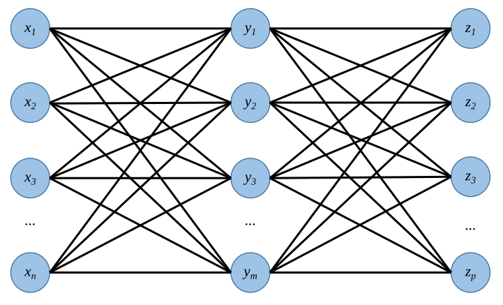
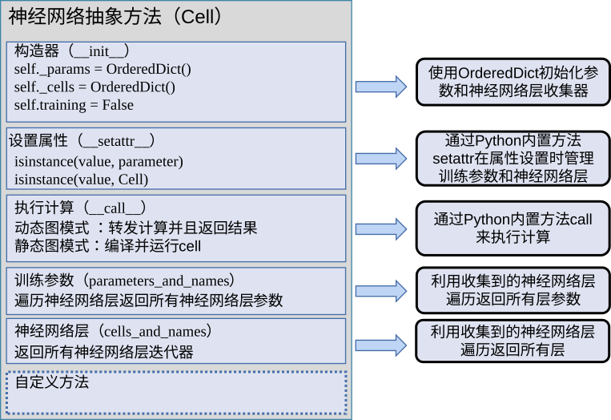

Machine Learning Systems: Design and Implementation (1st Edition)
Machine Learning Systems: Design and Implementation
The first open-source book to comprehensively cover machine learning systems


Zhibo Liang
Huawei Engineer

Jianfeng Yu
Huawei Engineer

Jinjin Chu
Huawei Engineer

Fubi Cai
Huawei Engineer

Chao Liu
Huawei Engineer

Gang Chen
Huawei Engineer

Mingqi Li
Huawei Engineer

Gangqiang Han
Huawei Engineer

Yehui Tang
Huawei Engineer

Xiaohui Li
Huawei Engineer

Haoyang Li
Huawei Engineer

Zhipeng Tan
Huawei Engineer

Shanni Li
Huawei Engineer
Table of Contents
- Preface
- Fundamentals
- Part I Framework Design
- Part II Application Scenarios
- Appendix
Preface
Background
In 2020, I joined the School of Informatics at the University of Edinburgh, which is considered one of the birthplaces of Artificial Intelligence (AI) research. The university offers machine learning courses that cover a wide range of topics, including natural language processing, computer vision, and computational neuroscience. Additionally, the university is well-known for providing a complete series of fundamental courses on computer systems, such as operating systems, programming languages, compilers, and computer architecture. However, when I asked my students about how computer systems are utilized to deploy and accelerate computation in machine learning, many of them appeared puzzled. This led me to contemplate whether the University of Edinburgh, along with other universities worldwide, should expand their curricula by adding a course that bridges the gap between machine learning and computer systems.
Initially, my idea was to expand an existing course. At the time, the “AI Systems” course at the University of California, Berkeley was particularly popular. It explored various research directions in machine learning systems, with an emphasis on studying research papers. Unfortunately, many of these papers did not stand the test of time, and the course did not provide a comprehensive architectural overview of the knowledge. Consequently, students were unable to gain a complete understanding of the subject or learn how to construct a machine learning system from scratch. I then looked to other universities, where I discovered that the University of Washington offered a brief course called “Deep Learning Systems,” which focused on the compilation process of machine learning programs. However, the course primarily centered around Apache TVM, a compiler stack for deep learning systems, and lacked a systematic introduction to machine learning systems. Stanford University also had a course in this area, “Machine Learning Systems Design,” but it focused on topics such as data cleansing, management, and annotation, as databases were the course designer’s primary expertise.
In my search for a suitable course, I expanded my scope to Microsoft Research Asia. Their “AI Systems” course seemed like the closest match to my expectations at the time, as it elaborated on the design concepts of machine learning systems. However, as I prepared to teach it to undergraduates, I realized that it provided only a general introduction to the core design concepts of machine learning systems and assumed students had a solid foundational knowledge of computer systems. It was better suited for doctoral students than undergraduates. In fact, all the courses I previously mentioned focused on studying research papers rather than on easily comprehensible textbooks that provide a clear knowledge map. Consequently, the materials involved in these courses were filled with scattered ideas, creating significant obstacles for students attempting to learn about machine learning systems.
On the flip side, 2020 was a year in which we saw the emergence of excellent course materials, providing fundamental knowledge about operating systems, databases, distributed systems, and even machine learning algorithms. However, it remained difficult to find a textbook that systematically introduces machine learning systems. Many enterprise and university labs needed to expend significant resources in order to train students and engineers from scratch and enhance their understanding of the fundamental architecture of machine learning systems. The absence of such textbooks presented a huge challenge in developing academic and industry talent. Against this backdrop, the idea of writing a textbook on machine learning systems began to take shape in my mind.
Beginning
When I shared this idea with my friends, they recognized the immense value of writing such a textbook. However, the preparation and writing process involved could be a daunting uphill battle. My postdoctoral mentor advised me to focus on publishing high-impact papers at the beginning of my faculty career instead of spending significant amounts of time and energy on a book that may not even be published. Other professors preferred to revise existing textbooks rather than write new ones, particularly in the field of machine learning systems, which evolve rapidly through a process of trial and error. Even if a new book were published, it may become obsolete quickly due to technological advancements over time.
Despite encountering several obstacles, the idea of writing a textbook on machine learning systems did not fade away until I went to China for a holiday and spoke with Xuefeng Jin, the architect of MindSpore. We first met in London around Christmas time in 2019 when he was leading the development of MindSpore 1.0, which had yet to be launched. We became acquainted through our mutual interest in the development of machine learning systems. In 2018, I co-built a new machine learning framework from scratch, similar to PyTorch, with my colleagues. Although the project ended due to insufficient resources, the experience motivated me to publish several papers on machine learning systems. Xuefeng and I both recognized how challenging it was to develop AI systems and to find experts in machine learning system development. Students often focused more on machine learning algorithms and had only a superficial understanding of key system design principles. They did not realize the significance of these principles until they applied machine learning technologies in practice, but by that point, it was too late to learn them. I shared my idea with Xuefeng about writing a textbook on machine learning systems and anticipated that it might take three to four years to complete. Xuefeng had a similar idea and asked whether he could assist in any way.
Xuefeng’s offer was enlightening. I started asking myself: why not break the conventional pattern of book writing, which follows the chronicle of discipline development over years by one or two professors. This pattern is similar to the waterfall model in traditional software development, but with technological advancements, software development has evolved to open-source agile development. Therefore, why should book writing follow the outdated approach? A good example of this is the \emph{Deep Dive into Deep Learning} book, compiled by the MXNet open-source community. I immediately invited Hao Dong, an assistant professor at Peking University and co-founder of the TensorLayer open-source community, to collaborate with us. Excited about this prospect, Xuefeng invited his colleague, Zhiliang Gan, to join us. We were committed to creating a new textbook and finally settled down to writing.
After several rounds of discussion, we named the book Machine Learning Systems: Design and Implementation. Our intention was to introduce the time-tested design principles of machine learning systems and share a wealth of system implementation experience, so that students could learn how to analyze and solve problems in future work and scientific research.
Community Building
Since the field of machine learning systems is an evolving discipline that continually nurtures a variety of research subjects, I pondered how to create an author community to ensure the book’s sustainability. As my research expertise focuses on large-scale software systems, I chose to build a community by referencing several key design points of distributed systems, as follows:
-
Prevention of single-point failure or bottleneck: Modern distributed systems are typically designed to separate the control plane from the data plane to avoid single-point failure or bottleneck. To ensure the sustainability of the book, we decided to follow this approach and design a highly scalable writing community using a distributed mechanism. The editor spent most of their time searching for excellent, proactive, and responsible chapter owners. Chapter owners then collaborated with other authors to facilitate writing progress on a per-chapter basis, communicating with chapter authors about writing details and adhering to given deadlines. The editor and chapter owners had weekly meetings to synchronize writing progress and ensure that chapter content met the overall expectations of the editor and the community in terms of quality.
-
Iterative improvement: The stochastic gradient descent (SGD) optimization algorithm in deep learning uses local gradients to perform numerous iterations in complex problems and find local optimal solutions. I applied the same principles when designing the iterative improvement process for the book’s quality. Similar to determining initial parameters, we drafted the first edition of the book on Overleaf. Then, we organized the content into a standard Git code repository and established a mechanism to encourage readers and community members to access issues and pull requests (PRs) on GitHub. We also set up comprehensive book building tools, continuous integration tools, and contributor seminars. This enabled us to continually improve the book’s quality, aiming to achieve optimal quality. It was akin to the outcome we achieve in machine learning by following the SGD method.
-
High availability: We established a 24/7 online writing platform for participants to develop the book and receive feedback from the community in any time zone and language around the world. The Git repository was hosted on GitHub and mirrored on Gitee to ensure high availability of the writing platform.
-
Content neutralization: In a distributed system, the equal treatment of each node is crucial for long-term operation, as it allows for a unified approach to rectifying issues. Similarly, in writing a book, we must anticipate potential challenges such as outdated designs or the departure of writers, and mitigate them through collaboration among participants from diverse backgrounds. We emphasize the importance of creating neutral, objective, and inclusive content and ensuring that any issues that arise do not impede progress.
Current Situation and Future Outlook
With the established mechanism, writing progressed smoothly and more participants joined the project. My former students Xiulong Yuan, Zihan Ding, Yao Fu, Jie Ren, and Wenteng Liang were also dedicated to writing and editing this book. Jiarong Han and Cheng Lai from Peng Cheng Laboratory, along with numerous MindSpore developers all made significant contributions to the book. Many senior designers of machine learning systems also held discussions with us through various channels and provided valuable feedback for the book. In addition, many academic and industry top minds shared their thoughts with us. And worldwide, talented students participated in writing. They included Jiankai Sun from Stanford University, Peiyuan Liao from Carnegie Mellon University, Hanchen Wang from Cambridge University, and Pei Mu from the University of Edinburgh. Kaiyan Xiao, a machine learning expert from GlaxoSmithKline PLC, also became one of the authors. Furthermore, professors Peter Pietzuch from Imperial College London and Lei Chen from Hong Kong University of Science and Technology, among others, provided continuous writing advice to enhance the book’s quality.
After we implemented the “distributed system” for book writing, the book’s quality has continually improved. When we released the book as an open-source project, the number of participants rapidly increased, coming as a major surprise to us. Driven by the open-source community, the English and Chinese versions of the book have been advanced. This was the first time that I realized the huge benefit of using the idea of distributed systems and the knowledge of machine learning in solving complex problems in real life.
A single tree is too weak to withstand a sandstorm. Similarly, it was the forest of friends and the power of the community that gave us the courage to take the very first and crucial step in writing this book. I hope that this way of thinking can inspire and help in finding solutions to other complex problems.
By May 2022, the core authors and editors (Luo Mai, Hao Dong, Xuefeng Jin, and Zhiliang Gan), the book coordinator (Zhipeng Tan), and the following contributors have endeavored to create this book: Introduction (Luo Mai, Hao Dong, and Zhiliang Gan), Programming Model (Cheng Lai, Luo Mai, and Hao Dong), Computational Graph (Jiarong Han, Luo Mai, and Hao Dong), AI Compiler and Frontend Technology (Zhibo Liang, Qinghua Zhang, Bingjian Huang, Jianfeng Yu, and Zhiliang Gan), AI Compiler Backend and Runtime (Jinjin Chu, Pei Mu, and Fubi Cai), Hardware Accelerator (Renwei Zhang, Jie Ren, Wenteng Liang, Chao Liu, Gang Chen, and Mingqi Li), Data Processing (Xiulong Yuan), Model Deployment (Gangqiang Han, Yehui Tang, Zhiqiang Zhai, and Shanni Li), Distributed Training (Luo Mai and Peiyuan Liao) Federated Learning System (Tiancheng Wu and Hanchen Wang), Recommender System (Yao Fu, Bei Pei, and Luo Mai), Reinforcement Learning System (Zihan Ding), Explainable AI System (Haoyang Li and Xiaohui Li), and Robotic System (Jiankai Sun and Kaiyan Xiao).
We welcome new contributors to help improve and expand the book’s content. If you’re interested, please contact us through our book’s OpenMLSys Community. Let’s work together to create a machine learning systems book that advances the world.
Luo Mai
Edinburgh, United Kingdom
4th May 2022
Introduction
This chapter aims to provide readers with a comprehensive understanding of machine learning systems by describing the applications of machine learning and summarizing the design objectives and basic composition principles of such systems.
- Machine Learning Applications
- Design Objectives of Machine Learning Frameworks
- Machine Learning Framework Architecture
- Application Scenarios of Machine Learning Systems
- Book Organization and Intended Audience
Machine Learning Applications
In general terms, machine learning is a technology that learns useful knowledge from data. There are a variety of machine learning methods, including supervised learning, unsupervised learning, and reinforcement learning.
-
In supervised learning, the mapping relationships between inputs and outputs are known to machines. For example, a discrete label can be assigned to an input image.
-
In unsupervised learning, input data is provided to machines without any labels assigned. For example, to distinguish cats and dogs among a group of images, a machine needs to learn by itself the characteristics of cats and dogs in order to classify them. This unsupervised classification is also called clustering.
-
In reinforcement learning, an algorithm that runs on the machine automatically improves itself to achieve the task objective in a given learning environment. A well-known example of this is AlphaGo, in which the rules of Go serve as the learning environment and the victory score is set as the task objective.
Machine learning is applied in a variety of fields — computer vision, natural language processing (NLP), and intelligent decision-making, to name just a few. Computer vision, in a narrow sense, includes all image-based applications, such as facial recognition, object recognition, target tracking, human pose estimation, and image understanding. It is widely used in autonomous driving, smart city, smart security, and other scenarios.
NLP involves both text- and speech-related applications, including language translation, text-to-speech and speech-to-text conversion, text understanding, and image style transfer. NLP and computer vision overlap in many aspects. For instance, in order to generate text description for images, or to generate or process images based on texts, machines need to handle both language and image data.
Intelligent decision-making is usually achieved through technical means such as computer vision, NLP, reinforcement learning, and cybernetics. It is widely used in many scenarios, such as robotics, autonomous driving, games, recommender systems, smart factories, and smart grids.
These machine learning applications use different underlying algorithms — such as support vector machine (SVM), logistic regression, and naive Bayes — based on the needs and characteristics of the applications. In recent years, deep learning has progressed significantly thanks to the availability of massive data, development of neural network algorithms, and maturity of hardware accelerators. But despite a wide variety of machine learning algorithms, the vast majority of computation work still relies on vector and matrix operations, regardless of whether classical or deep learning algorithms are employed. In this book, we therefore discuss machine learning systems that employ neural networks.
Design Objectives of Machine Learning Frameworks
Machine learning frameworks (e.g., TensorFlow, PyTorch, and MindSpore) were designed and implemented so that machine learning algorithms could be developed efficiently for different applications. In a broad sense, these frameworks achieved the following common design objectives.
-
Neural network programming: The huge success of deep learning has solidified neural networks as the core of many machine learning applications. People need to customize neural networks to meet their specific application requirements — such customization typically results in the creation of convolutional neural networks (CNNs) and self-attention neural networks. In order to develop, train, and deploy these networks, we need a generic system software.
-
Automatic differentiation: The training of neural networks involves continuously computing gradients through the combined use of training data, data annotation, and a loss function to iteratively improve model parameters. Computing gradients manually is a complex and time-consuming task. Consequently, a machine learning framework is expected to compute gradients automatically based on a neural network application provided by developers. This computation process is called automatic differentiation.
-
Data management and processing: Data is the key to machine learning. There are several types of data, including training, validation, and test datasets, as well as model parameters. A machine learning system should be able to read, store, and preprocess (data augmentation and cleansing are examples of preprocessing) these types of data by itself.
-
Model training and deployment: A machine learning model is expected to provide optimal performance. In order to achieve this, we need to use an optimization method — for example, mini-batch stochastic gradient descent (SGD) — to repeatedly compute gradients through multi-step iteration. This process is called training. Once the training is complete, we can then deploy the trained model to the inference device.
-
Hardware accelerators: Many core operations in machine learning can be deemed as matrix computation. To accelerate such computation, machine learning developers leverage many specially designed hardware components referred to as hardware accelerators or AI chips.
-
Distributed training: As the volume of training data and the number of neural network parameters increase, the amount of memory used by a machine learning system far exceeds what a single machine can provide. Therefore, a machine learning framework should be able to train models on distributed machines.
Early attempts by developers to design such a framework employed traditional methods such as neural network libraries (e.g., Theano and Caffe) and data processing frameworks (e.g., Apache Spark and Google’s Pregel), but the results were disappointing. At that time, neural network libraries lacked the ability to manage and process large datasets, deploy models, or perform distributed model execution, meaning they were not qualified enough for developing today’s product-level machine learning applications even though they supported neural network development, automatic differentiation, and hardware accelerators. Furthermore, data-parallel computing frameworks were not suitable for developing neural network–centered machine learning applications because they lacked support for neural networks, automatic differentiation, and accelerators, although such frameworks were already mature in supporting distributed running and data management.
-
Differences between machine learning frameworks and related systems
| Design Method | Neural Network | Automatic Differentiation | Data Management | Training and Deployment | Accelerator | Distributed Training |
|---|---|---|---|---|---|---|
| Neural network libraries | Yes | Yes | No | No | Yes | No |
| Data processing frameworks | No | No | Yes | No | No | Yes |
| Machine learning frameworks | Yes | Yes | Yes | Yes | Yes | Yes |
| :label:intro-comparison |
Machine Learning Framework Architecture
Figure 图1.3.1 shows the basic architecture of a typical, complete machine learning framework.
图1.3.1 Architecture of a machine learningframework
-
Programming interfaces: A machine learning framework needs to provide programming interfaces, usually those of high-level programming languages (like Python), to cater for the diversified backgrounds of machine learning developers. At the same time, the framework also needs to support a system implementation that is mainly based on low-level programming languages (e.g., C and C++) so that operating system features (e.g., thread management and network communication) and various hardware accelerators can be utilized efficiently for optimized performance.
-
Computational graph: Machine learning applications, though implemented through different programming interfaces, need to share the same backend when the applications run. The computational graph technology is key to realizing this backend. A computational graph, which defines a user’s machine learning application, includes many graph nodes that represent computational operations. These nodes are connected by edges, which represent computational dependencies.
-
Compiler frontend: Once a computational graph is built, the machine learning framework analyzes and optimizes it (or the corresponding application) through the compiler frontend. The compiler frontend provides key functions such as intermediate representation, automatic differentiation, type derivation, and static analysis.
-
Compiler backend and runtime: After analyzing and optimizing the computational graph, the machine learning framework uses the compiler backend and runtime to optimize different types of underlying hardware. In addition to optimizing the selection or scheduling sequence of operators, common optimization technologies usually analyze the L2/L3 cache size and the instruction pipeline length to match hardware specifications.
-
Heterogeneous processors: A machine learning application is co-executed by central processing units (CPUs) and hardware accelerators (such as NVIDIA GPUs, Huawei Ascend processors, and Google TPUs). During the execution, non-matrix operations (e.g., complex data preprocessing and computational graph scheduling) are handled by CPUs, whereas matrix operations and certain frequently used machine learning operators (e.g., Transformer operators and convolution operators) are performed by hardware accelerators.
-
Data processing: A machine learning application needs to perform complex preprocessing on raw data and manage a large number of training, validation, and test datasets. The data processing module (e.g., the tf.data module of TensorFlow, or the DataLoader module of PyTorch) is responsible for such data-centered operations.
-
Model deployment: In addition to model training, model deployment is another key function needed in a machine learning framework. Model compression technologies — such as model conversion, quantization, and distillation — enable us to run models on hardware with limited memory. It is also necessary to optimize model operators for specific hardware inference platforms (e.g., NVIDIA Orin). Furthermore, in order to ensure the security of a model (e.g., to deny unauthorized user reads), model obfuscation must be considered in the framework’s design.
-
Distributed training: A machine learning model is usually trained in parallel on distributed compute nodes. Common parallel training methods include data parallelism, model parallelism, hybrid parallelism, and pipeline parallelism, all of which are usually implemented through the remote procedure call (RPC), collective communication, or parameter server.
Application Scenarios of Machine Learning Systems
A machine learning framework is commonly utilized in diverse scenarios, giving rise to a range of machine learning systems. In a broader context, a machine learning system refers to a collective term encompassing a variety of software and hardware systems that facilitate and execute machine learning applications. Figure 图1.4.1 provides an overview of the various application scenarios for machine learning systems.
图1.4.1 Application scenarios of machine learningsystems
-
Federated learning: Laws and regulations on user privacy protection and data protection prevent many machine learning applications from accessing user data directly for model training purposes. This is where federated learning — based on a machine learning framework — benefits such applications.
-
Recommender system: Incorporating machine learning (especially deep learning) into recommender systems have achieved major success over the past few years. Compared with traditional rule-based recommender systems, those based on deep learning can analyze massive feature data of users more effectively, thereby bringing huge improvements to the accuracy and timeliness of recommendations.
-
Reinforcement learning: Because reinforcement learning is special in terms of the way it collects data and trains models, it is therefore necessary to develop dedicated reinforcement learning systems based on a machine learning framework.
-
Explainable AI: As machine learning becomes more and more popular in many key areas, including finance, healthcare, and governmental affairs, developing explainable AI systems based on a machine learning framework is gaining wider attention.
-
Robotics: Robotics is another area where the use of machine learning frameworks is gaining popularity. Compared with traditional robot vision methods, machine learning methods have achieved enormous success in several robot tasks, such as automatic feature extraction, target recognition, and path planning.
-
Graph learning: Graphs are the most widely used data structure and are used to express large volumes of Internet data, for instance, social network graphs and product relationship graphs. Machine learning algorithms have been proven effective for analyzing large-scale graph data. A machine learning system designed to process graph data is referred to as a graph learning system.
-
Scientific computing: Scientific computing covers a wide range of traditional fields (such as electromagnetic simulation, graphics, and weather forecast), in which many large-scale problems can be effectively solved by machine learning methods. Therefore, developing special machine learning systems for scientific computing is becoming an increasingly common practice.
-
Scheduling of a machine learning cluster: A machine learning cluster consists of heterogeneous processors, heterogeneous networks, and even heterogeneous storage devices. But in a machine learning cluster, computing tasks often have common characteristics during their execution (e.g., iterative execution based on the collective communication operator AllReduce). In order to take account of the cluster’s heterogeneity of devices and the common characteristics in task execution, a machine learning cluster is often designed to use a special scheduling method.
-
Quantum computing: Quantum computers are generally realized through a hybrid architecture, in which quantum computing is performed by quantum computers and the simulation of quantum computers is performed by classical computers. Many simulation systems (such as TensorFlow Quantum and MindQuantum) are realized on the basis of a machine learning framework because the simulation often requires massive matrix computations and gradient computation.
There are too many machine learning systems for this book to cover them all in depth. Instead, we aim to provide a system designer’s perspective on several core systems used in federated learning, recommenders, reinforcement learning, explainable AI, and robotics.
Book Organization and Intended Audience
This book adopts a level-by-level approach to discuss design principles and implementation practices of machine learning systems. The Framework Design part starts with introducing key concepts that framework users need to understand, including programming interface design and computational graph. This part then describes the frontend and backend techniques used in AI compilers as well as key techniques for processing data, deploying models, and distributing training to multiple machines. The Application Scenarios part elaborates on several important types of machine learning systems, such as federated learning and recommender systems, in an attempt to provide readers with useful knowledge for both deploying and operating machine learning frameworks in different application scenarios.
This book is intended for the following readers:
-
Students: This book provides a wealth of design principles and hands-on experience of machine learning systems. Such knowledge will help students better understand the theoretical pros and cons and practical challenges of machine learning algorithms.
-
Researchers: This book aims to help researchers tackle various challenges in machine learning implementation and guide them through the design of next-generation machine learning algorithms meant to solve large-scale practical problems.
-
Developers: We also hope this book will allow developers to gain a profound understanding on the internal architecture of a machine learning system. Such knowledge will move them a step further in developing new functions for their applications, debugging system performance issues, and even customizing a machine learning system based on their business needs.
Programming Model
Machine learning frameworks comprise various components that facilitate the efficient development of algorithms, data processing, model deployment, performance optimization, and hardware acceleration. When designing the application programming interfaces (APIs) for these components, a key consideration is striking the right balance between framework performance and usability. To achieve optimal performance, developers utilize C or C++, as these programming languages enable efficient invocation of the APIs provided by the operating system and hardware accelerators.
Regarding usability, machine learning framework users, including data scientists, biologists, chemists, and physicists, often possess strong industrial backgrounds and are skilled in using high-level scripting languages like Python, Matlab, R, and Julia. While these languages offer remarkable programming usability, they lack deep optimization capabilities for underlying hardware or operating systems compared to C and C++. Therefore, the core design objective of machine learning frameworks encompasses two aspects: providing easy-to-use APIs for implementing algorithms using high-level languages like Python, and providing low-level APIs centered around C and C++ to assist framework developers in implementing numerous high-performance components and efficiently executing them on hardware. This chapter describes strategies for achieving this design objective.
The chapter aims to achieve the following learning objectives:
-
Understanding the workflows and programming principles of machine learning frameworks.
-
Understanding the design of neural network models and layers.
-
Understanding how machine learning frameworks bridge Python and C/C++ functions.
-
Understanding the support for functional programming in machine learning frameworks.
- Overview
- Machine Learning Workflow
- Neural Network Programming
- Bridging Python and C/C++ Functions
- Functional Programming
- Chapter Summary
Overview
With the advent of machine learning systems, the design of user-friendly
and high-performance APIs has become a paramount concern for system
designers. In the early stages of machine learning frameworks (as
depicted in Figure ch03/framework_development_history), developers often
opted for high-level programming languages like Lua (Torch) and Python
(Theano) to write machine learning programs. These frameworks offered
essential functions, including model definition and automatic
differentiation, which are integral to machine learning. They were
particularly well-suited for creating small-scale machine learning
applications targeted toward scientific research purposes.
The rapid advancement of deep neural networks (DNNs) since 2011 has sparked groundbreaking achievements in various AI application domains, such as computer vision, speech recognition, and natural language processing. However, training DNNs requires substantial computational power. Unfortunately, earlier frameworks like Torch (primarily using Lua) and Theano (mainly using Python) were unable to fully harness this computing power. On the other hand, general-purpose APIs like CUDA C for computational accelerators such as NVIDIA GPUs have become increasingly mature, and multi-thread libraries like POSIX Threads built on CPU multi-core technology have gained popularity among developers. Consequently, many machine learning users sought to develop high-performance deep learning applications utilizing C/C++. These requirements led to the emergence of frameworks like Caffe, which employed C/C++ as their core APIs.
However, customization of machine learning models is often necessary to suit specific deployment scenarios, data types, identification tasks, and so on. This customization typically falls on the shoulders of AI application developers, who may come from diverse backgrounds and may not fully leverage the capabilities of C/C++. This became a significant bottleneck that hindered the widespread adoption of programming frameworks like Caffe, which heavily relied on C/C++.
In late 2015, Google introduced TensorFlow, which revolutionized the landscape. In contrast to Torch, TensorFlow adopted a design where the frontend and backend were relatively independent. The frontend, presented to users, utilized the high-level programming language Python, while the high-performance backend was implemented in C/C++. TensorFlow provided numerous Python-based frontend APIs, gaining wide acceptance among data scientists and machine learning researchers. It seamlessly integrated into Python-dominated big data ecosystems, benefiting from various big data development libraries such as NumPy, Pandas, SciPy, Matplotlib, and PySpark. Python’s exceptional interoperability with C/C++, as demonstrated in multiple Python libraries, further enhanced TensorFlow’s appeal. Consequently, TensorFlow combined the flexibility and ecosystem of Python with high-performance capabilities offered by its C/C++ backend. This design philosophy was inherited by subsequent frameworks like PyTorch, MindSpore, and PaddlePaddle.
Subsequently, as observed globally, prominent enterprises started favoring open-source machine learning frameworks, leading to the emergence of Keras and TensorLayerX. These high-level libraries significantly expedited the development of machine learning applications. They provided Python APIs that allowed quick importing of existing models, and these high-level APIs were decoupled from the intricate implementation details of specific machine learning frameworks. As a result, Keras and TensorLayerX could be utilized across different machine learning frameworks.
While deep neural networks continued to evolve, new challenges surfaced regarding the APIs of machine learning frameworks. Around 2020, novel frameworks like MindSpore and JAX emerged to tackle these challenges. MindSpore, in addition to inheriting the hybrid interfaces (Python and C/C++) from TensorFlow and PyTorch, expanded the scope of machine learning programming models. This expansion facilitated efficient support for a diverse range of AI backend chips, including NVIDIA GPU, Huawei Ascend , and ARM. Consequently, machine learning applications can be swiftly deployed across a wide array of heterogeneous devices.
Simultaneously, the proliferation of ultra-large datasets and ultra-large DNNs necessitated distributed execution as a fundamental design requirement for machine learning programming frameworks. However, implementing distributed execution in TensorFlow and PyTorch required developers to write substantial amounts of code for allocating datasets and DNNs across distributed nodes. Yet, many AI developers are not well-versed in distributed programming. In this regard, JAX and MindSpore significantly improves the situation by enabling the seamless execution of programs on a single node across various other nodes.
Machine Learning Workflow
In machine learning systems, the fundamental design objective of programming models is to offer comprehensive workflow programming support for developers. A typical machine learning task adheres to the workflow depicted in Figure 图2.2.1. This workflow involves loading the training dataset, training, testing, and debugging models. The following APIs are defined to facilitate customization within the workflow (assuming that high-level APIs are provided as Python functions):
- Data Processing API: Users first require a data processing API
to read datasets from a disk. Subsequently, they need to preprocess
the data to make it suitable for input into machine learning models.
Code
ch02/code2.2.1is an example of how PyTorch can be used to load data and create data loaders for both training and testing purposes.
ch02/code2.2.1
import pickle
from torch.utils.data import Dataset, DataLoader
data_path = '/path/to/data'
dataset = pickle.load(open(data_path, 'rb')) # Example for a pkl file
batch_size = ... # You can make it an argument of the script
class CustomDataset(Dataset):
def __init__(self, data, labels):
self.data = data
self.labels = labels
def __len__(self):
return len(self.data)
def __getitem__(self, idx):
sample = self.data[idx]
label = self.labels[idx]
return sample, label
training_dataset = CustomDataset(dataset['training_data'], dataset['training_labels'])
testing_dataset = CustomDataset(dataset['testing_data'], dataset['testing_labels'])
training_dataloader = DataLoader(training_dataset, batch_size=batch_size, shuffle=True) # Create a training dataloader
testing_dataloader = DataLoader(testing_dataset, batch_size=batch_size, shuffle=False) # Create a testing dataloader
- Model Definition API: Once the data is preprocessed, users need
a model definition API to define machine learning models. These
models include model parameters and can perform inference based on
given data. Code
ch02/code2.2.2is an example of how to create a custom model in Pytorch:
ch02/code2.2.2
import torch.nn as nn
class CustomModel(nn.Module):
def __init__(self, input_size, output_size):
super(CustomModel, self).__init__()
self.linear = nn.Linear(input_size, output_size) # A single linear layer
def forward(self, x):
return self.linear(x)
- Optimizer Definition API: The outputs of models need to be
compared with user labels, and their difference is evaluated using a
loss function. The optimizer definition API enables users to define
their own loss functions and import or define optimization
algorithms based on the actual loss. These algorithms calculate
gradients and update model parameters. Code
ch02/code2.2.3is an example of an optimizer definition in Pytorch:
ch02/code2.2.3
import torch.optim as optim
import torch.nn
model = CustomModel(...)
# Optimizer definition (Adam, SGD, etc.)
optimizer = optim.Adam(model.parameters(), lr=1e-4, momentum=0.9)
loss = nn.CrossEntropyLoss() # Loss function definition
- Training API: Given a dataset, model, loss function, and
optimizer, users require a training API to define a loop that reads
data from datasets in a mini-batch mode. In this process, gradients
are computed repeatedly, and model parameters are updated
accordingly. This iterative update process is known as training.
Code
ch02/code2.2.4is an example of how to train a model in Pytorch:
ch02/code2.2.4
device = "cuda:0" if torch.cuda.is_available() else "cpu" # Select your training device
model.to(device) # Move the model to the training device
model.train() # Set the model to train mode
epochs = ... # You can make it an argument of the script
for epoch in range(epochs):
for batch_idx, (data, target) in enumerate(training_dataloader):
data, target = data.to(device), target.to(device)
optimizer.zero_grad() # zero the parameter gradients
output = model(data) # Forward pass
loss_value = loss(output, target) # Compute the loss
loss_value.backward() # Backpropagation
optimizer.step()
- Testing and Debugging APIs: Throughout the training process,
users need a testing API to evaluate the accuracy of the model
(training concludes when the accuracy exceeds the set goal).
Additionally, a debugging API is necessary to verify the performance
and correctness of the model. Code
ch02/code2.2.5is an example of model evaluation in Pytorch:
ch02/code2.2.5
model.eval() # Set the model to evaluation mode
overall_accuracy = []
for batch_idx, (data, target) in enumerate(testing_dataloader):
data, target = data.to(device), target.to(device)
output = model(data) # Forward pass
accuracy = your_metrics(output, target) # Compute the accuracy
overall_accuracy.append(accuracy) # Print the accuracy
# For debugging, you can print logs inside the training or evaluation loop, or use python debugger.
图2.2.1 Workflow within a machine learningsystem
Neural Network Programming
To implement an AI model, a machine learning framework often takes a neural-network-centric programming interface. Regardless of their structures, neural networks are comprised of three elements: (1) Nodes serve as computational units that carry out the processing of a neural network, (2) Node Weights are variables updated by gradients during the training process, and (3) Node Connections specify how data (for example, activation and gradients) are transmitted within a neural network.
Neural Network Layers
In order to simplify the construction of a neural network, many machine learning frameworks utilize a layer-oriented approach. This method organizes nodes, their weights, and their connections into cohesive neural network layers.
To illustrate this, we can examine the use of fully connected layers, a type of neural network layer. A distinguishing characteristic of fully connected layers is that every node in one layer is linked to every node in the succeeding layer. This method facilitates an extensive linear transformation of the feature space. By doing so, data can be transposed from a high-dimensional space to a lower-dimensional one, and conversely.
As shown in Figure ch03/fc_layer_1, the fully connected process transforms
n data points from the input into an m sized feature space. This is
followed by a further transformation into a p sized feature space.
It’s important to highlight that the quantity of parameters in a fully
connected layer grows substantially — from n\(\times\)m during the
initial transformation to m\(\times\)p in the subsequent one.

Several types of neural network layers are widely used in various
applications, including fully connected, convolution, pooling,
recurrent, attention, batch normalization, and dropout layers. When
dealing with problems related to time series association in sequential
data, recurrent neural layers are commonly employed. However, recurrent
neural layers encounter difficulties with vanishing or exploding
gradients as the sequence length increases during the training process.
The Long Short-Term Memory (LSTM) model was developed as a solution to
this problem, enabling the capturing of long-term dependencies in
sequential data. Code ch02/code2.3.1 shows some examples of NN Layers in Pytorch:
ch02/code2.3.1
fc_layer = nn.Linear(16, 5) # A fully connected layer with 16 input features and 5 output features
relu_layer = nn.ReLU() # A ReLU activation layer
conv_layer = nn.Conv2d(3, 16, 3, padding=1) # A convolutional layer with 3 input channels, 16 output channels, and a 3x3 kernel
dropout_layer = nn.Dropout(0.2) # A dropout layer with 20% dropout rate
batch_norm_layer = nn.BatchNorm2d(16) # A batch normalization layer with 16 channels
layers = nn.Sequential(conv_layer, batch_norm_layer, relu_layer, fc_layer, dropout_layer) # A sequential container to combine layers
In tasks related to natural language processing, the Sequence-to-Sequence (Seq2Seq) architecture applies recurrent neural layers in an encoder-decoder framework. Often, the decoder component of Seq2Seq integrates the attention mechanism, allowing the model to concentrate on pertinent segments of the input sequence. This amalgamation contributed to the inception of the Transformer model, a pivotal element in the architecture of the Bidirectional Encoder Representations from Transformers (BERT) and Generative Pre-trained Transformers (GPT) models. Both BERT and GPT have propelled significant progress in diverse language-related tasks.
Neural Network Implementation
With an increase in the number of network layers, the manual management
of training variables becomes progressively complex. Thankfully, most
machine learning frameworks provide user-friendly APIs that encapsulate
neural network layers into a base class, which is then inherited by all
other layers. Notable examples include mindspore.nn.Cell in MindSpore
and torch.nn.Module in PyTorch. Code
ch02/code2.3.2 gives a MLP Implementation using Pytorch.
ch02/code2.3.2
class MLP(nn.Module):
def __init__(self, input_size, hidden_size, num_classes, dropout_rate=0.5):
super(MLP, self).__init__()
self.fc1 = nn.Linear(input_size, hidden_size)
self.bn1 = nn.BatchNorm1d(hidden_size)
self.relu = nn.ReLU()
self.dropout = nn.Dropout(dropout_rate)
self.fc2 = nn.Linear(hidden_size, num_classes)
def forward(self, x):
out = self.fc1(x)
out = self.bn1(out)
out = self.relu(out)
out = self.dropout(out)
out = self.fc2(out)
return out
Figure ch03/model_build demonstrates the intricate process of
constructing a neural network. The base class plays a pivotal role in
initializing training parameters, managing their status, and outlining
the computation process. Conversely, the neural network model implements
functions to administer the network layers and their associated
parameters. Both MindSpore’s Cell and PyTorch’s Module efficiently serve
these functions. Notably, Cell and Module function not just as model
abstraction methods but also as base classes for all networks.
Existing model abstraction strategies can be divided into two categories. The first involves the abstraction of two methods: Layer (which oversees parameter construction and forward computation for an individual neural network layer) and Model (which manages the connection, combination of neural network layers, and administration of layer parameters). The second category combines Layer and Model into a single method, representing both an individual neural network layer and a model composed of multiple layers. Cell and Module implementations fall into this second category.
Figure ch03/cell_abstract portrays a universal method for
designing the abstraction of a neural network layer. The constructor
uses the OrderedDict class from the Python collections module to
store initialized neural network layers and their corresponding
parameters. This results in an ordered output, which is more compatible
with stacked deep learning models compared to an unordered Dict. The
management of neural network layers and parameters is conducted within
the __setattr__ method. Upon detecting that an attribute pertains to a
neural network layer or represents a layer parameter, __setattr__
records the attribute appropriately.
In the neural network model, the computation process is vital. This
process is defined by reloading the __call__ method during the
implementation of neural network layers. To acquire the training
parameters, the base class traverses all network layers. All retrieved
training parameters are then conveyed to the optimizer through the
assigned interface that returns such parameters. This text, however,
only touches on a few significant methods.
Concerning custom methods, it is often required to implement techniques for inserting/deleting parameters, adding/removing neural network layers, and retrieving neural network model information.

In order to preserve simplicity, we provide a condensed overview of the
base class implementation for neural network interface layers. In
practical applications, users are typically unable to directly reload
the __call__ method responsible for computation. Instead, an operation
method is usually defined outside of __call__, which users can invoke
to utilize __call__.
Bridging Python and C/C++ Functions
Developers frequently encounter the need to incorporate custom operators into a machine learning framework. These operators implement new models, optimizers, data processing functions, and more. Custom operators, in particular, often require implementation in C/C++ to achieve optimized performance. They also have Python interfaces, facilitating developers to integrate custom operators with existing machine learning workflows written in Python. This section will delve into the implementation details of this process.
The Python interpreter, being implemented in C, enables the invocation of C and C++ functions within Python. Contemporary machine learning frameworks such as TensorFlow, PyTorch, and MindSpore rely on pybind11 to automatically generate Python functions from underlying C and C++ functions. This mechanism is known as Python binding. Prior to the advent of pybind11, Python binding was accomplished using one of the following approaches:
-
C-APIs in Python: This approach necessitates the inclusion of
Python.hin C++ programs and the utilization of Python’s C-APIs to execute Python operations. To effectively work with C-APIs, developers must possess a comprehensive understanding of Python’s internal implementation, such as managing reference counting. -
Simplified Wrapper and Interface Generator (SWIG): SWIG serves as a bridge between C/C++ code and Python, and it played a significant role in the initial development of TensorFlow. Utilizing SWIG involves crafting intricate interface statements and relying on SWIG to automatically generate C code that interfaces with Python’s C-APIs. However, due to the lack of readability in the generated code, the maintenance costs associated with it tend to be high.
-
Python
ctypesmodule: This module encompasses a comprehensive range of types found in the C language and allows direct invocation of dynamic link libraries (DLLs). However, a limitation of this module is its heavy reliance on native C types, which results in insufficient support for customized types. -
CPython: In basic terms, CPython can be described as the fusion of Python syntax with static types from the C language. It facilitates the retention of Python’s syntax while automatically translating CPython functions into C/C++ code. This functionality empowers developers to seamlessly incorporate invocations of C/C++ functions within the CPython environment.
-
Boost::Python (a C++ library): Boost::Python allows for the exposure of C++ functions as Python functions. It operates on similar principles to Python’s C-APIs but provides a more user-friendly interface. However, the reliance on the Boost library introduces a significant dependency on third-party components, which can be a potential drawback for Boost::Python.
In comparison to the above Python binding approaches, pybind11 shares
similarities with Boost::Python in terms of simplicity and usability.
However, pybind11 stands out due to its focus on supporting C++ 11 and
eliminating dependencies on Boost. As a lightweight Python library,
pybind11 is particularly suitable for exposing numerous Python functions
in complex C++ projects such as the machine learning system discussed in
this book. The combination of Code
ch02/code2.5.1 and Code
ch02/code2.5.2 is an example of adding a custom operator to
Pytorch with the integration of C++ and Python:
In C++:
ch02/code2.5.1
//custom_add.cpp
#include <torch/extension.h>
#include <pybind11/pybind11.h>
torch::Tensor custom_add(torch::Tensor a, torch::Tensor b) {
return a + b;
}
PYBIND11_MODULE(TORCH_EXTENSION_NAME, m) {
m.def("custom_add", &custom_add, "A custom add function");
}
In Python:
ch02/code2.5.2
import torch
from torch.utils.cpp_extension import load
# Load the C++ extension
custom_extension = load(
name='custom_extension',
sources=['custom_add.cpp'],
verbose=True
)
# Use your custom add function
a = torch.randn(10)
b = torch.randn(10)
c = custom_extension.custom_add(a, b)
Functional Programming
In the following, we will discuss the reasons behind the growing trend of incorporating functional programming into the design of machine learning frameworks.
Benefits of Functional Programming
Training constitutes the most critical phase in machine learning, and the manner in which training is depicted hinges significantly on optimizer algorithms. Predominantly, contemporary machine learning tasks utilize first-order optimizers, favored for their ease of use. With machine learning advancing at a rapid pace, both software and hardware are incessantly updated to stay abreast. Consequently, an increasing number of researchers are beginning to investigate higher-order optimizers, noted for their superior convergence performance. Frequently utilized second-order optimizers, such as the Newton method, quasi-Newton method, and AdaHessians, necessitate the computation of a Hessian matrix incorporating second-order derivative information. Two considerable challenges arise from this computation: 1) how to manage such a hefty computational load efficiently; 2) how to express higher-order derivatives in programmatic language.
In recent times, numerous large AI models have been introduced, which include (with the number of parameters noted in parentheses) OpenAI GPT-3 (175B) in 2020; PanGu (100B), PanGu-\(\alpha\) (200B), Google’s Switch Transformer (1.6T), and WuDao (1.75T) in 2021; along with Facebook’s NLLB-200 (54B) in 2022. The demand for ultra-large model training is escalating, and data parallelism alone cannot meet this growing requirement. Conversely, model parallelism demands manual model segmentation, a process that is time-intensive and laborious. Consequently, the main challenge future machine learning frameworks must overcome is how to actualize automatic parallelism. At its core, a machine learning model is a representation of a mathematical model. Hence, the ability to succinctly represent machine learning models has risen to a key concern in the design of programming paradigms for machine learning frameworks.
Recognizing the challenges presented by the practical implementation of machine learning frameworks, researchers have identified that functional programming could offer beneficial solutions. Functional programming, in computer science, is a programming paradigm that envisions computation as the evaluation of mathematical functions, actively avoiding state changes and data mutations. This paradigm harmonizes well with mathematical reasoning. Neural networks are composed of interconnected nodes, with each node performing basic mathematical operations. Functional programming languages allow developers to portray these mathematical operations in a language that closely mirrors the operations, enhancing the readability and maintainability of programs. Concurrently, in functional languages, functions are kept separate, simplifying the management of concurrency and parallelism.
In summary, functional programming is anticipated to confer the following benefits to machine learning frameworks:
-
It is suited for machine learning scenarios where higher-order derivatives are needed.
-
It simplifies the development of parallel programming interfaces.
-
It results in a more concise code representation.
Framework Support for Functional Programming
Machine learning frameworks have increasing support for functional programming. In 2018, Google rolled out JAX. Contrary to traditional machine learning frameworks, JAX amalgamates neural network computation and numerical computation. Its interfaces are compatible with native data science interfaces in Python, such as NumPy and SciPy. Moreover, JAX extends distribution, vectorization, high-order derivation, and hardware acceleration in a functional programming style, characterized by Lambda closure and no side effects.
In 2020, Huawei introduced MindSpore, the functional differential
programming architecture of which allows users to concentrate on the
native mathematical expressions of machine learning models. In 2022,
taking inspiration from Google’s JAX, PyTorch launched functorch.
Functorch is essentially a library aimed at providing composable vmap
(vectorization) and autodiff transforms compatible with PyTorch modules
and PyTorch autograd, thereby achieving excellent eager-mode
performance. It can be inferred that functorch meets the requirements
for distributed parallelism in PyTorch static graphs. Code
ch02/code2.4 gives an example of functorch.
ch02/code2.4
from functorch import combine_state_for_ensemble, vmap
minibatches = data[:num_models]
models = [MLP().to(device) for _ in range(num_models)]
fmodel, params, buffers = combine_state_for_ensemble(models)
predictions1_vmap = vmap(fmodel, out_dims=1)(params, buffers, minibatches)
Functorch introduces vmap, standing for "vectorized map". Its role is to adapt functions designed for individual inputs so that they can handle batches of inputs, therefore facilitating efficient vectorized calculations. Unlike the batch processing capabilities of standard PyTorch modules, vmap can convert any operation to be batch-aware without the need to alter the operation’s original structure. Moreover, vmap offers greater flexibility to batch dimensions, allowing users to specify which dimension should be treated as the batch dimension (specifying the \(out\_dim\) argument), a contrast to the default behaviour of the standard PyTorch where the first dimension is usually chosen as the batch dimension.
By tracing the development of machine learning frameworks, it becomes evident that the functional programming paradigm become increasingly popular. This can be attributed to functional programming’s ability to express machine learning models intuitively and its convenience for implementing automatic differentiation, high-order derivation, and parallel execution. Consequently, future machine learning frameworks are likely to adopt layered frontend interfaces that are not exclusively designed for machine learning scenarios. Instead, they will primarily offer differential programming in their abstraction designs, making gradient-based software easy to be developed for various applications.
Chapter Summary
-
In order to achieve a balance between usability and performance, modern machine learning systems utilize Python for frontend programming and C/C++ for backend programming.
-
It is expected from a machine learning framework to offer programming support for all aspects of a machine learning application workflow. This is usually delivered through high-level Python APIs, which facilitate activities such as data processing, model definition, loss function determination, model training, and model testing.
-
Large DNNs can be constructed by stacking neural network layers.
-
Various technologies are used to facilitate interoperability between Python and C, with pybind being a popular choice in machine learning frameworks.
-
Machine learning frameworks typically offer a variety of C/C++ interfaces, allowing users to define and register operators implemented in C++. These operators enable users to create various framework extensions, such as high-performance models, data processing functions, and optimizers.
Computational Graph
In this chapter, we look at the following question: How does a machine learning system efficiently execute such a program on hardware? We can break this down into three sub-questions: How do we schedule and execute the model described by a machine learning program? How do we improve the model scheduling and execution efficiency? And can we implement automatic gradient computation for updating the model? The key to answering these questions is computational graph technology. To explain this technology, this chapter explains the following key aspects:
-
Computational graph basics
-
Generation of static and dynamic computational graphs
-
Common execution methods of computational graphs
- Computational Graph Functions
- Computational Graph Basics
- Generating a Computational Graph
- Scheduling and Executing Computational Tasks
- Chapter Summary
Computational Graph Functions
Early machine learning frameworks are mainly designed for fully connected networks and convolutional neural networks (CNNs). Such neural networks have serial layers, whose topology structures can be represented in simple configuration files (e.g., Caffe model definition in Protocol Buffers format).
Conversely, modern machine learning models have ever more complex structures. Prominent examples include mixture-of-experts (MoE), generative adversarial network (GAN), and attention models. To improve the training efficiency with complex model structures (e.g., loops with branching), machine learning frameworks are expected to quickly analyze operator dependencies, gradient computation, and training parameters, to facilitate model optimization, formulate scheduling strategies, and automate gradient computation. As such, machine learning system designers call for a common data structure to understand, represent, and execute machine learning models. To this end, machine learning frameworks introduce the computational graph technology while still decoupling the frontend and backend languages in design, as shown in Figure 图3.1.1. From a top-level view, computational graph technology provides the following key functions:
图3.1.1 Computational graph--basedarchitecture
-
Unified representation of the computation process. Developers tend to write machine learning programs in high-level programming languages (e.g., Python, Julia, and C++). However, because most devices such as hardware accelerators provide only C/C++ APIs, implementations of machine learning systems are largely restricted to C/C++. Computational graph technology makes it possible to run programs written in different high-level languages on common low-level C/C++ system modules. As a unified representation, a computational graph describes a model’s input data, computational logic (usually referred to as operators), and execution sequence of operators.
-
Automatic gradient computation. The training program receives data samples (or the training dataset), performs forward computation through the network, and then calculates the loss value. Based on the loss value, the machine learning system computes the gradient for each model parameter and then updates the model parameters. The gradient computation method should apply universally and run automatically, regardless of the model topology and loss computation method. Based on the computational graph, the machine learning system can quickly analyze the gradient transfer relations between parameters, thereby achieving automatic gradient computation.
-
Lifetime analysis of model variables. During model training, many intermediate variables are generated, for example, the activation values in the forward pass and the gradients in the backward pass. Some of the intermediate variables generated in the forward pass are used in conjunction with the gradients for updating model parameters. With a computational graph, the machine learning system can accurately analyze the lifetime of each intermediate variable (i.e., from the time the variable is generated to the time it is destroyed), helping the framework optimize memory management.
-
Execution optimization. User programs can have different network structures. With computational graph technology, the machine learning framework can analyze the model topology and operator dependencies, and it automatically searches for operator parallel computing strategies to improve the model execution efficiency.
Computational Graph Basics
A computational graph contains operators (as units of operations) and tensors (as units of data). The operator nodes in a graph are connected with directed edges, which indicate the state of each tensor and dependencies between operators. Figure 图3.2.1 shows a computational graph example of \(\bf{Z}\)=ReLU\((\bf{X}\times\bf{Y})\).
图3.2.1 Simple computationalgraph
Tensors and Operators
In mathematics, tensors are a generalization of scalars and vectors. Machine learning defines multidimensional data as tensors. The rank of a tensor refers to the number of axes (or dimensions) the tensor has. A scalar is a rank-0 tensor containing a single value, without axes; a vector is a rank-1 tensor with one axis; and a three-channel RGB color image is a rank-3 tensor with three axes. See Figure 图3.2.2.
图3.2.2 Tensors
- In a machine learning framework, a tensor stores not only data itself but also attributes such as the data type, data shape, rank, and gradient transfer status. Table ch04/ch4-tensor describes the main attributes of a tensor.
-
Tensor attributes
In the following, we explore each tensor attribute with image data as an example. Assume that our machine learning framework loads a 96-pixel by 96-pixel RGB (3-channel) image and converts the image data into a tensor for storage. A rank-3 tensor of shape [96,96,3] is generated, with the three dimensions representing the image height, image width, and number of channels, respectively. The pixels in the RGB image are represented by unsigned integers ranging from 0 to 255. Therefore, the dtype of the resulting tensor is uint8. The image data is normalized before it is fed into a CNN for training. Specifically, its data type is reformatted to float32 so that it is compatible with the default data type of common machine learning frameworks.
Before training, the machine learning framework determines the compute device (i.e., CPU, GPU, or other hardware) and stores the data and weight parameters necessary for training in the memory of the corresponding hardware — as specified by the device attribute. Typically, the device attribute of a tensor is automatically assigned by the machine learning framework based on the hardware environment. Tensors are either mutable or immutable. Mutable tensors store weight parameters and are updated based on gradient information, for example, convolution kernel tensors that participate in convolution operations. Immutable tensors store initial user data or data input to models, for example, the image data tensor mentioned above.
What does a tensor look like in machine learning settings? Most tensors, like image data and convolution kernel tensors, are "rectangular" or "cubic" in shape. That is, such a tensor has the same number of elements along each of its axes. However, there are specialized tensors that have different shapes: ragged and sparse tensors. As shown in Figure 图3.2.3, a tensor is ragged if it has variable numbers of elements along some axes. Ragged tensors enable efficient storage and processing of irregularly shaped data, such as variable-length texts in natural language processing (NLP) applications. Sparse tensors often handle graph data of graph neural networks (GNNs) and are encoded using special formats such as the coordinate list (COO) to improve storage efficiency.
图3.2.3 Types of tensors
Operators are the basic compute units of neural networks. They process tensor data and implement common computational logic in machine learning, including data transformation, conditional control, mathematical calculation, etc. Based on their functionalities, operators are classified into tensor operators, neural network operators, data flow operators, and control flow operators.
-
Tensor operators involve tensor structure and mathematical operations. Typical tensor structure operations include reshaping tensors, permuting tensor dimensions, concatenating tensors, etc. For example, we may need to change the dimension order (between "channels first" and "channels last") of image data tensors in CNN applications. Mathematical operations are tensor-based and include matrix multiplication, norm calculation, determinant calculation, eigenvalue calculation, etc. They are often seen in the gradient computation of machine learning models.
-
Neural network operators, the foundation of neural network models, are the most common operators, including feature extraction, activation functions, loss functions, optimization algorithms, etc. Feature extraction refers to extracting feature tensors from input data in CNN tasks. With the nonlinear ability introduced by activation functions, neural networks can model highly complex relationships and patterns in data. Optimization algorithms are used to update model parameters so that the loss function is minimized.
-
Data flow operators cover data preprocessing and loading. Data preprocessing mainly refers to data resizing, padding, normalization, and argumentation of mostly visual and textual data, whereas data loading involves operations such as shuffling, batching, and pre-fetching of the dataset. Data flow operators transform raw input data into a format meaningful to the machine learning framework and efficiently load the data to the network for training or inference according to the defined number of iterations, reducing memory usage and wait time.
-
Control flow operators, usually found in flexible and complex models, are used to control data flows in computational graphs. Typical control flow operators are conditional operators and loop operators. They are provided by either the machine learning framework or the frontend language. Control flow operations affect data flows in both forward and backward computation of neural networks.
Computational Dependencies
In a computational graph, the dependencies between operators influence the execution sequence and parallelism of operators. The computational graphs involved in machine learning algorithms are directed acyclic graphs, where data flows must not lead to circular dependencies. With a circular dependency, the training program will run into an infinite loop and never terminate by itself. Data stuck in an infinite loop tends to either infinity or 0, yielding invalid results. To analyze the execution sequence and facilitate model topology design, the following describes the dependencies between the compute nodes in a computational graph.
As shown in Figure 图3.2.4, if the Matmul1 operator is removed from the graph, there will be no input to the downstream activation function, and the data flow will be interrupted. We can therefore conclude that the operators in this computational graph depend on each other with transitive relations.
图3.2.4 Computationaldependencies
Three types of dependencies are available.
-
Direct dependency: For example, the ReLU1 node is directly dependent on the Matmul1 node. That is, ReLU1 can run properly only when it receives a direct output from Matmul1.
-
Indirect dependency: For example, the Add node indirectly depends on the Matmul1 node. Specifically, Matmul1’s output is processed by one or more intermediate nodes and then transmitted to the Add node. The Add node directly or indirectly depends on the intermediate nodes.
-
Mutual independence: For example, the graph shows no input/output dependency between Matmul1 and Matmul2, meaning that the two nodes are independent of each other.
In the computational graph shown in Figure 图3.2.5, the Add node indirectly depends on the Matmul node; conversely, the Matmul node directly depends on the Add node. The two nodes are stuck waiting for each other’s output to start their computation. When input data is manually assigned to the two nodes at the same time, they will compute endlessly, and the training process can never terminate by itself. A circular dependency produces a positive feedback data flow, where data values overflow to positive infinity, underflow to negative infinity, or tend to 0. These all lead to unexpected training results. As such, we should avoid circular dependencies between operators when designing deep learning models.
图3.2.5 Circulardependency
In machine learning frameworks, the unrolling method is used to represent loop iterations. Figure 图3.2.6 shows a computational graph involving three loop iterations. The subgraph of the loop body is replicated to three (according to the number of iterations) to produce an unrolled loop, where the resulting subgraphs are concatenated in the iteration sequence. The subgraph of one iteration has a direct dependency on that of the previous iteration. In one computational graph, tensors and operators are uniquely identified across the loop iterations, even for the same operation. Unlike circular dependencies, loop iterations do not involve mutual dependencies between operators with unique identifiers. When a subgraph is replicated to produce an unrolled loop, the replicated tensors and operators are assigned new identifiers to avoid circular dependencies.
图3.2.6 Unrolled loop
Control Flows
A control flow maintains the sequence of computation tasks, thereby facilitating the design of flexible and complex models. By introducing a control flow to a model, we can execute a node iteratively any number of times or skip a node based on specific conditions. Many deep learning models rely on control flows for training and inference. For example, models built on recurrent neural networks (RNNs) and reinforcement learning rely on recurrence relations and input status conditions to complete the computation.
Popular machine learning frameworks provide two major types of control flows:
-
Frontend control flows: Python control flow statements are used to implement control decision-making in a computational graph. Frontend control flows are easy to use in model building. However, because the computation process of the machine learning framework runs on the backend hardware and the control flow is decoupled from the data flow, the computational graph cannot run entirely on the backend hardware. As such, control flow implementations using the frontend language are referred to as the out-of-graph approach.
-
Framework control primitives: Machine learning frameworks come with built-in low-level fine-grained control primitive operators. Such operators are executable on compute hardware. When they are introduced to a model, the computational graph can run entirely on the backend hardware. This type of control flow implementations are referred to as the in-graph approach.
To explain why we need these different approaches to implement control flows, let’s look at the differences between the two approaches.
The out-of-graph approach is familiar to Python programmers. This
flexible, intuitive approach allows direct use of Python commands such
as if-else, while, and for in building control flows.
The in-graph approach, by contrast, is more complicated. TensorFlow
provides a range of in-graph control flow operators (such as tf.cond
for conditional control, tf.while_loop for loop control, and tf.case
for branch control). These operators are composites of lower-level
primitive operators. The control flow representations adopted by the
in-graph approach are in a different style from common programming —
this improves computing performance but comes at the expense of
usability.
The out-of-graph approach is easier to use. However, not all backend compute hardware is compatible with the frontend runtime environment, and extra efforts may be needed to execute the frontend control flows. Nevertheless, control flows implemented using the in-graph approach are directly executable on hardware independent of the frontend environment, improving efficiency throughout the model building, optimization, and execution process.
The two approaches serve different application scenarios. To run tasks such as model training, inference, and deployment on compute hardware independent of the frontend environment, the in-graph approach is recommended for building control flows. For model validation purposes, the out-of-graph approach allows for higher efficiency in generating model code from the model algorithm.
Major machine learning frameworks support both the out-of-graph and in-graph approaches. In the following illustrations about the impact of control flows on forward and backward computation, we adopt the out-of-graph approach for control flow implementations, given that frontend control flows are more popular in practice. The most common control flows include conditional branches and loops. For a model containing control flow operations, the control flow is replicated to the gradient computational graph during backpropagation, so that the required tensor gradients can be accurately calculated.
Code ch04/code1 shows an example of simple conditional control,
where matmul indicates the matrix multiplication operator.
ch04/code1
def control(A, B, C, conditional = True):
if conditional:
y = matmul(A, B)
else:
y = matmul(A, C)
return y
Figure 图3.2.7 depicts the forward and backward
computational graphs of Code
ch04/code1. When running a model containing if
conditions, the program needs to know which branch of each condition is
taken so that it can apply the gradient computation logic to the right
branch. In the forward computational graph, tensor \(\bf{C}\) does not
participate in computation due to conditional control. Similarly, in the
backward computational graph, tensor \(\bf{C}\) is skipped in gradient
computation.
图3.2.7 Computational graphs of conditionalcontrol
A control loop allows us to execute an operation in a loop zero or
multiple times. When the loop is unrolled, each operation is assigned a
unique identifier to identify different calls to the same operation.
Each iteration directly depends on the result of the previous one.
Therefore, one or more lists of tensors need to be maintained in the
control loop for storing per-iteration intermediate results used in the
forward pass and gradient computation. Code
ch04/code2 shows a control loop example. In its unrolled
loop, \(\bf{X_i}\) and \(\bf{W_i}\) are the lists of intermediate result
tensors to be maintained.
ch04/code2
def recurrent_control(X : Tensor, W : Sequence[Tensor], cur_num = 3):
for i in range(cur_num):
X = matmul(X, W[i])
return X
# Unroll the loop to obtain an equivalent representation.
def recurrent_control(X : Tensor, W : Sequence[Tensor]):
X1 = matmul(X, W) # Let W = W[0], W1 = W[1], and W2 = W[2].
X2 = matmul(X1, W1)
Y = matmul(X2, W2)
return Y
The forward and backward computational graphs of Code
ch04/code2 are shown in Figure
图3.2.8. The gradient of the control loop is
also a loop, with the same number of iterations as the forward loop. The
gradient value output by one iteration serves as the input value for
calculating the gradient of the next iteration until the loop ends.
图3.2.8 Computational graphs of loopcontrol
Gradient Computation Using the Chain Rule
In the loop unrolling example in Section 3.2.3, when input tensor \(\bf{X}\) is fed into the neural network, the data is propagated forward one layer at a time in the computational graph, and the intermediate variables are calculated and stored until \(\bf{Y}\) is output after multilayer computation. In DNN training, the loss function result is calculated based on the output result of forward propagation and the label value. The model backpropagates the loss function information through the computational graph and updates the training parameters based on computed gradients. Typically, backpropagation works by computing the gradients of the loss function with respect to each parameter. Backpropagation based on other information can also work but is not discussed here.
The chain rule method is used to calculate the gradients with respect to each parameter during backpropagation. In calculus, the chain rule provides a technique for finding the derivatives of composite functions. The derivative of a composite function at a given point is the product of the derivatives of each individual function at the corresponding point. Assume that f and g are functions mapped from the real number x. If \(y=g(x)\) and \(z=f(y)=f(g(x))\), the derivative of z with respect to x is
\[\frac{\partial z}{\partial x}=\frac{\partial z}{\partial y}\frac{\partial y}{\partial x}.\tag{1}\label{eq:ch04/chainrule}\]
The backpropagation algorithm of neural networks executes the chain rule in the sequence defined by the backward computational graph. Generally, neural networks accept 3D tensor inputs and output 1D vectors. Therefore, we can generalize the gradient computation Equations \(\eqref{ch04/chainrule}\) of composite functions with respect to scalars as follows: Assuming that \(\bf{X}\) is an m-dimensional tensor, \(\bf{Y}\) is an n-dimensional tensor, \(\bf{z}\) is a 1D vector, \(\bf{Y}=g(\bf{X})\), and \(\bf{z}=f(\bf{Y})\), the partial derivative of \(\bf{z}\) with respect to each element of \(\bf{X}\) is
\[\frac{\partial z}{\partial x_i}=\sum_j\frac{\partial z}{\partial y_j}\frac{ \partial y_j}{ \partial x_i}.\tag{2}\label{eq:ch04/chainrule-1}\]
The equivalent form of Equation \(\eqref{ch04/chainrule-1}\) is
\[\nabla_{\bf{X}}\bf{z} = (\frac{\partial \bf{Y}}{\partial\bf{X}})^{\top}\nabla_{\bf{Y}}\bf{z},\tag{3}\label{eq:ch04/chainrule-2}\]
where, \(\nabla_{\bf{X}}z\) represents the gradient matrix of \(z\) with respect to \(\bf{X}\).
Figure 图3.2.9 shows the application of the chain rule in neural networks, illustrating both forward and backward passes in a single graph. The neural network performs matrix multiplication twice to obtain the predicted value \(\bf{Y}\), and then performs gradient backpropagation based on the error between the output value and label value to update the weight parameters to minimize the error. The weight parameters to be updated include \(\bf{W}\) and \(\bf{W_1}\).
图3.2.9 Backpropagation computationalgraph
The mean square error (MSE) is selected as the loss function in this example. Two important questions arise here: How does the loss function transfer the gradient information to \(\bf{W}\) and \(\bf{W_1}\) using the chain rule method? And why do we need to calculate the gradients of non-parameter data \(\bf{X}\) and \(\bf{X_1}\)? To answer these questions, let’s analyze the computation details of forward and backward propagation. First, the loss value is calculated through forward propagation in three steps: (1) \(\bf{X_1}=\bf{XW}\); (2) \(\bf{Y}=\bf{X_1W_1}\); and (3) \(Loss=\frac{1}{2} (\bf{Y}-Label)^2\).
The loss function is calculated to minimize the distance between the prediction value and the label value. According to the chain rule, backpropagation is performed through Equations \(\eqref{ch04/chainrule-3}\) and \(\eqref{ch04/chainrule-4}\) to calculate the gradients of the loss function with respect to parameters \(\bf{W}\) and \(\bf{W_1}\):
\[\frac{\partial {\rm Loss}}{\partial \bf{W_1}}=\frac{\partial \bf{Y}}{\partial \bf{W_1}}\frac{\partial {\rm Loss}}{\partial \bf{Y}}\tag{4}\label{eq:ch04/chainrule-3}\]
\[\frac{\partial {\rm Loss}}{\partial \bf{W}}=\frac{\partial \bf{X_1}}{\partial \bf{W}}\frac{\partial {\rm Loss}}{\partial \bf{Y}}\frac{\partial \bf{Y}}{\partial \bf{X_1}}\tag{5}\label{eq:ch04/chainrule-4}\]
Both Equations \(\eqref{ch04/chainrule-3}\) and \(\eqref{ch04/chainrule-4}\) solve \(\frac{\partial {\rm Loss}}{\partial \bf{Y}}\), which corresponds to grad \(\bf{Y}\) in Figure 图3.2.9. \(\frac{\partial {\rm Loss}}{\partial \bf{Y}}\frac{\partial \bf{Y}}{\partial \bf{X_1}}\) in Equation \(\eqref{ch04/chainrule-4}\) corresponds to grad \(\bf{X_1}\) in Figure 图3.2.9. To calculate the gradient of model parameter \(\bf{W}\), the gradient of intermediate result \(\bf{X_1}\) is calculated. This also answers the second question raised above. The gradients of non-parameter intermediate results are calculated to facilitate gradient computation with regard to each parameter.
Because \(\bf{X_1}=\bf{XW}\), \(\bf{Y}=\bf{X_1W_1}\), and Loss=\(\frac{1}{2}\)(\(\bf{Y}\)-Label)\(^2\), Equations \(\eqref{ch04/chainrule-3}\) and \(\eqref{ch04/chainrule-4}\) are expanded to \(\eqref{ch04/chainrule-5}\) and \(\eqref{ch04/chainrule-6}\) according to Equations \(\eqref{ch04/chainrule-2}\), respectively. Then, we can analyze how variables participate in gradient computation when the machine learning framework uses the chain rule to build a backward computational graph.
\[\frac{\partial {\rm Loss}}{\partial \bf{W_1}}=\frac{\partial \bf{Y}}{\partial \bf{W_1}}\frac{\partial {\rm Loss}}{\partial \bf{Y}}=\bf{X_1}^\top(\bf{Y}-{\rm Label})\tag{6}\label{eq:ch04/chainrule-5}\]
\[\frac{\partial {\rm Loss}}{\partial \bf{W}}=\frac{\partial \bf{X_1}}{\partial \bf{W}}\frac{\partial {\rm Loss}}{\partial \bf{Y}}\frac{\partial \bf{Y}}{\partial \bf{X_1}}=\bf{X}^\top(\bf{Y}-{\rm Label})\bf{W_1}^\top\tag{7}\label{eq:ch04/chainrule-6}\]
Equation \(\eqref{ch04/chainrule-5}\) uses intermediate result \(\bf{X_1}\) in the forward computational graph when calculating the gradient of \(\bf{W_1}\). In equation \(\eqref{ch04/chainrule-6}\), both input \(\bf{X}\) and parameter \(\bf{W_1}\) are used for calculating the gradient of parameter \(\bf{W}\). This answers the first question. The gradient information transferred backward from downstream network layers, and the intermediate results and parameter values in forward computation, all have roles to play in calculating the gradient of each parameter in the graph.
Based on Figure 图3.2.9 and Equations \(\eqref{ch04/chainrule-3}\), \(\eqref{ch04/chainrule-4}\), \(\eqref{ch04/chainrule-5}\) and \(\eqref{ch04/chainrule-6}\), when the chain rule is used to construct a backward computational graph, the computation process is analyzed and the intermediate results and gradient transfer status in the model are stored. The machine learning framework improves the backpropagation efficiency by reusing buffered computation results.
We can generalize the chain rule to wider applications. With flexible control flows, the machine learning framework can quickly analyze the computation processes of the forward data flow and backward gradient flow by using computational graph technology, effectively manage the lifetime of each intermediate result in memory, and improve the overall computation efficiency.
Generating a Computational Graph
In the previous section, we explored the ingredients of a computational graph. Now let’s proceed to the next question — how is a computational graph automatically generated? Machine learning frameworks support two approaches to implementing computational graphs: static and dynamic. The static approach builds a static (unchanging) graph based on information such as the network topology and parameter variables described by the frontend language. Because frontend languages are independent, static graphs are especially suitable for model deployment (e.g., deploying a facial recognition application on mobile devices).
Unlike the static approach, the dynamic approach dynamically generates a temporary graph based on the frontend description each time the model is executed. Dynamic graphs are easy to debug, making it possible to fine-tune models efficiently on the fly. Major machine learning frameworks such as TensorFlow and MindSpore are compatible with both approaches. And although PyTorch uses dynamic graphs, it also offers dynamic-to-static conversion support for efficient model execution. To choose the right approach for a specific task, we need to consider the task requirements as well as the pros and cons of each approach.
Static Graph
The static graph approach decouples the definition and execution processes. That is, a static graph is compiled before it is executed, as shown in Figure 图3.3.1.
图3.3.1 Generating and executing a staticgraph
When a model program is generated using the frontend language, the machine learning framework first analyzes the model topology for information such as the connections between network layers, parameter variable settings, and loss functions. The framework then compiles the model description into fixed code (i.e., a static computational graph) that can be invoked and executed by the computing backend. In this case, subsequent training or inference on this model is no longer frontend-dependent. Specifically, when input data is fed into the static graph, the operators in the graph are directly scheduled to hardware for execution. And to improve hardware computational efficiency, we can also convert a static graph into other equivalent structures through various optimization strategies.
Code ch04/code4 shows an example of generating and executing a
simple static graph. In the frontend definition phase, some machine
learning frameworks require developers to declare predefined
configuration items including tensor placeholders, loss functions,
optimization functions, network building and runtime environments, and
network executors, as well as in-graph control statements using control
flow operators. The design of machine learning frameworks has recently
been improved to provide easy-to-use APIs and a unified model building
paradigm. For example, MindSpore enables unified frontend programming
representations featuring dynamic and static integration. To illustrate,
let’s consider the following simple model.
ch04/code4
def model(X, flag):
if flag > 0:
Y = matmul(W1, X)
else:
Y = matmul(W2, X)
Y = Y + b
Y = relu(Y)
return Y
The machine learning framework does not load input data when generating
a static graph. Instead, placeholder tensors are used to hold places
of input data. In the static graph defined in Code
ch04/code4, we need to create a placeholder for input
\(\bf{X}\) in line 1. Because no actual input is fed into the model during
static graph generation, the control flow defined in line 2 cannot make
control decisions at build time. As such, we need to add the control
flow operator and the computational subgraph of each branch to the
static graph. When the model receives actual inputs during runtime,
different branches are taken (by running the corresponding computational
subgraphs) depending on different inputs. However, not all machine
learning frameworks are able to compile Python control flows as their
static graph equivalents. In order to implement control flows in this
case, we can use the control primitives provided by the framework.
图3.3.2 Generating a staticgraph
Static computational graphs offer two distinct advantages. First, they yield better performance with less memory. When building a static graph, the machine learning framework acquires the complete model topology containing global information of the model, which facilitates the formulation of graph optimization strategies (e.g., the operator fusion strategy that fuses two or more operators into a larger one). As shown in Figure 图3.3.2, the Add and ReLU operators are fused into one operator to reduce the loads/stores of intermediate results and low-level scheduling overhead, thereby improving the execution performance and efficiency with a lower memory footprint. Static graphs allow for many optimization strategies at build time, which we will discuss in later sections.
Second, by converting static graphs into executable code within the machine learning framework, we can directly deploy our models on various hardware platforms to provide efficient inference services. Also, we can store static graphs using serialization techniques for future execution (either model training or inference), eliminating the need to rebuild the frontend source code from scratch every time before execution.
Once the frontend code of the model is compiled into a static graph, the
graph structure is fixed. If we introduce any optimizations to the
graph, the optimized code can differ significantly from the original.
However, the optimized code is not intuitively visible, meaning that it
is sometimes impossible to locate a runtime error based on the returned
code line number in the optimized code. Consider a simple case. Assuming
that the Add and ReLU operators in Code
ch04/code4 have been fused for optimization, if a runtime
error related to the fused operator is reported, it would be hard for us
to determine the exact error location (Add or ReLU).
In addition, in the daunting process of model debugging and testing, intermediate results cannot be printed in real time. To make this happen, we need to insert additional code to the source code and then recompile the source code for execution, making debugging less efficient. By contrast, the dynamic graph approach offers more flexibility.
Dynamic Graph
Figure 图3.3.3 shows the principle of the dynamic graph approach. A dynamic graph is defined as it runs. The frontend interpreter parses the graph code and the machine learning framework distributes the operators in the graph to the backend for just-in-time (JIT) execution. Adopting the user-friendly imperative programming paradigm, the dynamic graph approach allows developers to create neural network models at the frontend and is therefore favored by a vast number of deep learning researchers.
图3.3.3 Dynamic graph principle
Next, we reuse the pseudocode in the previous section to compare the dynamic and static graph approaches.
While these two approaches differ only slightly in their frontend representations, they differ dramatically in terms of their compilation and execution mechanisms. Unlike the static graph approach, the dynamic graph approach calls the built-in operator distribution function of the machine learning framework through the Python API to distribute Python operators to the hardware backend (e.g., CPU, GPU, or NPU) for accelerated computing, which then returns the computational result to the frontend. This process does not generate a static computational graph. Instead, the framework describes the model topology using the frontend language, schedules and executes the model based on computational dependencies, and dynamically generates a temporary graph.
Figure 图3.3.4 shows the process of generating a dynamic graph.
图3.3.4 Generating a dynamicgraph
Forward computation is run through the neural network in the sequence defined by the model declaration. Once the model receives input \(\bf{X}\), the machine learning framework starts to generate a dynamic graph by adding the input node to the graph and sending the data to the downstream node. The control flow (if available) makes a data flow decision immediately. For example, in Figure 图3.3.4, if the conditional returns true, only the Matmul operator node with respect to tensor \(\bf{W1}\) is added to the graph. Then, the machine learning framework inserts the Add and ReLU operator nodes based on the operator sequence and computational dependencies defined in the code. For each newly added operator node, the machine learning framework distributes and executes the operator, returns the computational result, and prepares to pass the result to the next node. When forward computation resumes, the last dynamic graph becomes invalid and a new dynamic graph is created according to current input and control decision. In contrast with a static graph that represents the entire model described in the frontend language, a dynamic graph is generated on the fly as the control flow and data flow evolve over time. For this reason, the machine learning framework has few opportunities to optimize the model in the dynamic graph setting.
In the static graph setting, as the model definition is entirely available, a complete forward computational graph and a complete backward computational graph can be constructed simultaneously. However, in the dynamic graph setting, gradients are calculated for backpropagation as the forward pass proceeds. Specifically, the machine learning framework collects information of each backward operator and tensor participating in gradient computation based on the information of each operator called in the forward pass. Once the forward pass ends, the operator and tensor information for backpropagation becomes available. With this information, the machine learning framework creates a backward computational graph and runs it on hardware to complete gradient computation and parameter update.
As shown in Figure 图3.3.4, when the Matmul operator with respect to tensor \(\bf{W1}\) is called, the framework runs the Matmul operator to calculate the product of inputs \(\bf{X}\) and \(\bf{W1}\), and then records the operator and tensor \(\bf{X}\) that will participate in backpropagation based on the backward computation process Grad_\(\bf{W1}\)=Grad_\(\bf{Y}*\bf{X}\), thereby completing the forward pass and producing a backward computational graph.
Although the optimization techniques useful in the static graph setting do not work for dynamic graphs (because the complete network structure is unknown until the dynamic graph runs), researchers and developers can easily analyze errors and debug results during model testing and optimization. This is made possible by dynamic graphs supporting JIT computing and returning computational results immediately with the execution of each statement.
Also, the dynamic graph approach enables flexible execution using native control flows provided by the frontend — unlike static graphs, which involve complex control flows along with programming and debugging difficulties. Consequently, the dynamic graph approach lowers the barriers to programming for beginners while also improving the iteration efficiency of algorithm development and model optimization.
Dynamic Graph vs. Static Graph
- The two approaches for implementing computational graphs have their pros and cons, as described in Table ch04/ch4-graph.
-
Static graph vs. dynamic graph
Compared with the dynamic graph approach, the static graph approach
seems to be less user-friendly to developers because intermediate
results are not available on the fly, code debugging is difficult, and
implementing control flows is complex. However, static graphs ensure
higher execution performance than dynamic graphs. See the example in
Code ch04/code5.
ch04/code5
def model(X1, X2):
Y1 = matmul(X1, W1)
Y2 = matmul(X2, W2)
Y = Y1 + Y2
output = relu(Y)
return output
If the static approach is used to implement Code
ch04/code5, the machine learning framework creates a
complete computational graph. Because tensors \(\bf{Y_1}\) and \(\bf{Y_2}\)
are computed independently from each other, we can implement automatic
parallelism on them in order to improve the computational efficiency.
Furthermore, the static approach allows many more optimization
strategies to improve efficiency while also lowering memory footprint,
for example, fusing operators Add and ReLU to reduce the loads and
stores of the intermediate variable \(\bf{Y}\). Conversely, if the dynamic
approach is used without a manually configured parallelism strategy, the
machine learning framework is unaware of the independence between
operators due to the lack of a complete computational graph.
Consequently, the framework has to execute the operators, including Add
and ReLU, in a defined order and store the intermediate variable
\(\bf{Y}\). To further reduce memory footprint, the static approach
narrows down the intermediate variables to be stored for backpropagation
beforehand in the forward pass, based on the forward and backward
computational graphs defined prior to execution. This is not feasible in
the dynamic approach, where the backward computational graph is defined
only after the forward pass is complete. As such, more intermediate
variables have to be stored in the forward pass to ensure the
backpropagation efficiency, resulting in higher memory footprint.
To choose one approach over the other, we should consider their pros and cons in addition to analyzing specific task requirements. For academic research purposes or in the model design and debugging phases, the dynamic graph approach is suggested because it allows for quick testing of experimental ideas and iterative update of the model structure. In other cases where the model structure is determinant, to accelerate the training process or deploy a model on specific hardware, using the static graph approach offers higher efficiency.
Conversion Between and Combination of Dynamic and Static Graphs
Dynamic graphs are easy to debug and suitable for model design and testing, whereas static graphs improve execution efficiency and shorten model training time. Is there a way for the machine learning framework to combine the merits of both approaches? Major machine learning frameworks, such as TensorFlow, MindSpore, PyTorch, and PaddlePaddle, have added support to convert between dynamic and static graphs, allowing developers to program using the dynamic graph approach and letting the framework automatically convert the code to a static equivalent for execution.
- Table ch04/ch4-eagertoscript lists the APIs for dynamic graph to static graph conversion provided by major frameworks.
-
Dynamic graph to static graph conversion support of major frameworks
These dynamic-to-static conversion methods fall into the following two categories:
-
Tracing: A static graph is built by tracing operator scheduling in a dynamic graph.
-
Source code transformation: The frontend code is inspected and built as static graph code. And the static graph executor is automatically called to run the static graph.
The tracing method goes through two simple phases. The first is to generate a dynamic graph, following a workflow similar to that shown in Figure 图3.3.4. The machine learning framework runs the created dynamic graph and traces the data flow and operator scheduling in the dynamic graph to produce a static graph. Note that the dynamic graph is not destroyed; instead, it is preserved as a static graph for subsequent execution. As the machine learning framework finishes executing the dynamic graph, a static graph is produced. In the second phase when the model is called again, the machine learning framework runs the static graph for computation. The tracing technique only traces the operators scheduled when the dynamic graph is run for the first time. However, if the model has a data-dependent conditional, only one branch of the conditional can be traced — the traced graph would be unable to take alternate branches. Similarly, the traced graph cannot include every iteration if there is a data-dependent loop.
Unlike dynamic graph code which is parsed and executed by the frontend interpreter, a static graph must be first created by the graph compiler of the machine learning framework before execution. Because the graph compiler cannot directly deal with dynamic graph code, the source code transformation–based method is introduced to convert the dynamic graph code into static code description.
The source code transformation–based method can overcome the drawbacks involved in the tracing method and also consists of two phases, as shown in Figure 图3.3.5. The first involves lexical and syntax analysis. Specifically, the lexical analyzer scans and analyzes every character in the dynamic graph code, splits the source text by removing any white spaces or comments, and returns a stream of tokens. Then, the syntax analyzer or parser analyzes the token stream, eliminates any errors, and generates a parse tree as the output of the phase. In the second phase, the built-in translators of the machine learning framework scan and translate each part of the abstract syntax tree to map the grammatical structures from dynamic graph format into static graph format. Any control flow written in the frontend language is transformed into the corresponding static graph API in this phase, so as to include every branch of the control flow in the resulting graph. Next, we can easily generate static graph code from the translated syntax tree.
图3.3.5 Source code transformation
In numerous instances, the utilization of either tracing or source code transformation proves to be a more convenient approach in the conversion of a model to a static graph. Both tracing and source code transformation can be combined to cater to the specific requirements of a model segment. For instance, PyTorch offers both methods for transforming dynamic graphs into static graphs, and frequently, a hybrid approach is employed. Scripted functions can invoke traced functions, which is advantageous when implementing control-flow mechanisms within a straightforward model, such as utilizing beam search in a sequence-to-sequence model with an encoder module produced through tracing. Traced functions, on the other hand, can call script functions, which is beneficial when control-flow is needed in a limited section of a model, typically a feed-forward network.
To improve the computational efficiency, we can transform the entire model graph for fast deployment on hardware. Alternatively, we can consider transforming some of the model functions into static subgraphs and embedding them into the global dynamic graph as individual operators, so that these exact functions would run in the form of static graphs at execution time. This not only improves computational efficiency but also retains flexibility for code debugging.
Code ch04/code6 shows a simple model, which can be built into a
dynamic graph as a whole. In this example, we transform the
add_and_relu module into a static subgraph. The model runs on the
input data in a predefined sequence, resulting in a temporary dynamic
graph. When the Y=add_and_relu(Y,b) statement is executed, the machine
learning framework automatically runs the static subgraph transformed
from the module, achieving a performance gain by combining the
advantages of dynamic and static graphs.
ch04/code6
def add_and_relu(Y, b):
Y = Y + b
Y = relu(Y)
return Y
def model(X, flag):
if flag > 0:
Y = matmul(W1, X)
else:
Y = matmul(W2, X)
Y = add_and_relu(Y, b)
return Y
Dynamic-to-static conversion is mostly found in the model deployment stage, as a workaround to the hardware constraints on dynamic graph deployment, which requires the frontend model definition code for topology discovery in addition to the file of already-trained parameters. To remove the frontend dependency, once model training in dynamic graph mode is complete, we may convert the model into static graph format and serialize the model and parameter files, thereby expanding the list of supported hardware.
However, the process of translating a dynamic graph into a static graph can become more intricate when dealing with reverse graph dependencies and dynamic shapes. Additionally, the performance of the executing engine may be compromised during complex graph transformations. To address this, frameworks like PyTorch have introduced more aggressive dynamic transformation methods. PyTorch’s dynamo module not only implements source code transformation, but also replaces the Python execution engine with lower-level APIs. This approach resembles the combination of a compiler and interpreter found in modern Python code execution engines like CPython, resulting in optimal performance.
Scheduling and Executing Computational Tasks
Training a model is conducted by scheduling the execution of the operators in a computational graph. From a broad perspective, a training job runs a computational graph for a defined number of iterations, relying on optimal scheduling of tasks such as data loading and training (inference) execution. Within each iteration, we need to analyze operator-level scheduling based on the graph topology, computational dependencies, and control flows. We optimize the scheduling and execution of computational graphs to make full use of computing resources, improve computational efficiency, and shorten the model training and inference time. The following introduces the typical techniques of computational graph scheduling.
The scheduling execution of the computation graph can be divided into three modes according to the graph generation method, which are operator scheduling, whole graph scheduling, and operator and subgraph combined scheduling. These three modes also correspond to the three modes of dynamic graph, static graph, and combination of dynamic and static in the calculation graph generation mechanism.
Next, we will introduce the scheduling and execution of the calculation graph in detail.
Operator Scheduling
Operator scheduling means that the operators contained in the algorithm or model are scheduled and executed one by one through the runtime of the Python language. This scheduling mechanism is used when the calculation graph is executed in dynamic graph mode, such as PyTorch’s default execution mode and TensorFlow’s eager mode.
Operator scheduling includes two steps. In the first step, according to the call sequence of the model operator declaration, the dynamic calculation graph obtains a linear operator scheduling sequence. And the second is distributing the ordering of operators to instruction streams.
In Figure 图3.4.1, the directed acyclic graph on the left contains five nodes a, b, c, d, and e and four dependency edges a->d, b->c, c->d, and d->e (e.g., a->d indicates that d depends on a). According to the operator call sequence of the model code, such as a->b->c->d->e, all operator nodes are put into the queue in turn, and the scheduling ends.
图3.4.1 Operator scheduling andexecution
With the ordering, we then prepare to distribute the operators in the ordering and related data to the GPU hardware for execution. Figure 图3.4.2 shows the trace of operator scheduling. Once the Python runtime calls an operator, the machine learning framework initializes the operator by determining information such as the operator precision, type and size of each input/output, and target device. It then allocates memory for the operator before copying the memory to the specific device for execution.
图3.4.2 Operator schedulingtrace
The operator scheduling method offers high flexibility because operators are directly scheduled by the Python runtime. It facilitates the representation of complex computational logic (such as control flows) and use of Python-native data structures for implementing complex algorithms. Operators are driven by the Python runtime to finish computational tasks, facilitating easy collaboration with Python’s large, rich ecosystem.
Despite its advantages, operator scheduling also has some disadvantages. One is that context-based runtime optimizations such as operator fusion and algebraic simplification become difficult. This is because global information about the computational graph is unavailable. Another disadvantage is that computational tasks have to run in serial mode, rather than in parallel, due to the lack of computational topology.
Graph Scheduling
When the calculation graph uses the static graph mechanism for whole-graph scheduling execution, operators will be sent to the hardware for execution one by one according to a certain execution sequence. However, global information about the computational graph is available. it can analyze operator dependencies and the number of computing devices, and complete the scheduling and execution of the entire graph in the following two ways:
-
Serial: executes its tasks one at a time, in the order that they are added to the queue.This method expands a computational graph into a sequence of operators, which are then run separately. Operators are executed in a static order using a single thread, thereby requiring fewer resources.
-
Parallel: executes its tasks concurrently for higher efficiency.This method expands a computational graph based on operator dependencies. Operators are executed in the order defined by their input dependencies, and those without input dependencies are executed concurrently. This method executes operators in a dynamic order (which may vary in each iteration) using multiple threads, thereby consuming more system resources.
Within a computational graph, most operators are dependent on each other directly or indirectly. When scheduling such operators, their sequence must be guaranteed. Figure 图3.4.3 shows a computational graph, where a forward pass is run on the input data to produce a predicted value and then the gradient of the loss function is computed for backpropagation. In general, downstream operators run dependently on the output from the upstream. As such, we have to schedule the operators in this computational graph to a serial queue in order to ensure that each operator receives the necessary input.
图3.4.3 Serial operatorscheduling
A computational graph may also contain operators independent of each other, for example, op1 and op2 shown in Figure 图3.4.4. We can have each operator run on different hardware devices to implement parallel computing. Compared with the serial mode, parallel computing decreases execution time by leveraging more computing resources at the same time.
图3.4.4 Parallel operator scheduling
- Serial execution and parallel execution have their own advantages and disadvantages, as summarized in Table ch04/ch4-graph.
-
Comparison between serial execution and parallel execution
| Execution Method | Serial execution | Parallel execution |
|---|---|---|
| Execution Order | Static | Dynamic |
| Execution Threads | Single thread | Multiple threads |
| Resource Consumption | Low | High |
A computing environment contains more than one type of computing device, such as a CPU, GPU, or other. As such, a computational graph consisting of operators that run on more than one type of computing device is referred to as a heterogeneous computational graph.
The graph contains the following types of operators based on the computing hardware.
-
CPU operators: They are C++ operators that run on the host CPU. The computing performance of the CPU depends on the extent to which the multi-core capability of the CPU is utilized.
-
GPU operators: They run on the GPU (e.g., NVIDIA GPU). GPU kernels are delivered to the host GPU one by one for execution. The GPU features ample parallel computing units that offer significant speedup to parallel algorithms.
-
Python operators: They run on the host CPU. Unlike CPU operators, Python operators are interpreted and executed by the Python runtime interpreter.
We mentioned earlier that the dynamic graph mechanism relies on the Python interpreter to distribute operators and execute them serially according to the order of operators defined by the model code. This mode usually allows data to be transmitted on different computing devices. Communication bottlenecks may increase the time spent waiting for operators to execute data, reducing the overall execution efficiency of the calculation graph. Therefore, the first condition for the efficient execution of the calculation graph is to accurately identify the device where the operator is executed, try to avoid the transmission of data between different devices. Independent operators are scheduled on different devices in parallel. The static graph mechanism can get rid of the constraints of the Python interpreter. The calculation graph is sent to the device at one time, which reduces the number of interactions between the host and the computing chip, and improves computing efficiency and performance.
The combination of operators and subgraphs for scheduling execution mode is a combination of the previous two execution modes. Due to the flexibility of the computing graph structure, the efficiency of computing graphs in complex scenarios may not be optimal when executed on the entire computing chip. For example, computing chips can accelerate floating-point operations, while CPUs are good at processing logical judgments. Therefore, the parts with low execution efficiency for computing chips can be separated and handed over to devices with higher execution efficiency such as CPU for processing, which can take into account both performance and flexibility.
There are different levels of parallelism: operator parallelism, model parallelism, and data parallelism. Operator parallelism is not just about executing independent operators in parallel. Where applicable, we can further partition an operator into multiple parallel child operations. Model parallelism refers to partitioning a computational graph among several devices in order to shorten the time taken by each training iteration. And data parallelism involves training the same computational graph on different data, reducing the total number of iterations and improving training efficiency. We will discuss these three parallelism methods in Chapter Distributed Training.
Synchronous and Asynchronous Data Loading
As previously mentioned, a single training iteration of a computational graph goes through three serial tasks: data loading, data preprocessing, and model training. Each task is dependent on the output of the previous one. To schedule the three types of tasks in iterative graph training, we can use the synchronous and asynchronous mechanisms at the iteration level.
-
Synchronous: Tasks are executed in order, one after the other. Tasks have to wait for and coordinate between each other.
-
Asynchronous: When a task is complete, the same task in the next iteration can be executed immediately.
If the synchronous mechanism is adopted to train the computational graph shown in Figure 图3.4.5, in each iteration, a batch of input data is loaded, preprocessed, and then passed to the computational graph for model training and parameter update. Tasks in the next iteration wait until the current iteration is complete. The synchronous mechanism wastes computation and communication resources because the data preprocessing and model training tasks must wait until a batch of data is completely loaded, and because the I/O channel for data loading is idle at model training time.
图3.4.5 Synchronous mechanism
In the asynchronous setting shown in Figure 图3.4.6, after loading and passing a batch of input data to the subsequent data preprocessing task, the I/O channel immediately moves on to the next batch without waiting for the current iteration to complete. In contrast with the synchronous mechanism, the idle time between data loading, data preprocessing, and model training in the asynchronous mechanism is notably reduced, thereby shortening the overall training time with improved execution efficiency.
图3.4.6 Asynchronous mechanism
To further shorten the training time and improve the execution efficiency, we can combine the asynchronous mechanism with parallel computing, as shown in Figure 图3.4.7. On the one hand, the asynchronous mechanism reduces the model’s wait time for data loading and preprocessing, allowing the model to quickly traverse the entire dataset. On the other hand, parallel computing increases the batch size in iterative training, increasing the efficiency of computing resources.
图3.4.7 Asynchronous mechanism combined with parallelcomputing
Chapter Summary
-
The computational graph technology is introduced to machine learning frameworks in order to achieve a trade-off between programming flexibility and computational efficiency.
-
A computational graph contains tensors (as units of data) and operators (as units of operations).
-
A computational graph represents the computational logic and status of a machine learning model and offers opportunities for optimizations.
-
A computational graph is a directed acyclic graph. Operators in the graph are directly or indirectly dependent on or independent of each other, without circular dependencies.
-
Control flows, represented by conditional control and loop control, determines how data flows in a computational graph.
-
Computational graphs come in two types: static and dynamic.
-
Static graphs support easy model deployment, offering high computational efficiency and low memory footprint at the expense of debugging performance.
-
Dynamic graphs provide computational results on the fly, which increases programming flexibility and makes debugging easy for model optimization and iterative algorithm improvement.
-
We can appropriately schedule the execution of operators based on their dependencies reflected in computational graphs.
-
For operators that run independently, we can consider concurrent scheduling to achieve parallel computing. For operators with computational dependencies, schedule them to run in serial.
-
Specific training tasks of a computational graph can run synchronously or asynchronously. The asynchronous mechanism effectively improves the hardware efficiency and shortens the training time.
Part I Framework Design
In Part 1, we present a top-down approach to designing a machine learning framework. We begin by introducing the design of programming models for machine learning frameworks, followed by a discussion on representing a machine learning program as a computational graph. The machine learning program undergoes compilation by an AI compiler, which employs a range of frontend and backend techniques. Additionally, we will delve into the system components within a machine learning framework that facilitate data processing, model deployment, and distributed training.
AI Compiler Frontend
Tailored for machine learning frameworks, an AI compiler is designed to convert Python-based machine learning programs into their optimized forms, enabling efficient native execution on heterogeneous processors. This chapter first outlines the typical architecture of an AI compiler before delving into the design of the compiler’s frontend. The compiler frontend incorporates various techniques, including intermediate representations (IRs), automatic differentiation, type systems, static analysis, and compilation optimization.
The learning objectives of this chapter include:
-
Understanding the typical architecture of an AI compiler.
-
Understanding the types and implementation of IRs in machine learning frameworks.
-
Understanding the methods of automatic differentiation implemented in AI compilers.
-
Understanding type systems and static analysis in AI compilers.
-
Understanding common frontend compilation optimization methods used by AI compilers.
Overview of AI Compilers
Like classical compilers, AI compilers also convert user-written code into efficient machine-executable code. In the following, we delve into the intricacies of AI compilers, discussing various concepts inherent to general-purpose compilers such as ahead of time (AOT), just in time (JIT), intermediate representations (IRs), pass-based optimization, abstract syntax tree, side effects, and closures. Our focus will be primarily on the distinctive design and functionality of AI compilers as compared to classical compilers, rather than offering definitions of these concepts, as these can be found in numerous other compiler-related textbooks.
The design of AI compilers is significantly influenced by classical
compilers like the Low Level Virtual Machine (LLVM). Thus, gaining an
understanding of the basic architecture of the LLVM compiler, depicted
in Figure ch04/llvm-basic, will be beneficial.
<a id=“ch04/llvm-basicwidth=”\linewidth““>
图5.1.1 Basic architecture of the LLVMcompiler
The LLVM compiler consists of three components: the frontend, intermediate representations, and the backend. The frontend converts high-level languages into IRs. The backend then transforms these IRs into machine instructions executable on the target hardware. As their name implies, IRs serve as a transition phase from the frontend to the backend, where necessary optimizations can take place. The architecture of the LLVM compiler ensures that IRs are reusable and compatible with any newly introduced frontend or hardware. While IRs can exist on one or more levels, LLVM typically uses a one-level structure, meaning the frontend and backend optimizations share the same set of IRs.
AI compilers, on the other hand, commonly employ a multi-level IR
structure. An example is the multi-level IR (MLIR) design adopted by
TensorFlow, as depicted in Figure
ch04/TF-IR.
TensorFlow’s MLIR comprises three levels of IRs: the TensorFlow graph
IR, the XLA HLO IR, and hardware-specific LLVM IR or TPU IR. The
subsequent sections briefly outline these levels and their corresponding
compilation optimization processes.
<a id=“ch04/TF-IRwidth=”\linewidth““>
图5.1.2 TensorFlow's multi-level IRdesign
The process of optimization in computational graphs is known as graph compilation optimization. The first level of IR, the graph IR, carries out optimization and operations (e.g., graph optimization and graph segmentation) for an entire graph. While this complete-graph IR is suitable for static graph execution, it proves challenging for hardware-specific optimization due to the absence of hardware information. To address this, hardware-specific generic compilation optimization is applied at the mid-level of IRs. Platforms like XLA, Tensor RT, and MindSpore’s graph kernel fusion enhance the execution performance of various neural networks on specific hardware by executing operator fusion and other optimizations for different hardware types.
The final level of IR deals exclusively with a certain type of hardware accelerator and often comes bundled with a hardware vendor’s compiler. For instance, the TBE compiler, paired with the Ascend hardware, is based on HalideIR as its efficient execution operators are generated based on TVM’s HalideIR.
The multi-level IR design grants IRs enhanced flexibility and facilitates more efficient pass-based optimization for each specific IR level. However, this design has limitations. First, achieving fully compatible IR transformation across different levels is challenging due to the substantial engineering effort required and potential information loss during the transformation. Optimization carried out at one IR level might eliminate some information, and the implications of this removal must be evaluated at the next level. As a result, IR transformation imposes stricter constraints on the sequence in which optimization occurs. Second, the decision of at which of two adjacent levels to perform certain IR optimizations presents a dilemma for framework developers. Lastly, because different IR levels can define different operator granularities, some accuracy might be compromised.
To mitigate these drawbacks, the AI compiler in the MindSpore machine
learning framework uses a unified IR design known as MindIR. Figure
ch04/msflow
illustrates the internal execution process of MindSpore’s AI compiler.
In this process, the compiler frontend handles graph compilation and
hardware-agnostic optimization, while the compiler backend conducts
tasks like hardware-specific optimization and operator selection.
<a id=“ch04/msflowwidth=”\linewidth““>
图5.1.3 Working process of MindSpore's AIcompiler
Overview of AI Compiler Frontends
Figure 图5.2.1 depicts the typical structure of the AI compiler frontend within a machine learning framework. As AI compilers parse source programs similarly to classical compilers, we will not detail the parsing process here. Instead, we will explore a feature unique to the compiler frontend in a machine learning framework - its automatic differentiation functionality. To enact automatic differentiation, the machine learning framework requires a new IR structure built upon classical IRs. Consequently, this section concentrates on IRs and automatic differentiation, and later provides a succinct introduction to basic compiler concepts, including type systems, static analysis, and frontend optimization.
图5.2.1 Typical structure of an AI compilerfrontend
An Intermediate Representation is a data structure, or a form of code, employed by a compiler to represent source code. Essentially, an IR serves as a bridge between a source language and a target language during the compilation process. In classical compilers, IRs are divided into linear IR, graphical IR, and hybrid IR. However, as these classical IRs do not provide the comprehensive range of functionalities required by machine learning frameworks, developers have extended classical IRs and proposed numerous new IRs specifically for machine learning frameworks.
Automatic Differentiation is a method used to compute derivatives and efficiently resolve symbols for computational graphs. Combining the benefits of both symbolic and numerical differentiation while mitigating their shortcomings, automatic differentiation proves particularly valuable in calculating the gradient of a function. Modern AI algorithms, such as deep learning algorithms, use vast amounts of data to learn models with various parameters, and typically employ a gradient descent approach to update these parameters. Therefore, automatic differentiation is crucial to deep learning and becomes an integral component of training algorithms. Automatic differentiation generally resolves IR symbols during the frontend optimization process to generate new IRs with gradient functions.
Type Systems and Static Analysis are incorporated into the compiler frontend to help reduce potential runtime errors. A type system can avert type errors during program execution, while static analysis offers insights and other information for compilation optimization, effectively reducing issues like structural errors and security vulnerabilities in program code.
Frontend Compilation Optimization aims to tackle code efficiency issues. It is a significant aspect in both classical compilers and machine learning frameworks and is independent of specific hardware types.
Intermediate Representation
In this section, we begin by introducing basic IR concepts and the types of IR employed in classical compilers. Next, we address the new requirements and challenges that arise in the IR design for machine learning frameworks. To conclude this section, we examine the types of IRs utilized by well-known machine learning frameworks and delve into their implementation.
Definition of Intermediate Representations
An IR is a data structure or a form of code that a compiler utilizes to represent source code. Almost all compilers need IRs to model the program code that requires analysis, transformation, and optimization. The representational capability of an IR is crucial during the compilation process. It must accurately depict source code without information loss, ensure the completeness of the source-to-target code compilation, and guarantee the effectiveness and performance of code optimization.
As illustrated in Figure 图5.3.1, IRs facilitate the representation of multiple source program languages from the frontend and enable the backend to connect to various target machines. Located between the frontend and backend is an optimizer, which allows for the addition of new optimization processes directly into the frontend and backend. These processes use existing IRs as input and generate new IRs as output. By analyzing and optimizing IRs, the optimizer enhances the extensibility of the compilation process and minimizes the impact that might be introduced during an optimization process on the frontend and backend.
图5.3.1 Compiler's optimizationprocess
With the ongoing evolution of compiler techniques, the development of IRs has progressed through three stages. In the initial stage, IRs were confined within a compiler and exclusively used by compiler developers. During the middle stage, when specific compilers became open source, IRs started being made publicly available, primarily for use by the users of compilers and related compilation tools. In the current stage, IRs are advancing toward facilitating an ecosystem of ecosystems (through a unified IR approach), encouraging increasing stakeholders (for example, hardware accelerator designers, machine learning framework users, and more) to participate in advertising AI computing.
Types of Intermediate Representations
- We will discuss various types of IR structures used by classical compilers. Understanding these IR structures is essential for analyzing source programs and generating optimized compiled code. Table ch06/ch06-categorize offers an overview of the different IR types. It is important to design IR structures carefully, considering the specific requirements of the compiler’s design.
-
Types of IRs
Linear Intermediate Representation
Linear IRs are widely used in compiler design, resembling assembly code for abstract machines. They represent the code to be compiled as a sequentially ordered series of operations. This ordering is important in practical terms. Linear IRs are popular because most processors utilize linear assembly languages.
Two common types of linear IRs are stack machine code and three-address code . Stack machine code, a form of single-address code, offers a straightforward and compact representation. Instructions in stack machine code typically consist solely of an opcode that specifies an operation, with operands stored on a stack. Most instructions retrieve operands from the stack and push the results of their operations back onto it. On the other hand, three-address code (3AC) emulates the instruction format used in modern RISC machines. It employs a set of quadruples, each containing an operator and three addresses (two operands and one target). Figure 图5.3.2 illustrates the stack machine code and three-address code representations for the expression \(a-b*5\).
图5.3.2 Stack machine code and three-addresscode
Graphical Intermediate Representation
Graphical IRs store information about the compilation process in the form of graphs. These graphs utilize nodes, edges, lists, trees, and other elements to collectively represent an algorithm. Although all graphical IRs consist of nodes and edges, they differ in terms of abstraction levels and graph structures. Common examples of graphical IRs include abstract syntax trees (ASTs), directed acyclic graphs (DAGs), and control-flow graphs (CFGs).
An AST is a tree-structured IR that closely resembles the structure of the source code. Figure 图5.3.3 depicts the AST for the expression \(a5+a5b\). It is worth noting that the AST contains two identical copies of \(a5\), which introduces redundancy. To address this redundancy, the DAG offers a simplified representation where identical subtrees can be shared by multiple parent nodes. By reusing subtrees, the DAG reduces the cost of the evaluation process, especially when the compiler can verify that the value of \(a\) remains constant.
图5.3.3 AST and DAG
Hybrid Intermediate Representation
Hybrid IRs combine both linear IR and graphical IR elements. An example of a hybrid IR is LLVM IR , which is illustrated in Figure 图5.3.4. LLVM is an open-source compiler framework with the goal of providing unified IRs for different frontends and backends.
In LLVM IR, linear IRs are used to construct basic blocks, while graphical IRs represent the control flow between these blocks. Each instruction within a basic block is presented as a static single assignment (SSA) . SSA requires each variable to be defined before use, with values assigned to them only once. Multiple SSA instructions form a linear list within a basic block.
In the control flow graph (CFG), each node represents a basic block, and control transfer between these blocks is implemented through edges. This combination of linear IR for basic blocks and graphical IR for control flow allows for a flexible and efficient representation in LLVM IR.
图5.3.4 LLVM IR
Intermediate Representation in Machine Learning Frameworks
Classical IRs (such as LLVM IR) primarily target programming languages for general-purpose computation tasks, which falls short of satisfying the unique requirements of machine-learning-related computation. When designing IRs tailored for machine learning frameworks, certain vital factors warrant attention:
-
Tensor Representation. Given the predominance of tensor data in machine learning frameworks, it’s imperative that the IRs can effectively handle tensor representation.
-
Automatic Differentiation. A core aspect of machine learning involves evaluating derivatives of neural networks and optimizers through automatic differentiation. Accordingly, IRs must prioritize simplicity, performance, and scalability of higher-order differentials for automatic differentiation.
-
Computational Graph Mode. Machine learning frameworks like TensorFlow, PyTorch, and MindSpore operate on two computational graph modes: static and dynamic. The static mode, with pre-defined computational graphs, enhances optimization but compromises on flexibility. Conversely, the dynamic mode trades running speed for flexibility and easier debugging by executing operators immediately in the computational graph. IRs should therefore support both modes, enabling users to choose the one best suited for their tasks while building algorithm models.
-
Support for Higher-order Functions and Closures. Essential in functional programming, higher-order functions take or return functions, while closures bundle code blocks with references to the surrounding environment, facilitating access to an outer function’s scope from an inner function. Such support reduces redundant code, improves abstraction, and enhances the flexibility and simplicity of framework representations.
-
Compilation Optimization. Machine learning frameworks lean on compilation optimizations, including hardware-agnostic, hardware-specific, and deployment- or inference-related optimizations. These rely significantly on IRs implementations.
-
Just-in-Time (JIT) Compilation. For expedited compilation and execution in machine learning frameworks, JIT compilation is frequently utilized. Optimization of JIT compilation, including loop unrolling, fusion, and inlining, plays a crucial role in optimizing parts of data flow graphs in IRs. A flawed IR design could potentially hamper JIT compilation performance in machine learning frameworks, thereby impacting the program’s running capabilities.
Considering these factors, developers persistently refine classical IRs and introduce new IRs specifically tailored for machine learning frameworks. In the following section, we will delve into the IRs employed by various machine learning frameworks.
Intermediate Representation in PyTorch
PyTorch is a dynamic, Python-oriented machine learning framework. Renowned for its usability and flexibility, PyTorch simplifies the process of writing and debugging machine learning programs. It introduces TorchScript, a method used for constructing serializable and optimizable models during the saving and loading of neural networks.
Particularly, TorchScript IR employs JIT compilation to convert Python code into target model files. All TorchScript programs can be saved within the Python process and later loaded into processes devoid of Python dependencies.
Aligning with the imperative programming paradigm, PyTorch incorporates the TorchScript IR, composed primarily of Single Static Assignment (SSA)-based linear IRs, to represent Python code. This representation can be achieved through either the Tracing or Scripting method of JIT compilation. TorchScript IR not only amplifies model deployment capabilities but also bolsters compilation performance. Additionally, TorchScript IR greatly improves the model visualization within the PyTorch framework.
Code lst:torchscript illustrates the use of the Scripting method
to print a TorchScript IR graph.
lst:torchscript
import torch
@torch.jit.script
def test_func(input):
rv = 10.0
for i in range(5):
rv = rv + input
rv = rv/2
return rv
print(test_func.graph)
Code lst:torchscriptir shows the structure of this IR graph.
lst:torchscriptir
graph(%input.1 : Tensor):
%9 : int = prim::Constant[value=1]()
%5 : bool = prim::Constant[value=1]() # test.py:6:1
%rv.1 : float = prim::Constant[value=10.]() # test.py:5:6
%2 : int = prim::Constant[value=5]() # test.py:6:16
%14 : int = prim::Constant[value=2]() # test.py:8:10
%rv : float = prim::Loop(%2, %5, %rv.1) # test.py:6:1
block0(%i : int, %rv.9 : float):
%rv.3 : Tensor = aten::add(%input.1, %rv.9, %9) # <string>:5:9
%12 : float = aten::FloatImplicit(%rv.3) # test.py:7:2
%rv.6 : float = aten::div(%12, %14) # test.py:8:7
-> (%5, %rv.6)
return (%rv)
Intermediate Representation in JAX
The JAX framework facilitates both static and dynamic computational graphs and employs the Jax Program Representation (Jaxpr) IR. This IR ensures that the output, not reliant on global variables, depends solely on the input, with both input and output encapsulating typed information. Functionality-wise, Jaxpr IR supports an array of features such as loops, branching, recursion, closure function differentiation, third-order differentiation, as well as backpropagation and forward propagation in automatic differentiation.
Jaxpr IR utilizes the A-normal Form (ANF), a form of functional
expression, demonstrated in
Code lst:ANF
via the ANF grammar.
lst:ANF
<aexp> ::= NUMBER | STRING | VAR | BOOLEAN | PRIMOP
| (lambda (VAR ...) <exp>)
<cexp> ::= (<aexp> <aexp> ...)
| (if <aexp> <exp> <exp>)
<exp> ::= (let ([VAR <cexp>]) <exp>) | <cexp> | <aexp>
The ANF segregates expressions into atomic expressions (aexp) and compound expressions (cexp). Atomic expressions represent constants, variables, primitives, and anonymous functions, while compound expressions, comprising several atomic expressions, can be viewed as invocations of anonymous or primitive functions. The first input in a cexp represents the invoked function, and all subsequent inputs symbolize the invoked parameters.
Code lst:JaxCode displays the Jaxpr corresponding to a function.
lst:JaxCode
from jax import make_jaxpr
import jax.numpy as jnp
def test_func(x, y):
ret = x + jnp.sin(y) * 3
return jnp.sum(ret)
print(make_jaxpr(test_func)(jnp.zeros(8), jnp.ones(8)))
The structure of this Jaxpr is shown in
Code lst:JaxPr.
lst:JaxPr
{ lambda ; a:f32[8] b:f32[8]. let
c:f32[8] = sin b
d:f32[8] = mul c 3.0
e:f32[8] = add a d
f:f32[] = reduce_sum[axes=(0,)] e
in (f,) }
Intermediate Representation in TensorFlow
TensorFlow utilizes dataflow programming to execute numerical computations through dataflow graphs. TensorFlow’s static graph mechanism progresses through a series of abstractions and analyses when running a program, transforming it from higher-level to lower-level IRs, a process referred to as "lowering".
To cater to diverse hardware platforms, TensorFlow employs a range of IR designs. As illustrated in Figure 图5.3.5, the blue boxes denote graph-based IRs while the green ones indicate SSA-based IRs. During the IR transformation, each level optimizes the IR independently, precluding communication with other levels. This absence of awareness about optimizations performed at other levels necessitates optimal implementation at each level, often leading to repetitive tasks and sub-optimal efficiency. Notably, transitioning from graph-based IRs to SSA-based IRs involves a qualitative transformation that incurs significant costs. The inability to reuse the same optimization code across levels also hampers development efficiency.
Multi-level IRs present a mixed bag of advantages and disadvantages. On the plus side, they offer flexible representations, pass-based optimization at varying levels, and efficient optimization algorithms. On the downside, they pose challenges due to their inherent characteristics: The transformation between different IRs often complicates full compatibility implementation, thereby increasing engineering workload and potentially leading to information loss. This might make lower-level optimization challenging if information at a higher level has been optimized. To mitigate such information loss, we can impose stricter constraints on the optimization sequence. Additionally, choosing the level for implementing certain optimizations that can be performed at two adjacent levels can be a conundrum for framework developers. Finally, defining distinct operator granularities at different levels might impact accuracy to a certain degree.
图5.3.5 TensorFlow's IRdesign
Multi-Level Intermediate Representation
Multi-Level Intermediate Representation (MLIR) serves as a unified platform for IRs rather than being a specific type of IR. Leveraging the infrastructure provided by MLIR, developers can define IRs to suit their needs. Thus, MLIR can be interpreted as a "compiler of compilers". It expands beyond the TensorFlow framework and can be used to construct IRs linking other languages to backend platforms (such as LLVM).
Despite the design of MLIR being heavily influenced by LLVM, MLIR fosters a more open ecosystem. Given that MLIR does not confine developers to a set group of operation or abstraction types, it offers more latitude to define IRs and solve specific problems. To facilitate this extensibility, MLIR introduces the concept of "dialects". These provide a grouping mechanism for abstraction under a unique namespace. Each dialect lays out a production and associates an operation to an IR, thus producing an MLIR-typed IR. Within MLIR, the "operation" is the fundamental unit of abstraction and computation. Operations can carry application-specific semantics and encapsulate all the core IR structures in LLVM, including instructions, functions, modules, etc.
The MLIR assembly for an operation is illustrated as follows:
%tensor = "toy.transpose"(%tensor) {inplace = true} : (tensor<2x3xf64>) -> tensor<3x2xf64> loc("example/file/path":12:1)
This MLIR operation can be dissected as follows:
-
%tensor: The identifier for the result defined by this operation (prefixed with a \(%\) to prevent naming conflicts). An operation may define no results or multiple results, represented as SSA values.
-
"toy.transpose": The operation name. It is usually a unique string, with the dialect’s namespace prefixing the “.”. This refers to the transpose operation within the toy dialect.
-
(%tensor): A list that can contain zero or more input operands (or arguments), which are SSA values defined by other operations or that refer to block arguments.
-
inplace = true: A dictionary that may contain zero or more attributes. These are constant special operands. Here, a boolean attribute named
inplacewith a constant value oftrueis defined. -
(tensor<2x3xf64>)->tensor<3x2xf64>: This represents the operation type in a functional form, specifying the input before the arrow and output after. The data types and shapes of the input and output are contained within the parentheses. For instance, \(<2x3xf64>\) represents a tensor with a shape of
(2, 3)and data typefloat64. -
loc("example/file/path":12:1): This refers to the source code location from where this operation originated.
As each level’s IR design adheres to this assembly, it simplifies transformation across levels, boosting the efficiency of IR transformation. Moreover, different levels can interact to optimize the IRs, enabling optimization to be performed at the most suitable level, thereby negating the need for optimal performance at each level. By transforming them into the IR at the most appropriate level, other IRs can be optimized, enhancing both optimization and development efficiency. TensorFlow can also employ MLIR to perform multi-layer transformation from graph-based IRs to
Intermediate Representation in MindSpore
MindSpore adopts graph-based functional IRs, known as MindSpore IR (abbreviated to MindIR). MindIR employs a unified IR approach instead of a multi-level IR structure, outlining the network’s logical structure and operator attributes. This approach obliterates model disparities across different backends, facilitating connections to various target machines.
MindIR primarily caters to the automatic differential transformation. It implements a transformation method grounded in functional programming frameworks, thereby making it similar to ANF (A-Normal Form) functional semantics. Its defining characteristics include:
-
Graph-based Representation. MindSpore represents programs as graphs which are conducive to optimization. MindSpore treats functions as essential elements of a machine learning program, allowing for recursive invocation, parameter passing, or returning from other functions. This ability paves the way for representing a range of control flow structures.
-
Purely Functional. In a purely functional context, the function outcomes depend solely on parameters. Side effects are potential issues when a function relies on or affects external states, such as global variables. These can lead to incorrect results if code execution sequence isn’t strictly maintained. These side effects can also impact automatic differentiation, necessitating the requirement for pure functions. MindIR has the capability to transform representations with side effects into purely functional representations, ensuring correct code execution sequence while upholding ANF functional semantics and enabling a higher degree of automatic differentiation freedom.
-
Closure Representation. Reverse mode automatic differentiation requires the storage of basic operation intermediate results in closures for a combined connection. Closures, the combination of a code block bundled with references to its surrounding environment, become particularly crucial. In MindIR, the code block takes the shape of a function diagram, with the surrounding environment interpreted as the function invocation context.
-
Strongly Typed. Each node requires a specific type for achieving optimal performance. This is particularly crucial in machine learning frameworks where operator execution can be time-consuming. Detecting errors at the earliest can help save valuable time. MindIR’s type and shape inference capabilities thus center on the support for function invocation and higher-order functions.
Figure 图5.3.6 outlines the MindIR grammar based on MindSpore framework’s characteristics. ANode corresponds to an atomic expression in ANF, ValueNode represents the constant value, ParameterNode signifies the function’s formal parameter, and CNode (corresponding to a compound expression in ANF) indicates function invocation.
图5.3.6 MindIR grammar
The example provided below in Code 1 offers a deeper analysis of MindIR.
lst:MindSporeCode
def func(x, y):
return x / y
@ms_function
def test_f(x, y):
a = x - 1
b = a + y
c = b * func(a, b)
return c
The ANF expression corresponding to this function is demonstrated in
Code lst:MindIR.
lst:MindIR
lambda (x, y)
let a = x - 1 in
let b = a + y in
let func = lambda (x, y)
let ret = x / y in
ret end in
let %1 = func(a, b) in
let c = b * %1 in
c end
In ANF, each expression is encapsulated as a variable utilizing the
let expression, with dependencies on the expression’s output
represented via variable references. In contrast, MindIR packages each
expression as a node, portraying dependencies through directed edges
connecting the nodes.
Automatic Differentiation
In the following, we describe the key methodologies applied in automatic differentiation.
Types of Differentiation Methods
Differentiation constitutes a collection of methodologies enabling the efficient and precise evaluation of derivatives within computer programs. Since the 1960s and 1970s, it has been extensively utilized across multiple sectors including fluid mechanics, astronomy, and mathematical finance . Its theories and implementation have been rigorously studied over time.
With the advancement of deep learning, which has shown remarkable progress across an expanding range of machine learning tasks in recent years, automatic differentiation has found wide-spread application in the field of machine learning. Given that many optimization algorithms employed in machine learning models necessitate derivatives of the models, automatic differentiation has emerged as an integral component within mainstream machine learning frameworks such as TensorFlow and PyTorch.
There are four primary methods to evaluate derivatives in computer programs, each of which is explained in the following sections.
Manual Differentiation
Manual differentiation involves the direct computation of the derivative expression of a function, a task which hinges upon the input values specified within a program. Although this method could seem appealing due to its simplicity and directness, it is worth noting that it comes with its share of limitations.
A primary drawback of manual differentiation is the need to re-derive and re-implement the derivative every time a function changes, which can be laborious and time-consuming. This is especially true for complex functions or when working on large-scale projects where the function might undergo frequent updates.
Moreover, manual differentiation can be prone to human errors. The process of deriving complex functions often involves intricate chains of mathematical reasoning. A slight oversight or error in any of these steps can lead to an incorrect derivative, which, in turn, can greatly affect the outcome of the computation. This susceptibility to mistakes can add a layer of uncertainty to the reliability of this method.
Furthermore, in cases where high-order derivatives or partial derivatives with respect to many variables are needed, manual differentiation quickly becomes unfeasible due to the increase in complexity. The difficulty of computing these derivatives correctly grows exponentially with the number of variables and the order of the derivative.
Numerical Differentiation
Numerical differentiation is an approach that logically stems from the fundamental definition of a derivative and employs the method of difference approximation. The basic formula for numerical differentiation can be described as follows:
\[f^{’}(x)=\lim_{h \to 0}\frac{f(x+h)-f(x)}{h}\]
In this equation, for a sufficiently small value of the step size \(h\), the difference quotient \(\frac{f(x+h)-f(x)}{h}\) is used as an approximation of the derivative. The inherent error in this approximation is referred to as the truncation error, which theoretically diminishes as the value of \(h\) approaches zero. This suggests that a smaller step size would yield a more accurate approximation.
However, the scenario in practice is not always so straightforward due to the phenomenon of round-off error. This error arises from the finite precision of floating-point arithmetic operations in digital computer systems. As the value of \(h\) decreases, the round-off error conversely increases, adding a degree of uncertainty to the computation.
This creates a complex interplay between truncation error and round-off error. When the value of \(h\) is large, the truncation error dominates, whereas when \(h\) is small, the round-off error is more significant. Consequently, the total error of numerical differentiation achieves a minimum at an optimal \(h\) value that balances these two types of errors.
In a nutshell, while numerical differentiation offers the advantage of relative simplicity in implementation, it suffers from certain limitations with regard to accuracy. The complexities arising from the interplay between truncation and round-off errors make it less reliable for certain tasks, particularly when high precision is required. Therefore, for many practical applications, more sophisticated techniques of automatic differentiation are preferred.
Symbolic Differentiation
Symbolic differentiation involves the use of computer programs to automatically calculate derivatives. This is accomplished by recursively transforming function expressions in accordance with specific differentiation rules. These rules can be summarized as follows:
\[\frac{\partial}{\partial x}(f(x)+g(x))\rightsquigarrow\frac{\partial}{\partial x}f(x)+\frac{\partial }{\partial x}g(x)\]
\[\frac{\partial}{\partial x}(f(x)g(x))\rightsquigarrow(\frac{\partial}{\partial x}f(x))g(x)+f(x)(\frac{\partial}{\partial x}g(x))\]
Symbolic differentiation has been integrated into many modern algebraic systems such as Mathematica, as well as machine learning frameworks like Theano. It successfully addresses the issues related to hard-coding derivatives inherent in manual differentiation, thus automating the differentiation process and minimizing human error.
Despite these advantages, symbolic differentiation has its own set of challenges. One of its primary limitations is its strict adherence to transforming and expanding expressions recursively, without the ability to reuse previous results of transformations. This can lead to a phenomenon known as expression swell , which results in highly complex and expanded expressions that can significantly slow down computation and increase memory usage.
In addition, symbolic differentiation requires that the expressions to be differentiated are defined in closed form. This constraint largely restricts the use of control flow statements such as loops and conditional branches, which are common in programming. This lack of flexibility can significantly limit the design and expressivity of neural networks within machine learning frameworks, as these often require intricate control flow structures for more advanced operations.
Automatic Differentiation
Automatic differentiation cleverly amalgamates the strategies of numerical differentiation and symbolic differentiation to offer an efficient and precise mechanism for derivative evaluation. It breaks down the arithmetic operations in a program into a finite set of elementary operations, for each of which the rules of derivative evaluation are already known. Upon determining the derivative of each elementary operation, the chain rule is applied to synthesize these individual results, ultimately yielding the derivative of the entire program.
The fundamental strength of automatic differentiation lies in its ability to sidestep the primary drawbacks of both numerical and symbolic differentiation. Unlike numerical differentiation, which suffers from precision issues due to truncation and round-off errors, automatic differentiation facilitates accurate derivative evaluations. Furthermore, it mitigates the issue of expression swell, a significant concern in symbolic differentiation, by decomposing the program into a series of elementary expressions. Symbolic differentiation rules are only applied to these simplified expressions, and the derivative results are reused to enhance efficiency.
Automatic differentiation also surpasses symbolic differentiation in its capability to handle control flow statements. It has the ability to process branching, looping, and recursion, enhancing its flexibility and applicability to complex computational scenarios.
In contemporary applications, automatic differentiation has found widespread use in deep learning frameworks for the evaluation of derivatives, given its blend of accuracy and efficiency. The subsequent sections delve into the mechanics and implementation aspects of automatic differentiation, elucidating its role as a crucial tool in computational mathematics and machine learning.
Forward Mode and Reverse Mode
Automatic differentiation can be categorized into two modes, forward and reverse, based on the sequence in which the chain rule is applied. Consider a composite function \(y=a(b(c(x)))\). The formula to calculate its gradient, \(\frac{\partial y}{\partial x}\), is given as:
\[\frac{\partial y}{\partial x}=\frac{\partial y}{\partial a}\frac{\partial a}{\partial b}\frac{\partial b}{\partial c}\frac{\partial c}{\partial x}\]
In the forward mode of automatic differentiation, the computation of the gradient originates from the inputs, as shown in the following formulation:
\[\frac{\partial y}{\partial x}=(\frac{\partial y}{\partial a}(\frac{\partial a}{\partial b}(\frac{\partial b}{\partial c}\frac{\partial c}{\partial x})))\]
Conversely, in the reverse mode, the computation of the gradient begins from the outputs, represented by the equation:
\[\frac{\partial y}{\partial x}=(((\frac{\partial y}{\partial a}\frac{\partial a}{\partial b})\frac{\partial b}{\partial c})\frac{\partial c}{\partial x})\]
To illustrate the computation methods of the two modes, let us consider the following function and aim to evaluate its derivative, \(\frac{\partial y}{\partial x_1}\) at the point \((x_1, x_2)=(2,5)\): \[y=f(x_1,x_2)=ln(x_1)+{x_1}{x_2}-sin(x_2)\]
Figure 图5.4.1 represents the computational graph of this function, providing a visual demonstration of how automatic differentiation processes the function in both forward and reverse modes. This distinction between forward and reverse modes is particularly important when dealing with functions of multiple variables, with each mode having specific use cases and efficiency implications.
图5.4.1 Computational graph of the examplefunction
Forward Mode
图5.4.2 Illustration of forward-mode automaticdifferentiation
Figure 图5.4.2 elucidates thecomputation process within the forward mode. The sequence of elementaryoperations, derived from the source program, is displayed on the left.Following the chain rule and using established derivative evaluationrules, we sequentially compute each intermediate variable \({\dot{v}_i}=\frac{\partial v_i}{\partial x_1}\) from top to bottom, as depicted on the right. Consequently, this leads to the computation ofthe final variable \({\dot{v}_5}=\frac{\partial y}{\partial x_1}\). In the process of derivative evaluation of a function, we obtain a setof partial derivatives of any output with respect to any input of thisfunction. For a function \(f:{\mathbf{R}^n}\to \mathbf{R}^m\), where \(n\) is the number of independent input variables \(x_i\), and \(m\) is thenumber of independent output variables \(y_i\), the derivative resultscorrespond to the following Jacobian matrix:
\[ \mathbf{J}_{f}= \begin{bmatrix} \frac{\partial y_1}{\partial x_1} & \cdots & \frac{\partial y_1}{\partial x_n} \\ \vdots & \ddots & \vdots \\ \frac{\partial y_m}{\partial x_1} & \cdots & \frac{\partial y_m}{\partial x_n} \end{bmatrix} \]
Each forward pass of function \(f\) results in partial derivatives of alloutputs with respect to a single input, represented by the vectorsbelow. This corresponds to one column of the Jacobian matrix. Therefore,executing \(n\) forward passes gives us the full Jacobian matrix.
\[ \begin{bmatrix} \frac{\partial y_1}{\partial x_i} \\ \vdots \\ \frac{\partial y_m}{\partial x_i} \end{bmatrix} \]
The forward mode allows us to compute Jacobian-vector products byinitializing \(\dot{\mathbf{x}}=\mathbf{r}\) to generate the results for asingle column. As the derivative evaluation rules for elementaryoperations are pre-determined, we know the Jacobian matrix for all theelementary operations. Consequently, by leveraging the chain rule toevaluate the derivatives of \(f\) propagated from inputs to outputs, wesecure one column in the Jacobian matrix of the entire network.
\[ \mathbf{J}_{f}\mathbf{r}= \begin{bmatrix} \frac{\partial y_1}{\partial x_1} & \cdots & \frac{\partial y_1}{\partial x_n} \\ \vdots & \ddots & \vdots \\ \frac{\partial y_m}{\partial x_1} & \cdots & \frac{\partial y_m}{\partial x_n} \end{bmatrix} \begin{bmatrix} r_1 \\ \vdots \\ r_n \end{bmatrix} \]
Reverse Mode
Figure 图5.4.3 illustrates theautomatic differentiation process in the reverse mode. The sequence ofelementary operations, derived from the source program, is displayed onthe left. Beginning from \(\bar{v}_5=\bar{y}=\frac{\partial y}{\partial y}=1\), we sequentiallycompute each intermediate variable \({\bar{v}_i}=\frac{\partial y_j}{\partial v_i}\) from bottom to top, leveraging the chain rule and established derivative evaluation rules (as depicted on the right). Thus, we can compute the final variables \({\bar{x}_1}=\frac{\partial y}{\partial x_1}\) and \({\bar{x}_2}=\frac{\partial y}{\partial x_2}\).
图5.4.3 Illustration of reverse-mode automaticdifferentiation
Every reverse pass of function \(f\) produces partial derivatives of asingle output with respect to all inputs, represented by the followingvectors. This corresponds to a single row of the Jacobian matrix.Consequently, executing \(m\) reverse passes gives us the full Jacobianmatrix.
\[ \begin{bmatrix} \frac{\partial y_j}{\partial x_1} & \cdots & \frac{\partial y_j}{\partial x_n} \end{bmatrix}\]Similarly, we can compute vector-Jacobian products to obtain the resultsfor a single row.\[\mathbf{r}^{T}\mathbf{J}_{f}= \begin{bmatrix} r_1 & \cdots & r_m \end{bmatrix} \begin{bmatrix} \frac{\partial y_1}{\partial x_1} & \cdots & \frac{\partial y_1}{\partial x_n} \\ \vdots & \ddots & \vdots \\ \frac{\partial y_m}{\partial x_1} & \cdots & \frac{\partial y_m}{\partial x_n} \end{bmatrix} \]
The quantity of columns and rows in a Jacobian matrix directly influences the number of forward and reverse passes needed to solve it for a given function \(f\). This characteristic is particularly significant when determining the most efficient method of automatic differentiation.
When the function has significantly fewer inputs than outputs \((f:{\mathbf{R}^n}\to \mathbf{R}^m, n << m)\), the forward mode proves to be more efficient. Conversely, when the function has considerably more inputs than outputs \((f:{\mathbf{R}^n}\to \mathbf{R}^m, n >> m)\), the reverse mode becomes advantageous.
For an extreme case where the function maps from \(n\) inputs to a single output \(f:{\mathbf{R}^n}\to \mathbf{R}\), we can evaluate all the derivatives of the output with respect to the inputs \((\frac{\partial y}{\partial x_1},\cdots,\frac{\partial y}{\partial n})\) using a single reverse pass or \(n\) forward passes. This is a situation akin to derivative evaluation for a multi-input, single-output network, a structure frequently encountered in machine learning.
Due to this feature, reverse-mode automatic differentiation forms the basis for the backpropagation algorithm, a key technique for training neural networks. By enabling efficient computation of gradients, especially in scenarios with high-dimensional input data and scalar output (common in many machine learning applications), reverse-mode automatic differentiation has become indispensable in the field.
However, the reverse mode does come with certain limitations. For instance, once a source program is decomposed into a sequence of elementary operations in the forward mode, inputs can be obtained synchronously during the execution of these operations. This is possible because the sequence of derivative evaluations aligns with the sequence of operation execution. In contrast, in the reverse mode, the sequence for derivative evaluation is the inverse of the execution sequence of the source program, leading to a two-phased computation process. The initial phase entails executing the source program and storing the intermediate results in memory, while the subsequent phase involves retrieving these intermediate results to evaluate the derivatives. Due to the additional steps involved, the reverse mode requires more memory.
Implementing Automatic Differentiation
This section explores typical design patterns for implementing automatic differentiation in machine learning frameworks. These design patterns can be broadly classified into three categories: elemental libraries, operator overloading, and source transformation.
Elemental Libraries
Elemental libraries encapsulate elementary expressions and their differential expressions as library functions. When coding, users must manually decompose a program into a set of elementary expressions and replace them with corresponding library functions. Take the program \(a=(x+y)/z\) as an example; it needs to be manually decomposed as follows:
t = x + y
a = t / z
Subsequently, users replace the decomposed elementary expressions with appropriate library functions:
// The parameters include variables x, y, and t and their derivative variables dx, dy, and dt.
call ADAdd(x, dx, y, dy, t, dt)
// The parameters include variables t, z, and a and their derivative variables dt, dz, and da.
call ADDiv(t, dt, z, dz, a, da)
The library functions, ADAdd and ADDiv, use the chain rule to define the
Add and Div differential expressions, respectively. This is illustrated
in Code lst:diff.
lst:diff
def ADAdd(x, dx, y, dy, z, dz):
z = x + y
dz = dy + dx
def ADDiv(x, dx, y, dy, z, dz):
z = x / y
dz = dx / y + (x / (y * y)) * dy
Elemental libraries constitute a simple and straightforward way of implementing automatic differentiation for programming languages. However, this approach requires users to manually decompose a program into elementary expressions before calling library functions for programming. Furthermore, it is not possible to use the native expressions found in programming languages.
Operator Overloading
Leveraging the polymorphism characteristic inherent in modern
programming languages, the Operator Overloading design pattern redefines
the semantics of elementary operations and successfully encapsulates
their differentiation rules. During the execution phase, it methodically
documents the type, inputs, and outputs of every elementary operation
within a data structure known as a ‘tape’. These tapes have the ability
to generate a trace, serving as a pathway for applying the chain rule.
This makes it possible to aggregate elementary operations either in a
forward or backward direction to facilitate differentiation. As depicted
in Code lst:OO,
we utilize the AutoDiff code from automatic differentiation libraries as
a case in point to overload the basic arithmetic operators in
programming languages.
lst:OO
namespace AutoDiff
{
public abstract class Term
{
// To overload and call operators (`+`, `*`, and `/`),
// TermBuilder records the types, inputs, and outputs of operations in tapes.
public static Term operator+(Term left, Term right)
{
return TermBuilder.Sum(left, right);
}
public static Term operator*(Term left, Term right)
{
return TermBuilder.Product(left, right);
}
public static Term operator/(Term numerator, Term denominator)
{
return TermBuilder.Product(numerator, TermBuilder.Power(denominator, -1));
}
}
// Tape data structures include the following basic elements:
// 1) Arithmetic results of operations
// 2) Derivative evaluation results corresponding to arithmetic results of operations
// 3) Inputs of operations
// In addition, functions Eval and Diff are used to define the computation and differentiation rules of the arithmetic operations.
internal abstract class TapeElement
{
public double Value;
public double Adjoint;
public InputEdges Inputs;
public abstract void Eval();
public abstract void Diff();
}
}
Operator overloading carries the advantage of tracing the program through function calls and control flows, resulting in an implementation process that is both simple and straightforward. However, the requirement to trace the program during runtime introduces certain challenges. Specifically, operator overloading is necessitated to execute reverse-mode differentiation along the trace, which can potentially cause a drop in performance, particularly for elementary operations that are executed swiftly. Furthermore, due to the constraints of runtime, operator overloading is unable to conduct compile-time graph optimization prior to execution, and the unfolding of control flows must be based on the information available at runtime. Despite these challenges, operator overloading is extensively employed in the PyTorch framework for automatic differentiation due to its inherent simplicity and adaptability.
Source Transformation
Source transformation is a design pattern that enriches programming languages and scrutinizes a program’s source code or its Abstract Syntax Tree (AST) to automatically deconstruct the program into a set of differentiable elementary operations, each with predefined differentiation rules. The chain rule is then employed to amalgamate the differential expressions of the elementary operations, resulting in a novel program expression that conducts the differentiation. Source Transformation is integral to machine learning frameworks such as TensorFlow and MindSpore.
Unlike operator overloading, which functions within programming languages, source transformation necessitates parsers and tools that manipulate IRs. It also requires transformation rules for function calls and control flow statements, such as loops and conditions. The principal advantage of source transformation is that the automatic differentiation transformation occurs only once per program, thus eliminating runtime overhead. Additionally, the complete differentiation program is available during compilation, enabling ahead-of-time optimization using compilers.
However, source transformation presents a higher implementation complexity compared to the other approaches. It must support a wider array of data types and operations, and it necessitates preprocessors, compilers, or interpreters of extended languages, along with a more robust type-checking system. Even though source transformation does not manage automatic differentiation transformation at runtime, it still must ensure that certain intermediate variables from the forward pass are accessible by the adjoint in reverse mode. Two modes are available to facilitate this:
-
Tape-based mode: This mode requires a global tape that ensures the accessibility of intermediate variables. In this method, the primitive function is augmented so that intermediate variables are written to functions in the tape during the forward pass, and the adjoint program reads these intermediate variables from the tape during the backward pass. The tape used in source transformation primarily stores the intermediate variables, while the tape used in operator overloading additionally stores the executed operation types. Given that the tape is a data structure constructed at runtime, custom compiler optimizations are required. Moreover, tape read and write operations must be differentiable to support higher-order differentiation, which involves multiple applications of reverse mode. As most tape-based tools do not differentiate tape read and write operations, such tools do not support reverse-over-reverse automatic differentiation.
-
Closure-based mode: This mode was proposed to mitigate some of the limitations observed in the tape-based mode. Within functional programming, closures can capture the execution environment of a statement and identify the non-local use of intermediate variables.
Type Systems and Static Analysis
In the realm of compiler frontends, type systems and static analysis play instrumental roles in bolstering the compiler’s abstraction prowess, while simultaneously mitigating potential errors that may arise during program runtime. This section delves into the basic principles, functionalities, and quintessential examples related to type systems and static analysis.
Type Systems
In the context of programming languages, ‘types’ represent certain attributes, which could be numerical values, expressions, or functions. Type systems, which define these varied types, also determine the operations applicable to each type and orchestrate the interactions among these types. Essentially, a type system comprises a set of types and type-oriented rules that dictate the behavior of a program. They find extensive applications in compilers, interpreters, and static checking tools, offering the following capabilities:
-
Precision: Type systems in compilers deploy type checking to detect potential runtime errors, thus enhancing runtime safety. Leveraging type inference and type checking, the compiler can identify the majority of type-associated exceptions and errors, thereby averting runtime errors such as those triggered by program exceptions. This also ensures memory safety and thwarts invalid computations and semantic logic errors between types.
-
Optimization: The information obtained from static type checking enables the compiler to execute more efficient instructions, thereby reducing the runtime duration.
-
Abstraction: A type system, when employed with adept abstraction, can significantly boost system performance, given the system remains secure. Such streamlined abstraction allows developers to concentrate their efforts on high-level design.
-
Readability: The use of explicit type declarations amplifies code readability, enabling readers to grasp the program code more effectively.
Machine learning frameworks frequently use Python, a both dynamically and strongly typed language, as the frontend language for describing neural network model structures. Python’s simplicity and ease of development have earned its popularity, despite its slower execution due to its interpretative execution mode.
While Python offers users dynamic and flexible semantics at the frontend, the backend framework demands static and strongly typed IRs that are optimization-friendly, to generate efficient backend code. To transform Python frontend representations into their equivalent static and strongly typed IRs, we require an effective and trustworthy static analysis method to enhance both development and execution efficiency.
A notable example is the Hindley–Milner (HM) type system—a type system that caters to the simply typed lambda calculus with parametric polymorphism. Initially proposed by J. Roger Hindley , the HM type system was subsequently expanded and validated by Robin Milner . Later, Luis Damas conducted a comprehensive formal analysis and proof of this system , further extending it to support polymorphic references. The HM type system is designed to infer the type of any expression automatically, without requiring any given type annotations. It employs a versatile algorithm to represent expressions using simple symbols and infer clear and intuitive definitions. This type system is widely used for type inference and type checking in the design of programming languages such as Haskell and OCaml.
Static Analysis
Once a type system has been established, we must then construct a static analysis system. This will allow the compiler to perform static checking and analysis of IRs. Initially, the syntax parser deciphers the program code and forms an abstract syntax tree based on the resultant data, which subsequently generates the corresponding IR. As this IR lacks the abstract information stipulated in the type system, a static analysis module is needed to process and scrutinize the IR. This paves the way for a statically and strongly typed IR, which is indispensable for subsequent steps such as compilation optimization, automatic parallelization, and automatic differentiation. During the process of compiling program code, the frontend compiler might execute static analysis several times. In certain frameworks, the decision to terminate compilation optimization could be based on the outcome of static analysis.
The static analysis module is responsible for executing operations like type inference and generic specialization on IRs, utilizing abstract interpretations. Alongside these processes, the following operations are also undertaken:
-
Abstract Interpretation: This involves an abstract interpreter creating a generalized abstraction of a language’s semantics, garnering only the attributes needed for subsequent optimization, and carrying out interpretive execution on ambiguous aspects. Abstract values typically include aspects like the types and dimensions of variables.
-
Type Inference: Based on abstract interpretation, the compiler can infer the abstract types of variables or expressions within the program code. This process is integral to facilitating subsequent compilation optimization that hinges on type information.
-
Generic Specialization: During the compilation phase, the compiler carries out type inference, a necessary precursor for generic specialization. This helps determine the type of function to be invoked. Subsequently, the compiler conducts type replacement (provided it can supply the context of types), generating a distinct function method for each type through generic specialization.
To illustrate the implementation of the static analysis module, we can consider the example of the MindSpore framework. MindSpore employs abstract interpretation to perform interpretive execution on uncertain abstract semantics, thereby acquiring abstract values. These abstract values for each node in a function graph represent the anticipated static program information. Within an abstract interpretation method, interpretive execution commences from the entry point of a top-level function graph in MindIR. This is followed by topological sorting of all nodes in the function graph, and the recursive inference of the abstract value for each node, based on node semantics. If there are any function subgraphs involved, interpretive execution is carried out within each subgraph recursively. The outcome of this process is the abstract value of the top-level function’s output node. The static analysis module in MindSpore consists of several components, such as the abstract domain module, cache module, semantics inference module, and control flow processing module, as illustrated in Figure 图5.5.1.
图5.5.1 Static analysismodule
Frontend Compilation Optimization
Much like classical compilers, AI compilers implement compilation optimization to enhance the effectiveness of the IRs generated during the compilation process. This strategy reduces not only the length of the code and the time required for its compilation and execution but also diminishes the energy usage of processors during execution. Compilation optimization techniques can be divided into two categories: hardware-agnostic optimization and hardware-specific optimization. However, all optimization techniques applied at the frontend are inherently hardware-agnostic, as the frontend remains oblivious to the backend hardware specifics.
Process of Compilation Optimization
Typically, compilation optimizers execute a sequence of optimization passes. In each pass, an IR is used as input, which then produces a revised IR as output. A single pass might incorporate several sub-passes and can be conducted once or multiple times.
The overall success of compilation optimization significantly depends on the selection and ordering of optimization operations. Not only does the compiler execute various compilation optimization operations as needed, but it can also adjust the number of optimization passes along with the types and sequence of optimization operations. These adjustments are contingent upon the set level of compilation optimization, as illustrated in Figure 图5.6.1.
图5.6.1 Structural layout of an optimization pass in compilationoptimization
Prevalent Optimization Methods
Today, a wide array of frontend compilation optimization methods exist. Analogously, machine learning frameworks also employ various optimization methods, although these diverge from those found in classical compilers. This section will detail three frequently employed and versatile frontend compilation optimization methods.
Elimination of Dead Code and Unreachable Code
Dead code refers to segments of code that yield outputs not utilized by any other code, while unreachable code refers to segments of code that are not included in any valid control flow path. Figure 图5.6.2 demonstrates these two types of code. The removal of dead or unreachable code can decrease the size of IRs and expedite both the compilation and execution of a program. These types of code can result from human errors or may manifest during other compilation optimizations.
图5.6.2 Elimination of deadcode
In Chapter [subsec:conversion_between_and_combination_of_dynamic_and_static_graphs]{reference-type=“ref” reference=“subsec:conversion_between_and_combination_of_dynamic_and_static_graphs”}, it was previously mentioned that the tracing method can be employed during the process of converting dynamic graphs to static graphs. The tracing method is considered highly effective in identifying dead code and unreachable code. Consequently, this step is often incorporated into the graph conversion procedure.
Constant Propagation and Constant Folding
Constant propagation is a process that replaces specific constants with their known values during compilation. On the other hand, constant folding is a process that substitutes variables with constants when the results of multiple operations can be computed directly during compilation. Figure 图5.6.3 depicts these two methods.
图5.6.3 Constant propagation and constant foldingtechniques
Common Subexpression Elimination
In order to understand what common subexpression elimination entails, let’s consider the following: If an expression E has been computed and the values of all its variables remain unchanged from the prior computation, E is identified as a common subexpression. This concept is visualized in Figure 图5.6.4. As such, E doesn’t need to be computed again; it can be directly replaced with the expression result obtained from the preceding computation.
图5.6.4 Common subexpression eliminationprocess
Common subexpression elimination, like the elimination of dead code and unreachable code, is typically carried out during the graph conversion process. In PyTorch, the torch script module provides a dedicated API for common subexpression elimination. This approach is inherent as it simplifies the identification of common subexpressions within torchscript.
Chapter Summary
-
Intermediate Representation (IR) serves as one of the fundamental data structures of a compiler. It represents the transition from the source language to the target language during the process of program compilation.
-
Classical compilers categorize IRs into three types based on their structure: linear IR, graphical IR, and hybrid IR.
-
The demands imposed by machine learning frameworks necessitate new forms of IRs, as classical IRs fail to fully satisfy these requirements. Therefore, innovative IRs that are more compatible with these frameworks must be developed based on classical IRs.
-
The central principle in automatic differentiation is the decomposition of a program’s arithmetic operations into a finite set of basic operations. Knowing the derivative evaluation rules for all these operations allows for the calculation of the derivative for each basic operation. Subsequently, these results are aggregated using the chain rule to obtain the derivative result for the entire program.
-
Automatic differentiation operates in two modes—forward-mode and reverse-mode—based on the sequence adopted by the chain rule for combining derivatives.
-
Forward-mode automatic differentiation is applied when evaluating the derivative of a network where the input dimension is smaller than the output dimension. In contrast, reverse-mode automatic differentiation is employed when the output dimension of a network is smaller than the input dimension.
-
Implementation methods for automatic differentiation encompass elemental libraries, operator overloading, and source transformation.
-
Type systems, which are utilized to define various types, detail the operations of each type and outline the interactions among types. Comprising a set of types and the type-based rules that delineate program behavior, type systems are extensively used in compilers, interpreters, and static checking tools.
-
Static analysis involves the inspection and verification of code through lexical analysis, syntactic analysis, control flow analysis, and data flow analysis, all of which are conducted without executing the programs.
-
The objective of compilation optimization is to boost the efficiency of the IRs generated during the compilation process. Notably, compilation optimization conducted at the frontend is hardware-agnostic.
AI Compiler Backend
In this chapter, we will explore the design of the AI compiler backend. The objective of an AI compiler backend is to enhance the efficiency of AI program execution by optimizing the Intermediate Representation (IR) generated by the compiler frontend. This optimization enables the full utilization of hardware capabilities. The backend achieves this goal by applying optimizations to IR code based on hardware capabilities. Furthermore, it selects suitable operators based on the capabilities of target hardware to execute computations efficiently, while also allocating memory to optimize data reuse and locality. Additionally, the backend often incorporates an operator compiler, which optimizes the execution strategy for code statements associated with operators.
This chapter aims to achieve the following learning objectives:
-
Understand the role and architecture of an AI compiler backend.
-
Understand typical methods for optimizing computational graphs.
-
Understand typical methods for selecting operators.
-
Understand typical methods for memory allocation.
-
Understand the architecture and functionalities of operator compilers.
Overview
Figure 图6.1.1 illustrates the architecture of the AI compiler backend, situated between the frontend and the hardware driver layer.
图6.1.1 Architecture of AI compilerbackend
Graph optimization is a crucial step that involves transforming the Intermediate Representation (IR) into a format that aligns with the hardware features, facilitating operator selection. Since the frontend’s IR is abstracted from low-level runtime details, additional effort is required to map the IR to a set of operators, such as MatMul, Convolution, and ReLU. Sometimes, a single operator is sufficient to handle a subset of the IR’s functions. In such cases, the operator fusion technique can be employed to fuse a group of IR nodes together. Similarly, if a direct backend counterpart for a complex IR node is unavailable, it can be partitioned into smaller operators.
Once the graph optimization is complete, the compiler backend proceeds with operator selection, which involves matching the optimized IR with appropriate operators that can be executed on the target device with optimal efficiency. This process is similar to pattern matching. While the easiest approach would be to map each IR node to a separate hardware operator, such an approach may not be hardware-friendly. Instead, existing compilers generally provide multiple candidate operators for each IR node. The following steps are typically involved in the operator selection process:
-
The IR nodes received from the frontend are partitioned or fused to generate a low-level IR that is meaningful to the hardware.
-
The compiler backend carefully selects operator mappings for the IR nodes, aiming to create a complete sequence of operators.
-
The backend determines the format and data type of each input and output, ensuring fine-grained optimization on the IR.
-
Finally, the compiler backend traverses the resulting sequence of operators, allocates input and output memory for each operator, and loads the operators onto the target device for computation.
By following this process, the compiler backend optimizes the IR by selecting suitable operators, determining their input and output requirements, and allocating memory accordingly. This enables efficient execution of the AI program on the target device.
To further enhance the performance of a single operator, the compiler backend often utilizes an operator compiler like TVM (Tensor Virtual Machine) or XLA (Accelerated Linear Algebra). An operator compiler analyzes the statements in an operator implementation, and it offers various levels of optimization, including operator-level optimizations, code generation, and runtime support. This stack is designed to enable efficient execution of an operator on a wide range of hardware platforms.
Graph Optimization
Graph optimization techniques at the backend primarily focus on hardware-oriented approaches. These techniques can be categorized as hardware-agnostic, such as memory I/O optimization, or specific to particular hardware, such as subgraph transformation to accommodate hardware instruction restrictions.
Hardware-Agnostic Optimizations
Hardware-agnostic optimizations involve subgraph transformation, which replaces a subgraph in a computational graph with a hardware-friendly equivalent.
One example of such optimization is memory I/O optimization. In deep learning models, operators can be categorized as either compute-intensive (e.g., Conv and FC) or memory-intensive (e.g., ReLU and element-wise Sum). Memory-intensive operators are mainly used for element-wise operations. Often, both types of operators are used together in a typical deep learning model, such as the combination of "Conv + ReLU". By fusing ReLU and Conv into a composite operator, we can reduce memory access latency, bandwidth pressure, and improve execution efficiency.
Figure 图6.2.1 illustrates an example of fusing "Conv + Conv + Sum + ReLU". This fusion optimization eliminates two read operations and two write operations, optimizing the read and write of the outputs generated by Conv and Sum.
图6.2.1 Element-wise operatorfusion
Furthermore, automatic operator generation technology enables more flexible general optimizations in addition to fusion-based optimizations for specific operator types. An example of this technology is graph kernel fusion (available on AI frameworks such as TensorFlow and MindSpore). It aims to reduce inefficient memory movements and enable intensive computing through three steps: operator expansion, aggregation, and reconstruction.
Figure 图6.2.2 provides an overview of graph kernel fusion, which involves the following steps:
-
Expander: Composite operators (Op1, Op3, and Op4) in the computational graph are expanded into combinations of basic operators, as represented by the graph nodes with dash lines.
-
Aggregation: The basic operator (Op2) and expanded operators are aggregated into larger operator combinations.
-
Reconstruction: The basic operators are classified based on the input-to-output affinity, such as elemwise, broadcast, reduce, and transform. This classification allows the derivation of general compute rules (e.g., elemwise + reduce) to facilitate efficient execution. The operator combination is then analyzed and filtered iteratively, leading to the creation of new operators (New Op1 and New Op2) through reconstruction. These new operators are designed to be hardware-friendly.
Graph kernel fusion enables joint optimization beyond operator boundaries by expanding and aggregating the computational graph. It generates new hardware-friendly operators through reconstruction based on general compute rules, thereby facilitating efficient execution. However, it should be noted that this approach involves additional memory movements.
图6.2.2 Graph kernelfusion
Hardware-Specific Optimizations
Hardware-specific optimizations are tailored to address the restrictions imposed by specific hardware instructions and memory formats associated with particular hardware devices.
Hardware Instruction Restrictions
Hardware instruction restrictions arise when certain IR nodes lack direct operator counterparts on a specific hardware device. In such cases, subgraph transformation can be employed to overcome these restrictions. Let’s consider an example. The Concat operator on the accelerator supports a maximum of 63 inputs. If the Concat node in the frontend IR exceeds this limit, we can partition the node into multiple smaller Concat nodes. Figure 图6.2.3 illustrates how we can split a 100-input Concat node into two smaller nodes, one with 63 inputs and the other with 37 inputs, to meet the 63-input requirement of the accelerator.
图6.2.3 Partitioning of the Concatoperator
Memory Format Restrictions
Different platforms define varying formats for different operators to achieve optimal performance. When the formats are inconsistent with a particular framework, a common approach is to insert format transformation operations to reformat the operator output. However, this introduces additional memory movements.
Figure 图6.2.4 provides an example to illustrate this scenario. Consider that the default format in an AI framework is NCHW, but the hardware accelerator is optimized for performing convolution with inputs and outputs in NC1HWC0 format. To bridge this gap, the output of the first Conv operator is formatted to NCHW using a TransData operator. It is then reformatted to NC1HWC0 using another TransData operator before being passed to the next Conv operator. The two TransData operations (depicted as dashed lines in the figure) are inverse operations of each other. By employing pattern matching on the computational graph, such operations can be easily eliminated.
图6.2.4 Elimination of format transformationoperations
Operator Selection
Following graph optimization, the compiler backend generates a sequence of operators that can be executed on hardware. This is achieved by selecting the most suitable operators from a set of candidate operators for each node in the IR. Since these candidate operators have diverse specifications, their execution efficiency varies depending on the scenario. Therefore, the primary objective of operator selection is to choose the operators that are most appropriate for the target device based on the information provided by the IR.
Basic Concepts of Operator Selection
We can think of the nodes in a backend-optimized IR as being units of execution that are visible to the user, and each unit represents a hardware-agnostic operation in the user code. In essence, operator selection involves selecting appropriate hardware information, which is referred to as operator information. Such information defines the following:
-
The format of an operator, which is a determinant of the operator’s performance on the target platform. Machine learning systems commonly use NCHW and NHWC formats.
-
The data type (such as float32, float16, or int32) of an operator on the target platform. The operators selected are those with data types close to (or the same as) user definitions.
Data Formats
In machine learning systems, many operations are converted into matrix multiplication (e.g., convolution) for faster computation. Matrix multiplication in the form of \(\textit{\textit{A}}\times \textit{\textit{B}} = \textit{\textit{C}}\) is essentially a row-by-column multiplication. Specifically, the entry ij of C is obtained by multiplying the entries in the ith row of A and the corresponding entries in the jth column of B and then adding the results together. Consider the example shown in Figure 图6.3.1. Matrix data is stored in row-major order by default, as shown at the top of the figure. However, matrix B is read in column-major order in the matrix multiplication process, as shown at the bottom.
图6.3.1 Matrix data layouts in matrixmultiplication
Storing matrix B in the reading order increases the computation efficiency because access to contiguous blocks of memory is faster. We can therefore see that data formats play an important role in performance improvement.
There are two major formats in machine learning systems: NCHW and NHWC. For an image input, N denotes the batch size, C denotes the number of channels, and H and W denote the height and width respectively. Figure 图6.3.2 depicts the logical diagram of an input with batch size 2, channels 16, height 5, and width 4.
图6.3.2 Formatdiagram
A multidimensional matrix is flattened into 1D format before it is written to memory. This involves indexing, which maps logical data to physical memory.
Access to machine learning data is performed in an axis-wise order from the last axis forward. For instance, data in NCHW format is read in the axis order of W, H, C, and N. Equation \(\eqref{ch05/equation-01}\) denotes the mapping between logical memory and physical memory for this format of data.
\[ \text{offsetnchw}(n,c,h,w) = n \times \textit{C} \times \textit{H} \times \textit{W} + c \times \textit{H} \times \textit{W} + h \times \textit{W} + w \tag{1}\label{equation:ch05/equation-01} \]
As shown in Figure
图6.3.3, matrix elements are
flattened from the lowest dimension (i.e., W axis) forward, and
neighboring elements of an axis reside next to each other in memory. To
take the same element on the next image in the same location, the whole
image size (\(C*H*W\)) has to be jumped. Assume we have a batch of eight
RGB images of size 32\(\times\)<!-- -->{=html}32, or a matrix with
\(N=8,C=3,H=32,W=32\). Memory storage of these images begins from the
first channel of the first image by flattening the matrix along axis W
and then arranging matrix elements along axis H. This is performed
before the next channel is processed. The same procedure is repeated
until the last channel of the last image is processed. NCHW is the
default format on PyTorch and MindSpore.
图6.3.3 RGB image data in NHWCformat
Access to data in NHWC format also begins at the lowest dimension (i.e., C axis) forward. NHWC is the default format on TensorFlow (PyTorch refers to it as the channel-last format). Equation \(\eqref{ch05/equation-02}\) denotes the mapping from logical memory to physical memory for this format of data.
\[ \text{offsetnchw}(n,h,w,c) = n \times \textit{H} \times \textit{W} \times \textit{C} + h \times \textit{W} \times \textit{C} + w \times \textit{C} + c \tag{2}\label{equation:ch05/equation-02} \]
Figure 图6.3.4 compares the logical indexing of the NCHW and NHWC formats. The [x:1] marks refer to the jumps from the innermost axis to the next. For example, [a:1] indicates the jump from axis W to axis H, and [b:1] indicates the jump from axis C (the innermost) to axis W.
图6.3.4 NCHW and NHWCformats
These two formats offer a high degree of flexibility and are therefore used on many frameworks. However, to accelerate computing on hardware, further optimization is needed. In a machine learning system, if the size of the user input exceeds what the compute component can pass through the network at a time (which is often the case), the input will be batched before computation. For further optimization, many frameworks introduce blocked formats (which are more hardware-friendly), such as the nChw16c and nChw8c formats of the oneAPI Deep Neural Network Library (oneDNN) and the NC1HWC0 format on the Ascend platform. By leveraging hardware acceleration instructions to move and compute data, matrices can be quickly transformed into vectors, increasing the utilization of the on-chip cache.
Data Types
Single-precision (float32), occupying 32 bits in memory, is the most commonly used data type in machine learning systems. In applications where higher precision is not essential, the half-precision (float16) data type may be used, occupying 16 bits in memory. When used on hardware, float16 offers up to 7 times more arithmetic throughput with less memory footprint compared with the single-precision data type — this allows for larger batch sizes and consequently reduced training time. Next, we will look at the differences between half-precision floating-point numbers and single-precision floating-point numbers.
In Figure 图6.3.5, Sig refers to the sign bit that indicates the sign of a number, Exponent refers to the exponent bits, and Mantissa refers to the mantissa bits.
图6.3.5 Binary representation of floating-pointnumbers
Applying Equation \(\eqref{ch05/equation-03}\) will convert a float16 number in binary scientific notation to decimal format.
\[ (-1)^{\text{Sig}}\times 2^{\text{Exponent}-15}\times (\frac{\text{Mantissa}}{1024}+1) \tag{3}\label{equation:ch05/equation-03} \]
If the exponent bits and mantissa bits are all 0s, the number is 0. If the exponent bits are all 0s but the mantissa bits are not, the number is very small. If the exponent bits are all 1s and the mantissa bits are all 0s, the number is an infinity, either positive or negative depending on the sign bit. Not a Number (NaN) is denoted by the exponent bits being all 1s while the mantissa bits are not all 0s. bfloat16 is a special data type developed by Google for machine learning on its tensor processing units (TPUs). Although bfloat16 is not an industry-standard IEEE 16-bit floating-point data type, it has the same exponent size as float32, meaning that it can be easily converted to and from float32.
Operator Information Library
Hardware devices support different operators based on their data format and data type requirements. Each device maintains an operator information library that contains a comprehensive list of operators supported by that device. During the operator selection process, the most suitable operators are chosen from this library. The library serves as a reference for determining which operators are compatible and can be efficiently executed on a particular hardware device.
Process of Operator Selection
Operator selection involves selecting the most appropriate operator for each operation node in an IR. Operator information contains the supported device type, data type, and data format. After the compiler frontend completes type inference and static analysis, the data type of user code is derived from the IR.
Figure 图6.3.6 shows the operator selection process. First, the target hardware needs to be selected (or this step can be skipped in order to keep the default hardware selection defined in the compiler backend). The implementation, supported data types, and execution efficiency of a given operator vary depending on the target hardware. Then, the compiler backend selects an operator based on the data type and data format derived from the IR.
图6.3.6 Operator selection process (using GPU as anexample)
The result of the operator selection process might not be as expected due to software or hardware specifications. Sometimes, we might need to adjust the precision of a particular node to find an operator with the right data type. For example, the Conv2D operator supported by Ascend (i.e., the backend of MindSpore) allows only the float16 data type. When used on a float32 network on Ascend, the Conv2D operator is executable only when its input precision is reduced from float32 to float16.
Converting operators from one format to another can be time-consuming and incur memory movement overheads. To avoid this, data should be transferred between operators of the same format whenever possible. In addition, data type inconsistency may lead to reduced precision, potentially slowing down or even preventing network convergence. As such, thorough operator analysis is needed to ensure that the right data type is selected.
Simply put, an operator selection algorithm is considered optimal if it keeps the data type as consistent as possible with user settings while also minimizing data format conversion.
Memory Allocation
Memory allocation is a crucial aspect of conventional computer memory hierarchy, acting as a link between cache and disk storage. It provides more storage capacity than the cache and enables faster access compared to disk storage. With the progress of deep learning, accommodating large deep neural networks within the memory of hardware accelerators or AI processors has become increasingly challenging. To overcome this obstacle, various solutions have been developed, including memory reuse, contiguous memory allocation, and in-place memory allocation. Proper implementation of contiguous memory allocation and in-place memory allocation can enhance the execution efficiency of operators and further optimize performance.
Device Memory
In a deep learning architecture, the memory closest to the hardware accelerator (such as the GPU or AI processor) is usually referred to as the device memory, and that closest to the CPU is referred to as the host memory. As shown in Figure 图6.4.1, the CPU can directly access the host memory but not the device memory. Similarly, the AI processor can directly access the device memory but not the host memory. In a typical network training process, data needs to be loaded from disk storage to the host memory, where it is then processed. After that, the data is copied from the host memory to the device memory, so that the device can directly access the data. When the computation is finished, the user can obtain the training result once the result data is copied from the device memory back to the host memory.
图6.4.1 Host memory and devicememory
Process of Memory Allocation
The memory allocation module allocates device memory to the input and output of each operator in a graph. The compiler frontend interprets the user script into an IR, based on which the compiler backend performs operator selection and optimization to determine information such as the shape, data type, and format of each input/output tensor of each operator. With this information, the size of each input/output tensor of each operator can be calculated using Equation \(\eqref{ch05/equation-04}\):
\[ \text{size}=\prod_{i=0}^{\text{dimension }}\text{shape}_i \times \text{sizeof}\left ( \text{datatype} \right ) \tag{1}\label{equation:ch05/equation-04} \]
Unaligned memory access can be time-consuming, because the transfer of data to and from memory is most efficient in chunks of 4, 8, or 16 bytes. When the size of the data to be transferred is not a multiple of any of these sizes, one or more empty bytes are padded to align the data in memory.
Figure 图6.4.2 illustrates an example of memory allocation.
图6.4.2 Memory allocationexample
In this example, memory addresses are assigned to the input tensor, Conv2D’s weight, and Conv2D’s output. Subsequently, a memory address is allocated to the input of BatchNorm. Since the input of BatchNorm is the same as the output of Conv2D, which already has a allocated memory address, the output address of Conv2D can be shared with the input of BatchNorm. This approach avoids redundant memory allocation and unnecessary memory copies. The entire training process in this example involves allocating memory for three types based on their data lifetime: the initial input of the graph, the weights or attributes of operators, and the output tensor of the final operator.
Frequent allocations and deallocations of memory blocks of various sizes
using functions like malloc can significantly degrade performance. To
mitigate this issue, memory pools can be employed. Memory pools involve
pre-allocating a specific amount of memory, allowing memory blocks to be
dynamically allocated from the pool as needed and returned for reuse.
Memory pools are widely utilized in AI frameworks to manage frequent allocations of device memory and ensure consistent memory lifetime for tensors. Different AI frameworks adopt similar memory pool designs. Figure 图6.4.3 presents an example of memory allocation in an AI framework. In this case, each tensor’s memory is allocated from a pre-allocated device memory space using double pointers to offset the start and end addresses. Weight tensors of operators are allocated memory by offsetting from the start address (with a lifetime lasting throughout the training process). The output tensor of each operator is allocated memory by offsetting from the end address (with a shorter lifetime that terminates when the tensor is no longer needed in the computation process). This approach allows operator memory to be allocated using offset pointers from pre-allocated device memory, significantly reducing the time required compared to direct memory allocations from the device.
图6.4.3 Memory allocation using double offsetpointers
Memory Reuse
In a machine learning system, memory reuse is achieved by analyzing the lifespan of a tensor and, once it reaches the end of its lifespan, releasing its device memory back to the memory pool for future reuse by other tensors. The objective of memory reuse is to enhance memory utilization and enable the accommodation of larger models within the constraints of limited device memory. By reusing memory instead of continuously allocating new memory for tensors, the system can optimize memory utilization and mitigate the memory limitations inherent in deep learning computations.
Figure 图6.4.2 provides an example, where output 1 becomes unused once the computation of the BatchNorm operator is complete. In this case, the device memory of output 1 can be reclaimed and reused for output 3 (if output 3 does not require a larger memory size than output 1).
Figure 图6.4.4 depicts memory lifetime using coordinate charts. The horizontal axes represent the tensor lifetime, and the vertical axes represent the memory sizes. During its lifetime, a tensor occupies a specific amount of device memory. The objective of memory allocation is to find an optimal solution that accommodates the maximum number of non-conflicting rectangular blocks (each denoting a tensor’s lifetime and memory size) in the same memory. In Figure 图6.4.4, the memory can accommodate only four rectangular blocks (i.e., tensors T0, T1, T2, and T3) when no memory reuse policy is applied, as shown in the left chart.
图6.4.4 Memory lifetimecharts
To determine an appropriate memory reuse policy, we face an NP-complete problem. AI frameworks often employ greedy algorithms, such as best-fit, which allocate memory by searching for the smallest available block in the memory pool one at a time. However, this approach only yields a locally optimal solution rather than a globally optimal one. To approximate a globally optimal solution, a method called Safe Optimized Memory Allocation Solver (SOMAS) can be considered.
SOMAS addresses the computational graph by conducting aggregative analysis on parallel streams and data dependencies. This analysis reveals the ancestor-descendant relationships between operators. By generating a global set of mutually exclusive constraints concerning the lifetime of each tensor, SOMAS combines multiple heuristic algorithms to achieve an optimal solution for static memory planning. Through SOMAS, an optimized memory reuse outcome is obtained, resulting in increased reusable memory.
As shown in the right chart of Figure 图6.4.4, with the SOMAS algorithm, the number of tensors allowed in the same memory is increased to seven.
Optimization Techniques for Memory Allocation
In the following, we describe the typical optimization techniques for memory allocation.
Memory Fusion
Commonly used memory allocation methods operate at the tensor level, often resulting in discontinuous device addresses across tensors. However, certain specialized operators, like AllReduce for communication, require contiguous memory allocation. Executing a communication operator involves waiting for communication, which is a significant performance bottleneck in large-scale distributed systems. It includes data transfer and computation. To minimize communication time, we can fuse multiple communication operators into a composite operator. This allows for contiguous memory allocation of the operator input, as depicted in Figure 图6.4.5.
Additionally, the time spent in communication can be reduced during the weight initialization task in distributed neural network training. This task involves broadcasting the initialized weight from one process to all processes. If a network contains multiple weights (which is often the case), these broadcasts are repeated. To minimize communication time in this scenario, a typical approach is to allocate contiguous memory addresses to all weights on the network and then perform a single broadcast operation.
图6.4.5 Memory fusion of communicationoperators
In-place Operators
In the memory allocation process depicted in
Figure 图6.4.2, the input and
output of each operator are assigned different memory addresses.
However, this approach can lead to memory waste and performance
degradation for several other operators. Examples include optimizer
operators used to update neural network weights, Python’s += or *=
operators that modify variable values, and the a[0]=b operator that
updates the value of a[0] with b. These operators share a common
purpose: updating the input value. The concept of in-place can be
illustrated using the a[0]=b operator.
In the original implementation shown on the left of Figure
图6.4.6, the operator
involves three steps: copying tensor a to tensor a’, assigning
tensor b to tensor a’, and then copying tensor a’ back to tensor
a. However, by performing the operation in-place, as depicted on the
right of Figure
图6.4.6, this process is
simplified to a single step: copying tensor b to the position
corresponding to tensor a. This reduces data copy time by eliminating
two copies and eliminates the need to allocate memory for tensor a’.
图6.4.6 Memory allocation of an in-placeoperator
Data Compression
Deep neural networks (DNNs) in modern training heavily rely on GPUs to effectively train intricate networks with hundreds of layers. A prominent challenge faced by both researchers and industry professionals is the constraint imposed by the available GPU main memory as networks become deeper. This limitation restricts the size of networks that can be trained. To address this issue, researchers have recognized the value of employing DNN-layer-specific encoding schemes. Consequently, they have directed their attention towards storing encoded representations of the intermediate layer outputs (feature maps) that are required for the backward pass. These encoded representations are stored during the temporal gap between their uses and are decoded only when needed for the backward pass. The full-fidelity feature maps are promptly discarded after use, resulting in a noteworthy reduction in memory consumption.
Memory Swap
Machine learning frameworks frequently necessitate users to optimize their memory utilization to guarantee that the DNN can be accommodated within the memory capacity of the GPU. This constraint restricts researchers from thoroughly investigating diverse machine learning algorithms, compelling them to make concessions either in terms of network architecture or by distributing the computational load across multiple GPUs. One feasible approach is to incorporate DRAM to facilitate memory swapping. By transferring temporarily inactive data to DRAM, we can optimize GPU utilization. In recent studies, researchers have implemented a cautious approach to allocating GPU memory for the immediate computational needs of a specific layer. This strategy effectively reduces both the maximum and average memory usage, enabling researchers to train more extensive networks. To elaborate further, the researchers promptly release feature maps from GPU memory in the absence of any potential reuse. Alternatively, if there is a possibility of future reuse but no immediate requirement, the feature maps are offloaded to CPU memory and subsequently prefetched back to GPU memory.
The fundamental concept behind memory swapping is straightforward and inherent. However, its implementation remains challenging and necessitates prior expertise in our compiler frontend. One such expertise involves maximizing the overlap between computation and data swapping time. A precise cost model is essential for evaluating the estimated time required for data movement and the time cost associated with each layer in DNN (Deep Neural Network). Additionally, there are numerous strategies to explore in auto scheduling and auto tuning. Fortunately, there is an abundance of literature available that addresses these issues. For additional information, please refer to the Further Readings section.
Computation Scheduling and Execution
Computation Scheduling and Execution
After operator selection and memory allocation, computation tasks can be scheduled and executed on hardware through the runtime. Depending on whether operators are compiled into a computational graph, computation scheduling can be divided into two approaches: single-operator scheduling and graph scheduling. For example, MindSpore provides the PyNative mode and Graph mode respectively. Furthermore, depending on the hardware capabilities, the execution of computational graphs can be divided into two modes: interactive execution, where operators are dispatched and executed one by one, and sink execution, where the entire computational graph or partial subgraphs are dispatched to the hardware at once.
Single-Operator Scheduling
Single-operator scheduling, as opposed to graph-based scheduling, means that operators contained in algorithms or models are scheduled and executed one by one through the Python runtime. Examples include PyTorch’s default execution mode, TensorFlow’s eager mode, and MindSpore’s PyNative mode. Taking MindSpore as an example, the code is shown below.
import mindspore.nn as nn
from mindspore import context
class Computation(nn.Cell):
def construct(self, x, y):
m = x * y
n = x - y
print(m)
z = m + n
return z
compute = Computation()
c = compute(1, 2)
print(c)
The above script defines all computation logic in the construct method of the Computation class. Since single-operator execution mode is preset in the context at the beginning of the script, the computations in construct will be called and executed line by line through the Python runtime, and print commands can be inserted at any position in the code to print intermediate computation results.
The call chain for single-operator execution is shown in 图6.5.1. After an operator is triggered for execution on the Python side, it goes through the machine learning framework initialization, which determines information including the operator’s precision, input and output types and sizes, and the corresponding hardware device. Then the framework allocates the memory required for computation, and finally hands it over to the specific hardware computing device to complete the execution.
图6.5.1 Single-Operator Execution
The advantage of single-operator scheduling lies in its flexibility. Since operators are directly scheduled through the Python runtime, it can express arbitrarily complex computation logic, especially in scenarios requiring complex control flow and Python native data structures to implement complex algorithms. Additionally, single-operator scheduling is very convenient for debugging program correctness, as developers can print any variable that needs to be debugged during code execution. Finally, by driving operators through the Python runtime, computation tasks can be completed in coordination with Python’s vast and rich ecosystem of libraries.
Graph Scheduling
Although single-operator scheduling has the advantages described above, its disadvantages are also obvious. On one hand, it is difficult to optimize computation performance, because without global information from the computational graph, single-operator execution cannot perform optimizations such as operator fusion and algebraic simplification based on context. On the other hand, due to the lack of topological relationships in the computation, the entire computation can only be scheduled and executed serially, meaning that parallel computation cannot be achieved through the runtime. For example, the computation logic of the above sample code can be expressed as shown in 图6.5.2. From this computational graph, we can see that there is no dependency between the multiplication and subtraction operations, so these two computations can be executed in parallel. Such parallel execution information can only be analyzed after the computation is expressed as a computational graph, which is one of the advantages of graph scheduling over single-operator scheduling.
图6.5.2 Computational Graph
Now let us introduce the scheduling methods for computational graphs. In a typical heterogeneous computing environment, there are multiple types of computing devices such as CPUs, GPUs, and NPUs. Therefore, a computational graph can be composed of operators running on different devices, forming a heterogeneous computational graph. 图6.5.3 shows a typical computational graph involving heterogeneous hardware.
图6.5.3 Heterogeneous Hardware Computational Graph
The computational graph described above consists of operators corresponding to the following types of heterogeneous hardware:
-
CPU Operators: Operators written in C++ and executed on the host via the CPU. The performance of CPU computation depends on whether the multi-core computing capability of the CPU can be fully utilized.
-
GPU Operators: Taking NVIDIA GPU chips as an example, GPU Kernels are dispatched one by one from the host side to the GPU device, where the GPU chip executes the operator’s computation logic. Due to the large number of parallel execution units on the chip, it can provide powerful acceleration capabilities for highly parallel algorithms.
-
NPU Operators: Taking Huawei Ascend chips as an example, Ascend is a highly integrated SoC chip. The advantage of NPUs is their support for sinking part of or the entire computational graph into the chip to complete computation. During computation, there is no interaction with the host, resulting in higher computational performance.
-
Python Operators: Similar to CPU operators in execution mode, both are executed by the host’s CPU. The difference is that the computation logic is interpreted and executed by the Python runtime through the Python interpreter.
The prerequisite for correctly expressing a heterogeneous computational graph is to accurately identify the device on which each operator executes. For example, the CPU, GPU, and Ascend Kernels identified in the heterogeneous computational graph 图6.5.3, as well as the Python Kernels marked to be executed by the Python runtime. Mainstream frameworks all provide the capability to specify the device on which an operator runs. Taking MindSpore as an example, a simple heterogeneous computation code is shown below.
import numpy as np
from mindspore import Tensor
import mindspore.ops.operations as ops
from mindspore.common.api import jit
# Create operators and specify the hardware device for execution
add = ops.Add().add_prim_attr('primitive_target', 'CPU')
sub = ops.Sub().add_prim_attr('primitive_target', 'GPU')
# Specify execution in static computational graph mode
@jit
def compute(x, y, z):
r = add(x, y)
return sub(r, z)
# Create arguments
x = Tensor(np.ones([2, 2]).astype(np.float32))
y = Tensor(np.ones([2, 2]).astype(np.float32))
z = Tensor(np.ones([2, 2]).astype(np.float32))
# Execute computation
output = compute(x, y, z)
The above code snippet completes the computation logic of x + y - z, where the Add operator is set to execute on the CPU and the Sub operator is set to execute on the GPU, forming CPU-GPU collaborative heterogeneous computation. Through a similar tagging mechanism, arbitrarily complex multi-hardware collaborative heterogeneous computation can be expressed. Another relatively special type of heterogeneity involves Python operators. The advantages of Python lie in its flexibility of expression, development efficiency, and rich surrounding ecosystem. Therefore, introducing Python operators into the computational graph to collaborate with operators on other heterogeneous hardware greatly enhances computation flexibility. Unlike the heterogeneity where CPU and GPU execute on different devices, Python operators and CPU operators implemented in C++ are both executed by the host-side CPU cores. The difference is that Python operators are described through a unified computational graph and therefore also need to be triggered for execution in the backend runtime. To express Python operators in the computational graph, the framework needs to provide corresponding support.
After marking the devices corresponding to operators in the computational graph, the graph is ready to be scheduled and executed. Depending on hardware capabilities, the execution of heterogeneous computational graphs can be divided into three modes: operator-by-operator interactive execution, whole-graph sink execution, and subgraph sink execution. Interactive execution is mainly for CPU and GPU scenarios, where operators in the computational graph are scheduled and executed one by one according to the dependency relationships of inputs and outputs. Whole-graph sink execution is mainly for NPU chips, whose main advantage is the ability to dispatch the entire neural network’s computational graph to the device at once, independently completing the scheduling and execution of all operators in the graph without relying on the host’s CPU capability, reducing the number of interactions between host and chip, and improving computational efficiency and performance through the NPU’s tensor acceleration capability. Subgraph sink execution combines the previous two execution modes. Due to the flexibility of computational graph expression itself, whole-graph sink execution on NPU chips may not achieve optimal efficiency for complex scenarios. Therefore, parts with low execution efficiency on NPU chips can be separated and handed over to devices with higher execution efficiency such as CPUs or GPUs, while subgraphs more suitable for NPU computation are sunk to the NPU for computation, thus balancing both performance and flexibility.
The above heterogeneous computational graph can serve two purposes. The first is heterogeneous hardware acceleration, placing specific computations on suitable hardware for execution. The second is achieving concurrent execution between operators. From the computational graph, we can see that there is no dependency between kernel_1 and kernel_2, nor between kernel_3 and kernel_4. Therefore, these two pairs of CPU and GPU operators can logically be invoked concurrently by the framework. However, kernel_5 depends on the outputs of kernel_3 and kernel_4 as its inputs, so kernel_5 needs to wait for kernel_3 and kernel_4 to complete before being triggered for execution.
Although concurrency relationships between operators can be fully expressed on the computational graph, in practice, some unexpected side effects may arise due to concurrency, as shown in the following code:
import mindspore as ms
from mindspore import Parameter, Tensor
import mindspore.ops.operations as ops
from mindspore.common.api import jit
# Define global variables
x = Parameter(Tensor([1.0], ms.float32), name="x")
y = Tensor([0.2], ms.float32)
z = Tensor([0.3], ms.float32)
# Specify execution in static computational graph mode
@jit
def compute(y, z):
ops.Assign()(x, y)
ops.Assign()(x, z)
r = ops.Sub()(x, y)
return r
compute(y, z)
The above code expresses the following computation logic:
x = y
x = z
x = x - y
This simple computation logic, when translated to the computational graph, can be represented as shown in 图6.5.4.
图6.5.4 Concurrent Operator Execution
There are no dependencies among the three computations shown in the code, so these three operators can logically be executed concurrently on the computational graph. However, based on the code semantics, it is obvious that the program needs to be executed sequentially. The issue introduced here is called a side effect, which refers to the behavior of modifying state variables defined outside the function. Due to the introduction of side effects, incorrect concurrency relationships occur. One solution is to add dependencies between operators during the computational graph compilation phase to convert concurrent execution logic into sequential execution logic. The transformed computational graph is shown in 图6.5.5.
图6.5.5 Eliminating Side Effects
The dashed arrows in the figure represent the dependency relationships between operators. After adding dependency relationships, the operators will execute serially in the order of Assign_1, Assign_2, Sub_1, which is consistent with the original code semantics.
Interactive Execution
As described above, in interactive execution mode, the framework’s runtime dispatches operators to the hardware for execution one by one according to the dependency relationships of operators in the computational graph, following a certain execution order (e.g., breadth-first order). To aid understanding and comparison, we first introduce the execution method for non-heterogeneous computational graphs (where all operators in the graph run on the same type of device), as heterogeneous computational graph execution is built upon non-heterogeneous graphs.
- Execution of Non-Heterogeneous Computational Graphs
图6.5.6 Non-Heterogeneous Computational Graph
As shown in 图6.5.6, this is a non-heterogeneous computational graph where all Kernels are GPU operators. The execution methods are generally divided into serial execution and parallel execution:
图6.5.7 Serial Execution
图6.5.8 Parallel Execution
-
Serial Execution: The computational graph is unfolded into an execution sequence, and operators are executed serially one by one according to the execution order, as shown in 图6.5.7. Its characteristics include a fixed execution order, single-threaded execution, and relatively low system resource requirements.
-
Parallel Execution: The computational graph is unfolded according to the dependency relationships between operators. Operators with dependencies maintain their execution order through input dependencies, while operators without dependencies can be executed in parallel, as shown in 图6.5.8. Kernel_1 and Kernel_2 have no dependencies and can execute in parallel, and Kernel_3 and Kernel_4 have no dependencies and can execute in parallel. Its characteristics include a non-fixed execution order (the order of operators executed in each round is likely to differ), multi-threaded execution, and relatively high system resource requirements.
- Serial execution and parallel execution each have their advantages and disadvantages, summarized in serial_vs_parallel.
-
Comparison of Serial Execution and Parallel Execution
| Execution Method | Serial Execution | Parallel Execution |
|---|---|---|
| Operator Execution Order | Fixed | Non-fixed |
| Operator Execution Thread | Single-threaded | Multi-threaded |
| Required Execution Resources | Lower | Higher |
- Execution of Heterogeneous Computational Graphs
图6.5.9 Heterogeneous Computational Graph
As shown in 图6.5.9, this is a heterogeneous computational graph, where Kernel_1, Kernel_2, Kernel_5, and Kernel_9 are CPU operators, Kernel_6 is a Python operator (also executed on the CPU), Kernel_3 and Kernel_4 are GPU operators, and Kernel_7 and Kernel_8 are GPU operators. Generally, computational graph optimizations are implemented based on non-heterogeneous computational graphs, requiring all operators in the graph to be on the same device to facilitate optimizations such as operator fusion and replacement. Therefore, a heterogeneous computational graph needs to be partitioned into multiple non-heterogeneous computational graphs. The partitioning can be quite flexible, with various partitioning rules defined. Generally, partitioning rules that produce as few subgraphs as possible are used, placing as many operators on the same device into one subgraph as possible. As shown in 图6.5.10, five subgraphs are produced: Graph_1_CPU, Graph_2_GPU, Graph_3_CPU, Graph_4_Ascend, and Graph_5_CPU.
图6.5.10 Heterogeneous Computational Graph Partitioning
After partitioning a heterogeneous computational graph into multiple subgraphs, the execution methods are generally divided into subgraph partitioned execution and subgraph merged execution:
-
Subgraph Partitioned Execution: The partitioned subgraphs are executed separately, i.e., one subgraph finishes execution before the next one starts, as shown in 图6.5.11. The output data of the previous subgraph is transferred to the input of the next subgraph, and the next subgraph needs to copy the input data to its own device memory. For example, Graph_2_GPU needs to copy the output data of Graph_1_CPU from CPU to GPU, and conversely, Graph_3_CPU needs to copy the output data of Graph_2_GPU from GPU to CPU. There is a certain overhead in switching execution between subgraphs.
-
Subgraph Merged Execution: The partitioned subgraphs are merged into a single overall DAG for execution, as shown in 图6.5.12. Copy operators are inserted based on operator device attributes to enable data transfer between operators on different devices, and the copy operators are also incorporated into the whole graph, forming a large unified graph for execution, reducing the overhead of switching between subgraphs.
图6.5.11 Subgraph Partitioning
图6.5.12 Subgraph Merging
- Since subgraph merged execution can reduce the overhead of switching between subgraphs, it generally achieves higher performance. A summary comparison is shown in partitioning_vs_merging.
-
Comparison of Subgraph Partitioning and Subgraph Merging
- Execution Acceleration of Heterogeneous Computational Graphs
The previous sections described two execution methods for non-heterogeneous computational graphs and two execution methods for heterogeneous computational graphs, where heterogeneous computational graphs are built upon non-heterogeneous ones. Therefore, heterogeneous computational graphs have four possible execution methods through pairwise combination. Taking MindSpore as an example, it adopts subgraph merged parallel execution, as illustrated in 图6.5.10. First, executing as a single whole graph avoids the overhead of subgraph switching, and then parallel execution within the whole graph maximizes the advantage of concurrent execution, achieving optimal execution performance.
图6.5.13 Heterogeneous Hardware Acceleration
Sink Execution
Sink execution leverages the SoC architecture of specialized chips to schedule the entire or partial computational graph onto the chip at once to complete the computation of the full data volume. For example, with Ascend chips, a computational graph composed of multiple Ascend operators can be compiled into a Task before execution. Through the interface provided by the Ascend driver, the Task containing multiple operators is dispatched to the hardware at once for scheduling and execution. Therefore, in the above example, the Ascend operators Kernel_7 and Kernel_8 can be optimized into a subgraph Graph_4_Ascend, which is then compiled into a Task and sunk to the Ascend for execution, as shown in 图6.5.13.
Sink execution achieves better overall computational performance by avoiding interactions between the host side and the device side during computation. However, sink execution also has some limitations. For example, it faces significant technical challenges in scenarios involving dynamic shape operators and complex control flow.
Operator Compiler
Operator compilers are used for compiling and optimizing operators, which may be part of a neural network or come from the code implemented in a domain-specific language (DSL). The compilation is the process of transforming the source code from one representation into another.
The objective of an operator compiler is to improve the execution performance of operators. An operator compiler accepts tensor computation logic described in dynamic languages (e.g., Python) as the input and outputs executable files on specific AI processors.
Scheduling Strategy
An operator compiler abstracts the execution of statements in an operator implementation into "scheduling strategies". Since an operator typically consists of multiple statements, the focus lies in determining the scheduling strategy for the statements within the operator. This strategy encompasses considerations such as the calculation order, data block movement, and other relevant factors.
If ignoring the specific processor architecture, for the best performance, we only need to load all input tensors to the computation core based on the computational logic of the operator and access the result from the core for storage. Computational logic refers to basic arithmetic operations (e.g., addition, subtraction, multiplication, and division) and other function expressions (e.g., convolution, transposition, and loss functions).
Modern computer memory hierarchy looks like a pyramid structure, as shown in Figure 图6.6.1. As we move up the pyramid, the storage elements have a higher cost but a faster access time.
图6.6.1 Modern computer memoryhierarchy
Such hardware design leads to two basic types of locality:
(1) Temporal locality: the tendency to access the same memory location several times in quick succession. As such, accessing the same location in the L1 cache several times is more efficient than accessing different locations in the L1 cache several times.
(2) Spatial locality: the tendency to access nearby memory locations in quick succession. As such, accessing nearby locations in the L1 cache several times is more efficient than moving back and forth between the L1 cache and the main memory.
Both types of locality help improve system performance. Specifically, in order to improve the data access speed, data to be repeatedly processed can be placed in fixed nearby memory locations when possible.
For a serial computational task, it is also possible to decouple the data part from the logic part and generate a range of independent groups of data that can be executed in parallel, as shown in Figure 图6.6.2.
图6.6.2 Serial computing and parallelcomputing
These specific data-oriented operations performed at program runtime are referred to as schedules. A schedule defines the following aspects:
(1) When and where should each value in a function be calculated?
(2) Where is data stored?
(3) How long does it take to access each value between those calculated using preorder structure consumers? And when is independent recomputation performed by each such value?
Simply put, a scheduling strategy is defined by a set of algorithms designed during compilation based on the characteristics of target hardware architecture to improve locality and parallelism. The purpose of this is to ensure that the resulting executable file delivers optimal performance at runtime. These algorithms have no effect on the computation result; instead, they only adjust the computation process in order to shorten the computation time.
Combining Scheduling Strategies
In the realm of operator compilers, a common optimization technique involves combining multiple abstracted scheduling strategies into a comprehensive and efficient scheduling set through manual template matching. However, this approach may not be fine-tuned and can be labor-intensive when applied to achieve refined optimization across different operators. To illustrate this, let’s consider an optimization algorithm implemented in the Tensor Virtual Machine (TVM). It accelerates and optimizes a multiply-accumulate code segment on the CPU by combining several fundamental scheduling strategies.
In Code lst:before_tvm, the basic computational logic is as
follows: Initialize tensor C, multiply tensor A by tensor B, and
accumulate the results to tensor C.
lst:before_tvm
for (m: int32, 0, 1024) {
for (n: int32, 0, 1024) {
C[((m*1024) + n)] = 0f32
for (k: int32, 0, 1024) {
let cse_var_2: int32 = (m*1024)
let cse_var_1: int32 = (cse_var_2 + n)
C[cse_var_1] = (C[cse_var_1] + (A[(cse_var_2 + k)]*B[((k*1024) + n)]))
}
}
}
Assuming that the data type is float and that tensors A, B, and C are of size 1024 \(\times\) 1024, then the total memory required by the tensors is 1024 \(\times\) 1024 \(\times\) 3 \(\times\) sizeof(float) = 12 MB. This far exceeds the capacity of common caches (e.g., the L1 cache is 32 KB). Therefore, if we want to compute on Tensor A, B, and C in a single operation, we must store them in the main memory. However, the main memory is distant from the compute core, resulting in significantly lower access efficiency compared to using the cache for storage.
There are several scheduling strategies that can help improve
performance: tile, reorder, and split. The size of the L1 cache is 32
KB. To ensure that data used in every computation step is stored in the
cache, tiling based on the factors of 32 is performed. In this way, only
the tiny block formed by m.inner \(\times\) n.inner needs to be taken
into account, and memory access of the innermost tiny block is
independent of the outer loops. A tiny block will occupy only 32
\(\times\) 32 \(\times\) 3 \(\times\) sizeof(float), which is 12 KB in the
cache. The optimized code is shown in Code
lst:after_tvm. We perform tiling on loops m and n based on
factor 32 as the previous analysis. Similarly, we tile the loop k based
on factor 4, then reorder the k.outer and k.inner axis as the outermost
axis.
lst:after_tvm
// Obtain an outer loop by tiling for (m: int32, 0, 1024) based on factor 32.
for (m.outer: int32, 0, 32) {
// Obtain an outer loop by tiling for (n: int32, 0, 1024) based on factor 32.
for (n.outer:
// Obtain an inner loop by tiling for (m: int32, 0, 1024) based on factor 32.
for (m.inner.init: int32, 0, 32) {
// Obtain an inner loop by tiling for (n: int32, 0, 1024) based on factor 32.
for (n.inner.init: int32, 0, 32) {
// Obtain the corresponding factors.
C[((((m.outer*32768) + (m.inner.init*1024)) + (n.outer*32)) + n.inner.init)] = 0f32
}
}
// Obtain an outer loop by splitting for (k: int32, 0, 1024) based on factor 4, with reorder.
for (k.outer: int32, 0, 256) {
// Obtain an outer loop by splitting for (k: int32, 0, 1024) based on factor 4, with reorder.
for (k.inner: int32, 0, 4) {
// Obtain an inner loop by tiling for (m: int32, 0, 1024) based on factor 32.
for (m.inner: int32, 0, 32) {
// Obtain an inner loop by tiling for (n: int32, 0, 1024) based on factor 32.
for (n.inner: int32, 0, 32) {
// Outer axis factor obtained by tiling along axis n
let cse_var_3: int32 = (n.outer*32)
// Outer axis & inner axis factors obtained by tiling along axis m
let cse_var_2: int32 = ((m.outer*32768) + (m.inner*1024))
// Outer axis & inner axis factors obtained by tiling along axes m & n
let cse_var_1: int32 = ((cse_var_2 + cse_var_3) + n.inner)
// Split the computational logic into different layers so that data involved every loop can be stored in the cache.
C[cse_var_1] = (C[cse_var_1] + (A[((cse_var_2 + (k.outer*4)) + n.inner)] * B[((((k.outer*4096) + (k.inner*1024)) + cse_var_3) + n.inner)]))
}
}
}
}
}
}
Finding Optimized Strategies with Polyhedral Models
Another optimization approach is to automatically select an operator schedule from a schedule search space. A good example of this idea is the polyhedral compilation. They improve the generalization of operator compilation at the expense of prolonged compile time.
Polyhedral compilation mainly optimizes the loops in user code by abstracting each loop into a multidimensional space, computing instances into points in the space, and dependencies between the instances into lines in the space. The main idea of this algorithm is to model the memory access characteristics in code and adjust the execution order of each instance within each loop. In this way, it aims to enable better locality and parallelism of the loop code under the new schedule.
Code lst:before_poly is used as an example to describe the
algorithm.
lst:before_poly
for (int i = 0; i < N; i++)
for (int j = 1; j < N; j++)
a[i+1][j] = a[i][j+1] - a[i][j] + a[i][j-1];
As shown in Figure 图6.6.3, a memory access structure is first modeled by using the polyhedral model algorithm, and then dependencies (denoted by arrows) between instances (denoted by nodes) are analyzed.
图6.6.3 Polyhedral model of the samplecode
Complex dependency analysis and schedule transformation are then
performed to obtain an optimal solution that fits the memory model.
Using the polyhedral model algorithm, the code is optimized to that
shown in Code lst:after_poly.
lst:after_poly
for (int i_new = 0; i_new < N; i_new++)
for (int j_new = i+1; j_new < i+N; j_new++)
a[i_new+1][j_new-i_new] = a[i_new][j_new-i_new+1] - a[i_new][j_new-i_new] + a[i_new][j_new-i_new-1];
The resulting code looks relatively complex. We can model the code (as shown in Figure 图6.6.4) to determine its performance improvements. Through dependency analysis, we find that the loop dependencies present in the source code are removed in the optimized code, thereby increasing the opportunities for parallel computing. Specifically, parallel computing is possible when the loop dependencies are partitioned along the dashed lines based on the green blocks, as shown in Figure 图6.6.4.
图6.6.4 Optimization result with the polyhedralmodel
We have only introduced the Polyhedral Compilation technique in this section. However, there are other optimization techniques available, such as Ansor, which is a heuristic searching method with pruning.
Adaptation to Instruction Sets
We have previously explored the optimization techniques of operator compilers. In this section, we build on this foundation to examine how operator compilers adapt to instruction sets on different chips. Typically, a general-purpose compiler is designed to be compatible with as many backend architectures and instruction sets as possible. However, this can present challenges when the compiler must handle backends with different architectures and instruction sets.
Two common programming models adopted by AI processors are single instruction, multiple data (SIMD) and single instruction, multiple threads (SIMT). As shown in Figures 图6.6.5 and 图6.6.6, respectively, SIMD corresponds to chips with vector instructions, while SIMT corresponds to chips that support multiple threads. Recently, some chips have begun to combine both programming models in order to support both multithreaded parallel computing and vector instructions. When handling different programming models, an operator compiler adopts different optimization strategies, such as vectorization.
图6.6.5 SIMD diagram
图6.6.6 SIMT diagram
Operator compilers place a strong emphasis on differentiated support in the frontend, midend, and backend. In the frontend, support for multiple backend instruction sets is added, allowing AI programmers to focus on algorithm logic without having to worry about chip differences. In the midend, the architectures of different chips are identified, which allows for specific optimization methods to be implemented for each chip. When generating backend code, the instruction sets of different chips are further identified to ensure efficient execution on target chips.
Expression Ability
The representation capability of an operator compiler is important because it determines how well the frontend can express the input code in an IR without loss of syntax information. The frontend of an operator compiler is often fed with code programmed in flexible languages (e.g., PyTorch code written in Python). However, flexible expressions (e.g., indexing and view syntax in Python) pose high requirements on the frontend expression ability of operator compilers. From the model perspective, managing the inputs of an operatorn often contain many control flow statements. Also, some models allow for dynamic-shape operators whose shapes vary with control flow decisions across iterations.
Additionally, there are a large number of operators that may not have optimized implementation provided by the accelerator libraries (e.g., cuDNN) directly. This phenomenon is referred to as long tail operators. However, the long tail operators can have highly flexible syntax or abundant control flow statements and sometimes support dynamic shapes, making it extremely difficult for the frontend of existing operator compilers to express, optimize, or accelerate them. Consequently, such operators have to be executed by the Python interpreter or slow virtual machines, leading to a performance bottleneck in network execution. This is why it is imperative to improve the expression ability of the operator compiler frontend.
Chapter Summary
-
The compiler backend performs three primary tasks: graph optimization, operator selection, and memory allocation.
-
Graph optimization reduces resource overhead, adapts the graph to hardware capabilities, and enhances execution performance while maintaining the model’s numerical properties.
-
Graph optimization techniques can be hardware-agnostic (e.g., memory I/O optimization) or hardware-specific (e.g., subgraph transformation to adapt to hardware instruction restrictions).
-
Operator selection involves mapping the compute nodes in an IR to suitable operators for hardware execution.
-
When selecting an optimized operator, factors such as data format and type must be considered, as they impact operator performance on the target hardware.
-
An IR is generated after graph optimization and operator selection. Based on the IR, memory is allocated for input and output tensors of each operator before launching them to hardware for execution.
-
Memory reuse is designed to improve memory utilization and accommodate larger models within limited device memory.
-
Fusion of communication operators enhances communication efficiency. Properly allocating memory for in-place operators reduces memory footprint and improves computing efficiency.
-
Operator compilers play a vital role in optimizing hardware performance. Critical optimization techniques include scheduling strategies and the polyhedral model algorithm.
Hardware Accelerator
In the field of AI frameworks, hardware accelerators play a vital role in enabling efficient neural network computations. This chapter delves into the design of modern hardware accelerators, their programming techniques, and the typical approaches to optimize accelerator performance.
This chapter has the following learning objectives:
-
Understand the architecture of a modern hardware accelerator.
-
Understand the methods of programming hardware accelerators.
-
Understand the typical techniques used to optimize the performance of accelerators.
- Overview
- Components of Hardware Accelerators
- Programming Methods
- Performance Optimization Methods
- Chapter Summary
Overview
An effective computer architecture is expected to be both energy-efficient—quantified by the number of basic operations executed per unit of energy—and versatile—defined by the range of tasks a chip can undertake. We can evaluate these aspects by considering two primary chip categories. The first includes general-purpose processors like CPUs, capable of managing a diverse array of computing tasks, though at the cost of lower energy efficiency, averaging around 0.1 TOPS/W. Conversely, application-specific integrated circuits (ASICs) offer enhanced energy efficiency but have more restricted task capabilities. With respect to chip design, general-purpose processors have integrated various acceleration technologies such as superscalar, single-instruction multi-data (SIMD), and single-instruction multi-thread (SIMT) to boost their energy efficiency.
General-Purpose Graphics Processing Units (GPUs) achieve a respectable equilibrium between energy efficiency and versatility. Modern GPUs incorporate numerous optimization designs for vector, matrix, and tensor computing. For instance, NVIDIA GPUs are equipped with Tensor Cores, Transformer Cores, and Structure Sparsity Cores, which are specifically designed to expedite the distinctive types of computation prevalent in neural networks. Despite these enhancements, GPUs’ requirement to support a wide range of computing tasks results in larger footprints and increased power consumption.
A promising solution to this challenge is deep learning hardware accelerators. Notable examples include Google’s Tensor Processing Units (TPUs), Apple’s Neural Processing Units (NPUs), and Huawei’s Ascend Chips. For instance, Google’s TPU, a chip designed to expedite deep learning computations, uses a systolic array to optimize matrix multiplication and convolution operations, fully utilizing local data with minimal memory access.
Components of Hardware Accelerators
A hardware accelerator typically comprises multiple on-chip caches and various types of arithmetic units. In this section, we’ll examine the fundamental components of hardware accelerators, using the Nvidia Volta GPU architecture as a representative example.
Architecture of Accelerators
Contemporary graphics processing units (GPUs) offer remarkable computing speed, ample memory storage, and impressive I/O bandwidth. A top-tier GPU frequently surpasses a conventional CPU by housing double the number of transistors, boasting a memory capacity of 16 GB or greater, and operating at frequencies reaching up to 1 GHz. The architecture of a GPU comprises streaming processors and a memory system, interconnected through an on-chip network. These components can be expanded independently, allowing for customized configurations tailored to the target market of the GPU.
Figure 图7.2.1 illustrates the architecture of the Volta GV100 . This architecture has:
图7.2.1 Volta GV100
- 6 GPU processing clusters (GPCs), each containing:
- 7 texture processing clusters (TPCs), each containing two streaming multiprocessors (SMs).
- 14 SMs.
- 84 SMs, each containing:
- 64 32-bit floating-point arithmetic units
- 64 32-bit integer arithmetic units
- 32 64-bit floating-point arithmetic units
- 8 Tensor Cores
- 4 texture units
- 8 512-bit memory controllers.
As shown in Figure 图7.2.1, a GV100 GPU contains 84 SMs (Streaming Multiprocessors), 5376 32-bit floating-point arithmetic units, 5376 32-bit integer arithmetic units, 2688 64-bit floating-point arithmetic units, 672 Tensor Cores, and 336 texture units. A pair of memory controllers controls an HBM2 DRAM stack. Different vendors may use different configurations (e.g., Tesla V100 has 80 SMs).
Memory Units
The memory units of a hardware accelerator resemble a CPU’s memory controller. However, they encounter a bottleneck when retrieving data from the computer system’s DRAM, as it is slower compared to the processor’s computational speed. Without a cache for quick access, the DRAM bandwidth becomes inadequate to handle all transactions of the accelerator. Consequently, if program instructions or data cannot be swiftly retrieved from the DRAM, the accelerator’s efficiency diminishes due to prolonged idle time. To tackle this DRAM bandwidth issue, GPUs employ a hierarchical design of memory units. Each type of memory unit offers its own maximum bandwidth and latency. To fully exploit the computing power and enhance processing speed, programmers must select from the available memory units and optimize memory utilization based on varying access speeds.
-
Register file: Registers serve as the swiftest on-chip memories. In contrast to CPUs, each SM in a GPU possesses tens of thousands of registers. Nevertheless, excessively utilizing registers for every thread can result in a reduced number of thread blocks that can be scheduled within the SM, leading to fewer executable threads. This underutilization of hardware capabilities hampers performance considerably. Consequently, programmers must judiciously determine the appropriate number of registers to employ, taking into account the algorithm’s demands.
-
Shared memory: The shared memory is a level-1 cache that is user-controllable. Each SM features a 128 KB level-1 cache, with the ability for programmers to manage up to 96 KB as shared memory. The shared memory offers a low access latency, requiring only a few dozen clock cycles, and boasts an impressive bandwidth of up to 1.5 TB/s. This bandwidth is significantly higher than the peak bandwidth of the global memory, which stands at 900 GB/s. In high-performance computing (HPC) scenarios, engineers must possess a thorough understanding of how to leverage shared memory effectively.
-
Global memory: Both GPUs and CPUs are capable of reading from and writing to global memory. Global memory is visible and accessible by all threads on a GPU, whereas other devices like CPUs need to traverse buses like PCIe and NV-Link to access the global memory. The global memory represents the largest memory space available in a GPU, with capacities reaching over 80 GB. However, it also exhibits the longest memory latency, with a load/store latency that can extend to hundreds of clock cycles.
-
Constant memory: The constant memory is a virtual address space in the global memory and does not occupy a physical memory block. It serves as a high-speed memory, specifically designed for rapid caching and efficient broadcasting of a single value to all threads within a warp.
-
Texture memory: Texture memory is a specialized form of global memory that is accessed through a dedicated texture cache to enhance performance. In earlier GPUs without caches, the texture memory on each SM served as the sole cache for data. However, the introduction of level-1 and level-2 caches in modern GPUs has rendered the texture memory’s role as a cache obsolete. The texture memory proves most beneficial in enabling GPUs to execute hardware-accelerated operations while accessing memory units. For instance, it allows arrays to be accessed using normalized addresses, and the retrieved data can be automatically interpolated by the hardware. Additionally, the texture memory supports both hardware-accelerated bilinear and trilinear interpolation for 2D and 3D arrays, respectively. Moreover, the texture memory facilitates automatic handling of boundary conditions based on array indices. This means that operations on array elements can be carried out without explicit consideration of boundary situations, thus avoiding the need for extra conditional branches in a thread.
Compute Units
Hardware accelerators offer a variety of compute units to efficiently handle various neural networks. Figure 图7.2.2 demonstrates how different layers of neural networks select appropriate compute units.
图7.2.2 Computeunits
-
Scalar Unit: calculates one scalar element at a time, similar to the standard reduced instruction set computer (RISC).
-
1D Vector Unit: computes multiple elements at a time, similar to the SIMD used in traditional CPU and GPU architectures. It has been widely used in HPC and signal processing.
-
2D Matrix Unit: computes the inner product of a matrix and a vector or the outer product of a vector within one operation. It reuses data to reduce communication costs and memory footprint, which achieves the performance of matrix multiplication.
-
3D Cube Unit: completes matrix multiplication within one operation. Specially designed for neural network applications, it can reuse data to compensate for the gap between the data communication bandwidth and computing.
The compute units on a GPU mostly include Scalar Units and 3D Cube Units. As shown in Figure 图7.2.3, each SM has 64 32-bit floating-point arithmetic units, 64 32-bit integer arithmetic units, 32 64-bit floating-point arithmetic units, which are Scalar Units, and 8 Tensor Cores, which are 3D Cube Units specially designed for neural network applications.
图7.2.3 Volta GV100 SM
A Tensor Core is capable of performing one \(4\times4\) matrix multiply-accumulate operation per clock cycle, as shown in Figure 图7.2.4.
D = A * B + C
图7.2.4 Tensor Core's \\(4\times4\\) matrix multiply-accumulateoperation
\(\bf{A}\), \(\bf{B}\), \(\bf{C}\), and \(\bf{D}\) are \(4\times4\) matrices. Input matrices \(\bf{A}\) and \(\bf{B}\) are FP16 matrices, and accumulation matrices \(\bf{C}\) and \(\bf{D}\) can be either FP16 or FP32 matrices. Tesla V100’s Tensor Cores are programmable matrix multiply-accumulate units that can deliver up to 125 Tensor Tera Floating-point Operations Per Second (TFLOPS) for training and inference applications, resulting in a ten-fold increase in computing speed when compared with common FP32 compute units.
Domain Specific Architecture
图7.2.5 Da Vinciarchitecture
Domain Specific Architecture (DSA) has been an area of interest in meeting the fast-growing demand for computing power by deep neural networks. As a typical DSA design targeting image, video, voice, and text processing, neural network processing units (or namely deep learning hardware accelerators) are system-on-chips (SoCs) containing special compute units, large memory units, and the corresponding control units. A neural processing unit, for example, Ascend chip, typically consists of a control CPU, a number of AI computing engines, multi-level on-chip caches or buffers, and the digital vision pre-processing (DVPP) module.
The computing core of AI chips is composed of AI Core, which is responsible for executing scalar- and tensor-based arithmetic-intensive computing. Consider the Ascend chip as an example. Its AI Core adopts the Da Vinci architecture. Figure 图7.2.5 shows the architecture of an AI Core, which can be regarded as a simplified version of modern microprocessor architecture from the control perspective. It includes three types of basic computing units: Cube Unit, Vector Unit, and Scalar Unit. These units are used to compute on tensors, vectors, and scalars, respectively, in three independent pipelines centrally scheduled through the system software to coordinate with each other for higher efficiency. Similar to GPU designs, the Cube Unit functions as the computational core of the AI Core and delivers parallel acceleration for matrix multiply-accumulate operations. Specifically, it can multiply two \(16\times16\) matrices in a single instruction — equivalent to completing 4096 (=\(16\times16\times16\)) multiply-accumulate operations within an extremely short time — with precision comparable to FP16 operations.
Programming Methods
The first two sections of this chapter primarily discuss the significance, ideas, and basic principles behind the design of hardware accelerators. Co-optimization of software and hardware, as an important guiding principle for building efficient AI systems, requires mutual influence and close coupling between software algorithms/stacks and hardware architectures in neural network applications. In order to fully leverage the advantages of accelerators, it is necessary to design a set of programming methods based on the hardware system architecture.
Method Classification
Programming methods for hardware accelerators are categorized into three approaches: using high-level computation operators, harnessing primitives for specialized hardware units, and employing low-level assembly languages:
-
High-level computation operators: Hardware accelerators often come equipped with high-level, hardware-accelerated implementations of operators extensively used in numerical computing and deep learning. For instance, NVIDIA provides cuBLAS (CUDA Basic Linear Algebra Subprograms) and cuDNN (CUDA Deep Neural Network library). These libraries offer developers an accessible way to harness the power of NVIDIA GPUs without delving into low-level code. These operators are optimized for efficiency and automatically exploit specific GPU features, such as Tensor Cores.
-
Primitives for task-specific hardware units:: Hardware accelerators typically feature task-specific hardware units (like the Tensor Cores in NVIDIA GPUs) engineered to execute mixed-precision matrix multiplication operations at high speed. These units have associated programming primitives, such as CUDA’s Warp Matrix Multiply Accumulate (WMMA) and primitives for loading/unloading tensors on the units.
-
Low-level assembly languages: Hardware accelerators also have low-level assembly language interfaces. For instance, NVIDIA GPUs offer the PTX ISA (Parallel Thread Execution Instruction Set Architecture). It provides explicit control over all aspects of GPU behavior, but it requires a deep understanding of the GPU architecture and is more challenging to use correctly and effectively than the high-level interfaces provided by cuBLAS and cuDNN. PTX code is typically generated by a compiler from a high-level language like CUDA C++.
In essence, the above three methods operate at different levels of abstraction. High-level operators like cuBLAS and cuDNN provide easy-to-use interfaces to powerful hardware-accelerated operations, while the primitives provided by task-specific hardware units provide a more detailed interface to hardware operations, and low-level assembly languages like PTX ISA provide the most detailed, low-level control over accelerator behavior.
Programming Examples
We exemplify different programming methods by implementing the General Matrix Multiplication (GEMM) with each approach. The implementation targets an NVIDIA Volta GPU. GEMM follows the equation \(\bf{C} = \alpha \bf{A}\times \bf{B} + \beta \bf{C}\), where \(\bf{A}\in\mathbb{R}^{M\times K}, \bf{B}\in\mathbb{R}^{K\times N}, \bf{C}\in\mathbb{R}^{M\times N}\), and \(\alpha\) and \(\beta\) are parameters provided by users.
High-level Computation Operators
Using an operator acceleration library directly is the most
straightforward method. NVIDIA offers two types of operator libraries:
cuBLAS and cuDNN. cuBLAS provides an interface for leveraging Tensor
Cores to accelerate GEMM operations, while cuDNN offers an interface to
hasten neural network operations. To utilize Tensor Cores via cuBLAS
doing GEMM, we can use function cublasGemmEx, its signature is shown
in Code lst:cublasGemmEx.
lst:cublasGemmEx
cublasStatus_t cublasGemmEx(cublasHandle_t handle, cublasOperation_t transa, cublasOperation_t transb, int m, int n, int k, const void *alpha, const void *A, cudaDataType_t Atype, int lda, const void *B, cudaDataType_t Btype, int ldb, const void *beta, void *C, cudaDataType_t Ctype, int ldc, cublasComputeType_t computeType, cublasGemmAlgo_t algo)
handle is the cuBLAS handle, which is created using the cublasCreate
function. transa denotes whether the matrices \(\bf{A}\) and \(\bf{C}\)
are transposed, while transb denotes whether the matrix \(\bf{B}\) is
transposed. m, n, and k are used to describe the shape of the
matrices. alpha and beta are used to scale the matrix multiplication
results. A, B, and C are pointers to the starting addresses of the
matrices. Atype, Btype, and Ctype describe the data type of the
matrices. For example, CUDA_R_16F indicates that the data is stored in
real 16-bit floating point type. lda, ldb, and ldc represent the
leading dimensions of the matrices. computeType is the data type used
in computation. For instance, CUBLAS_COMPUTE_16F implies the use of
Tensor Cores for computation in 16-bit floating point. Notably, if the
input data type is 32-bit float, we can use
CUBLAS_COMPUTE_32F_FAST_16F to perform the computation in 16-bit
floating point and achieve acceleration using Tensor Cores. algo is
the algorithm used in computation, and CUBLAS_GEMM_DEFAULT is commonly
used to select the default algorithm.
Primitives for Hardware Units
The second approach to accelerator programming involves the use of programming primitives, such as invoking the CUDA Warp Matrix Multiply Accumulate (WMMA) API on a device. This approach hinges on the collaborative design of software and hardware, meaning that the design of programming APIs at this level is architecture-dependent. For instance, in the Volta architecture, the control object of WMMA is a \(16\times16\) matrix block, processed by two Tensor Cores at a time. This notion is tightly linked to the integration of Tensor Cores into a SM.
In the Volta architecture, NVIDIA offers three distinct sizes of WMMA multiply-accumulate computing interfaces for FP16 input data: \(16\times16\times16\), \(32\times8\times16\), and \(8\times32\times16\).
The basic control unit of the WMMA API is a fragment, which refers to a
template class that specifies information such as the meaning of
matrices (multiplier or accumulator), matrix shape
(WMMA_M, WMMA_N, or WMMA_K), data type (FP16, FP32, etc.), and layout
(row_major or col_major).
Code lst:frament shows the fragment types.
lst:frament
wmma::fragment<wmma::matrix_a, WMMA_M, WMMA_N, WMMA_K, half, wmma::row_major> a_frag;
wmma::fragment<wmma::matrix_b, WMMA_M, WMMA_N, WMMA_K, half, wmma::col_major> b_frag;
wmma::fragment<wmma::accumulator, WMMA_M, WMMA_N, WMMA_K, float> acc_frag;
wmma::fragment<wmma::accumulator, WMMA_M, WMMA_N, WMMA_K, float> c_frag;
The data of the matrix block required by multiplication operations needs
to be loaded to the register as a fragment. Fragments are initialized or
cleared after multiply-accumulate operations performed by Tensor Cores,
the fragments are stored back in global memory. NVIDIA provides the
wmma.load_matrix_sync() and wmma.store_matrix_sync() interfaces to
load or write the submatrix blocks. The wmma.fill_fragment() interface
is used to initialize the data of the corresponding fragments, and the
wmma.mma_sync() interface is used to perform multiply-accumulate
operations on fragments.
Low-level Assembly Language Interface
The PTX ISA offers another programming interface, for example, the
mma.sync.aligned.m8n8k4 instruction in the Volta architecture. This
instruction uses the shape configuration of \(M=8, N=8, K=4\) to perform
multiply-add operations. The basic control unit of the API is the data
element. The matrix size (modifier .m8n8k4), data format (modifier
.row or .col) and data formats of input accumulator D, matrix A,
matrix B, and output accumulator C (modifier .f32 or .f16) need to
be specified. NVIDIA’s documentation provides information about
using the PTX instruction set, helping programmers compile code based on
the corresponding syntax rules, as shown in
Code lst:ptx.
lst:ptx
half_t *a, *b;
float *C, *D;
unsigned const* A = reinterpret_cast<unsigned const*>(a);
unsigned const* B = reinterpret_cast<unsigned const*>(b);
asm volatile(
"mma.sync.aligned.m8n8k4.row.row.f32.f16.f16.f32 "
"{%0,%1,%2,%3,%4,%5,%6,%7}, {%8,%9}, {%10,%11}, "
"{%12,%13,%14,%15,%16,%17,%18,%19};\n"
: "=f"(D[0]), "=f"(D[1]), "=f"(D[2]), "=f"(D[3]), "=f"(D[4]),
"=f"(D[5]), "=f"(D[6]), "=f"(D[7])
: "r"(A[0]), "r"(A[1]), "r"(B[0]), "r"(B[1]), "f"(C[0]),
"f"(C[1]), "f"(C[2]), "f"(C[3]), "f"(C[4]), "f"(C[5]),
"f"(C[6]), "f"(C[7]));
Data elements are directly used as the input (unsigned type is used
for containing FP16 data elements). Moreover, NVIDIA provides the
ldmatrix instruction to load data from the shared memory to fragments.
A finer-grained instruction, mma, can form a warp-level WMMA API of
more diversified shapes to control the mapping between threads and data
in the warp. The PTX instructions offer greater flexibility than
directly using CUDA C++ codes.
Performance Optimization Methods
Hardware accelerators boast intricate computational and memory architectures. To maximize their performance, developers frequently need to grasp a variety of performance optimization methods. Common methods encompass enhancing arithmetic intensity, capitalizing effectively on shared memory, optimizing the memory load/store pipeline, among others. The subsequent sections will elucidate these methods through practical programming examples, all aimed towards a singular objective: accelerating an FP32 GEMM program.
Implementing General Matrix Multiplication
Code lst:cpu shows a reference implementation of GEMM in C++.
lst:cpu
float A[M][K];
float B[K][N];
float C[M][N];
float alpha, beta;
for (unsigned m = 0; m < M; ++m) {
for (unsigned n = 0; n < N; ++n) {
float c = 0;
for (unsigned k = 0; k < K; ++k) {
c += A[m][k] * B[k][n];
}
C[m][n] = alpha * c + beta * C[m][n];
}
}
ach element in matrix \(C\) is independently computed, and numerous GPU
threads can be launched to compute the corresponding elements in matrix
\(C\) in parallel. The GPU kernel function is shown in
Code lst:gpu.
lst:gpu
__global__ void gemmKernel(const float * A,
const float * B, float * C,
float alpha, float beta, unsigned M, unsigned N,
unsigned K) {
unsigned int m = threadIdx.x + blockDim.x * blockIdx.x;
unsigned int n = threadIdx.y + blockDim.y * blockIdx.y;
if (m >= M || n >= N)
return;
float c = 0;
for (unsigned k = 0; k < K; ++k) {
c += A[m * K + k] * B[k * N + n];
}
c = c * alpha;
float result = c;
if (beta != 0) {
result = result + C[m * N + n] * beta;
}
C[m * N + n] = result;
}
Figure 图7.4.1 shows the layout of the implementation. Each element in matrix \(C\) is computed by one thread. The row index \(m\) and column index \(n\) of the element in matrix \(C\) corresponding to the thread are computed in lines 5 and 6 of the GPU kernel. Then, in lines 9 to 11, the thread loads the row vector in matrix \(A\) according to the row index and the column vector in matrix \(B\) according to the column index, computes the vector inner product. The thread also stores the result back to \(C\) matrix in line 17.
图7.4.1 Simple implementation ofGEMM
The method of launching the kernel function is shown in
Code lst:launch.
lst:launch
void gemmNaive(const float *A, const float *B, float *C,
float alpha, float beta, unsigned M,
unsigned N, unsigned K) {
dim3 block(16, 16);
dim3 grid((M - 1) / block.x + 1, (N - 1) / block.y + 1);
gemmKernel<<<grid, block>>>(A, B, C, alpha, beta, M, N, K);
}
Each thread block processes \(16\times16\) elements in matrix \(C\). Therefore, \((M - 1) / 16 + 1 \times (N - 1) / 16 + 1\) thread blocks are used to compute the entire matrix \(C\).
Eigen is used to generate data and compute the GEMM result on the CPU. In addition, error computing and time profiling code are implemented for the GPU computing result. For details, see first_attempt.cu. After the program is compiled and executed, output results are as follows:
Average time: 48.961 ms
Max error: 0.000092
The peak GPU throughput can be approximated by using the following formula: 2 \(\times\) Frequency \(\times\) Number of single-precision compute units. The number of single-precision compute units equals the number of SMs in the GPU multiplied by the number of single-precision compute units in each SM. The results are as follows:
FP32 peak throughput 29767.680 GFLOPS
Average Throughput: 185.313 GFLOPS
A significant gap exists between the performance that can be achieved by the current code and the peak device performance. In an entire computing process, the process with the highest computing density is matrix multiplication \(A\times B\). Its time complexity is \(O(M*N*K)\), whereas that time complexity of the entire computing process is \(O(M*N*K+2*M*N)\). Therefore, optimizing matrix multiplication is key to improving performance.
Enhancing Arithmetic Intensity
Arithmetic intensity is the ratio of computational instructions to load/store instructions. Modern GPUs typically have numerous compute units, constrained only by a limited load/store bandwidth. This limitation often leaves these units waiting for data loading in a program. Thus, boosting arithmetic intensity is a crucial step to improve program performance.
In the GPU kernel function discussed previously, we can approximate its arithmetic intensity by dividing the total number of floating-point operations by the number of data reads. When calculating the inner product within \(K\) loops, floating-point multiplication and addition operations occur each time elements from matrix \(A\) and \(B\) are loaded. Consequently, the arithmetic intensity is 1, derived from two 32-bit floating-point operations divided by two 32-bit data load/store instructions.
In the original code, each thread handles one element in matrix \(C\), computing the inner product of a row in matrix \(A\) and a column in matrix \(B\). In essence, we can elevate the arithmetic intensity by amplifying the elements in matrix \(C\) that each thread can process, computing the inner product of multiple rows in matrix \(A\) and multiple columns in matrix \(B\). More specifically, if \(m\) elements in matrix \(A\) and \(n\) elements in matrix \(B\) are loaded concurrently while calculating the inner product in \(K\) loops, there are \(m+n\) 32-bit load/store instructions and \(2mn\) 32-bit computational instructions. Hence, the arithmetic intensity becomes \(\frac{2mn}{m+n}\). Therefore, by increasing \(m\) and \(n\), we can optimize the arithmetic intensity.
In the preceding section, a float pointer was employed to access
global memory and store data in it, utilizing the hardware instructions
LDG.E and STG.E. Multiple float elements can be loaded
concurrently using the 128-bit wide instructions LDG.E.128 and
STG.E.128. These wide instructions can streamline the instruction
sequence, potentially saving dozens of instruction issue cycles compared
to four standard instructions, thereby enabling the issue of more
computational instructions within the saved time. Wide instructions can
also enhance the cache line hit rate. Despite these benefits, we advise
against the blanket use of wide instructions in all code. Instead,
programmers should prioritize direct optimization methods, such as
parallel design and local data reuse.
A specific implementation is stacking four float numbers to form a
128-bit float4 class. The load/store operations will be completed
using a wide instruction for the float4 class. For details about the
code implementation, see
util.cuh.
Note that each thread needs to load four float numbers (instead of
one) from matrix \(A\) and matrix \(B\), requiring each thread to process
\(4\times 4\) blocks (thread tile) in matrix \(C\). Each thread loads data
from matrix \(A\) and matrix \(B\) from left to right and from top to
bottom, computes the data, and stores the data to matrix \(C\), as shown
in Figure 图7.4.2.
图7.4.2 Enhancing arithmeticintensity
For details about the complete code, see gemm_use_128.cu. We can further increase the amount of data processed by each thread in order to improve the arithmetic intensity more, as shown in Figure 图7.4.3. For details about the code used to achieve this, see gemm_use_tile.cu.
图7.4.3 Further enhancement of the arithmetic intensity by adding matrixblocks processed by eachthread
The test results are as follows:
Max Error: 0.000092
Average Time: 6.232 ms, Average Throughput: 1378.317 GFLOPS
To sample and analyze performance indicators, we will use the analysis tool Nsight Compute released by NVIDIA. This tool, designed for GPU kernel functions, samples and collects GPU activity data by hooking drivers. The following commands can be used to analyze the performance:
bash
ncu --set full -o <profile_output_file> <profile_process>
–set full indicates that all data is sampled. -o indicates that the
result is output as a file. <profile_output_file> indicates the output
file name without the file name extension. <profile_process> indicates
the executable file to be analyzed and its arguments. For example, to
analyze first_attempt and name the output result
first_attepmt_prof_result, run the following instructions:
ncu --set full -o first_attepmt_prof_result ./first_attempt
If the system displays a message indicating that you do not have
permission to run this command, prefix it with sudo and run it again.
After obtaining the output file, the program nv-nsight-cu can be used
to view the file. We compared the profiling results of the new GPU
kernel function and the previous one.
The result shows that the number of LDG instructions decreases by 84%,
and the value of Stall LG Throttle decreases by 33%. By using wide
instructions to increase the compute density, we are able to reduce the
number of global load/store instructions, thereby cutting the amount of
time needed to wait before issuing instructions. The improvement on
Arithmetic Intensity proves that our analysis of the arithmetic
intensity is correct. The gemm_use_tile.cu test results are as follows:
Max Error: 0.000092
Average Time: 3.188 ms, Average Throughput: 2694.440 GFLOPS
The analysis using Nsight Compute shows that the code can also improve
other indicators, such as Stall LG Throttle.
Caching Data in Shared Memory
By increasing the amount of data that a thread can load in one go, we can improve the arithmetic intensity and performance. However, this method decreases the degree of parallelism because it reduces the total number of enabled threads. Other hardware features need to be exploited in order to improve performance without compromising the degree of parallelism. In earlier code, several thread blocks are enabled, each of which processes one or more matrix blocks in matrix \(C\). As shown in Figure 图7.4.4, thread \(x\) and thread \(y\) process the same row in matrix \(C\), so they load the same data from matrix \(A\). The shared memory can be used to improve the program throughput by enabling different threads in the same thread block to load unique data and reuse shared data.
图7.4.4 Threads loading redundantdata
We have previously mentioned that the inner product can be computed by
loading and accumulating data in \(K\) loops. Specifically, in each loop,
threads that process the same row in matrix \(C\) load the same data from
matrix \(A\), and threads that process the same column in matrix \(C\) load
the same data from matrix \(B\). However, the code needs to be optimized
by dividing \(K\) loops into \(\frac{K}{tileK}\) outer loops and \(tileK\)
inner loops. In this way, an entire block of data is loaded in each
outer loop and accumulated in each inner loop.
Figure 图7.4.5 shows the process of moving data from the
global memory to the shared memory. Before each inner loop starts, the
entire tiles in matrix \(A\) and matrix \(B\) is stored in the shared
memory.
Figure 图7.4.6 shows the process of moving data from the shared memory to the register. In each inner loop, data is loaded from the shared memory and computed. An advantage of this design is that each thread does not need to load all the data it requires from the global memory. Instead, the entire thread block loads the data required for all threads from the global memory and stores the data in the shared memory. During computational processes, each thread only needs to load the data it requires from the shared memory.
图7.4.5 Writing data to the sharedmemory
图7.4.6 Loading data from the sharedmemory
For details about the complete code, see gemm_use_smem.cu.
The test results are as follows:
Max Error: 0.000092
Average Time: 0.617 ms, Average Throughput: 13925.168 GFLOPS
Again, we use Nsight Compute to profile the kernel function and compare
the results with the previous ones. The analysis shows some major
improvements. Specifically, the number of LDG instructions decreases
by 97%, which is consistent with this design. And the value of
SM Utilization increases by 218%, which proves that using the shared
memory can reduce the memory access latency and improve the memory
utilization. Furthermore, the performance of other indicators such as
Pipe Fma Cycles Active also improves significantly, demonstrating the
benefits of the shared memory.
Reducing Register Usage
In previous sections, the data blocks that store matrix \(A\) in the shared memory are arranged in a row-first manner, and the shared memory is loaded by row. We can instead adopt a column-first manner in order to reduce loops and loop variables, thereby reducing the number of registers and improving performance.
For details about the complete code, see gemm_transpose_smem.cu.
The test results are as follows:
Max Error: 0.000092
Average Time: 0.610 ms, Average Throughput: 14083.116 GFLOPS
Analysis by Nsight Compute shows that Occupancy increases by 1.3%.
This is because only 111 registers are used (17 fewer than used by the
previous GPU kernel function). The benefit of reducing the number of
registers varies depending on the GPU architecture. Observations have
shown that the number of STS instructions increases and bank conflicts
occur, meaning that using fewer registers may not have a positive impact
on other GPU architectures.
Hiding Shared Memory Loading Latency
To load data from the shared memory, a GPU uses the LDS instruction.
After issuing this instruction, the GPU will execute the following
instructions without waiting for the data to be loaded to the register
unless the instructions require such data. In the previous section, each
time this instruction is issued during \(tileK\) inner loops, the
mathematical operation that requires the loaded data is performed
immediately. However, the compute unit has to wait for the data to be
loaded from the shared memory, as shown in
Figure 图7.4.7. Accessing the shared memory may take
dozens of clock cycles, but computation instructions can often be
completed within only a few clock cycles. In order to significantly
accelerate memory access, we can hide the shared memory loading latency
by optimizing the pipeline. Specifically, during \(tileK\) inner loops,
loading instructions that prepare data in the next loop can be loaded at
the beginning of each loop, as shown in
Figure 图7.4.8. In this way, computation instructions in
the current operation do not require the data in the next loop. As such,
the execution of these computation instructions will not be blocked by
the instructions that load the data for the next loop.
图7.4.7 Pipeline of the previous GPU kernelfunction
图7.4.8 Pipeline that hides the shared memory loadinglatency
For details about the complete code, see gemm_hide_smem_latency.cu.
The test results are as follows:
Max Error: 0.000092
Average Time: 0.585 ms, Average Throughput: 14686.179 GFLOPS
Analysis by Nsight Compute shows that the value of
Stall Short Scoreboard decreases by 67% when compared with that of the
previous GPU kernel function. As mentioned before, after GPU memory
load/store instructions are issued, the GPU executes the next
instruction without waiting for the data to be landed in the register.
However, it will set a flag on the Scoreboard and reset the flag after
the data is landed. If instructions that require such data need to be
executed, the GPU will execute them only after the data is landed. The
decrease of Stall Short Scoreboard demonstrates that hiding the access
latency of the shared memory is an effective method to better utilize
the GPU.
Hiding Global Memory Loading Latency
To load data from the global memory, a GPU uses the textttLDG
instruction, the behavior of which is similar to the LDS instruction
used to load data from the shared memory as discussed in the previous
section. At the beginning of each of the \(\frac{K}{tileK}\) outer loops,
instructions that load the data tiles in matrix \(A\) for the next loop
are issued. Because this data is not required by any inner loop in a
given outer loop, the computational processes in the inner loop will not
wait for the read instruction to be completed, thereby hiding the global
memory loading latency. We can also enable data in buffer to be
written to tile in the last loop in the inner loop after \(tileK - 1\)
loops are executed, further reducing the latency of writing data to
tile. Figure 图7.4.9 shows the optimized pipeline.
图7.4.9 Pipeline that hides the global memory loadinglatency
For details about the complete code, see gemm_final.cu.
The test results are as follows:
Max Error: 0.000092
Average Time: 0.542 ms, Average Throughput: 15838.302 GFLOPS
Similar to the Stall Short Scoreboard results obtained in the previous
section, analysis by Nsight Compute shows that the value of
Stall Long Scoreboard (a global memory indicator) decreases by 67%.
Such a significant decrease demonstrates that prefetching data can hide
the global memory to reduce the loading latency.
Performance Optimization Principles
So far, we have discussed various methods to enhance the performance of an accelerator. Even though other methods exist, the principles of performance optimization generally adhere to the following:
-
Increasing parallelism through resource mapping: Multi-level parallel resources (
blocks,warps, andthreads) are mapped to the data needing computation and transfer to enhance program parallelism. -
Reducing memory access latency through memory structure optimization: Based on the recognition of data reuse within the same
blockduring computation, the reused data is stored in local memory (like shared memory and registers) to increase locality. -
Reducing the instruction issue overhead through optimizing instruction execution: The
#pragma unrollfunction is used to unroll loops in order to improve the degree of parallelism at the instruction level and reduce logic judgment. The vectorized load instruction is used to increase bandwidth. For the Ampere architecture, the maximum vectorized load instruction isLDG.E.128, and the data type for data loading isfloat4. -
Hiding load/store latency by optimizing the memory access pipeline: In instances where the in-memory data undergoes modifications (such as the movement of matrix data), we can optimize the memory access pipeline. This way, the accelerator performs computations during the intervals between data movement, thereby concealing the latency associated with data movement.
Chapter Summary
-
Hardware accelerators offer various types of on-chip caches and computational units, enhancing the performance of deep learning computational tasks.
-
To fully exploit the performance potential of hardware accelerators, it’s necessary to implement programmable hardware accelerators, bringing architectural innovation.
-
To balance computational efficiency and usability, the programming methods for hardware accelerators range from high-level computation operators to harnessing the primitives associated with hardware units, and to using low-level assembly languages.
-
A variety of methods are crucial to optimize accelerator performance, which include enhancing arithmetic intensity, caching data in shared memory, and concealing data store/load latency.
Data Processing Framework
In the previous two chapters, we introduced the frontend and backend of compilers, elaborating on the optimization process of transforming source programs into target programs. Beyond enabling high-performance execution on accelerator chips during training and inference, we also need to efficiently deliver data to these chips to achieve optimal end-to-end performance. Machine learning model training and inference require loading datasets from storage devices (such as local disks, memory, and remote storage systems), performing a series of processing transformations on the datasets, and sending the processed results to GPUs, Huawei Ascend, or other accelerators for model computation. Performance issues at any step in this pipeline can negatively impact training and inference throughput. In this chapter, we will focus on how to design and implement a data system tailored for machine learning scenarios, helping users easily construct various complex data pipelines while ensuring sufficiently high execution performance so that data preprocessing does not become a performance bottleneck for model training and inference.
This chapter introduces the data module in machine learning systems from three dimensions: usability, efficiency, and order preservation. In the first two sections, we discuss how to build a user-friendly data module, including how to design programming abstractions that allow users to describe complex preprocessing workflows in just a few lines of code, and how to provide rich built-in operators for usability while flexibly supporting user-defined operators to cover long-tail requirements. After users construct their data processing workflows, the data module is responsible for efficiently scheduling and executing the data pipeline to achieve optimal data processing throughput. Efficiently executing the data pipeline is a challenging task, as we face both I/O performance issues in data loading and computational performance issues in data processing. To address these challenges, we will introduce file format designs for high-throughput data loading, as well as parallel architecture designs that fully leverage multi-core CPU computing power. Moreover, unlike conventional data-parallel computing tasks, most machine learning scenarios have special order preservation requirements for data input and output sequences. We will dedicate a section to introducing what order preservation is and how to design corresponding components within the data module’s parallel architecture to meet this requirement. After studying the above content, readers will gain a deep understanding of how to build an efficient and user-friendly data module for machine learning scenarios. Finally, as extended content, we will draw on practical experience from both academia and industry to introduce how to scale our data processing module to meet training performance requirements when single-machine processing performance is insufficient. The learning objectives of this chapter include:
-
Understand the key components and their functions in the machine learning data module architecture
-
Understand the design of different data module user programming interfaces
-
Master file format design for high-performance data loading
-
Master the parallel architecture of the data module in machine learning systems
-
Master the concept and solutions for data order preservation in machine learning system data modules
-
Understand two approaches for scaling single-machine data processing performance
Overview
Overview
Data processing in machine learning scenarios is a typical ETL (Extract, Transform, Load) process. The first stage (Extract) loads datasets from storage devices, and the second stage (Transform) performs transformations on the datasets. Although different machine learning systems adopt different technical approaches when building their data modules, the core components generally include data loading, data shuffling, data transformation, data mini-batch assembly, and data sending. The functionality of each component is described as follows:
-
Data Loading Component (Load): Responsible for loading and reading datasets from storage devices. It must consider both the diversity of storage devices (e.g., local disk/memory, remote disk and memory, etc.) and the diversity of dataset formats (e.g., csv format, txt format, etc.). Based on the characteristics of machine learning tasks, AI frameworks have also proposed unified data storage formats (e.g., Google’s TFRecord, Huawei’s MindRecord, etc.) to provide higher-performance data loading.
-
Data Shuffling Component (Shuffle): Responsible for randomly shuffling the order of input data according to user-specified methods to improve model robustness.
-
Data Transformation Component (Map): Responsible for performing data transformations, with built-in preprocessing operators for various data types, such as resizing and flipping for images, random noise addition and pitch shifting for audio, and stopword removal and random masking for text processing.
-
Data Batching Component (Batch): Responsible for assembling and constructing a mini-batch of data to send to training/inference.
-
Data Sending Component (Send): Responsible for sending processed data to accelerators such as GPUs or Huawei Ascend for subsequent model computation and updates. High-performance data modules often choose to execute data transfer to devices asynchronously with computation on accelerators to improve overall training throughput.
图8.1.1 Core components of the data module
Implementing the above components is just the foundation of a data module. We also need to focus on the following aspects:
Usability
Data processing involved in AI model training/inference is highly flexible. On one hand, datasets in different application scenarios vary significantly in type and characteristics. When loading datasets, the data module must support specific storage formats for multiple types such as images, text, audio, and video, as well as multiple storage device types including memory, local disks, distributed file systems, and object storage systems. The module needs to abstract and unify the I/O differences in data loading under these complex situations to reduce users’ learning costs. On the other hand, different data types often have different processing requirements. In common machine learning tasks, image tasks frequently involve resizing, flipping, and blurring; text tasks require tokenization and vectorization; and speech tasks need Fast Fourier Transform, reverb enhancement, and frequency shifting. To help users address data processing needs in the vast majority of scenarios, the data module needs to support a sufficiently rich set of data preprocessing operators for various types. However, new algorithms and data processing requirements are constantly and rapidly emerging, so we need to support users in conveniently using custom processing operators within the data module to handle scenarios not covered by built-in operators, achieving the best balance between flexibility and efficiency.
Efficiency
Since common AI accelerators such as GPUs and Huawei Ascend are primarily designed for Tensor data type computation and do not possess general-purpose data processing capabilities, current mainstream machine learning system data modules typically use CPUs to execute data pipelines. Ideally, before each training iteration begins, the data module should have data ready to minimize the time accelerators spend waiting for data. However, data loading and preprocessing in the data pipeline often face challenging I/O performance and CPU computation performance issues. The data module needs to design file formats that support random access with high read throughput to resolve data loading bottlenecks, and also needs to design reasonable parallel architectures to efficiently execute data pipelines to address computation performance issues. To achieve high-performance training throughput, mainstream machine learning systems all adopt asynchronous execution of data processing and model computation to hide data preprocessing latency.
Order Preservation
Unlike conventional data-parallel computing tasks, machine learning model training is sensitive to data input order. When training models using stochastic gradient descent, data is typically fed to the model in a pseudo-random order in each epoch, with a different random order in each training epoch. Since the model’s final parameters are sensitive to the order of input data, to help users better debug and ensure reproducibility across different experiments, we need to design mechanisms in the system so that the final order in which data is fed to the model is uniquely determined by the output order of the data shuffling component, rather than being made non-deterministic by parallel data transformations. We will discuss the requirements and specific implementation details of order preservation in later sections.
Usability Design
Usability Design
In this section, we focus on how to design a user-friendly data module for machine learning systems. As mentioned earlier, usability requires the data module to provide good programming abstractions and interfaces so that users can conveniently construct data processing pipelines, while also supporting users in flexibly registering and using custom operators within the data pipeline to meet diverse and specialized requirements. We will explore this topic from two aspects: programming interface abstraction and custom operator registration mechanisms.
Programming Abstraction and Interfaces
In 图8.2.1, we present a classic data preprocessing pipeline for training an image classification model. After loading the dataset from storage devices, we perform a series of operations on the image data, including decoding, resizing, rotation, normalization, and channel transposition. We also apply specific preprocessing operations to the dataset labels, and finally send the processed data to the accelerator chip for model computation. We hope that the programming abstractions provided by the data module are sufficiently high-level so that users can describe the data processing logic in just a few lines of code without getting bogged down in excessive, repetitive implementation details. At the same time, we need to ensure that this set of high-level abstractions is sufficiently general to meet diverse data preprocessing requirements. Once we have a good programming abstraction, we will use a code snippet that implements the data preprocessing pipeline described in the figure below using MindSpore’s data module programming interfaces as an example to demonstrate how significantly a well-designed programming abstraction can reduce the user’s programming burden.
图8.2.1 Data preprocessing example
In fact, programming abstractions for data computation have long been extensively studied in the field of general-purpose data-parallel computing systems, and a relatively unified consensus has been reached — that is, to provide LINQ-style [1] programming abstractions. The key characteristic is to let users focus on describing dataset creation and transformations, while delegating the efficient implementation and scheduling of these operations to the data system’s runtime. Some excellent systems such as Naiad [2], Spark [3], and DryadLINQ [4] have all adopted this programming model. We will use Spark as an example for a brief introduction.
Spark provides users with a programming model based on the concept of Resilient Distributed Datasets (RDD). An RDD is a read-only distributed data collection. Users primarily describe the creation and transformation of RDDs through Spark’s programming interfaces. Let us elaborate with a Spark example. The following code demonstrates counting the number of lines containing the “ERROR” field in a log file. We first create a distributed dataset file by reading from a file (as mentioned earlier, an RDD represents a collection of data; here file is actually a collection of log lines).
We apply a filter operation to this file dataset to obtain a new dataset errs that retains only log lines containing the “ERROR” field. Then we apply a map operation to each element in errs to obtain the dataset ones. Finally, we perform a reduce operation on the ones dataset to get our desired result — the number of log lines containing the “ERROR” field in the file dataset.
val file = spark.textFile("hdfs://...")
val errs = file.filter(_.contains("ERROR"))
val ones = errs.map(_ => 1)
val count = ones.reduce(_+_)
We can see that users need only four lines of code to accomplish the complex task of counting specific field occurrences in a distributed dataset. This is made possible by Spark’s core RDD programming abstraction. From the computation flow visualization in 图8.2.2, we can also clearly see that after creating the dataset, users only need to describe the operators applied to the dataset, while the execution and implementation of the operators are handled by the system’s runtime.
图8.2.2 The core of Spark programming --- RDD transformations
The data modules in mainstream machine learning systems have also adopted similar programming abstractions, such as TensorFlow's data module tf.data [5] and MindSpore's data module MindData. Next, we will use MindData's interface design as an example to introduce how to design good programming abstractions for the machine learning scenario to help users conveniently construct the diverse data processing pipelines needed in model training.MindData is the data module of the machine learning system MindSpore, primarily responsible for completing data preprocessing tasks in machine learning model training. The core programming abstraction that MindData provides to users is based on Dataset transformations. Here, Dataset is a data frame concept (Data Frame), meaning a Dataset is a multi-row, multi-column relational data table where each column has a column name.
- Based on this programming model, combined with the key processing steps in the machine learning data workflow introduced in the first section, MindData provides users with dataset operation operators for performing shuffle, map, batch, and other transformation operations on datasets. These operators take a Dataset as input and produce a newly processed Dataset as output. We list the typical dataset transformation interfaces as follows:
-
Dataset operation interfaces supported by MindSpore
| Dataset Operation | Description |
|---|---|
| batch | Groups multiple data rows in the dataset into a mini-batch |
| map | Applies transformation operations to each data row in the dataset |
| shuffle | Randomly shuffles the order of data rows in the dataset |
| filter | Filters data rows in the dataset, retaining only rows that pass the filter condition |
| prefetch | Prefetches data from the storage medium |
| project | Selects certain columns from the Dataset table for subsequent processing |
| zip | Merges multiple datasets into one dataset |
| repeat | In multi-epoch training, repeats the entire data pipeline multiple times |
| create_dict_iterator | Creates an iterator that returns dictionary-type data for the dataset |
| … | … |
The above describes the dataset interface abstractions, while the specific operations on datasets are actually defined by concrete data operator functions. For user convenience, MindData has built-in implementations of rich data operator libraries for common data types and their common processing needs in the machine learning domain. For the vision domain, MindData provides common operators such as Decode, Resize, RandomRotation, Normalize, and HWC2CHW (channel transposition); for the text domain, MindData provides operators such as Ngram, NormalizeUTF8, and BertTokenizer; for the audio domain, MindData provides operators such as TimeMasking, LowpassBiquad, and ComplexNorm. These commonly used operators can cover the vast majority of user requirements.
In addition to supporting flexible Dataset transformations, MindData also provides flexible Dataset creation to address the challenge of numerous dataset types with varying formats and organizations. There are mainly three categories:
-
Creating from built-in datasets: MindData has a rich set of built-in classic datasets, such as CelebADataset, Cifar10Dataset, CocoDataset, ImageFolderDataset, MnistDataset, VOCDataset, etc. If users need to use these common datasets, they can achieve out-of-the-box usage with a single line of code. MindData also provides efficient implementations for loading these datasets to ensure users enjoy the best read performance.
-
Loading from MindRecord: MindRecord is a high-performance, general-purpose data storage file format designed for MindData. Users can convert their datasets to MindRecord and then leverage MindSpore’s relevant APIs for efficient reading.
-
Creating from a Python class: If users already have a Python class for reading their dataset, they can use MindData’s GeneratorDataset interface to call that Python class to create a Dataset, providing users with great flexibility.
Finally, we use an example of implementing the data processing pipeline described at the beginning of this section using MindData to demonstrate how user-friendly the Dataset-centric data programming abstraction is. We need only about 10 lines of code to accomplish our desired complex data processing. Throughout the entire process, we focus solely on describing the logic, while delegating operator implementation and execution scheduling to the data module, which greatly reduces the user’s programming burden.
import mindspore.dataset as ds
import mindspore.dataset.transforms.c_transforms as c_transforms
import mindspore.dataset.transforms.vision.c_transforms as vision
dataset_dir = "path/to/imagefolder_directory"
# create a dataset that reads all files in dataset_dir with 8 threads
dataset = ds.ImageFolderDatasetV2(dataset_dir, num_parallel_workers=8)
#create a list of transformations to be applied to the image data
transforms_list = [vision.Decode(),
vision.Resize((256, 256)),
vision.RandomRotation((0, 15)),
vision.Normalize((100, 115.0, 121.0), (71.0, 68.0, 70.0)),
vision.HWC2CHW()]
onehot_op = c_transforms.OneHot(num_classes)
# apply the transform to the dataset through dataset.map()
dataset = dataset.map(input_columns="image", operations=transforms_list)
dataset = dataset.map(input_columns="label", operations=onehot_op)
Custom Operator Support
With the dataset transformation-based programming abstraction and the rich transformation operator support for various data types in machine learning, we can cover the vast majority of user data processing needs. However, since the machine learning field itself is rapidly evolving with new data processing requirements constantly emerging, there may be situations where a data transformation operator that users want to use is not covered by the data module. Therefore, we need to design a well-crafted user-defined operator registration mechanism so that users can conveniently use custom operators when constructing data processing pipelines.
In machine learning scenarios, Python is the primary development programming language for users, so we can assume that user-defined operators are more often Python functions or Python classes. The difficulty of supporting custom operators in the data module is mainly related to how the data module schedules computation. For example, PyTorch’s dataloader primarily implements computation scheduling at the Python level, and thanks to Python’s flexibility, inserting custom operators into the dataloader’s data pipeline is relatively straightforward. In contrast, systems like TensorFlow’s tf.data and MindSpore’s MindData primarily implement computation scheduling at the C++ level, making it more challenging for the data module to flexibly insert user-defined Python operators into the data flow. Next, we will use MindData’s custom operator registration and usage implementation as an example to discuss this topic in detail.
图8.2.3 C-level operators and Python-level operators in MindData
Data preprocessing operators in MindData can be divided into C-level operators and Python-level operators. C-level operators provide higher execution performance, while Python-level operators can conveniently leverage rich third-party Python packages for development. To flexibly cover more scenarios, MindData supports users in developing custom operators using Python. If users pursue higher performance, MindData also supports users in compiling their C-level operators and registering them as plugins in MindSpore’s data processing pipeline.
For custom data processing operators passed into dataset transformation operators such as map and filter, MindData’s Pipeline executes them through the created Python runtime after startup. It should be noted that custom Python operators must ensure that both input and output are of the numpy.ndarray type. During execution, when MindData’s Pipeline encounters a user-defined PyFunc operator in a dataset transformation, it passes the input data to the user’s PyFunc as numpy.ndarray type. After the custom operator finishes execution, the result is returned to MindData as numpy.ndarray. During this process, the executing dataset transformation operator (such as map, filter, etc.) is responsible for the PyFunc’s runtime lifecycle and exception handling. If users pursue higher performance, MindData also supports user-defined C operators. The dataset-plugin repository serves as MindData’s operator plugin repository, encompassing operators tailored for specific domains (remote sensing, medical imaging, meteorology, etc.). This repository carries MindData’s plugin capability extensions and provides a convenient entry point for users to write new MindData operators. Users can write operators, compile, and install the plugin, and then use the newly developed operators in the map operations of the MindData Pipeline.
图8.2.4 MindSpore custom operator registration
References
- Meijer, Erik and Beckman, Brian and Bierman, Gavin. Linq: reconciling object, relations and xml in the. net framework. Proceedings of the 2006 ACM SIGMOD international conference on Management of data. 2006. ↩
- Murray, Derek G and McSherry, Frank and Isaacs, Rebecca and Isard, Michael and Barham, Paul and Abadi, Mart\'\in. Naiad: a timely dataflow system. Proceedings of the Twenty-Fourth ACM Symposium on Operating Systems Principles. 2013. ↩
- Zaharia, Matei and Chowdhury, Mosharaf and Franklin, Michael J and Shenker, Scott and Stoica, Ion. Spark: Cluster computing with working sets. 2nd USENIX Workshop on Hot Topics in Cloud Computing (HotCloud 10). 2010. ↩
- Fetterly, Yuan Yu Michael Isard Dennis and Budiu, Mihai and Erlingsson, Ulfar and Currey, Pradeep Kumar Gunda Jon. DryadLINQ: A system for general-purpose distributed data-parallel computing using a high-level language. Proc. LSDS-IR. 2009. ↩
- Murray, Derek G and Simsa, Jiri and Klimovic, Ana and Indyk, Ihor. tf. data: A machine learning data processing framework. arXiv preprint arXiv:2101.12127. 2021. ↩
Efficiency Design
Efficiency Design
In the previous section, we focused on the programming abstractions and interface design of the data module, ensuring that users can conveniently describe data processing workflows based on the APIs we provide without needing to worry too much about implementation and execution details. In this section, we will further explore the design details of key data module components such as data loading and pipeline scheduling to ensure that users can achieve optimal data processing performance. Throughout this section, we will also draw on practical experience from major existing machine learning systems to help readers deepen their understanding of these critical design approaches.
As shown in 图8.3.1, deep learning model training requires the data module to first load datasets from storage devices, perform a series of preprocessing transformations in memory, and finally send the processed data to accelerator chips for model computation. Currently, a large body of work focuses on accelerating model computation on chips through new hardware designs or operator compilation techniques, with relatively little attention paid to data processing pipeline performance issues. However, in many cases, the execution time of data preprocessing occupies a substantial proportion of the entire training task, preventing GPUs, Huawei Ascend, and other accelerators from being fully utilized. Research has shown that approximately 30% of computation time in enterprise data center workloads is spent on data preprocessing steps [1], and other studies have found that model training tasks on some public datasets spend 65% of their time on data preprocessing [2]. This clearly demonstrates that data module performance has a decisive impact on overall training throughput.
图8.3.1 Asynchronous parallel execution of data loading, preprocessing, and model computation
To pursue maximum training throughput, existing systems generally choose to execute data loading, data preprocessing computation, and on-chip model computation asynchronously in parallel. These three steps form a typical producer-consumer upstream-downstream relationship. We denote the data loading rate from storage devices as F, the data preprocessing rate as P, and the on-chip data consumption rate as G. Ideally, we want G < min(F, P), so that the accelerator chip is never blocked waiting for data. However, in practice, we often encounter situations where either the data loading rate F is too low (known as I/O Bound) or the data preprocessing rate P is too low (known as CPU Bound), causing G > min(F, P) and leaving the chip underutilized. To address these critical performance issues, this section will focus on two topics:
-
How to design appropriate file formats and loading methods for the specific I/O requirements of machine learning scenarios to optimize the data loading rate F.
-
How to design parallel architectures that fully leverage the computing power of modern multi-core CPUs to improve the data processing rate P.
At the end of this section, we will also examine a challenging problem: how to leverage the computational graph compilation techniques learned in previous chapters to optimize the user’s data processing computation graph, further achieving optimal data processing throughput performance. Now, let us embark on this section’s brainstorming journey together.
Efficiency of Data Loading
First, let us examine how to address the performance challenges of data loading. The first problem we face is the I/O differences caused by diverse data types and non-uniform storage formats. For example, text data may be stored in txt format, and image data may be stored in raw format or compressed formats such as JPEG. We obviously cannot design an optimal data loading scheme for every possible storage scenario. However, we can propose a unified storage format (which we call the Unirecord format) to shield against I/O differences across different data types, and then design and optimize data loading schemes based on this format. In practice, users simply need to convert their original datasets to our unified data format to benefit from efficient read performance.
图8.3.2 Unified data format
So what other characteristics should our Unirecord have beyond unifying user storage formats? Data access in machine learning model training has the following characteristics:
-
Within each epoch, all data is traversed in a random order, with each data sample visited exactly once
-
Across all epochs, the data must be traversed in different random orders
The above access patterns require that our Unirecord storage format supports efficient random access. When our dataset can fit entirely in RAM, random access to Unirecord is not a major issue. However, when the dataset is too large and must be stored on local disks or distributed file systems, we need to design specific solutions. An intuitive approach is to divide a Unirecord file into an index block and a data block. The index block records metadata for each data sample, such as its size, offset within the file, and checksum values. The data block stores the actual data for each sample. When we need to perform random access on a Unirecord-format file, we first load the file’s index block into memory (which is typically much smaller than the entire file) and build an in-memory index table for the data in the file. Then, when we need to randomly access a data sample, we first look up the sample’s offset, size, and other information in the index table and read the data from disk based on this information. This loading approach satisfies our random access requirements on disk. Next, we will use the practical experience of MindRecord proposed by MindSpore as an example to introduce the design of a unified file format and help deepen understanding of this topic.
图8.3.3 File format design supporting random access
Introduction to MindRecord
MindRecord is the unified data format introduced by MindSpore, with the goal of normalizing user datasets and optimizing the training data loading process. This file format has the following characteristics:
-
Enables unified storage and access of diverse user data, making training data loading more convenient.
-
Aggregated data storage for efficient reading, while being easy to manage and transfer.
-
Efficient data encoding and decoding operations, transparent and imperceptible to users.
-
Flexible control over partition sizes, facilitating distributed training.
Similar to the Unirecord design described earlier, a MindRecord file also consists of data files and index files. The data file contains a file header, scalar data pages, and block data pages for storing users’ normalized training data. The index file contains index information generated based on scalar data (such as image labels, image filenames, etc.) for convenient retrieval and statistical analysis of dataset information. To ensure random access performance for a single MindRecord file, MindSpore recommends that each MindRecord file be smaller than 20 GB. If a dataset exceeds 20 GB, users can specify the corresponding parameters during MindRecord dataset generation to shard the original dataset into multiple MindRecord files.
图8.3.4 MindRecord file format composition
The detailed information about the key components of the data file portion in a MindRecord file is as follows:
-
File Header The file header is primarily used to store the file header size, scalar data page size, block data page size, Schema information, index fields, statistical information, file partition information, and the correspondence between scalar data and block data. It serves as the metadata of the MindRecord file.
-
Scalar Data Pages Scalar data pages are primarily used to store integer, string, and floating-point data, such as image labels, image filenames, image dimensions, and other information that is suitable for scalar storage.
-
Block Data Pages Block data pages are primarily used to store binary strings, NumPy arrays, and similar data, such as binary image files themselves and dictionaries converted from text.
During training, MindRecord’s reader can quickly locate and find the position of data based on index files, and read and decode the data. Additionally, MindRecord possesses certain retrieval capabilities, allowing users to filter and obtain data samples that meet their expectations by specifying query conditions.
For distributed training scenarios, MindRecord loads metadata based on the Header in data files and index files to obtain the IDs of all samples and their offset information within data files. It then performs data partitioning based on user-input num_shards (number of training nodes) and shard_id (current node ID), obtaining 1/num_shards of the data for the current node. In other words, during distributed training, multiple nodes each read only 1/num_shards of the dataset, and the effect of training on the entire dataset is achieved through AllReduce on the computation side. Furthermore, if users enable the shuffle operation, the shuffle seed is kept consistent across all nodes within each epoch, ensuring that the ID shuffle results for all samples are consistent, which in turn ensures correct data partitioning.
图8.3.5 MindRecord Partition strategy
Efficiency of Data Computation
After addressing the data loading performance issue, let us continue to study how to improve data computation performance (i.e., maximizing the data processing rate P mentioned earlier). We will use the data preprocessing pipeline mentioned above as an example to study how to design the data module’s scheduling and execution of user computation graphs to achieve optimal performance.
图8.3.6 Diagram of serialized sequential execution of data preprocessing
Since deep learning chips such as GPUs and Huawei Ascend do not possess general-purpose data processing capabilities, we currently still rely primarily on CPUs to complete preprocessing computation. Mainstream AI servers are equipped with multiple multi-core CPUs, and the data module needs to design reasonable parallel architectures to fully leverage multi-core computing power, thereby improving data preprocessing performance and minimizing accelerator stalls caused by waiting for data. In this section, we will introduce two common parallel architectures: pipeline-level parallelism and operator-level parallelism. Pipeline parallelism has a clear structure, is easy to understand and implement, and is primarily adopted by machine learning systems like PyTorch that implement data modules in Python. Influenced by the scheduling and execution architecture designs of classic data-parallel systems, other systems such as Google’s TensorFlow and Huawei’s MindSpore primarily adopt operator-level parallelism for fine-grained CPU resource allocation to fully utilize multi-core computing power. However, fine-grained allocation means we need to set reasonable parallelism parameters for all operators involved in the data processing pipeline, which poses a significant challenge for users. Consequently, frameworks like MindSpore also provide automatic tuning of key parameters in the data flow graph. Through dynamic analysis at runtime, the system automatically searches for optimal operator parallelism parameters, greatly reducing the user’s programming burden. Let us now discuss each approach in detail.
Pipeline Parallelism
The first common parallelism approach is pipeline-level parallelism, where the user’s constructed computation pipeline is executed sequentially within a single thread/process, while multiple threads/processes are launched to execute multiple pipelines in parallel. If users need to process a total of N data samples, then with pipeline parallelism degree M, each process/thread only needs to process (N/M) samples. Pipeline parallelism has a simple architecture and is easy to implement. Within the entire parallel architecture, each executing process/thread only needs to communicate across processes/threads at the beginning and end of data execution. The data module distributes pending data tasks to each pipeline process/thread and finally aggregates the results to send to the chip for model computation. From the user’s perspective, usage is also relatively convenient, requiring only the specification of the key parallelism degree parameter. Let us use PyTorch as an example for detailed elaboration.
图8.3.7 Diagram of pipeline-level parallel execution
In PyTorch, users only need to implement a Dataset Python class to write the data processing logic. The Dataloader launches the corresponding number of Python processes based on the user-specified parallelism parameter num_workers to invoke the user-defined Dataset class for data preprocessing. The Dataloader has two types of process roles: worker processes and the main process, along with two types of inter-process communication queues: index_queue and worker_result_queue. During training, the main process sends the list of pending data tasks to each worker process through index_queue. Each worker process executes the data preprocessing logic of the user-written Dataset class and returns the processed results to the main process through worker_result_queue.
图8.3.8 PyTorch Dataloader parallel execution architecture
Next, we present a code snippet of using PyTorch’s Dataloader for parallel data preprocessing. We can see that we only need to implement the Dataset class to describe the data preprocessing logic and specify num_workers to achieve pipeline-level parallel data preprocessing.
# Describe the data preprocessing workflow
class TensorDataset:
def __init__(self, inps):
sef.inps = inps
def __getitem__(self, idx):
data = self.inps[idx]
data = data + 1
return data
def __len__(self):
return self.inps.shape[0]
inps = torch.arange(10 * 5, dtype=torch.float32).view(10, 5)
dataset = TensorDataset(inps)
# Set parallelism degree to 3
loader = DataLoader(dataset, batch_size=2, num_workers=3)
for batch_idx, sample in enumerate(loader):
print(sample)
Finally, it should be noted that PyTorch Dataloader’s execution involves extensive inter-process communication. Although PyTorch has implemented shared memory-based inter-process communication for Tensor-type data to accelerate this step, when the communication data volume is large, cross-process communication can still significantly impact end-to-end data preprocessing throughput performance. Of course, this is not an architectural issue with pipeline parallelism itself, but rather a consequence of CPython’s Global Interpreter Lock (GIL), which forces pipeline parallelism at the Python level to use process parallelism rather than thread parallelism. To address this issue, the PyTorch team is currently attempting to remove the GIL from CPython to achieve thread-based pipeline parallelism for improved communication efficiency . Interested readers can explore this topic further.
Operator Parallelism
In pipeline parallelism, computing resources (CPU cores) are allocated at the pipeline granularity. In contrast, operator parallelism allocates resources at the operator granularity, pursuing a more fine-grained resource allocation approach. We aim to assign higher parallelism to operators with greater computation costs and lower parallelism to operators with lesser computation costs, achieving more efficient and reasonable CPU resource utilization. The idea of operator parallelism is in the same spirit as classic data-parallel computing system parallelism. Taking classic MapReduce execution as an example, we can see that this can also be considered a form of operator parallelism (map operators and reduce operators), where the parallelism degree of map operators and reduce operators is determined by the computation cost of each operator phase.
图8.3.9 Classic MapReduce parallel execution architecture
In the figure below, we present the operator parallelism architecture diagram for the data preprocessing pipeline introduced at the beginning of this section. Based on the computation cost of each operator, we set the image decoding operator parallelism to 3, image resizing parallelism to 2, image random rotation operator parallelism to 4, image normalization operator parallelism to 3, and image channel transposition operator parallelism to 1. We aim to achieve efficient and full utilization of computing resources by precisely allocating resources to operators with different computation costs. In specific implementations, operator parallelism generally uses thread-level parallelism, with all operators communicating through shared memory using inter-thread queues and similar methods.
图8.3.10 Operator parallel execution architecture
Among existing machine learning system data modules, tf.data and MindData both adopt the operator parallelism approach. Due to more efficient resource utilization and high-performance data flow scheduling implemented in C++, operator parallelism approaches often demonstrate better performance. Performance evaluations of tf.data show that it has nearly twice the performance advantage compared to PyTorch’s Dataloader [1]. Next, we use a MindSpore-based implementation of the data preprocessing pipeline described at the beginning of this section to demonstrate how to set the parallelism degree for each operator in an operator-parallel data pipeline.
import mindspore.dataset as ds
import mindspore.dataset.transforms.c_transforms as c_transforms
import mindspore.dataset.transforms.vision.c_transforms as vision
# Load data
dataset_dir = "path/to/imagefolder_directory"
dataset = ds.ImageFolderDatasetV2(dataset_dir, num_parallel_workers=8)
transforms_list = [vision.Decode(),
vision.Resize((256, 256)),
vision.RandomRotation((0, 15)),
vision.Normalize((100, 115.0, 121.0), (71.0, 68.0, 70.0)),
vision.HWC2CHW()]
onehot_op = c_transforms.OneHot(num_classes)
# Decoding operator parallelism degree: 3
dataset = dataset.map(input_columns="image", operations=vision.Decode(), num_parallel_workers=3)
# Resizing operator parallelism degree: 2
dataset = dataset.map(input_columns="image", operations=vision.Resize((256, 256)), num_parallel_workers=2)
# Random rotation operator parallelism degree: 4
dataset = dataset.map(input_columns="image", operations=vision.RandomRotation((0, 15)), num_parallel_workers=4)
# Normalization operator parallelism degree: 3
dataset = dataset.map(input_columns="image", operations=vision.Normalize((100, 115.0, 121.0), (71.0, 68.0, 70.0)), num_parallel_workers=3)
# Channel transposition operator parallelism degree: 1
dataset = dataset.map(input_columns="image", operations=vision.HWC2CHW(), num_parallel_workers=1)
dataset = dataset.map(input_columns="label", operations=onehot_op)
We observe that while operator parallelism has higher performance potential, it requires us to set reasonable parallelism parameters for each operator. This not only places high demands on users but also increases the risk of performance degradation due to unreasonable parameter settings. To make operator parallelism easier for users, both tf.data and MindData have added dynamic tuning of key pipeline parameters, computing reasonable parameters based on runtime performance monitoring of the pipeline execution to achieve optimal data preprocessing throughput as much as possible [1].
Data Processing Computation Graph Optimization
In the preceding text, we focused on efficiently executing the user’s constructed data preprocessing computation graph through parallel architectures. However, we can consider the following question: Is the computation graph given by the user an efficient one? If not, can we optimize and rewrite the user’s data computation graph under the premise of equivalent transformation to obtain a computation graph with expected better execution performance? Indeed, this shares the same philosophy as the model computation graph compilation optimization we studied in previous chapters — that is, achieving better execution performance by analyzing and transforming the computation graph IR to obtain a more optimal IR representation. Common data graph optimization strategies include operator fusion and map operation vectorization. Operator fusion merges operator combinations such as map+map, map+batch, map+filter, and filter+filter into equivalent composite operators, combining computations that originally required execution in two thread groups into composite computations executed in a single thread group. This reduces inter-thread synchronization and communication overhead, achieving better performance. Map operation vectorization transforms the common dataset.map(f).batch(b) operation combination into dataset.batch(b).map(parallel_for(f)), leveraging modern CPUs’ parallelism-friendly SIMD instruction sets to accelerate data preprocessing.
References
- Murray, Derek G and Simsa, Jiri and Klimovic, Ana and Indyk, Ihor. tf. data: A machine learning data processing framework. arXiv preprint arXiv:2101.12127. 2021. ↩
- Mohan, Jayashree and Phanishayee, Amar and Raniwala, Ashish and Chidambaram, Vijay. Analyzing and mitigating data stalls in dnn training. arXiv preprint arXiv:2007.06775. 2020. ↩
Order Preservation Design
Order Preservation Design
Unlike conventional data-parallel computing tasks, parallel data processing in machine learning scenarios needs to maintain order preservation to ensure experimental reproducibility. In concrete implementations, we need to guarantee that the output order of data after parallel preprocessing remains the same as the input order (i.e., SeqB and SeqA in the figure below are identical). This ensures that the output order of the data module is uniquely determined by the output order of the data shuffling component, helping users compare and debug across different experiments. Different machine learning systems adopt different approaches to ensure order preservation. We use MindSpore’s implementation as an example to deepen readers’ understanding of this topic.
图8.4.1 Data order preservation --- ensuring SeqB is identical to SeqA
MindSpore ensures order preservation by constraining the communication behavior between operator thread groups so that the input order to the current operator’s downstream operator remains the same as its own input order. Based on this recursive constraint, the output order of the last operator in the entire parallel data processing pipeline is guaranteed to be the same as the input order of the first operator. In the specific implementation, MindSpore uses a Connector as the communication component between operator thread groups. The core operations on the Connector are the Push operation by the upstream operator and the Pop operation by the downstream operator. We focus on MindSpore’s constraints on these two behaviors.
The usage of Connector has the following two requirements:
-
The threads in both the data producer thread group and the data consumer thread group on either side of the Connector are numbered starting from 0.
-
The input data order of the data producers must follow a round-robin distribution across producer threads. That is, when the producer thread group size is M, producer thread 0 holds the (0 + M * k)-th data sample, producer thread 1 holds the (1 + M * k)-th sample, producer thread 2 holds the (2 + M * k)-th sample, and so on (where k=0, 1, 2, 3…).
The Connector maintains the same number of queues as the number of producer threads and ensures that when data is placed into the Connector, each producer thread’s data goes only into the correspondingly numbered queue. This guarantees that the distribution of data across different queues in the Connector is the same as the distribution across different producer threads (the Push function in the code snippet). Then, when the Connector’s consumer thread group retrieves data from the Connector, we need to ensure that the final data distribution across different consumer threads still follows a round-robin pattern. That is, when the consumer thread group size is N, consumer thread 0 holds the (0 + N * k)-th data sample, consumer thread 1 holds the (1 + N * k)-th sample, consumer thread 2 holds the (2 + N * k)-th sample, and so on (where k=0, 1, 2, 3…). To achieve this, when a consumer thread requests data from the Connector, the Connector retrieves data from the queues in a round-robin manner, subject to the constraint that the requesting consumer thread number i and the pending data index j satisfy the relationship \(i=j%N\) (where N is the number of consumer threads). If the indices do not satisfy this relationship, the request blocks and waits. Through this communication constraint mechanism, MindSpore achieves order preservation.
图8.4.2 MindSpore order preservation implementation
Scaling Single-Machine Data Processing Performance
Scaling Single-Machine Data Processing Performance
In the previous sections, we introduced how to accelerate data preprocessing through parallel architectures that leverage multi-core CPU computing power to meet the throughput requirements of model computation on accelerator chips for data consumption. This approach can resolve user issues in most cases. However, data consumption performance is growing rapidly year over year with the development of AI chips (i.e., model computation speed is increasing), while the data module, which primarily relies on CPU computing power, cannot benefit from hardware performance improvements due to the gradual end of Moore’s Law. This makes it difficult for data production performance to achieve year-over-year breakthroughs comparable to model computation performance. Moreover, in recent years the growth rate of AI chips in AI servers has far exceeded the growth rate of CPUs, further exacerbating the contradiction between chips’ data consumption demands and the data module’s data production performance. Taking NVIDIA’s DGX series servers as an example, the DGX-1 server is configured with 40 CPU cores and 8 GPU chips. By the next generation NVIDIA DGX-2, the number of GPU chips grew to 16, while the number of CPU cores only increased from 40 to 48. Since all GPU chips share CPU computing power during training, on average, the computing power available to each GPU chip (data consumer) decreased from 5 CPU cores/GPU with NVIDIA DGX-1 to 3 CPU cores/GPU with NVIDIA DGX-2. The CPU computing power bottleneck prevents users from achieving expected scaling performance when training with multiple cards. To address the problem of insufficient CPU computing power on a single machine, we present two currently common solutions: heterogeneous data processing acceleration based on CPU+AI chips and distributed data preprocessing scaling.
Heterogeneous Computing-Based Data Preprocessing
Since AI chips have richer computing resources compared to CPUs, leveraging AI accelerator chips for data preprocessing when CPU computing power becomes the bottleneck is an effective approach. Although AI chips do not possess general-purpose data preprocessing capabilities, most time-consuming data preprocessing operations are Tensor-related computations, such as Fast Fourier Transform (FFT) in speech processing and denoising in image processing, enabling some operations to be offloaded to AI chips for acceleration. For example, the Dvpp module on Huawei’s Ascend 310 chip is a built-in hardware decoder on the chip that offers stronger image processing performance compared to CPUs. Dvpp supports basic image processing operations such as JPEG image decoding and resizing. In actual data preprocessing, users can designate certain image processing operations to be completed on the Ascend 310 chip to improve data module performance.
namespace ms = mindspore;
namespace ds = mindspore::dataset;
// Initialization operations
//...
// Build data processing operators
// 1. Decode
std::shared_ptr<ds::TensorTransform> decode(new ds::vision::Decode());
// 2. Resize
std::shared_ptr<ds::TensorTransform> resize(new ds::vision::Resize({256}));
// 3. Normalize
std::shared_ptr<ds::TensorTransform> normalize(new ds::vision::Normalize(
{0.485 * 255, 0.456 * 255, 0.406 * 255}, {0.229 * 255, 0.224 * 255, 0.225 * 255}));
// 4. Center crop
std::shared_ptr<ds::TensorTransform> center_crop(new ds::vision::CenterCrop({224, 224}));
// Build the pipeline and specify using Ascend for computation
ds::Execute preprocessor({decode, resize, center_crop, normalize}, MapTargetDevice::kAscend310, 0);
// Execute the data processing pipeline
ret = preprocessor(image, &image);
Compared to Dvpp, which only supports a subset of image preprocessing operations, NVIDIA’s DALI is a more general GPU-based data preprocessing acceleration framework. DALI contains the following three core concepts:
-
DataNode: Represents a collection of Tensors
-
Operator: An operator that transforms DataNodes. Both the input and output of an Operator are DataNodes. Notably, operators in DALI can be configured to one of three different execution modes: cpu, gpu, and mixed. In cpu mode, both the operator’s input and output are DataNodes on the CPU. In gpu mode, both the input and output are DataNodes on the GPU. In mixed mode, the operator’s input is a CPU DataNode while the output is a GPU DataNode.
-
Pipeline: A data processing pipeline constructed by users through describing the transformation process of DataNodes using Operators
In practice, users configure whether an operator’s computation is performed by the CPU or GPU by setting the operator’s execution mode. DALI also has the following constraint: when an operator is in mixed or gpu mode, all of its downstream operators are mandatorily required to execute in gpu mode.
图8.5.1 NVIDIA DALI overview
Below is an example code snippet demonstrating the construction of a data processing pipeline using DALI. We read image data from files, apply mixed-mode decoding, and then process the images through rotation and resizing operators running on the GPU before returning the results to users. Due to its demonstrated excellent performance, DALI is widely used in high-performance inference services and multi-card training performance optimization.
import nvidia.dali as dali
pipe = dali.pipeline.Pipeline(batch_size = 3, num_threads = 2, device_id = 0)
with pipe:
files, labels = dali.fn.readers.file(file_root = "./my_file_root")
images = dali.fn.decoders.image(files, device = "mixed")
images = dali.fn.rotate(images, angle = dali.fn.random.uniform(range=(-45,45)))
images = dali.fn.resize(images, resize_x = 300, resize_y = 300)
pipe.set_outputs(images, labels)
pipe.build()
outputs = pipe.run()
Distributed Data Preprocessing
Distributed data preprocessing is another viable solution to address insufficient CPU computing power. A common approach is to leverage existing big data computing frameworks such as Spark or Dask for data preprocessing and write the results to a distributed file system. The training machines then only need to read the preprocessed result data and proceed with training.
图8.5.2 Distributed data preprocessing based on third-party distributed computing frameworks
Although this approach is widely used in the industry, it faces three problems:
-
Since data processing and model training use different frameworks, users often need to write programs in different languages across two different frameworks, increasing the user’s burden.
-
Since the data processing system and the machine learning system cannot achieve zero-copy data sharing, data serialization and deserialization often become non-negligible additional overhead.
-
Since big data computing frameworks are not entirely tailored for machine learning scenarios, certain distributed preprocessing operations such as global data shuffling cannot be efficiently implemented.
To better adapt to data preprocessing in machine learning scenarios, the distributed machine learning framework Ray leverages its own task scheduling capabilities to implement simple distributed data preprocessing — Ray Dataset [1]. Since data preprocessing and training reside within the same framework, this reduces the user’s programming burden while also eliminating the additional overhead of serialization/deserialization through zero-copy data sharing. Ray Dataset supports simple parallel dataset transformation operators such as map, batch, filter, as well as some basic aggregation operators like mean. Ray Dataset also supports sorting, random shuffling, GroupBy, and other global shuffle operations. This approach is currently under research and development and has not yet been widely adopted. Interested readers can consult relevant materials for further understanding.
ray.data.read_parquet("foo.parquet") \
.filter(lambda x: x < 0) \
.map(lambda x: x**2) \
.random_shuffle() \
.write_parquet("bar.parquet")
References
- Moritz, Philipp and Nishihara, Robert and Wang, Stephanie and Tumanov, Alexey and Liaw, Richard and Liang, Eric and Elibol, Melih and Yang, Zongheng and Paul, William and Jordan, Michael I and others. Ray: A distributed framework for emerging \\(\\\)AI\\(\\\) applications. 13th \\(\\\)USENIX\\(\\\) Symposium on Operating Systems Design and Implementation (\\(\\\)OSDI\\(\\\) 18). 2018. ↩
Summary
Summary
In this chapter, we explored how to design and implement the data preprocessing module in machine learning systems from three dimensions: usability, efficiency, and order preservation. On the usability dimension, we focused on the programming model of the data module. By drawing on the design experience of historically excellent parallel data processing systems, we concluded that a programming abstraction based on describing dataset transformations is well-suited as the programming model for data modules. In concrete system implementations, we need not only to provide a sufficient number of built-in operators on top of this programming model to facilitate users’ data preprocessing programming, but also to consider how to support users in conveniently using custom operators. On the efficiency dimension, we introduced specialized file format design and parallel computation architecture design from the perspectives of data loading and computation, respectively. We also applied the model computation graph compilation optimization techniques learned in previous chapters to optimize users’ data preprocessing computation graphs, further achieving higher data processing throughput. In machine learning scenarios, models are sensitive to data input order, which gives rise to the special property of order preservation. We analyzed this property in this chapter and demonstrated how real systems ensure order preservation through the special constraint implementation of MindSpore’s Connector. Finally, we also addressed situations where single-machine CPU data preprocessing performance is insufficient, introducing the current vertical scaling approach based on heterogeneous processing acceleration and the horizontal scaling approach based on distributed data preprocessing. We believe that after studying this chapter, readers will have a deep understanding of data modules in machine learning systems and an awareness of the challenges that data modules will face in the future.
Further Reading
- For an example of pipeline-level parallelism implementation, we recommend reading PyTorch DataLoader.
- For an example of operator-level parallelism implementation, we recommend reading MindData.
Model Deployment
In earlier chapters, we discussed the basic components of the machine learning model training system. In this chapter, we look at the basics of model deployment, a process whereby a trained model is deployed in a runtime environment for inference. We explore the conversion from a training model into an inference model, model compression methods that adapt to hardware restrictions, model inference and performance optimization, and model security protection.
The key aspects this chapter explores are as follows:
-
Conversion and optimization from a training model to an inference model.
-
Common methods for model compression: quantization, sparsification, and knowledge distillation.
-
Model inference process and common methods for performance optimization.
-
Common methods for model security protection.
- Overview
- Conversion to Inference Model and Model Optimization
- Model Compression
- Model Inference
- Security Protection of Models
- Chapter Summary
Overview
After training a model, we need to save it and its parameters to files to make them persistent. However, because different training frameworks adopt different data structures for such files, the inference system must support models trained using different training frameworks and convert the data in the files into a unified data structure. During the conversion from a training model to an inference model, optimization operations such as operator fusion and constant folding on the model can be performed to improve the inference performance.
The hardware restrictions of different production environments must be considered when we deploy an inference model. For instance, a large-scale model needs to be deployed on a server in a computing or data center with strong computing power, whereas a mid-scale model should be deployed on an edge server, PC, or smartphone — such devices often have limited computing resources and memory. For simple, small-scale models, ultra-low power microcontrollers can be used. In addition, different hardware supports different data types (such as float32, float16, bfloat16, and int8). To adapt to the hardware restrictions, a trained model may sometimes need to be compressed in order to reduce model complexity or data precision and reduce model parameters.
Before a model can be used for inference, it needs to be deployed in the runtime environment. To optimize model inference, which may be affected by latency, memory usage, and power consumption, we can design chips dedicated for machine learning — such dedicated chips usually outperform general-purpose ones in terms of energy efficiency. Another approach is to fully leverage hardware capabilities through software-hardware collaboration. Take a CPU as an example. When designing and optimizing models for a specific CPU architecture, we can suitably divide data blocks to meet the cache size, rearrange data to facilitate contiguous data access during computing, reduce data dependency to improve the parallelism of hardware pipelines, and use extended instruction sets to improve the computing performance.
Because models are an important enterprise asset, it is important to ensure their security after they are deployed in the runtime environment. This chapter will discuss some of the common protection measures and use model obfuscation as an example.
Some of the common methods used in the industry to address the preceding challenges are as follows:
-
Model compression: Technologies that reduce the model size and computation complexity by means of quantization and pruning. Such technologies can be categorized according to whether retraining is required.
-
Operator fusion: Technologies that combine multiple operators into one by simplifying expressions and fusing attributes, aiming to reduce the computation complexity and size of the model.
-
Constant folding: Forward computation of operators that meet certain conditions is completed in the offline phase, reducing the computation complexity and size of a model. This requires that the inputs of operators be constants in the offline phase.
-
Data format: According to the operator library and hardware restrictions and exploration of the optimal data format of each layer on the network, data is rearranged or data rearrangement operators are inserted, in order to reduce the inference latency during model deployment.
-
Model obfuscation: Network nodes or branches are added and operator names are changed for a trained model, so that it is difficult for attackers to understand the original model structure even if they steal the model. An obfuscated model may be directly executed in the deployment environment, thereby ensuring the security of the model during execution.
Conversion to Inference Model and Model Optimization
Model Conversion
As mentioned earlier, TensorFlow, PyTorch, MindSpore, MXNet, and CNTK define their own model data structures. This means that the inference system needs to convert these structures to a unified one. Open Neural Network Exchange (ONNX) is designed to implement such conversion. It supports an extensive range of machine learning operators and converts models from various frameworks (e.g., TensorFlow and PyTorch) into ONNX models. Because models are structured data, the conversion process involves converting the data structure. It starts by analyzing the similarities and differences between two data structures. If they are the same, data is transferred; if the structures are similar but with slight differences, data is mapped; if the structures differ significantly, extra semantics conversion might be required; and if they are totally incompatible, the conversion will fail. ONNX features strong expressive power, meaning that it can convert models from most frameworks in the industry to compatible ONNX models. If a model is abstracted as a graph, its data structure can be defined as follows:
-
Topological expression of model: The topological connections of a model are represented as edges in a graph. From the perspective of a model, these edges define the data flows and control flows in the model. Based on such definitions, we can extend to the expressions of the subgraphs, model inputs and outputs, and control flow structures. For example, the control flow on TensorFlow 1.x is expressed as a cyclic graph. To prevent the formation of cycles, TensorFlow 1.x uses operators such as Enter, Exit, Switch, LoopCond, and NextIteration, whereas ONNX uses operators such as Loop and If. As such, when converting a TensorFlow1.x control flow model into an ONNX model, the control flow graph structure in the TensorFlow model must be merged into a While or If operator on ONNX.
-
Operator prototype definition: Operators can be regarded as data processing or control flow nodes in a model or as vertices in a graph. An operator prototype defines the type, inputs, outputs, and attributes of an operator. For instance, Slice has different semantics on Caffe and ONNX. To convert a Caffe model into an ONNX model, we need to map Slice on Caffe to Split on ONNX. FusedBatchnorm on TensorFlow does not have a mapping operator on Caffe. Rather, Batchnorm and Scale on Caffe need to be combined to express the same semantics of FusedBatchnorm on TensorFlow. Generally, the model conversion process involves converting the topological relationships and mapping the operator prototypes between models.
Following model conversion, some input-agnostic operations are conducted for optimization purposes prior to model deployment, including constant folding, operator fusion, operator replacement, and operator reordering — optimization methods discussed earlier in this book. For instance, constant folding is usually performed during the compilation executed on the compiler frontend, whereas, operator fusion and partition are often performed (depending on the backend hardware support) once the compilation is complete. However, some optimization operations can only be performed in their entirety during the deployment phase.
图9.2.1 Layered computer storagearchitecture
Operator Fusion
Operator fusion involves combining multiple operators in a deep neural network (DNN) model into a new operator based on certain rules, reducing the inference latency and power consumption by lowering the computation workload and load/store overhead during online inference.
The two main performance benefits brought by operator fusion are as follows: First, it maximizes the utilization of registers and caches. And second, because it combines operators, the load/store time between the CPU and memory is reduced. Figure 图9.2.1 shows the architecture of a computer’s storage system. While the storage capacity increases from the level-1 cache (L1) to hard disk, so too does the time for reading data. After operator fusion is performed, the previous computation result can be temporarily stored in the CPU’s register or cache where the next computation can directly read the result, reducing the number of I/O operations on the memory. Furthermore, operator fusion allows some computation to be completed in advance, eliminating redundant or even cyclic redundant computing during forward computation.
图9.2.2 Convolution + Batchnorm operatorfusion
To describe the principle of operator fusion, we will use two operators, Convolution and Batchnorm, as shown in Figure 图9.2.2. In the figure, the solid-colored boxes indicate operators, the resulting operators after fusion is performed are represented by hatched boxes, and the weights or constant tensors of operators are outlined in white. The fusion can be understood as the simplification of an equation. The computation of Convolution is expressed as Equation \(\eqref{ch-deploy/conv-equation}\).
\[\bf{Y_{\rm conv}}=\bf{W_{\rm conv}}\cdot\bf{X_{\rm conv}}+\bf{B_{\rm conv}}\tag{1}\label{equ:ch-deploy/conv-equation}\]
Here, we do not need to understand what each variable means. Instead, we only need to keep in mind that Equation \(\eqref{ch-deploy/conv-equation}\) is an equation for \(\bf{Y_{\rm conv}}\) with respect to \(\bf{X_{\rm conv}}\), and other symbols are constants.
Equation \(\eqref{ch-deploy/bn-equation}\) is about the computation of Batchnorm:
\[\bf{Y_{\rm bn}}=\gamma\frac{\bf{X_{\rm bn}}-\mu_{\mathcal{B}}}{\sqrt{{\sigma_{\mathcal{B}}}^{2}+\epsilon}}+\beta\tag{2}\label{equ:ch-deploy/bn-equation}\]
Similarly, it is an equation for \(\bf{Y_{\rm bn}}\) with respect to \(\bf{X_{\rm bn}}\). Other symbols in the equation represent constants.
As shown in Figure 图9.2.2, when the output of Convolution is used as the input of Batchnorm, the formula of Batchnorm is a function for \(\bf{Y_{\rm bn}}\) with respect to \(\bf{X_{\rm conv}}\). After substituting \(\bf{Y_{\rm conv}}\) into \(\bf{X_{\rm bn}}\) and uniting and extracting the constants, we obtain Equation \(\eqref{ch-deploy/conv-bn-equation-3}\).
\[\bf{Y_{\rm bn}}=\bf{A}\cdot\bf{X_{\rm conv}}+\bf{B}\tag{3}\label{equ:ch-deploy/conv-bn-equation-3}\]
Here, \(\bf{A}\) and \(\bf{B}\) are two matrices. It can be noticed that Equation \(\eqref{ch-deploy/conv-bn-equation-3}\) is a formula for computing Convolution. The preceding example shows that the computation of Convolution and Batchnorm can be fused into an equivalent Convolution operator. Such fusion is referred to as formula fusion.
The fusion of Convolution and Batchnorm eliminates a Batchnorm operation, thereby reducing the quantity of parameters and computation workload are reduced, and thereby the load/store operations are also reduced. In general, this fusion not only optimizes the power consumption and performance during model deployment, but also brings certain benefits in compressing the model size.
Operator Replacement
The principle of operator replacement is to simplify an operator formula by uniting like terms, extracting common factors, and employing other mathematical methods, and then map the simplified formula to a certain type of operators that have the same computational logic but are more suitable for online deployment. In this way, we can reduce the computation workload and compress the model.
图9.2.3 Replacement ofBatchnorm
Figure 图9.2.3 depicts the replacement of Batchnorm with Scale, which is used as an example to describe the principle of operator replacement. After decomposing Equation \(\eqref{ch-deploy/bn-equation}\) (the Batchnorm formula) and folding the constants, Batchnorm is defined as Equation \(\eqref{ch-deploy/replace-scale}\)
\[\bf{Y_{bn}}=scale\cdot\bf{X_{bn}}+offset\tag{4}\label{equ:ch-deploy/replace-scale}\]
where scale and offsets are scalars. This simplified formula can be mapped to a Scale operator.
Compared with the original Batchnorm formula, the simplified formula has fewer parameters and involves less computation workload. This indicates that operator replacement is an effective approach to optimizing the power consumption and performance of a model during deployment. Symbols that are considered as constants in Batchnorm during deployment are not considered as constants during training, meaning that the replacement can be performed only during deployment. Operator replacement reduces the quantity of parameters and changes the structure of the model, weakening the expressive power and reducing the accuracy of the model during convergence.
Operator Reordering
Another way of reducing the computation workload of an inference model is to adjust the topological order of its operators according to certain rules, on the condition that the inference accuracy is not degraded. Common methods of operator reordering include moving cropping operators (e.g., Slice, StrideSlice, and Crop) forward, and reordering Reshape, Transpose, and BinaryOp.
图9.2.4 Reordering ofCrop
Crop is used to cut a part out of the input feature map as the output. After Crop is executed, the size of the feature map is reduced. As shown in Figure 图9.2.4, moving Crop forward to cut the feature map before other operators reduces the computation workload of subsequent operators, thereby improving the inference performance in the deployment phase. Such improvement is related to the operator parameters. Note, however, that Crop can be moved forward only along element-wise operators.
The experiment result above proves that optimizing models before inference makes it possible to significantly reduce the latency, power consumption, and memory usage.
Model Compression
The previous section briefly described the purpose of model conversion and focused on some common model optimization methods for model deployment. Hardware restrictions differ depending on where models are deployed. For instance, smartphones are more sensitive to the model size, usually supporting models only at the MB level. Larger models need to be compressed using compression techniques before they can be deployed on different computing hardware.
Quantization
Model quantization is a technique that approximates floating-point weights of contiguous values (usually float32 or many possibly discrete values) at the cost of slightly reducing accuracy to a limited number of discrete values (usually int8). As shown in Figure 图9.3.1, \(T\) represents the data range before quantization. In order to reduce the model size, model quantization represents floating-point data with fewer bits. As such, the memory usage during inference can be reduced, and the inference on processors that are good at processing low-precision operations can be accelerated.
图9.3.1 Principles ofquantization
The number of bits and the range of data represented by different data types in a computer are different. Based on service requirements, a model may be quantized into models with different number of bits based on service requirements. Generally, single-precision floating-point numbers are used to represent a deep neural network. If signed integers can be used to approximate parameters, the size of the quantized weight parameters may be reduced to a quarter of the original size. Using fewer bits to quantize a model results in a higher compression rate — 8-bit quantization is the mostly used in the industry. The lower limit is 1-bit quantization, which can compress a model to 1/32 of its original size. During inference, efficient XNOR and BitCount bit-wise operations can be used to accelerate the inference.
According to the uniformity of the original ranges represented by the quantized data, quantization can be further divided into linear quantization and non-linear quantization. Because the weights and activations of a deep neural network are usually not uniform in practice, non-linear quantization can theoretically achieve a smaller loss of accuracy. In real-world inference, however, non-linear quantization typically involves higher computation complexity, meaning that linear quantization is more commonly used. The following therefore focuses on the principles of linear quantization.
In Equation (1), assume that \(r\) represents the floating-point number before quantization. We are then able to obtain the integer \(q\) after quantization.
\[q=clip(round(\frac{r}{s}+z),q_{min},q_{max})\tag{1}\label{ch-deploy/quantization-q}\]
\(clip(\cdot)\) and \(round(\cdot)\) indicate the truncation and rounding operations, and \(q_{min}\) and \(q_{max}\) indicate the minimum and maximum values after quantization, respectively. \(s\) is the quantization interval, and \(z\) is the bias representing the data offset. The quantization is symmetric if the bias (\(z\)) used in the quantization is 0, or asymmetric in other cases. Symmetric quantization reduces the computation complexity during inference because it avoids computation related to \(z\). In contrast, asymmetric quantization determines the minimum and maximum values based on the actual data distribution, and the information about the quantized data is more effectively used. As such, asymmetric quantization reduces the loss of accuracy caused by quantization.
According to the shared range of quantization parameters \(s\) and \(z\), quantization methods may be classified into layer-wise quantization and channel-wise quantization. In the former, separate quantization parameters are defined for each layer. Whereas the latter involves defining separate quantization parameters for each channel. Finer-grained channel-wise quantization yields higher quantization precision, but increases the computation complexity.
Model quantization can also be classified into quantization aware training (QAT) and post-training quantization (PTQ) based on whether training is involved. In QAT, fake-quantization operators are added, and statistics on the input and output ranges before and after quantization are collected during training to improve the accuracy of the quantized model. This method is therefore suitable for scenarios that place strict requirements on accuracy. In PTQ, models are directly quantized after training, requiring only a small amount of calibration data. This method is therefore suitable for scenarios that place strict requirements on usability and have limited training resources.
1. Quantization aware training
QAT simulates quantization during training by including the accuracy loss introduced by fake-quantization operators. In this way, the optimizer can minimize the quantization error during training, leading to higher model accuracy. QAT involves the following steps:
-
Initialization: Set initial values for the \(q_{min}\)/\(q_{max}\) ranges of weights and activations.
-
Building a network for simulated quantization: Insert fake-quantization operators after weights and activations that require quantization.
-
Running QAT: Compute the range (i.e., \(q_{min}\) and \(q_{max}\)) for each weight and activation of the quantized network layer. Then, perform forward computation with the quantization loss considered, so that the loss can be involved in subsequent backpropagation and network parameter update.
-
Exporting the quantized network: Obtain \(q_{min}\) and \(q_{max}\), and compute the quantization parameters \(s\) and \(z\). Substitute the quantization parameters into the quantized formula to transform the network weights into quantized integer values. Then, delete the fake-quantization operators, and add quantization and dequantization operators before and after the quantization network layer, respectively.
2. Post-training quantization
PTQ can be divided into two types: weight quantization and full quantization. Weight quantization quantizes only the weights of a model to compress its size, and then the weights are dequantized to the original float32 format during inference. The subsequent inference process is the same as that of a common float32 model. The advantage of weight quantization is that calibration dataset and quantized operators are not required, and that the accuracy loss is small. However, it does not improve the inference performance, because the operators used during inference are still float32. Full quantization quantizes both the weights and activations of a model, and the quantized operators are executed to accelerate model inference. The quantization of activations requires a small number of calibration datasets (training dataset or inputs of real scenarios) to collect the distribution of the activations at each layer and calibrate the quantized operators. Calibration datasets are used as the input during the quantization of activations. After the inference, the distribution of activations at each layer is collected to obtain quantization parameters. The process is summarized as follows:
-
Use a histogram to represent the distribution \(P_f\) of the original float32 data.
-
Select several \(q_{min}\) and \(q_{max}\) values from a given search space, quantize the activations, and obtain the quantized data \(Q_q\).
-
Use a histogram to represent the distribution of \(Q_q\).
-
Compute the distribution difference between \(Q_q\) and \(P_f\), and find the \(q_{min}\) and \(q_{max}\) values corresponding to the smallest difference between \(Q_q\) and \(P_f\) in order to compute the quantization parameters. Common indicators used to measure the distribution differences include symmetric Kullback-Leibler divergence and Jenson-Shannon divergence.
In addition, the inherent error of quantization requires calibration during quantization. Take the matrix multiplication \(a=\sum_{i=1}^Nw_ix_i+b\) as an example. \(w\) denotes the weight, \(x\) the activation, and \(b\) the bias. To overcome the quantization error, we first calibrate the quantized mean value, and then obtain the mean value of each channel output by the float32 operator and the quantized operator. Assume that the mean value output by the float32 operator of channel \(i\) is \(a_i\), and that output by the quantized operator after dequantization is \(a_{qi}\). From this, we can obtain the final mean value by adding the mean value difference \(a_i-a_q\) of the two channels to the corresponding channel. In this manner, the final mean value is consistent with that output by the float32 operator. We also need to ensure that the distribution after quantization is the same as that before quantization. Assume that the mean value and variance of the weight of a channel are \(E(w_c)\) and \(||w_c-E(w_c)||\), and the mean value and variance after quantization are \(E(\hat{w_c})\) and \(||\hat{w_c}-E(\hat{w_c})||\), respectively. Equation (2) is the calibration of the weight:
\[ \begin{aligned} \hat{w_c}\leftarrow\zeta_c(\hat{w_c}+u_c) \\ u_c=E(w_c)-E(\hat{w_c}) \\ \zeta_c=\frac{||w_c-E(w_c)||}{||\hat{w_c}-E(\hat{w_c})||} \end{aligned} \tag{2}\label{ch-deploy/post-quantization} \]
As a general model compression method, quantization can significantly improve the memory and compression efficiency of neural networks, and has been widely used.
Model Sparsification
Model sparsification reduces the memory and computation overheads by removing some components (such as weights, feature maps, and convolution kernels) from a neural network. It is a type of strong inductive bias introduced to reduce the computation complexity of the model, just like weight quantization, weight sharing, and pooling.
1. Motivation of model sparsification
Convolution on a convolutional neural network can be considered as a weighted linear combination of the input and the weights of the convolution kernel. In this sense, tiny weights have a relatively small impact on the output. Model sparsification can be justified based on two assumptions:
-
Most neural network models have over-parameterized weights. The number of weight parameters can reach tens or even hundreds of millions.
-
For most computer vision tasks such as detection, classification, and segmentation, useful information accounts for only a small proportion in an activation feature map generated during inference.
As such, model sparsification can be classified into two types according to the source of sparsity: weight sparsification and activation sparsification. Both types reduce the computation workload and model storage requirements by reducing redundant components in a model. In model sparsification, some weak connections are pruned based on the absolute value of weights or activations (i.e. the weight or activation of such connections is set to 0), with the goal of improving the model performance. The sparsity of a model is measured by the proportion of zero-value weights or activation tensors. Because the accuracy of a model typically decreases as its sparsity increases, we hope to minimize such loss when increasing the sparsity.
Neurobiology was the inspiration for inventing neural networks — it has also inspired the sparsification of neural network models. Neurobiologists found that most mammalian brains, including humans, have a process called synapse pruning, which occurs between infancy and adulthood. During synapse pruning, neuron axons and dendrites decay and die off, and the neuron connections are continuously simplified and reconstructed. This process allows brains to work more efficiently and consume less energy.
2. Structured and unstructured sparsification
Let’s first look at weight sparsification. It can be classified into structured and unstructured sparsification. Structured sparsification involves pruning channels or convolution kernels in order to generate regular and smaller weight matrices that are more likely to obtain speedup on CPUs and GPUs. However, this mode is coarse-grained, meaning that it severely reduces the model accuracy.
In contrast, unstructured sparsification allows a weight at any location to be pruned, meaning it is a fine-grained mode that causes less loss to the model accuracy. However, the unstructured mode limits the speedup of sparse models on hardware for a number of reasons:
-
The irregular layout of weights requires many control flow instructions. For instance, the presence of zero values introduces many
if-elseinstructions for decision-making, which inevitably reduces instruction-level parallelism. -
The computation of convolution kernels is typically multi-threaded. However, the irregular layout of weight matrices on memory causes thread divergence and load imbalance, which therefore affects thread-level parallelism.
-
The irregular layout of weight matrices on the memory hinders data locality and reduces the cache hit rate. Consequently, the load/store efficiency is reduced.
In an attempt to solve these problems, recent work combines structured sparsification with unstructured sparsification. This approach incorporates the advantages of both modes, and overcomes their disadvantages to an extent.
3. Sparsification strategies
Given a neural network model, after deciding to sparsify the weights or activations, we need to determine when and how to perform the sparsification. The most common sparsification process is currently pre-training, pruning, and fine-tuning. With this process, we need to sparsify and fine-tune a converged dense model obtained through training. Given the fact that a pre-trained model contains knowledge it has learned, sparsification on such models will achieve a better effect than directly on the initial model. In addition to pruning the pre-trained model, we usually interleave pruning with network training. Compared with one-shot pruning, iterative pruning is integrated more closely with training, so that redundant convolution kernels can be identified more efficiently. As such, iterative pruning is widely used.
To illustrate how to prune a network, we will use Deep Compression [@han2015deep] as an example. Removing most weights leads to a loss of accuracy of the neural network, as shown in Figure 图9.3.2. Fine-tuning a pruned sparse neural network can help improve model accuracy, and the pruned network may be quantized to represent weights using fewer bits. In addition, using Huffman coding can further reduce the memory cost of the deep neural network.
图9.3.2 Deep Compressionalgorithm
In addition to removing redundant neurons, a dictionary learning-based method can be used to remove unnecessary weights on a deep convolutional neural network. By learning the bases of convolution kernels, the original convolutional kernels can be transformed into the coefficient domain for sparsification. An example of this approach is the work by Bagherinezhad et al. [@bagherinezhad2017lcnn], in which they proposed that the original convolution kernel can be decomposed into a weighted linear combination of the base of the convolution kernel and sparse coefficient.
Knowledge Distillation
Knowledge distillation (KD), also known as the teacher-student learning algorithm, has gained much attention in the industry. Large deep networks tend to deliver good performance in practice, because over-parameterization increases the generalization capability when it comes to new data. In KD, a large pre-trained network serves as the teacher, a deep and thin brand-new neural network serves as the student, supervised by the teacher network. The key to this learning algorithm is how to transfer knowledge converted by the teacher to the student.
Hinton et al. [@Distill] first proposed a teacher-student learning framework. It is used for the learning of deep and thin neural networks by minimizing the differences between the teacher and student neural networks. The teacher network is denoted as \(\mathcal{N}_{T}\) with parameters \(\theta_T\), and the student network is denoted as \(\mathcal{N}_{S}\) with parameters \(\theta_S\). In general, the student network has fewer parameters than the teacher network.
[@Distill] proposed KD, which makes the classification result of the student network more closely resembles the ground truth as well as the classification result of the teacher network, that is, Equation (3).
\[\mathcal{L}_{KD}(\theta_S) = \mathcal{H}(o_S,\mathbf{y}) +\lambda\mathcal{H}(\tau(o_S),\tau(o_T)),\tag{3}\label{c2Fcn:distill}\]
where \(\mathcal{H}(\cdot,\cdot)\) is the cross-entropy function, \(o_S\) and \(o_T\) are outputs of the student network and the teacher network, respectively, and \(\mathbf{y}\) is the label. The first item in Equation (3) makes the classification result of the student network resemble the expected ground truth, and the second item aims to extract useful information from the teacher network and transfer the information to the student network, \(\lambda\) is a weight parameter used to balance two objective functions, and \(\tau(\cdot)\) is a soften function that smooths the network output.
Equation (3) only extracts useful information from the
output of the teacher network classifier — it does not mine
information from other intermediate layers of the teacher network.
Romero et al. [@FitNet] proposed an algorithm for transferring useful
information from any layer of a teacher network to a small student
network. Note that not all inputs are useful for convolutional neural
network computing and subsequent task execution. For example, in an
image containing an animal, it is important to classify and identify the
region where the animal is rather than the background information.
Therefore, it is an efficient way to select useful information from the
teacher network. Zagoruyko and Komodakis [@attentionTS] proposed a
learning method based on an attention loss function to improve the
performance of the student network. This method introduces an attention
module. The attention module generates an attention map, which
identifies the importance of different areas of an input image to the
classification result. The attention map is then transferred from the
teacher network to the student network, as depicted in Figure
ch-deploy/attentionTS.
KD is an effective method to optimize small networks. It can be combined with other compression methods such as pruning and quantization to train efficient models with higher accuracy and less computation workload.
Model Inference
After conversion and compression, a trained model needs to be deployed on the computation hardware in order to execute inference. Such execution involves the following steps:
-
Preprocessing: Process raw data to suit the network input.
-
Inference execution: Deploy the model resulting from offline conversion on the device to execute inference and compute the output based on the input.
-
Postprocessing: Further process the output of the model, for example, by threshold filtering.
Preprocessing and Postprocessing
1. Preprocessing
Raw data, such as images, voices, and texts, is so disordered that machine learning models cannot identify or extract useful information from it. Preprocessing is intended to convert such into tensors that work for machine learning networks, eliminate irrelevant information, restore useful true information, enhance the detectability of relevant information, and simplify the data as much as possible. In this way, reliability indicators related to feature extraction, image segmentation, matching, and recognition of the models can be improved.
The following techniques are often used in data preprocessing:
-
Feature encoding: Encode the raw data that describes features into numbers and input them to machine learning models which can process only numerical values. Common encoding approaches include discretization, ordinal encoding, one-hot encoding, and binary encoding.
-
Normalization: Modify features to be on the same scale without changing the correlation between them, eliminating the impact of dimensions between data indicators. Common approaches include Min-Max normalization that normalizes the data range, and Z-score normalization that normalizes data distribution.
-
Outliner processing: An outlier is a data point that is distant from all others in distribution. Elimination of outliers can improve the accuracy of a model.
2. Postprocessing
After model inference, the output data is transferred to users for postprocessing. Common postprocessing techniques include:
-
Discretization of contiguous data: Assume we expect to predict discrete data, such as the quantity of a good, using a model, but a regression model only provides contiguous prediction values, which have to be rounded or bounded.
-
Data visualization: This technique uses graphics and tables to represent data so that we can find relationships in the data in order to support analysis strategy selection.
-
Prediction range widening: Most values predicted by a regression model are concentrated in the center, and few are in the tails. For example, abnormal values of hospital laboratory data are used to diagnose diseases. To increase the accuracy of prediction, we can enlarge the values in both tails by widening the prediction range and multiplying the values that deviate from the normal range by a coefficient to
Parallel Computing
Most inference models have a multi-thread mechanism that leverages the capabilities of multiple cores in order to achieve performance improvements. In this mechanism, the input data of operators is partitioned, and multiple threads are used to process different data partitions. This allows operators to be computed in parallel, thereby multiplying the operator performance.
图9.4.1 Data partitioning for matrixmultiplication
In Figure 图9.4.1, the matrix in the multiplication can be partitioned according to the rows of matrix A. Three threads can then be used to compute A1 * B, A2 * B, and A3 * B (one thread per computation), implementing multi-thread parallel execution of the matrix multiplication.
To facilitate parallel computing of operators and avoid the overhead of frequent thread creation and destruction, inference frameworks usually have a thread pooling mechanism. There are two common practices:
-
Open Multi-Processing (OpenMP) API: OpenMP is an API that supports concurrency through memory sharing across multiple platforms. It provides interfaces that are commonly used to implement operator parallelism. An example of such an interface is
parallel for, which allowsforloops to be concurrently executed by multiple threads. -
Framework-provided thread pools: Such pools are more lightweight and targeted at the AI domain compared with OpenMP interfaces, and can deliver better performance.
Operator Optimization
When deploying an AI model, we want model training and inference to be performed as fast as possible in order to obtain better performance. For a deep learning network, the scheduling of the framework takes a short period of time, whereas operator execution is often a bottleneck for performance. This section introduces how to optimize operators from the perspectives of hardware instructions and algorithms.
1. Hardware instruction optimization
Given that most devices have CPUs, the time that CPUs spend processing operators has a direct impact on the performance. Here we look at the methods for optimizing hardware instructions on ARM CPUs.
1) Assembly language
High-level programming languages such as C++ and Java are compiled as machine instruction code sequences by compilers, which often have a direct influence on which capabilities these languages offer. Assembly languages are close to machine code and can implement any instruction code sequence in one-to-one mode. Programs written in assembly languages occupy less memory, and are faster and more efficient than those written in high-level languages.
In order to exploit the advantages of both types of languages, we can write the parts of a program that require better performance in assembly languages and the other parts in high-level languages. Because convolution and matrix multiplication operators in deep learning involve a large amount of computation, using assembly languages for code necessary to perform such computation can improve model training and inference performance by dozens or even hundreds of times.
Next, we use ARMv8 CPUs to illustrate the optimization related to hardware instructions.
2) Registers and NEON instructions
Each ARMv8 CPU has 32 NEON registers, that is, v0 to v31. As shown in Figure 图9.4.2, NEON register v0 can store 128 bits, which is equal to the capacity of 4 float32, 8 float16, or 16 int8.
图9.4.2 Structure of the NEON register v0 of an ARMv8CPU
The single instruction multiple data (SIMD) method can be used to
improve the data access and computing speed on this CPU. Compared with
single data single instruction (SISD), the NEON instruction can process
multiple data values in the NEON register at a time. For example, the
fmla instruction for floating-point data is used as
fmla v0.4s, v1.4s, v2.4s. As depicted in Figure
图9.4.3, the products of the corresponding
floating-point values in registers v1 and v2 are added to the value in
v0.
图9.4.3 fmla instructioncomputing
3) Assembly language optimization
For assembly language programs with known functions, computational instructions are usually fixed. In this case, non-computational instructions are the source the performance bottleneck. The structure of computer storage devices resembles a pyramid, as shown in Figure 图9.2.1. The top layer has the fastest speed but the smallest space; conversely, the bottom layer has the largest space but the slowest speed. L1 to L3 are referred to as caches. When accessing data, the CPU first attempts to access the data from one of its caches. If the data is not found, the CPU then accesses an external main memory. Cache hit rate is introduced to measure the proportion of data that is accessed from the cache. In this sense, the cache hit rate must be maximized to improve the program performance.
There are some techniques to improve the cache hit rate and optimize the assembly performance:
-
Loop unrolling: Use as many registers as possible to achieve better performance at the cost of increasing the code size.
-
Instruction reordering: Reorder the instructions of different execution units to improve the pipeline utilization, thereby allowing instructions that incur latency to be executed first. In addition to reducing the latency, this method also reduces data dependency before and after the instruction.
-
Register blocking: Block NEON registers appropriately to reduce the number of idle registers and reuse more registers.
-
Data rearrangement: Rearrange the computational data to ensure contiguous memory reads and writes and improve the cache hit rate.
-
Instruction prefetching: Load the required data from the main memory to the cache in advance to reduce the access latency.
2. Algorithm optimization
For most AI models, 90% or more of the inference time of the entire
network is spent on computing convolution and matrix multiplication
operators. This section focuses on the optimization of convolution
operator algorithms, which can be applied to various hardware devices.
The computation of convolution can be converted into the multiplication
of two matrices, and we have elaborated on the optimization of the GEMM
algorithm in Section :ref:ch-deploy/parallel-inference. For different hardware,
appropriate matrix blocking can optimize data load/store efficiency and
instruction parallelism. This helps to maximize the utilization of the
hardware’s computing power, thereby improving the inference performance.
(1) Img2col
Img2col is often used to convert convolution into matrix multiplication. Convolutional layers typically operate on 4D inputs in NHWC format. Figure 图9.4.4 is a diagram of convolution. The input shape is (1, IH, IW, IC), the convolution kernel shape is (OC, KH, KW, IC), and the output shape is (1, OH, OW, OC).
图9.4.4 Generalconvolution
As shown in Figure 图9.4.5, the Img2col rules for convolution are as follows: The input is reordered to obtain the matrix on the right. The number of rows corresponds to the number of OH * OW outputs. For a row vector, Img2col processes KH * KW data points of each input channel in sequence, from the first channel to channel IC.
图9.4.5 Img2col on the convolutioninput
As shown in Figure 图9.4.6, the weights are rearranged. One convolution kernel is expanded into one column of the weight matrix. This means that there are OC columns in total. On each column vector, KH * KW data values on the first input channel are arranged first, and then on subsequent channels until the channel IC. In this manner, the convolution operation is converted into the multiplication of two matrices. In practice, the data rearrangement of Img2col and GEMM is performed simultaneously to save time.
图9.4.6 Img2col on the convolutionkernel
(2) Winograd
Convolution is essentially considered as matrix multiplication. The time complexity of multiplying two 2D matrices is \(O(n^3)\). The Winograd algorithm can reduce the complexity of matrix multiplication.
Assume that a 1D convolution operation is denoted as F(\(m\), \(r\)), where \(m\) indicates the number of outputs, and \(r\) indicates the number of convolution kernels. The input is \(\textit{\textbf{d}}=[d_0 \ d_1 \ d_2 \ d_3]\), and the convolution kernel is \(g=[g_0 \ g_1 \ g_2]^{\rm T}\). The convolution operation may be written using matrices as Equation \(\eqref{ch-deploy/conv-matmul-one-dimension}\), which contains six multiplications and four additions.
\[ \textit{\textbf{F}}(2, 3)= \left[ \begin{matrix} d_0 & d_1 & d_2 \\ d_1 & d_2 & d_3 \end{matrix} \right] \times \left[ \begin{matrix} g_0 \\ g_1 \\ g_2 \end{matrix} \right]= \left[ \begin{matrix} y_0 \\ y_1 \end{matrix} \right] \tag{1}\label{equ:ch-deploy/conv-matmul-one-dimension} \]
In the preceding equation, there are repeated elements \(d_1\) and \(d_2\) in the input matrix. As such, there is space for optimization for matrix multiplication converted from convolution compared with general matrix multiplication. The matrix multiplication result may be obtained by computing an intermediate variable \(m_0-m_3\), as shown in Equation \(\eqref{ch-deploy/conv-2-winograd}\):
\[ \textit{\textbf{F}}(2, 3)= \left[ \begin{matrix} d_0 & d_1 & d_2 \\ d_1 & d_2 & d_3 \end{matrix} \right] \times \left[ \begin{matrix} g_0 \\ g_1 \\ g_2 \end{matrix} \right]= \left[ \begin{matrix} m_0+m_1+m_2 \\ m_1-m_2+m_3 \end{matrix} \right] \tag{2}\label{equ:ch-deploy/conv-2-winograd} \]
where \(m_0-m_3\) are computed as Equation \(\eqref{ch-deploy/winograd-param}\):
\[ \begin{aligned} m_0=(d_0-d_2) \times g_0 \\ m_1=(d_1+d_2) \times (\frac{g_0+g_1+g_2}{2}) \\ m_2=(d_0-d_2) \times (\frac{g_0-g_1+g_2}{2}) \\ m_3=(d_1-d_3) \times g_2 \end{aligned} \tag{3}\label{equ:ch-deploy/winograd-param} \]
The indirect computation of r1 and r2 by computing \(m_0-m_3\) involves four additions of the input \(d\) and four multiplications and four additions of the output \(m\). Because the weights are constant during inference, the operations on the convolution kernel can be performed during graph compilation, which is excluded from the online runtime. In total, there are four multiplications and eight additions — fewer multiplications and more additions compared with direct computation (which has six multiplications and four additions). In computer systems, multiplications are generally more time-consuming than additions. Decreasing the number of multiplications while adding a small number of additions can accelerate computation.
In a matrix form, the computation can be written as Equation \(\eqref{ch-deploy/winograd-matrix}\), where \(\odot\) indicates the multiplication of corresponding locations, and A, B, and G are all constant matrices. The matrix here is used to facilitate clarity — in real-world use, faster computation can be achieved if the matrix computation is performed based on the handwritten form, as provided in Equation \(\eqref{ch-deploy/winograd-param}\).
\[\textit{\textbf{Y}}=\textit{\textbf{A}}^{\rm T}(\textit{\textbf{G}}g) \odot (\textit{\textbf{B}}^{\rm T}d)\tag{4}\label{equ:ch-deploy/winograd-matrix}\]
\[\textit{\textbf{B}}^{\rm T}= \left[ \begin{matrix} 1 & 0 & -1 & 0 \\ 0 & 1 & 1 & 0 \\ 0 & -1 & 1 & 0 \\ 0 & 1 & 0 & -1 \end{matrix} \right]\tag{5}\label{equ:ch-deploy/winograd-matrix-bt}\]
\[\textit{\textbf{G}}= \left[ \begin{matrix} 1 & 0 & 0 \\ 0.5 & 0.5 & 0.5 \\ 0.5 & -0.5 & 0.5 \\ 0 & 0 & 1 \end{matrix} \right]\tag{6}\label{equ:ch-deploy/winograd-matrix-g}\]
\[\textit{\textbf{A}}^{\rm T}= \left[ \begin{matrix} 1 & 1 & -1 & 0 \\ 0 & 1 & -1 & -1 \end{matrix} \right] \\\tag{7}\label{equ:ch-deploy/winograd-matrix-at}\]
In deep learning, 2D convolution is typically used. When F(2, 3)
is extended to F(2\(\times\)<!-- -->{=html}2,
3\(\times\)<!-- -->{=html}3), it can be written in a matrix form, as
shown in Equation
\(\eqref{ch-deploy/winograd-two-dimension-matrix}\). In this case,
Winograd has 16 multiplications, reducing the computation complexity by
2.25 times compared with 36 multiplications of the original convolution.
\[\textit{\textbf{Y}}=\textit{\textbf{A}}^{\rm T}(\textit{\textbf{G}}g\textit{\textbf{G}}^{\rm T}) \odot (\textit{\textbf{B}}^{\rm T}d\textit{\textbf{B}})\textit{\textbf{A}}\tag{8}\label{equ:ch-deploy/winograd-two-dimension-matrix}\]
The logical process of Winograd can be divided into four steps, as shown in Figure 图9.4.7.
图9.4.7 Winogradsteps
To use Winograd of F(2\(\times\)<!-- -->{=html}2,
3\(\times\)<!-- -->{=html}3) for any output size, we need to divide the
output into 2\(\times\)<!-- -->{=html}2 blocks. We can then perform the
preceding four steps using the corresponding input to obtain the
corresponding output. Winograd is not limited to solving
F(2\(\times\)<!-- -->{=html}2, 3\(\times\)<!-- -->{=html}3). For
any F(\(m \times m\), \(r \times r\)), appropriate constant matrices
A, B, and G can be found to reduce the number of
multiplications through indirect computation. However, as \(m\) and \(r\)
increase, the number of additions involved in input and output and the
number of multiplications of constant weights increase. In this case,
the decrease in the computation workload brought by fewer
multiplications is offset by additions and constant multiplications.
Therefore, we need to evaluate the benefits of Winograd before using it.
This section describes methods for processing data and optimizing performance during model inference. An appropriate data processing method can facilitate the input feature extraction and output processing. And to fully leverage the computing power of hardware, we can use parallel computing and operator-level hardware instruction and algorithm optimization. In addition, the memory usage and load/store rate are also important for the inference performance. Therefore, it is essential to design an appropriate memory overcommitment strategy for inference. Related methods have been discussed in the section about the compiler backend.
Security Protection of Models
After training and optimizing models locally, AI service providers deploy the models on third-party platforms (such as mobile devices, edge devices, and cloud servers) to provide inference services. The design and training of the AI models require a large amount of time, data, and computing power. This is why model and service providers protect the intellectual property rights of the models (including model structures and parameters) from being stolen during transfer, storage, and running in the deployment phase.
Overview
The security protection of models can be divided into static protection and dynamic protection. Static protection refers to protecting models during transfer and storage. At present, it is widely implemented based on file encryption, in which AI model files are transferred and stored in ciphertext and are decrypted in the memory before being used for inference. However, throughout the inference process, models remain in plaintext in the memory, making it possible for theft. Dynamic protection refers to protecting models during runtime. Dynamic protection methods currently available can be classified into three categories. The first is trusted execution environment-based (TEE-based) protection. TEEs are usually secure zones isolated on trusted hardware, and AI model files are stored and transferred in non-secure zones and running after decryption in the secure zones. Although this method involves only a short inference latency on the CPU, it requires specific trusted hardware, making it difficult to implement. In addition, due to constraints on hardware resources, protecting large-scale deep models is difficult and heterogeneous hardware acceleration is still challenging. The second is a cryptographic computing-based protection, which ensures that models remain in ciphertext during transfer, storage, and running using cryptographic techniques (such as homomorphic encryption and secure multi-party computation). Although this method is free from hardware constraints, it has large computation or communications overheads and cannot protect model structure information. The third is obfuscation-based protection. This method scrambles the computational logic of models with fake nodes, so that attackers cannot understand the models even if they obtain them. Compared with the former two methods, obfuscation-based protection brings a smaller overhead to the performance and neglectable loss of accuracy. Furthermore, it is hardware-agnostic, and can support protection of very large models. We will focus on protection using the obfuscation-based method.
Model Obfuscation
Model obfuscation can automatically obfuscate the computational logic of plaintext AI models, preventing attackers from understanding the models even if they obtain them during transfer and storage. In addition, models can run while still being obfuscated, thereby ensuring the confidentiality while they are running. Obfuscation does not affect the inference results and brings only a low performance overhead.
图9.5.1 Procedure of modelobfuscation
Figure 图9.5.1 depicts the model obfuscation procedure, which is described as follows.
-
Interpret the given model into a computational graph: Based on the structure of a trained model, interpret the model file into the graph expression (computational graph) of the model computational logic for subsequent operations. The resulting computational graph contains information such as node identifiers, node operator types, node parameters, and network structures.
-
Scramble the network structure of the computational graph1: Scramble the relationship between nodes in the computational graph using graph compression, augmentation, and other techniques in order to conceal the true computational logic. In graph compression, the key subgraph structure is matched by checking the entire graph. These subgraphs are compressed and replaced with a single new computing node. Graph augmentation adds new input/output edges to the compressed graph in order to further conceal the dependencies between nodes. An input/output edge comes from or points to an existing node in the graph, or comes from or points to the new obfuscation node in this step.
-
Anonymize nodes in the computational graph: Traverse the computational graph processed in Step (2) and select the nodes to be protected. For a node to be protected, we can replace the node identifier, operator type, and other attributes that can describe the computational logic of the model with non-semantic symbols. For node identifier anonymization, the anonymized node identifier must be unique in order to distinguish different nodes. For operator type anonymization, to avoid operator type explosion caused by large-scale computational graph anonymization, we can divide nodes with the same operator type into several disjoint sets, and replace the operator type of nodes in the same set with the same symbol. Step (5) ensures that the model can be identified and executed after node anonymization.
-
Scramble weights of the computational graph: Add random noise and mapping functions to the weights to be protected. The random noise and mapping functions can vary with weights. Step (6) ensures that the noise of weights does not change the model execution result. The computational graph processed after Steps (2), (3), and (4) are then saved as a model file for subsequent operations.
-
Transform operator interfaces: Steps (5) and (6) transform operators to be protected in order to generate candidate obfuscated operators. An original operator may correspond to multiple obfuscated operators. The quantity of candidate obfuscated operators depends on how many sets the nodes are grouped into in Step (3). In this step, the operator interfaces are transformed based on the anonymized operator types and operator input/output relationship obtained after Steps (2), (3), and (4). Such transformation can be implemented by changing the input, output, or interface name. Changing the input and output involves modification on the input and output data, making the form of the obfuscated operator different from that of the original operator. The added data includes the data dependency introduced by graph augmentation in Step (2) and the random noise introduced by weight obfuscation in Step (4). The operator name is changed to the name of the anonymized operator obtained in Step (3) to ensure that the model can still be identified and executed after the nodes are anonymized and that the operator name does not reveal the computational logic.
-
Transform the operator implementation: Transform the operator code implementation by encrypting strings, adding redundant code, and employing other code obfuscation techniques in order to keep the computational logic consistent between the original operator and obfuscated operator while also making the logic more difficult to understand. A combination of different code obfuscation techniques may be applied to different operators in order to realize the code implementation transformation. In addition to equivalent code transformation, the obfuscated operators further implement some additional computational logic. For example, in Step (4), noise has been added to the weights of an operator. The obfuscated operator also implements an inverse mapping function of the weight noise, dynamically eliminating noise in the operator execution process and ensuring that the computation result is the same as the original model. The generated obfuscated operators can then be saved as a library file for subsequent operations.
-
Deploy the model and operator library: Deploy the obfuscated model and corresponding operator library file on the desired device.
-
Load the obfuscated model: Parse the obfuscated model file and obtain the graph expression of the model computational logic, that is, the obfuscated computational graph obtained after Step (2), (3), and (4).
-
Initialize the computational graph: Initialize the computational graph to generate an execution task sequence. According to security configuration options, if runtime model security needs to be protected, the obfuscated graph should be directly initialized to generate an execution task sequence. Each compute unit in the sequence corresponds to execution of one obfuscated operator or original operator. If security protection is required during only model transfer and storage, restore the obfuscated graph in the memory to the source graph, and then initialize the source graph to generate an execution task sequence. Each unit in the sequence corresponds to the execution of an original operator. In this way, performance overheads during inference can be further reduced.
-
Execute inference tasks: The model executes the compute units sequentially on the input of the AI application in order to obtain an inference result. If a compute unit corresponds to an obfuscated operator, the obfuscated operator library is invoked. Otherwise, the original operator library is invoked.
-
Scrambling refers to adding noise to the computational graph. Common methods include adding redundant nodes and edges and merging some subgraphs. ↩
Chapter Summary
-
Model deployment is restricted by factors including the model size, runtime memory usage, inference latency, and inference power consumption.
-
Models can be compressed using techniques such as quantization, pruning, and knowledge distillation in the offline phase. In addition, some model optimization techniques, such as operator fusion, can also reduce the model size, albeit to a lesser degree.
-
Runtime memory usage can be improved by optimizing the model size, deployment framework size, and runtime temporary memory usage. Methods for optimizing the model size have been summarized earlier. Making the framework code simpler and more modular helps optimize the deployment framework. Memory pooling can help implement memory overcommitment to optimize the runtime temporary memory usage.
-
Model inference latency can be optimized from two aspects. In the offline phase, the model computation workload can be reduced using model optimization and compression methods. Furthermore, improving the inference parallelism and optimizing operator implementation can help maximize the utilization of the computing power. In addition to the computation workload and computing power, consideration should be given to the load/store overhead during inference.
-
Power consumption during inference can be reduced through offline model optimization and compression technologies. By reducing the computational workload, these technologies also facilitate power consumption reduction, which coincides with the optimization method for model inference latency.
-
In addition to the optimization of factors related to model deployment, this chapter also discussed technologies regarding deployment security, such as model obfuscation and model encryption. Secure deployment protects the model assets of enterprises and prevents hackers from attacking the deployment environment by tampering with models.
Distributed Training
As the field of machine learning continues to accelerate at a rapid pace, it has given rise to increasingly sophisticated models. These models are characterized by a staggering quantity of parameters, the gigantic size of a training dataset, and highly sophisticated structures, which in turn place significant demands on both computing and memory resources. Consequently, the limitations of single-machine systems have become increasingly apparent, and they no longer suffice for training these large machine learning models. This necessitates the advent of distributed training systems, designed to alleviate the strain on resources.
In this chapter, we dive deep into the fundamentals, design aspects, and practical implementations of distributed machine learning systems. We commence our discussion by elucidating what distributed training systems entail, followed by an exploration of the rationale behind their design and the potential benefits they offer. Subsequently, we scrutinize the most commonly adopted methods of distributed training, encompassing data parallelism, model parallelism, and pipeline parallelism. Each of these methods can typically be implemented via one of two techniques: collective communication or parameter servers, both of which come with their unique sets of merits and drawbacks.
The key learning objectives of this chapter are as follows:
-
Grasping the advantages offered by distributed training systems.
-
Understanding widely-used parallelism methods, namely, data parallelism, model parallelism, hybrid parallelism, and pipeline parallelism.
-
Comprehending the architecture of a machine learning cluster.
-
Understanding collective communication operators and their applications in distributed training systems.
-
Developing an understanding of parameter server architectures.
- Overview
- Parallelism Methods
- Architecture of Machine Learning Clusters
- Collective Communication
- Parameter Server
- Chapter Summary
Overview
This section provides an overview of the need for distributed training systems.
Motivation
The principal objective of implementing distributed training systems is to circumvent the restrictions imposed by single-node training systems, primarily characterized by their computational and memory constraints.
Computational Constraints
A single processor, confined by its inherent limitations, can only yield a certain extent of computational power, quantified in terms of floating-point operations per second (FLOPS). The advent of distributed training systems emerged as an innovative resolution to overcome these constraints associated with a single processor’s computational prowess.
Figure 图10.1.1 illustrates the escalating demands for computational power required by machine learning models compared to the growth rate of a processor’s computational capabilities over the past few years. In this context, computational power is measured in petaFLOP/s-day, a unit implying the execution of \(10^{15}\) neural network operations every second for an entire day, summing up to approximately \(10^{20}\) operations in total. According to Moore’s Law, the computational power of CPUs approximately doubles every 18 months. This exponential growth principle also extends to accelerators, such as GPUs and TPUs, which are leveraged to support machine learning computations with their immense computational abilities.
However, the evolution of machine learning models is outpacing this growth rate. A few years back, machine learning models, like AlexNet, could only recognize a limited array of objects. Now, with models like AlphaStar, we have reached a point where machines can outperform humans in executing certain intricate tasks. In this short timeframe, the computational demands of machine learning models have escalated 56-fold every 18 months.
Distributed computing is designed to reconcile this divergence between the performance of processors and the rising demand for computational power. By capitalizing on the myriad of processors available in expansive data centers and cloud computing facilities and managing them effectively through distributed training systems, we can cater to the surging computational requirements of evolving models.
图10.1.1 Machine Learning Model Size vs. Hardware ComputationalCapability
Memory Constraints
The process of training machine learning models often necessitates substantial memory. Take, for instance, a neural network model boasting 100 billion parameters in a 32-bit floating-point format (4 bytes); it would demand 400 GB of memory to store all parameters. In practice, additional memory is needed to store activation values and gradients. Assuming these are also stored in a 32-bit floating-point format, an extra 800 GB of memory would be required. This would result in an overall memory requirement exceeding 1200 GB (or 1.2 TB). Nevertheless, current accelerators, such as the NVIDIA A100, can only provide a maximum memory of 80 GB.
However, unlike individual accelerators, whose memory growth is largely hindered by factors such as hardware specifications, heat dissipation, and costs, distributed training systems have the potential to train models with hundreds of billions of parameters across hundreds of accelerators simultaneously. This approach can fulfill the model’s memory requirements in the terabyte range.
System Architecture
Data centers, housing hundreds of clusters with each cluster operating hundreds to thousands of servers, provide an ideal environment for distributed training. We can harness the power of numerous servers in a distributed training system to parallelly train a machine learning model.
图10.1.2 Comparison between single-node computing and multi-Node distributedcomputing
For enhancing the efficiency of the distributed training system, it is crucial to assess the computational power and memory usage of computing tasks, ensuring no single task turns into a bottleneck. As depicted in Figure 图10.1.2, the system evenly distributes a task across all computing nodes by partitioning the input data into segments. Each model training job, which takes a dataset (e.g., training samples) or a group of tasks (e.g., operators) as input, is run on a computing node (e.g., a GPU) to generate outputs (e.g., gradients).
Distributed execution generally comprises three steps:
-
Partitioning the input into smaller segments.
-
Distributing these partitions across multiple compute nodes for parallel computing.
-
Merging the outputs from all compute nodes to generate a result akin to that of single-node computing.
This process fundamentally adheres to the divide-and-conquer approach, where each compute node runs a small portion of the workload in parallel with others, thus expediting the overall computing process.
Benefits
Distributed training systems bring the following benefits:
-
Improved system performance: Distributed training significantly improves training performance. Generally, we use the time-to-accuracy metric to measure the performance of a distributed training system. This metric is determined by two parameters: time taken to process all training samples one time and the accuracy improved within the time. By adding parallel compute nodes, we can shorten the time taken to process all training samples one time and therefore achieve smaller time-to-accuracy values.
-
Reduced costs: Distributed training reduces the cost of training machine learning models. Due to the limited heat dissipation capacity of a single node, nodes with higher computing power will incur higher costs in terms of dissipating heat. By combining multiple compute nodes, we can obtain the same computing power in a more cost-effective way. This drives cloud service providers (such as Amazon and Microsoft) to focus more on providing distributed machine learning systems.
-
Hardware fault protection: Machine learning training clusters typically run commodity hardware (such as disks and NICs). As such, hardware faults are inevitable over long-term operations. In single-node training, the failure of one hardware device will cause the entire training job to fail. In distributed training, a training job is jointly completed by multiple hardware devices. This means that the system can transfer the workload on the faulty device to a good one, eliminating concerns that hardware faults will interrupt training.
Parallelism Methods
This section explores the prevalent methods for implementing distributed training systems, discussing the design goals and a detailed examination of each parallelism approach.
Classification of Methods
Distributed training amalgamates multiple single-node training systems into a parallel structure to expedite the training process without sacrificing model accuracy. A single-node training system, depicted in Figure 图10.2.1, processes training datasets split into small batches, termed as mini-batches. Here, a mini-batch of data is input into the model, guided by a training program, which generates gradients to enhance model accuracy. Typically, this program executes a deep neural network. To illustrate the execution of a neural network, we employ a computational graph, comprising connected operators. Each operator executes a layer of the neural network, storing parameters to be updated during the training.
图10.2.1 Single-node trainingsystem
The execution of a computational graph involves two phases: forward and backward computation. In the forward phase, data is fed into the initial operator, which calculates and generates the data required by the downstream operator. This process is continued sequentially through all operators until the last one concludes its computation. The backward phase initiates from the last operator, computing gradients and updating local parameters accordingly. The process culminates at the first operator. Upon completion of these two phases for a given mini-batch, the system loads the next mini-batch to update the model.
- Considering a model training job, partitioning the data and program
can facilitate parallel acceleration. Table
ch010/ch10-parallel-methodscompiles various partition methods. Single-node training systems enable a "single program, single data" paradigm. For parallel computing across multiple devices, data is partitioned and the program is replicated for simultaneous execution, creating a "single program, multiple data" or data parallelism paradigm. Another approach involves partitioning the program, distributing its operators across devices—termed as "multiple programs, single data" or model parallelism. When training exceptionally large AI models, both data and program are partitioned to optimize the degree of parallelism (DOP), yielding a "multiple program, multiple data" or hybrid parallelism paradigm. -
Parallelism methods | Classification | Single Data | Multiple Data | |——————|———————–|–––––––––– | | Single program | single-node execution | data parallelism | | Multiple program | model parallelism | hybrid parallelism |
Data Parallelism
Data parallelism is used when a single node cannot provide sufficient computing power. This is the most common parallelism approach adopted by AI frameworks. Specific implementations include TensorFlow DistributedStrategy, PyTorch Distributed, and Horovod DistributedOptimizer. Given a data-parallel system, assume that the training batch size is \(N\), and that there are \(M\) devices available for parallel acceleration. To achieve data parallelism, the batch size is partitioned into \(M\) partitions, with each device getting \(N/M\) training samples. Sharing a replica of the training program, each device executes and calculates a gradient separately over its own data partition. Each device (indexed \(i\)) calculates a gradient \(G_i\) based on local training samples. To ensure that training program parameters are coherent, local gradients \(G_i\) on different devices are aggregated to calculate an average gradient \((\sum_{i=1}^{N} G_i) / N\). To complete the training on this mini-batch, the training program updates model parameters based on the average gradient.
Figure 图10.2.2 shows a data-parallel training system composed of two devices. For a batch size of 64, each device is assigned 32 training samples and shares the same neural network parameters (or program replicas). The local training samples are passed through the operators in the program replica in sequence for forward and backward computation. During backward computation, the program replicas generate local gradients. Corresponding local gradients on different devices (e.g., gradient 1 on device 1 and gradient 1 on device 2) are aggregated (typically by AllReduce, a collective communication operation) to calculate an average gradient.
图10.2.2 Data-parallelsystem
Model Parallelism
Model parallelism is useful when memory constraints make it impossible to train a model on a single device. For example, the memory on a single device will be insufficient for a model that contains a large operator (such as the compute-intensive fully connected layer for classification purpose). In such cases, we can partition this large operator for parallel execution. Assume that the operator has \(P\) parameters and the system consists of \(N\) devices. To minimize the workload on each device given the limited memory capacity, we can evenly assign the parameters across the devices (\(P/N\) = number of parameters per device). This partitioning method is called intra-operator parallelism, which is a typical application of model parallelism.
Figure 图10.2.3 shows an example of intra-operator parallelism implemented by two devices. The neural network in this example consists of two operators. To complete forward and backward computation, operator 1 and operator 2 require 16 GB and 1 GB of memory, respectively. However, in this example, the maximum amount of memory a single device can provide is only 10 GB. To train this network, parallelism is implemented on operator 1. Specifically, the parameters of operator 1 are evenly partitioned into two partitions between device 1 and device 2, meaning that device 1 runs program partition 1 while device 2 runs program partition 2. The network training process starts with feeding a mini-batch of training data to operator 1. Because the parameters of operator 1 are shared between two devices, the data is broadcast to the two devices. Each device completes forward computation based on the local partition of parameters. The local computation results on the devices are aggregated before being sent to downstream operator 2. In backward computation, the data of operator 2 is broadcast to device 1 and device 2, so that each device completes backward computation based on the local partition of operator 1. The local computation results on the devices are aggregated and returned to complete the backward computation process.
图10.2.3 Model-parallel system: intra-operatorparallelism
In some cases, the overall model — rather than specific operators — requires more memory than a single device can provide. Given \(N\) operators and \(M\) devices, we can evenly assign the operators across \(M\) devices. As such, each device needs to run forward and backward computation of only \(N/M\) operators, thereby reducing the memory overhead of each device. This application of model parallelism is called inter-operator parallelism.
Figure 图10.2.4 shows an example of inter-operator parallelism implemented by two devices. The neural network in this example has two operators, each requiring 10 GB of memory for computation (20 GB in total). Because the maximum memory a single device can provide in this example is 10 GB, we can place operator 1 on device 1 and operator 2 on device 2. In forward computation, the output of operator 1 is sent to device 2, which uses this output as input to complete forward computation of operator 2. In backward computation, device 2 sends the backward computation result of operator 2 to device 1 for backward computation of operator 1, completing the training on a mini-batch.
图10.2.4 Model-parallel system: inter-operatorparallelism
Hybrid Parallelism
In training large AI models, the computing power and memory constraints often go hand in hand. The solution to overcoming these constraints is to adopt a hybrid of data parallelism and model parallelism, that is, hybrid parallelism. Figure 图10.2.5 shows an example of hybrid parallelism implemented by four devices. In this example, inter-operator parallelism is adopted to reduce memory overheads by allocating operator 1 to device 1 and operator 2 to device 2. Device 3 and device 4 are added to the system to achieve data parallelism, thereby improving the computing power of the system. Specifically, the training data is partitioned to data partitions 1 and 2, and the model (consisting of operators 1 and 2) is replicated on devices 3 and 4 respectively. This makes it possible for the program replicas to run in parallel. During forward computation, devices 1 and 3 run the replicas of operator 1 simultaneously and send their respective computation results to devices 2 and 4 to compute the replicas of operator 2. During backward computation, devices 2 and 4 compute gradients simultaneously, and the local gradients are averaged by using the AllReduce operation. The averaged gradient is back-propagated to the replicas of operator 1 on devices 1 and 3, and the backward computation process ends.
图10.2.5 Hybrid-parallelsystem
Architecture of Machine Learning Clusters
Distributed model training is usually implemented in a compute cluster. Next, we will introduce the composition of a compute cluster and explore the design of a cluster network.
Figure 图10.3.1 shows the typical architecture of a machine learning cluster. There are many servers deployed in such a cluster, and each server has several hardware accelerators. To facilitate server management, multiple servers are placed into one rack, which is connected to a top of rack (ToR) switch. If ToR switches are fully loaded but more new racks need to be connected, we can add a spine switch between ToR switches. Such a structure forms a multi-level tree. It is worth noting that cross-rack communication within a cluster may encounter network bottlenecks. This is because the network links used to construct the cluster network have the same specifications (necessary to facilitate hardware procurement and device management), increasing the probability of network bandwidth oversubscription on the network links from the ToR switches to the spine switch.
Network bandwidth oversubscription can be defined as a situation wherein the peak bandwidth required exceeds the actual bandwidth available on the network. In the cluster shown in Figure 图10.3.1, when server 1 and server 2 send data to server 3 through their respective network links (say 10 Gb/s of data), ToR switch 1 aggregates the data (that is, 20 Gb/s) and sends it to spine switch 1. However, because there is only one network link (10 Gb/s) between spine switch 1 and ToR switch 1, the peak bandwidth required is twice the actual bandwidth available, hence network bandwidth oversubscription. In real-world machine learning clusters, the ratio between peak bandwidth and actual bandwidth is generally between 1:4 and 1:16. One approach for avoiding network bottlenecks is to restrict network communication within individual racks. This approach has become a core design requirement for distributed machine learning systems.
图10.3.1 Architecture of a machine learningcluster
So, how much network bandwidth is required for training a large-scale neural network in a compute cluster? Assume a neural network has hundreds of billions of parameters (e.g., GPT-3 — a huge language model released by OpenAI — has nearly 175 billion parameters). If each parameter is expressed with a 32-bit floating-point number, a single model replica in data parallelism mode will generate 700 GB (175 billion \(*\) 4 bytes) of local gradient data in each round of training iteration. If there are three model replicas, at least 1.4 TB [700 GB \(*\) \((3-1)\)] of gradient data needs to be transmitted. This is because for \(N\) replicas, only \(N-1\) of them need to be transmitted for computation. To ensure that the model replicas will not diverge from the parameters in the main model, the average gradient — once computed — is broadcast to all model replicas (1.4 TB of data) for updating local parameters in these model replicas.
Currently, machine learning clusters generally use Ethernet to construct networks between different racks. The bandwidth of mainstream commercial Ethernet links ranges from 10 Gb/s to 25 Gb/s. 1 Using Ethernet to transmit massive gradients will encounter severe transmission latency. Because of this, new machine learning clusters (such as NVIDIA DGX) are often configured with the faster InfiniBand. A single InfiniBand link can provide 100 Gb/s or 200 Gb/s bandwidth. Even this high-speed network still faces high latency when transmitting TB-level local gradients. Even if network latency is ignored, it takes at least 40 seconds to transmit 1 TB of data on a 200 Gb/s link.
To address this issue, InfiniBand uses remote direct memory access (RDMA) as the core of its programming interfaces. RDMA enables InfiniBand to provide high-bandwidth, low-latency data read and write functions. As such, its programming interfaces are vastly different from the TCP/IP socket interfaces used by conventional Ethernet. For compatibility purposes, people use the IP-over-InfiniBand (IPoIB) technology, which ensures that legacy applications can invoke socket interfaces whereas the underlying layer invokes the RDMA interfaces of InfiniBand through IPoIB.
To support multiple accelerators (typically 2–16) within a server, a common practice is to build a heterogeneous network on the server. Take server 1 in Figure 图10.3.1 as an example. This server is equipped with two CPUs, which communicate with each other through QuickPath Interconnect (QPI). Within a CPU interface (socket), the accelerator and CPU are connected by a PCIe bus. Accelerators use high-bandwidth memory (HBM), which offers much more bandwidth than PCIe does. A prominent example is the NVIDIA A100 server: In this server, HBM offers 1935 GB/s bandwidth, whereas PCIe 4.0 offers only 64 GB/s bandwidth. PCIe needs to be shared by all accelerators within the server, meaning that it becomes a significant communication bottleneck when multiple accelerators simultaneously transmit data through PCIe. To solve this problem, machine learning servers tend to use accelerator high-speed interconnect technologies (e.g., NVIDIA GPU NVLink). Such technology bypasses PCIe to achieve high-speed communication. A prominent example is NVIDIA A100 GPU — its NVLink provides 600 GB/s bandwidth, enabling accelerators to transmit large amounts of data to each other.
AI Cluster Network Topology
-
Network bandwidth is typically measured in Gb/s, whereas memory bandwidth is in GB/s — b stands for bit, and B stands for byte. ↩
Collective Communication
This section delves into the application of collective communication in the creation of distributed training systems within machine learning clusters. Collective communication, a fundamental aspect of parallel computing, is instrumental in developing high-performance Single Program Multiple Data (SPMD) programs. We will begin by discussing common operators within collective communication. Following this, we explore the use of the AllReduce algorithm to alleviate network bottlenecks in distributed training systems. Lastly, we will address the support available for different collective communication algorithms within existing machine learning systems.
Collective Communication Operators
In this subsection, we will establish a simplified model of collective communication before introducing commonly used collective communication operators. These include Broadcast, Reduce, AllGather, Scatter, and AllReduce:
图10.4.1 Examples of collective communicationoperators
-
Broadcast: The Broadcast operator is often employed in a distributed machine learning system to transmit model parameters or configuration files from device \(i\) to all other devices. The starting and final states of this operation, initiated by device 1 in a three-device cluster, are depicted in Figure 图10.4.1.
-
Reduce: In a distributed machine learning system, the Reduce operator plays a pivotal role by consolidating computation results from different devices. It is commonly used to aggregate local gradients from each device to compute the gradient summation. This operator employs functions, represented as \(f\), which often obey the associative and commutative laws. Such functions, including sum, prod, max, and min, are initiated by all devices, with the final aggregate result stored in device \(i\). The initial and final states when device 1 executes the Reduce operator for summation are depicted in Figure 图10.4.1.
-
AllReduce: The AllReduce operator, a part of collective communication, stores the result of the Reduce function \(f\) in all devices. Figure 图10.4.1 shows the starting and ending states when devices 1, 2, and 3 jointly execute AllReduce to perform a summation.
-
Gather: The Gather operator can gather data from all devices and store it in device \(i\). Figure 图10.4.1 shows the initial and end states when device 1 invokes the Gather operator to gather data from all devices.
-
AllGather: The AllGather operator sends the gather result to all devices. Figure 图10.4.1 shows the initial and end states when devices 1, 2, and 3 invoke the AllGather operator.
-
Scatter: The Scatter operator is the inverse of the Gather operator. Figure 图10.4.1 shows the initial and end states when device 1 invokes the Scatter operator.
It’s important to note that other collective communication operators may also be deployed in distributed machine learning applications. Examples of these are ReduceScatter, Prefix Sum, Barrier, and All-to-All. However, this section will not delve into the specifics of these operators.
Gradient Averaging with AllReduce
The following discusses how to utilize AllReduce operators to implement efficient gradient averaging in large clusters. We can implement a simple method for computing the average gradient, whereby a device in the cluster gathers local gradients from each device and then broadcasts the computed average gradient to all devices. Although this approach is easy to implement, it leads to two problems. 1) Network congestion may occur if multiple devices send data to the gather device simultaneously. 2) It is not feasible to fit gradient averaging computation on a single device due to the computing power constraint.
To solve the preceding problems, the Reduce-Broadcast implementation of the AllReduce operator can be used to optimize the algorithm. In this implementation, all nodes participate in network communication and averaging computation of gradients so that the huge amount of network and computing overheads is evenly shared across all nodes. This implementation can solve the two problems of a single gradient gather node. Assume that there are \(M\) devices, and that each device stores a model replica consisting of \(N\) parameters/gradients. According to the requirements of AllReduce, all parameters need to be partitioned into \(M\) partitions based on the number of devices, with each partition containing \(N/M\) parameters. The initial and end states of the algorithm are provided.
In the AllReduce example shown in Figure 图10.4.1, there are three devices. Each device has a model replica, and each replica has 3 parameters. According to the partitioning method of AllReduce, parameters are partitioned into three partitions (because there are 3 devices), and each partition has 1 (\(N/M\) = 3/3) parameter. In this example, assume that device 1 has parameters 2, 4, and 6; device 2 has parameters 1, 2, and 3; and device 3 has parameters 4, 8, and 12. After an AllReduce operator is used for computation, the gradient summation results 7, 14, and 21 are sent to all devices. The result 7 of partition 1 is the sum of the initial results of partition 1 in the three devices (7 = 1 + 2 + 4). To compute the average gradient, the sum of gradients needs to be divided by the number of devices (e.g., to obtain the final result of partition 1, divide 7 by 3).
The AllReduce operator splits the gradient computation into \(M-1\) Reduce operators and \(M-1\) Broadcast operators (where \(M\) indicates the number of nodes). Reduce operators are used to compute the summation of gradients, and Broadcast operators are used to broadcast the summation of gradients to all nodes.
Figure 图10.4.2 shows the execution process of an AllReduce operator. The AllReduce operator starts with a Reduce operator. In the first Reduce operator, the AllReduce operator performs pairing on all nodes and enables them to jointly complete gradient summation. In the first Reduce operator shown in Figure 图10.4.2, devices 1 and 2 are paired to jointly complete the summation of data in partition 1. Device 2 sends local gradient data 1 to device 1, which adds up the received gradient data 1 and gradient data 2 stored in local partition 1 to obtain the intermediate gradient summation result 3. At the same time, devices 1 and 3 are paired to jointly complete the summation of data in partition 3, and devices 3 and 2 are paired to jointly complete the summation of data in partition 2.
图10.4.2 Process of the AllReducealgorithm
Such distributed computing of gradients performed by Reduce operators realizes the following performance optimizations:
-
Network optimization: All devices receive and send data simultaneously by utilizing their ingress and egress bandwidths. Therefore, in the execution process of the AllReduce algorithm, the available bandwidth is \(M * B\), where \(M\) indicates the number of nodes and \(B\) indicates the node bandwidth. This enables the system to implement network bandwidth scalability.
-
Computing power optimization: Processors of all devices participate in the gradient summation. Therefore, in the execution process of the AllReduce algorithm, the total number of available processors is \(M * P\), where \(M\) indicates the number of nodes and \(P\) indicates the number of processors for a single device. This enables the system to implement computing scalability.
-
Load balancing: Data partitions are evenly partitioned. Therefore, the communication and computing overheads allocated to each device are the same.
In the Reduce operators other than the first one, the AllReduce algorithm selects other pairing methods for different data partitions. For example, in the second Reduce operator shown in Figure 图10.4.2, the AllReduce algorithm pairs devices 1 and 3 for data summation in partition 1. Devices 1 and 2 are paired for data summation in partition 2, and devices 2 and 3 are paired for data summation in partition 3. In a three-node AllReduce cluster, after two Reduce operators complete execution, the data summation result of each partition is obtained. The data summation result (7) of partition 1 is stored on device 3, the data summation result (14) of partition 2 is stored on device 1, and the data summation result (21) of partition 3 is stored on device 2.
The AllReduce algorithm then enters the broadcast phase. The process in this phase is similar to the execution process of Reduce operators. The core difference is that, after nodes are paired, they do not add up data — instead, they broadcast the computation results of Reduce operators. In the first Broadcast operator shown in Figure 图10.4.2, device 1 directly writes the result (14) of partition 2 to partition 2 of device 3. Device 2 directly writes the result (21) of partition 3 to device 1, and device 3 directly writes the result of partition 1 to device 2. In a three-node AllReduce cluster, the Broadcast operator is repeated twice in order to notify all nodes of the Reduce computation result of each partition.
Model Training with Collective Communication
Typically, a machine learning system flexibly combines different collective communication operators for different clusters to maximize communication efficiency. The following describes two cases: ZeRO and DALL-E.
ZeRO is a neural network optimizer proposed by Microsoft. In practice, ZeRO successfully trained the world’s largest language model in 2020 (with up to 17 billion parameters). In the training process of a neural network like this, parameters of the optimizer, gradients obtained during backward computation, and model parameters all impose significant pressure on the memory space of accelerators. If parameters are represented by 32-bit floating-point numbers, a model with 17 billion parameters requires at least 680 GB of memory, far exceeding the maximum memory capacity (80 GB) of NVIDIA A100 (an accelerator with the largest memory available today). Therefore, we need to explore how to efficiently split a model across different accelerators, and how to efficiently utilize collective communication operators for model training and inference. The following describes three optimization technologies regarding collective communication:
-
Parameter storage on a single node: The bandwidth of the accelerators inside a node in a modern cluster is much greater than the inter-node bandwidth. Therefore, we need to minimize inter-node communication and ensure that communication mostly happens between accelerators inside nodes. The model slicing process shows that the amount of communication between different slices during the forward and backward computation of the model is far less than the average amount of communication required for gradient averaging of model replicas. As such, ZeRO stores all slices of a single model in the same node, greatly improving the training efficiency.
-
Forward computation based on the AllGather operator: Assuming that the parameters in a model are linear by layer, we can assign the parameters to different accelerators from front to back based on the sequence of these parameters on the network. In forward computation, the computation of a layer depends only on the parameters of its adjacent layers. Given this, we can apply AllGather computation once on all accelerators that contain model parameters in order to extract the parameters of the next layer for the current layer and to compute the activation value of the current layer. To conserve memory resources, the parameters of layers other than the current one need to be discarded immediately after the AllGather operation is complete.
-
Gradient averaging based on the ReduceScatter operator: Similarly, during backward computation, only the parameters of the previous layer are needed to compute the activation value and gradient of the current layer. Therefore, AllGather can be used again to complete the gradient computation on each accelerator. At the same time, after gradients are gathered, each accelerator needs only the gradient corresponding to the layer with the same index as the accelerator. In this case, the ReduceScatter operator, instead of AllReduce, can be used to directly store the corresponding gradient to accelerator \(i\).
DALL-E is a text-based image generation model proposed by OpenAI. This model has up to 12 billion parameters. In addition to the AllGather + ReduceScatter technique used by ZeRO during training, the OpenAI team made further optimizations. The following describes two optimization technologies regarding collective communication:
-
Matrix factorization: The operational speeds of collective communication operators are positively correlated with the message length. In model training, the message length indicates the number of model parameters. DALL-E uses matrix factorization to convert a high-dimensional tensor into a two-dimensional matrix, and then uses collective communication operators for transmission after factorization. In this way, DALL-E significantly reduces the amount of communication.
-
Custom data types: Another way to reduce the amount of communication is to modify data types. As expected, the 16-bit half-precision floating-point number representation can reduce the amount of communication by nearly half compared with the 32-bit floating-point number representation. However, in practice, low-precision data types cause unstable model convergence and compromise the final training result. OpenAI analyzes the structure of the DALL-E model and classifies the model parameters into three categories based on their sensitivity to the precision of data types. The most precision-sensitive parameters are represented by 32-bit floating-point numbers and synchronized only by the AllReduce operator, whereas the most precision-insensitive parameters are compressed and transmitted using matrix factorization. For the remaining parameters, such as the moments and variance parameters involved in Adam optimization, OpenAI implements two new data types based on the IEEE 754 standard: 1-6-9 and 0-6-10. (The first digit indicates the number of bits required for expressing positive and negative, the second digit indicates the number of bits required for expressing the exponent, and the third digit indicates the number of bits required for expressing a valid number.) In addition to conserving space, this also ensures training convergence.
Parameter Server
The following describes another common distributed training system: parameter server. In different machine learning frameworks, the parameter server may be implemented in different ways. For example, while TensorFlow and MindSpore come with built-in parameter server implementations, PyTorch requires users to implement the parameter servers themselves by using RPC interfaces.
图10.5.1 Architecture of a parameter serversystem
System Architecture
Different from the machine learning systems implemented based on collective communication, the parameter server system assigns two roles to servers: training server or parameter server. The parameter server needs to provide sufficient memory and communication resources, whereas the training server needs to provide a large quantity of computing resources (e.g., hardware accelerators).
Figure 图10.5.1 depicts a machine learning cluster with two training servers and two parameter servers. Assume we have a model that can be divided into two parameter partitions. Each partition is assigned to a parameter server for synchronizing parameters. In the training process, each training server has a complete model to train a gradient based on the local training dataset shard. The gradient is then pushed to the corresponding parameter server. After the two training servers push their gradients, the parameter servers start to compute the average gradient and update parameters accordingly. The parameter servers then request the training servers to pull the latest parameters and start the next round of training iteration.
Asynchronous Distributed Training
As discussed earlier, after each round of training, training servers need to compute an average gradient to update each model replica. This is necessary to ensure that the parameters of all model replicas are consistent before the next round of training begins. Such implementation is generally referred to as synchronous training.
Although synchronous training helps the training system achieve higher model accuracy, in a large system, stragglers often appear due to various causes. Common causes include: 1) The stragglers may not be in the same rack as other devices. Therefore, the communication bandwidth of the stragglers is significantly lower than that of the other devices. 2) The stragglers may share local computing and communication resources with other processes, resulting in resource contention and performance degradation.
Stragglers will significantly impact the performance of AllReduce-based synchronous training systems. This is because, in such systems, all nodes participate in average-gradient computation and communication. Therefore, the emergence of any straggler will delay the entire AllReduce operation. To solve this problem, we could use a parameter server that realizes asynchronous training of models.
In an asynchronous training system, all training servers have the same model parameter replica at the outset of training. During training, once they finish computing gradients, the training servers immediately push the results to the parameter server. Based on the received gradients, the parameter server immediately updates model parameters and requests training servers to pull the latest parameters. In this process, different training servers are likely to use model parameters of different versions for gradient computation. While this method may negatively affect model accuracy, it enables different training servers to push and pull parameters based on their operation speeds rather than waiting for their peers. In this sense, stragglers will not affect the performance of the entire cluster.
Training Sparse Models
A substantial number of large-scale machine learning models exhibit sparsity, which signifies that only a subset of their parameters become activated when a model training or inference request is processed. An illustrative example of this can be found in recommender systems, where a sizable embedding table is stored on parameter servers. In response to an inference request for a specific user, the parameter server retrieves only the embedding pertinent to that user. A similar scenario can be observed in mixture-of-expert models, in which a limited number of experts are activated to process input data, contingent on the data’s characteristics.
Parameter servers can be especially beneficial in streamlining the training of sparse machine learning models. This advantage stems from the ability to store the sparse models on the parameter servers, leaving the dense models—often neural networks—on the training servers where sophisticated hardware accelerators are deployed. Operating with a lower resource footprint, parameter servers mainly necessitate an adequate supply of memory and network resources, rather than the more expensive parallel cores utilized by CPUs and GPUs. As a result, this approach significantly cuts costs when accommodating large sparse models. This is in contrast to the more expensive strategy which relies solely on GPU servers—coordinated through collective communication—to host both sparse and dense models. This practice incurs significantly higher costs.
Model Replication
In this section, we will discuss the ways parameter servers utilize model replication to address issues related to data hotspots and server failures.
Addressing Data Hotspots
Data on the internet typically follows a power-law distribution, which means that certain parameters are accessed more often than others during training. For instance, the embedding item of a widely popular commodity may be pulled by training servers much more frequently than one from a less popular commodity. This disparity can result in a parameter server, storing such popular data, being burdened with a disproportionately high volume of data pull and push requests, leading to data hotspots that can undermine system scalability.
To mitigate data hotspots, a machine learning cluster can monitor the access frequency of each model parameter. It can then create multiple replicas of frequently accessed parameters, distributing them across different parameter servers. To facilitate this, a router is created which directs a parameter query to an appropriate parameter replica. Within this router, strategies such as random routing or round-robin routing can be implemented to ensure a balanced access workload across all replicas.
Managing Server Failures
Parameter servers are typically deployed for extended periods, enabling training servers or inference servers to continually query and update parameters. During this time, some parameter servers may experience failures due to hardware issues (such as disk, memory, and processors) or network partitions caused by network switch failures or network misconfigurations.
To combat server failures, parameter servers can create replicas of all parameters and distribute these replicas across different servers. This distribution decreases the chance that these servers will fail simultaneously. Generally, these replicas are located on servers placed in separate racks, clusters, and data centers to further minimize risk.
Maintaining Replica Consistency
Both training and inference servers can update a parameter replicated on different servers. To ensure consistency amongst these replicas, parameter servers must employ a replication protocol to coordinate simultaneous updates on parameter replicas. A commonly utilized protocol is the Leader-Follower replication. This protocol designates one of the replicas as a leader and synchronizes all update operations on training servers to this leader replica before propagating the updates to the follower replicas.
Deciding on the leader replica and synchronizing updates between the leader and follower replicas are enduring challenges in the field of distributed systems. To address these challenges, industry professionals have developed numerous robust algorithms, such as Paxos and Raft.
Moreover, striking a balance between availability and consistency when replicating updates is another key concern. A strong-consistency replication protocol, like chain replication, may lead to failure of the training servers’ push requests, making the parameter servers unavailable. On the other hand, adopting a weak-consistency replication protocol might result in replicas storing inconsistent parameters. To counter this, recent developments have introduced weak-consistency replication protocols like Adam and Ekko that leverage machine learning workload characteristics to reduce the communication cost of synchronizing replicas. For example, Microsoft’s Adam protocol introduces a two-phase commit protocol for accelerating parameter synchronization while Ekko features a decentralized algorithm where parameter servers can analyze the model updates based on the gradient magnitude. Ekko further prioritizes the synchronization requests that are more likely to affect the quality of model inference.
Chapter Summary
-
The advent of large-scale machine learning models has sparked an exponential increase in the need for computational power and memory, leading to the emergence of distributed training systems.
-
Distributed training systems often utilize data parallelism, model parallelism, or a combination of both, based on memory limitations and computational constraints.
-
Pipeline parallelism is another technique adopted by distributed training systems, which involves partitioning a mini-batch into micro-batches and overlapping the forward and backward propagation of different micro-batches.
-
Although distributed training systems usually function in compute clusters, these networks sometimes lack the sufficient bandwidth for the transmission of substantial gradients produced during training.
-
To meet the demand for comprehensive communication bandwidth, machine learning clusters integrate heterogeneous high-performance networks, such as NVLink, NVSwitch, and InfiniBand.
-
To accomplish synchronous training of a machine learning model, distributed training systems frequently employ a range of collective communication operators, among which the AllReduce operator is popularly used for aggregating the gradients computed by distributed nodes.
-
Parameter servers play a crucial role in facilitating asynchronous training and sparse model training. Moreover, they leverage model replication to address issues related to data hotspots and server failures.
Part II Application Scenarios
In Part II, we will introduce various scenarios of applying machine learning frameworks. These scenarios include federated learning systems, recommender systems, reinforcement learning systems, and robotic systems.
Recommender System
Recommender systems serve as intelligent agents, offering suggestions for items most relevant to a specific user. To do so, they scrutinize data items such as user characteristics, item features, and the interactions between the two. Over the past few years, powerhouse companies like Google, Facebook, and Alibaba have harnessed deep learning technologies to enhance the capabilities of recommender models. By deploying deep learning methodologies, these systems are endowed with the capability to effectively learn from data through gradient-based methods. Moreover, these systems are able to exploit large neural networks, including transformers and emerging large language models. This, in turn, bolsters the system’s proficiency in dissecting complex, multi-modal data.
In this chapter, we will delve into the foundational elements of deep learning recommender systems (DLRSs). We will elucidate key operational processes within these systems, primarily focusing on the multi-stage generation of recommendations and the updating of model parameters. Lastly, we will delve into a real-world recommender system, shedding light on strategic approaches used to tackle practical challenges.
This chapter has the following learning objectives:
-
Understand the architecture of a recommender system and its essential components.
-
Understand multi-stage recommendation and model update in a recommender system.
-
Attain insights into the challenges faced by practical recommender systems and discover their corresponding solutions.
Overview
The central component of a recommender system is the recommendation model, which generates prospective items of interest for users based on given input data. For a large-scale recommender system to function seamlessly and deliver high-quality results, it needs additional supporting modules built around this central model.
Figure [图12.1.1](#recommender systems) illustrates the essential modules of a typical recommender system. A messaging queue accepts logs uploaded from the client-side of the recommendation service. These logs capture user feedback on previously recommended items, such as a record of whether users clicked on the suggested items. A separate data processing module handles the raw data from these logs, generating new training samples that are subsequently added to another message queue.
Training servers extract these training samples from the message queue and use them to update model parameters. A typical recommendation model comprises two components: embedding tables and neural networks. During the training phase, each training server retrieves the model parameters from parameter servers, calculates gradients, and then uploads these gradients back to parameter servers. Parameter servers integrate the results from each training server and update the parameters accordingly.
Inference servers handle user requests, procure the necessary model parameters from parameter servers based on these requests, and calculate the recommendation outcomes.
图12.1.1 Architecture of a recommendersystem
System Components
The subsequent sections delve into the functionalities and features of each module within the recommender system’s workflow.
Message Queue
Message queues enable distributed systems to exchange data asynchronously in the form of messages. In a recommender system, each model is often encapsulated as a microservice, and message queues facilitate the data communication among these microservices. Typical message queue implementations include RabbitMQ, Kafka, and Pulsar.
Specifically, a message queue aggregates logs (which include user feedback on recommended results) sent from the client to the server. The data processing module retrieves raw logs from the message queue, sanitizes and transforms them into user features and item features, stores these features in feature repositories, and deposits the derived training samples into another message queue for the training server’s utilization.
Message queues offer multiple advantages, including enabling message producers (such as client reporting modules) and message consumers (like server data processing modules) to produce and consume data at different rates. For instance, during peak usage times of the recommendation service, the client side might generate a vast amount of feedback. If the data processing module is expected to receive data directly, a large portion of it could be discarded due to the data generation pace surpassing the processing speed. Configuring the data processing module based on peak feedback volume would result in resource waste during off-peak times. Message queues can buffer user logs during peak times, allowing the data processing module to handle them during off-peak times. This ensures user feedback is processed consistently and cost-effectively.
Feature Store
Feature stores serve as repositories where features are stored and organized for use in model training and inference services. Typical feature store implementations include those developed by commercial enterprises, such as Amazon SageMaker and Databricks, as well as open-source solutions like Hopsworks and Feast.
To generate features, a recommender system has a data processing component that retrieves raw logs from the message queues. These logs might contain gender information, for example, Male, Female, or Unknown. Since these raw features cannot be directly incorporated into a recommendation model, the data processing module performs a simple mapping conversion on the raw features: Male \(\rightarrow\) 0, Female \(\rightarrow\) 1, and Unknown \(\rightarrow\) 2. The transformed features are then stored in the feature store, where they can be accessed by the data processing module or the recommendation model.
Figure [图12.1.2](#feature store) displays a typical format of a feature store. When the training or inference module needs to access a specific user’s features, all necessary features can be retrieved from the feature store using just the user ID.
图12.1.2 Example of a featurestore
One significant advantage of utilizing feature stores is the potential for reusing the data processing module’s outputs, thereby reducing the volume of redundant data that needs to be stored. Essentially, each module doesn’t need to process raw data independently or maintain a storage system for potentially useful features. A more crucial advantage of feature stores is that they ensure a consistent view of features across all system modules. Consider an extreme scenario where the values for Male and Female are assigned as 1 and 0 in the training module’s database, but as 0 and 1 in the inference module’s database. In such a situation, the model inference results could be disastrous.
Neural Networks
Neural networks, particularly dense ones, are integral to the foundation of recommendation models, owing to their proficiency in discerning intricate and implicit relationships among features. This capability enables the suggestion of items potentially appealing to the users. Multilayer perceptrons (MLPs), a simple form of dense neural networks, have demonstrated their potency in these systems. Renowned companies such as Google and Meta incorporate MLPs in their recommendation models, underscoring their efficacy.
The compact size of an MLP, a mere few megabytes, ensures manageable storage requirements within a recommendation model. Nevertheless, it should be noted that the extensive matrix multiplication operations inherent to MLPs are computationally demanding and therefore necessitate robust computing power.
While MLPs have produced impressive outcomes, the exploration of innovative deep neural network applications in recommendation systems continues unabated. An assortment of sophisticated and elaborate network structures has emerged in recent years, testifying to the relentless drive for improvement. Notably, there have been attempts to utilize Transformer models for recommendation tasks , hinting at the evolving trajectory of this field.
Looking forward, it is anticipated that the size of dense neural networks within recommendation models will inevitably expand, possibly escalating to several gigabytes or even terabytes. This evolution is poised to bring about significant changes, both in terms of the systems’ effectiveness and their operational demands.
Embedding Table
Embedding tables constitute a crucial component of recommendation systems. They primarily serve to transform discrete feature data that cannot be directly calculated—for instance, user IDs, item IDs, genders, and item categories—into vectors within a high-dimensional space. The structure of an embedding table in a recommendation model bears resemblance to its counterpart in a natural language processing (NLP) model, though there are subtle distinctions.
图12.1.3 Structure of a recommendation model
In NLP models, the majority of parameters are found within deep neural networks. In contrast, embedding tables carry the bulk of parameters in recommendation models, as illustrated in Figure [图12.1.3](#recommendation models). This discrepancy can be attributed to the plethora of discrete features in recommendation systems, each necessitating an individual embedding item for every possible value.
For instance, the gender feature, which can take on the values Female, Male, or Unknown, would require three separate embedding items. Assuming that each item is a 64-dimensional single-precision floating-point vector, a recommendation system catering to 100 million users would result in a user embedding table (where each embedding item corresponds to a user) of \(4*64*10^8~=23.8\) GB in size.
Moreover, there would also be a requirement for embedding tables for items (with each table entry corresponding to an item) as well as for various user and item features. Taken together, the combined size of these tables could potentially stretch into hundreds of gigabytes, or even tens of terabytes.
In contrast, as mentioned earlier, the MLP models that are frequently employed in recommendation systems are relatively small in size. For instance, in a Deep Learning Recommendation Model (DLRM) trained on the Ali-CCP dataset , the embedding tables surpass 1.44 GB in size, while the dense neural network only measures approximately 100 KB. This disparity underscores the dominant role of embedding tables in shaping the scale and computational demands of recommendation models.
Parameter Server
Recommendation systems commonly employ a parameter server architecture, effectively partitioning computational and storage responsibilities. This is advantageous given that while embedding tables consume a significant portion of a recommendation model’s storage space, their computation tends to be sparse.
This sparsity results from the piecemeal computation of data in small batches throughout both the training and inference phases. Within the computation of a single batch, only the relevant embedding items are accessed. For example, in a recommender system serving 100 million users and processing 1000 user requests at a time, only about \(\frac{1}{100000}\) of the total embedding items are accessed concurrently.
Thus, servers conducting the computations for generating recommendation results—during either the training or inference stages—do not need to store the full set of embedding tables. This separation of concerns offered by the parameter server architecture greatly improves the efficiency of storage and computation resource management in recommendation systems.
图12.1.4 Role of parameter servers in a recommender system
The parameter servers in a recommender system have a dual role. They coordinate the training process and also support model inference. During the model inference process, inference servers need to access model parameters stored on parameter servers to compute recommendation results. To minimize delay in the inference process, at least one copy of the model parameters is stored on the parameter servers located in the same data center as the inference server (commonly referred to as an inference data center), as illustrated in Figure [图12.1.4](#parameter server in recommendation).
This architectural design also aids in failure recovery. If a data center unexpectedly goes offline and becomes inaccessible, user requests can be rerouted to other operational inference data centers.
Training Server
Within a recommender system, a training server is responsible for pulling a batch of data from the message queue and the corresponding embedding items and deep neural network parameters from the parameter servers. This enables the server to generate the recommendation result, calculate the loss, and carry out backpropagation to compute the gradients.
The parameter servers, in turn, gather these gradients from all training servers. Following this, they aggregate the gathered gradients to compute the new parameters. This cycle of operations signifies the completion of one round of model training.
Given that the parameter servers need to compile the gradients from all training servers, these servers are usually housed in the same data center, also known as the training data center. This setup serves to mitigate the ‘straggler problem’, where network delays can severely impact training efficiency.
Inference Server
Inference servers in a recommender system play the role of receiving users’ recommendation requests from the client, pulling necessary model parameters from the parameter servers based on these requests, and obtaining user features and item features from feature stores. Using this information, they calculate the recommendation results.
To simplify, this section considers a scenario with only one inference server processing user requests. However, in a large-scale recommender system, the recommendation result is typically produced by a recommendation pipeline composed of multiple models, each running on separate inference servers.
Recommendation Pipeline
A recommendation pipeline, designed to suggest items of potential interest to users based on their requests, is an integral part of any recommender system. Specifically, a user seeking recommendations submits a request that includes their user ID and the current context features, such as recently browsed items and browsing duration, to the inference service. The recommendation pipeline uses these user features and those of potential items as input for computation. It then derives a score for each candidate item, selects the highest-scoring items (ranging from dozens to hundreds) to form the recommendation result, and delivers this result back to the user.
Given that a recommender system generally contains billions of potential items, using just a single model to compute the score of each item necessitates a trade-off between model accuracy and speed. In other words, opting for a simpler model may boost speed but potentially result in recommendations that fail to pique the user’s interest due to diminished accuracy. On the other hand, using a more complex model may provide more accurate results but deter users due to longer waiting times.
图12.2.1 Example of a multi-stage recommendationpipeline
To mitigate this, contemporary recommender systems typically deploy multiple recommendation models as part of a pipeline, as illustrated in Figure [图12.2.1](#recommender pipeline). The pipeline begins with the retrieval stage, employing fast, simple models to filter the entire pool of candidate items, identifying thousands to tens of thousands of items that the user may find appealing. Following this, in the ranking stage, slower, more complex models score and order the retrieved items. The top-scoring items (the exact number may vary depending on the specific service scenario), numbering in the dozens or hundreds, are returned as the final recommendation. If the ranking models are too intricate and cannot process all retrieved items within the given time frame, the ranking stage may be further divided into three sub-stages: pre-ranking, ranking, and re-ranking.
Retrieval Stage
The retrieval stage is the initial phase of the recommendation process. The model takes user features as input and performs a rough filter of all candidate items to identify those the user might be interested in. These selected items form the output. The main goal of the retrieval stage is to reduce the pool of candidate items, thereby lightening the computational load on the ranking model in the subsequent stage.
Two-Tower Model
To illustrate the retrieval process, let’s consider the two-tower model as an example, as shown in Figure [图12.2.2](#two tower model). The two-tower model contains two multilayer perceptrons (MLPs) which encode user features and item features, referred to as the user tower1 and item tower, respectively.
Continuous features can be input directly into the MLPs, while discrete features must first be mapped into a dense vector using embedding tables before being fed into the MLPs. The user tower and item tower process these features to generate user vectors and item vectors, respectively, each representing a unique user or item. The two-tower model employs a scoring function to evaluate the similarity between user vectors and item vectors.
图12.2.2 Structure of the two-towermodel
Training
During training, the model input consists of the user’s feedback data on historical recommendation results, represented by the tuple <user, item, label>. The label denotes whether the user has clicked the item, with 1 and 0 typically representing a click and non-click, respectively. The two-tower model uses positive samples (i.e., samples where the label is 1) for training. To obtain negative samples, an intra-batch sampler that corrects sampling bias performs sampling within the batch. The details of the algorithm, while not the focus here, can be found in the original paper.
The model’s output consists of the click probabilities for different items. During training, a suitable loss function is chosen to ensure that the predicted results for positive samples are as close to 1 as possible, and as close to 0 as possible for negative samples.
Inference
Before inference, item vectors for all items are computed and saved using the trained model. Given that item features are relatively stable, this step can reduce computational overhead during inference and speed up the process. User features, which are related to user behavior, are processed when user requests arrive. The two-tower model uses the user tower to compute current user features and generate the user vector. The same scoring function used during training is then used to measure similarity. This enables similarity search based on the user vector across all candidate item vectors. The most similar items are output as the retrieval result.
Evaluation Metrics
A common evaluation metric of the retrieval model is the recall metric when \(k\) items are recalled (Recall@k). This metric essentially quantifies the ability of a model to successfully retrieve the top \(k\) items of interest.
The mathematical definition of Recall@k is expressed as follows:
\[\text{Recall@k} = \frac{\text{TP}}{\min(\text{TP} + \text{FN}, k)}\]
In this equation, the term "True Positive" (TP) refers to the count of items correctly identified by the model as relevant (i.e., with a true label of 1) among the \(k\) items retrieved. On the other hand, "False Negative" (FN) denotes the count of relevant items (again, with a true label of 1) that the model failed to include among the \(k\) retrieved items.
Thus, the Recall@k metric serves as a measure of the model’s ability to correctly identify and retrieve positive samples. Importantly, it is crucial to understand that if the total number of positive samples surpasses \(k\), the maximum possible count of correctly retrieved items is \(k\). This is due to the fact that the model is limited to retrieving only \(k\) items. Consequently, the denominator in the Recall@k equation is defined as the lesser of two quantities: the sum of true positives and false negatives, or \(k\).
Ranking Stage
During the ranking phase, the model appraises the items gathered in the retrieval stage, evaluating each individually in terms of user features and item features. Each item’s score is indicative of the probability that the user might be interested in that item. As a result, the highest-scoring items based on these rankings are then suggested to the user.
If the number of candidate items evaluated by the recommendation model continually increases, or if the recommendation logic and rules become more complex, the entire ranking stage can be efficiently divided into three sub-stages: pre-ranking, ranking, and re-ranking.
Pre-ranking
Acting as an intermediary between the retrieval and ranking stages, the pre-ranking stage serves as an additional layer of filtering. This becomes particularly useful when there’s a large influx of candidate items from the retrieval stage, or when multi-channel retrieval methods are used to boost retrieval result diversity. If every retrieved item was directly fed into the ranking model, the subsequent process could become overly lengthy due to the sheer volume of items. Thus, introducing a pre-ranking stage to the recommendation pipeline reduces the number of items proceeding to the ranking stage, enhancing overall system efficiency.
Ranking
Ranking, the second stage, is pivotal in the pipeline. In this phase, it’s essential that the model precisely represents the user’s preferences across varying items. When referring to the "ranking model" in subsequent sections, we are specifically addressing the model used during this ranking sub-stage.
Re-ranking
In the final re-ranking stage, the preliminary outcomes derived from the ranking stage are further refined according to specific business logic and rules. The goal of this stage is to improve the holistic quality of the recommendation service, shifting the focus from the click-through rate (CTR) of a single item to the broader user experience. For instance, the applied business logic might include efforts to increase the visibility of new items, filter out previously purchased items or watched videos, and create rules to diversify the order and variety of recommended items, thereby decreasing the frequency of similar item recommendations.
Ranking with Deep Learning
The ranking stage in a recommender system has largely benefited from the use of deep learning models. These models are often referred to as the Deep Learning Recommendation Model (DLRM). As depicted in Figure [图12.2.3](#dlrm model), a DLRM consists of embedding tables, multi-layer perceptrons (MLPs) that include two layers, and an interaction layer.2
图12.2.3 Structure of DLRM
Similar to the two-tower model, the DLRM initially uses embedding tables to transform discrete features into corresponding embedding items, which are represented as dense vectors. The model then combines all continuous features into a single vector, which is introduced into the bottom MLP, generating an output vector with the same dimension as the embedding items. Both this output vector and all the embedding items are then forwarded to the interaction layer for further processing.
As illustrated in Figure 图12.2.4, the interaction layer performs dot product operations on all features (encompassing all embedding items and the processed continuous features) to obtain second-order interactions. As the features interacted within the interaction layer are symmetric, the diagonal represents each feature’s self-interaction result. In the non-diagonal section, every distinct pair of features interacts twice (e.g., for features \(p\) and \(q\), two results are acquired: \(<p,q>\) and \(<q,p>\)). Therefore, only the lower triangular part of the result matrix is retained and flattened. This flattened interaction result is merged with the output from the bottom MLP, and the combined result is used as the input for the top MLP. After further processing by the top MLP, the final output score reflects the probability of a user clicking on the item.
图12.2.4 Interaction principlediagram
Training Process
The DLRM bases its training on <user, item, label> tuples. It takes in user and item features as inputs and interacts with these features to predict the likelihood of a user clicking an item. For positive samples, the model aims to approximate this probability as closely to 1 as possible, while for negative samples, the goal is to get this probability as near to 0 as possible.
The ranking process can be considered a binary classification problem; the (user, item) pair can be classified either as click (label: 1) or no click (label: 0). Therefore, the method used to evaluate a ranking model is analogous to that employed for assessing a binary classification model. However, it’s crucial to consider that recommender system datasets tend to be extremely imbalanced, meaning the proportion of positive samples is drastically different from that of negative samples. To minimize the influence of this data imbalance on metrics, we use the Area Under the Curve (AUC) and F1 score to evaluate ranking models.
The AUC is the area under the Receiver Operating Characteristic (ROC) curve, a graph used to define classification thresholds, plotted with the True Positive Rate (TPR) against the False Positive Rate (FPR) — with the TPR on the y-axis and the FPR on the x-axis. An appropriate classification threshold can be determined by calculating the AUC and the ROC curves. If the predicted probability exceeds the classification threshold, the prediction result is 1 (click); otherwise, it is 0 (no click). From the prediction result, recall and precision can be computed, which in turn allows for the calculation of the F1 score using the formula \(\eqref{f1}\).
\[F1 = 2 \times \frac{recall \times precision}{recall + precision}\tag{1}\label{equ:f1}\]
Inference Process
During the inference stage, the features of the retrieved items, along with their corresponding user features, are merged and inputted into the DLRM. The model then predicts scores, and the items with the highest probabilities are selected for output.
-
In the original paper, the user tower also uses the features of videos watched by users as seed features. ↩
-
DLRM is designed for structural customization. This section will illustrate an example using the standard code implementation of DLRM. ↩
Model Update
In a real-world setting, it is crucial for these systems to routinely update their model parameters. However, maintaining seamless user experience while concurrently updating ultra-large-scale recommendation models becomes a daunting task, especially when catering to a large number of online users. This section primarily addresses why continuous updates to model parameters are necessary for recommender systems, before delving into the offline update methodology and a recommender system capable of online updates.
Necessity for Model Updates
Recommendation models employed in online services encounter highly dynamic factors in their datasets:
-
New users and items: Both the users targeted by a recommendation model and the items encompassed within the model are in constant flux. New users and items can emerge at any given time. As depicted in Figure
embedding missing, the recommender model will be unable to cater to a new user if the embedding table lacks the corresponding embedding item. Similarly, if a newly added item is absent from the model’s embedding table, it will not surface in the recommendation pipeline, rendering it impossible to recommend to the intended users. -
Shifting user interests: Recommendation models must adapt to continually shifting user interests. Should a model fail to swiftly adjust its weights to mirror evolving user interests, the quality of its recommendations may suffer. As an example, in a news recommendation application, trending news topics alter daily. If the model consistently suggests outdated trends, the click-through rate (CTR) of users will progressively decline.
While empirical rule formulation (such as directly incorporating new or statistically popular items into the recommendation results) can potentially address the above dynamic factors, it only provides a temporary and partial solution. Such empirical methods cannot entirely rectify the problems, mainly due to the substantial performance gap between learning-based recommendation models and experience-based recommendation rules.
Offline Process of Model Update
To keep up with the evolving dynamics of datasets, recommender systems need to consistently accumulate new training data and harness this information to refine their models. This process, known as model updating, is integral to improving the efficacy of these systems. Typically, the trained model is saved as a checkpoint, which is then put through an offline validation process. This updated model is only deployed onto the inference servers if it can effectively enhance the quality of recommendation. A depiction of this offline model update process can be seen in Figure [图12.3.1](#offline update).
图12.3.1 Offline Process of UpdatingModels
To break it down, when a model completes a training period, the subsequent steps unfold:
-
Checkpoint step: The model checkpoint is retrieved from the parameter server in the training data center and stored on the disk.
-
Validation step: This checkpoint undergoes validation against an offline dataset. If it does not pass this validation, the model continues its training.
-
Dissemination step: If the model checkpoint passes the offline validation, it is then disseminated to the parameter servers which host the replicas of this model in different inference data centers.
Needs for Low-latency Model Updates
Using an offline process of updating models described above can vary in duration, ranging from several minutes to hours. Nevertheless, some systems have streamlined the procedures for storing and propagating checkpoints, which allows updates to occur on a minute-by-minute basis. Despite this, the existing minute-level latency in model updates still falls short of the requirements for several key scenarios that involve recommender systems.
Incorporating Fresh Content
There are needs in which applications prioritize the delivery of fresh content. For example, in the context of short video recommendations, a content creator might generate videos relevant to the latest trending topics. If these videos are not recommended in a timely manner, the topics may become obsolete, resulting in a lower-than-anticipated number of views.
Servicing Anonymous Users
There are often needs where user features are either unavailable or scarce. Users are increasingly opting for anonymous usage of applications and sharing minimal data due to heightened privacy concerns (e.g., Internet browsers prohibit recommender systems from collecting user cookies) and stricter data protection regulations (e.g., the General Data Protection Regulation – GDPR – in Europe). As a result, recommender systems are compelled to learn user interests online within a very narrow timeframe.
Adopting Online Machine Learning Techniques
There are needs that call for the application of online machine learning techniques. Traditional recommender systems often employ offline training where data gathered over a specified timeframe (e.g., one day) is used to train a model, which is subsequently deployed online during off-peak periods (e.g., early morning). However, recent research and practice suggest that increasing the training frequency can notably improve the quality of recommendations. The logical endpoint of increasing training frequency is online training, where data is processed in a streaming fashion and fed to the model. The model then continually fine-tunes its parameters based on these online samples.
Supporting Real-time Machine Learning
The landscape of contemporary recommender systems has seen a growing trend in the adoption of a real-time machine learning architecture. However, realizing the full potential of such a architecture poses considerable challenges.
Recommender systems may aim to enhance the quality of their suggestions by managing an extensive array of parameters. These parameters are often replicated across multiple data centers to minimize access latency. Yet, the ongoing updating of these parameters by machine learning models can generate a significant volume of synchronization traffic. In essence, any update to a "leader" parameter replica necessitates timely reflection in all corresponding "follower" replicas.
System Challenges
Transitioning from offline model training to the more dynamic real-time (or online) model training in a recommender system presents several system-related challenges:
Needs for Synchronizing Massive Replicas
In a recommender system, model parameters are typically replicated across multiple servers. These replicas exist on servers within a single data center and can collaboratively address parameter queries. This approach enhances query throughput by distributing the load evenly among the servers. In addition, replicas are also located in geographically distributed data centers. This strategic placement not only improves the availability of the model parameters, but also the locality at which these replicas can be accessed. Consequently, a single model parameter may have numerous replicas (for instance, between tens and hundreds) in a distributed environment.
In the context of real-time machine learning, the training servers need to frequently update the primary (leader) replica of a parameter. The primary replica must coordinate with all other secondary (follower) replicas to ensure consistency. Coordinating such a vast number of replicas often surpasses the capabilities of traditional synchronization protocols, which are typically designed for syncing smaller sets of file replicas across different devices.
Excessive Network Traffic
The training data center continuously collects new training samples and instantaneously uses these samples to compute gradients for model parameter updates. These updates must then be transferred over a network comprising both a Local Area Network (LAN) and a Wide Area Network (WAN). The LAN connects the servers within a data center, while the WAN interlinks multiple data centers.
Empirical system traces have revealed that the model update traffic can reach up to hundreds of gigabytes per second. This volume of traffic is significantly greater than what a typical LAN or WAN can handle. On average, a LAN can deliver an aggregated throughput ranging from 100 to 1000 Gbps, while a WAN can provide a bandwidth ranging from 10 to 100 Gbps.
Lack of Model Validation
In the context of real-time machine learning, the gradient of a parameter (or an updated version of this parameter) is immediately sent to all replicas. This gradient however could adversely affect the recommendation quality. The underlying reason for this is the architectural design of real-time machine learning systems, which permits the training server to calculate gradients based on a small batch of real-time samples. These samples, collected in an online environment, can potentially be biased or malicious.
Traditionally, the negative impacts of these gradients are mitigated through extended training periods, with only the checkpoints that pass validation being disseminated to replicas. However, real-time machine learning does not allow for such offline validation. As a consequence, there is an urgent need to devise new strategies that protect the recommendation system from being negatively impacted by detrimental gradients.
Application-Specific Synchronization Protocols
To mitigate the challenge of leader bottlenecks during synchronization of replicas, designers of distributed machine learning systems have turned to application-specific synchronization protocols. These protocols are devised to capitalize on the data characteristics unique to machine learning applications, with the aim of expediting the synchronization process. For instance, Microsoft’s Adam utilizes a customized two-phase commit protocol in its parameter server system for machine learning model replicas. Moreover, some parameter servers are designed to skip synchronization requests when the gradient magnitude is relatively small, implying that a model update is unlikely to drastically affect the inference outcomes of a machine learning model.
Despite their general efficacy, these protocols can encounter difficulties in real-world recommender systems due to a couple of factors. Firstly, the requirement of a leader to orchestrate replicas in these parameter servers can become a limiting factor, particularly when there are hundreds of replicas to manage. Secondly, the leader replica’s dependence on high-speed networks to facilitate low latency communication with follower replicas can be problematic, as these high-speed networks are not always readily available on a wide area network.
Recently, practitioners in the field of recommender systems have been exploring the potential of decentralized synchronization protocols. One noteworthy example is the Ekko system, which expands on traditional peer-to-peer synchronization protocol to effectively manage the vast number of synchronization requests in a recommender system.
To demonstrate how a recommender system can utilize the data characteristics of machine learning applications to accelerate synchronization, we’ll examine Ekko. Figure [图12.4.1](#P2P replication) depicts Ekko’s peer-to-peer architecture where replicas can be synchronized among decentralized parameter servers.
图12.4.1 Example of decentralized synchronization protocols for parameterservers
To execute the peer-to-peer synchronization algorithm, Ekko first attributes a version to each parameter (each key-value pair) by using the established version vector algorithm . Every version records the time and location of a parameter’s update. Moreover, Ekko establishes a version vector (also referred to as knowledge) within each shard to document all known versions of the shard. By comparing the version number with the version vector, a parameter server can retrieve the updated parameter state from its peers without needing to transmit the parameters. For a more detailed understanding of the version vector algorithm, please refer to the original paper.
However, Ekko system researchers have discovered that even with the version vector algorithm, identifying updated parameters amongst a large number of model parameters remains a time-consuming task. To hasten the process of locating updated parameters, Ekko harnesses two key characteristics of recommendation models:
-
Update Sparsity: While embedding tables in a model may span several hundred gigabytes or even several terabytes, the training server only updates the embedding items included in the current batch at any given time. This is because model training generally happens in small batches. From a global perspective, the states of only a small fraction of parameters within the embedding tables are updated over a certain time period.
-
Time Locality: In a recommender system, model updates aren’t uniformly distributed across all parameters. Embedding items corresponding to popular items and active users undergo frequent updates within a specified period of time, whereas those related to less popular items and inactive users may not be updated at all.
Based on these two characteristics, the cornerstone of Ekko’s comparison acceleration approach is to circumvent time wasted on comparing versions of parameters that remain unchanged.
Within the Ekko system, a model update cache is developed in each shard to store the pointers of parameters that have recently been updated. Suppose parameter server A is trying to pull model updates from parameter server B. If parameter server A already has all model updates that parameter server B has not cached, server A can obtain all unknown model updates by simply comparing the parameters stored in the cache of parameter server B. This is all that’s needed to ensure server A is up to date.
Application-Aware Model Update Scheduling
When dealing with limited bandwidth for model update transfer, designers of distributed machine learning systems often consider the effects of these updates on their applications. The fundamental intuition is that not all model updates exert an equal influence on the service quality of an application. Typically, this quality is assessed in terms of service-level objectives (SLOs), such as latency, recommendation accuracy, user engagement metrics, among others.
Various protocols have been developed to prioritize the transmission of model updates over congested networks, based on the impact of these updates on the SLOs. The Ekko system serves as a representative example for illustrating this approach. Typically, three metrics are considered:
-
Update Freshness: If the embedding tables of the recommendation model lack embedding items corresponding to new users or items, these users or items cannot reap the benefits of the high SLOs provided by the recommendation model. To counter this, we can assign the highest priority to newly added embedding items, ensuring that they are disseminated to all inference service clusters as swiftly as possible.
-
Update Significance: Numerous studies have demonstrated that model updates with larger gradients considerably impact model accuracy. Consequently, we can assign varying priorities to different model updates based on their amplitude. 1
-
Model Importance: In online services involving multiple models, each model attracts different volumes of inference traffic. Therefore, during network congestion, we can give precedence to the update of models that garner the most traffic.
These aforementioned application-level metrics need to be consolidated to effectively guide the scheduling of model updates. We demonstrate this concept using Figure [图12.4.2](#model update scheduler), a model update scheduler implemented in the Ekko system. In this system, the total priority for each model update is computed and then compared with the k-th percentile. If the total priority exceeds the kth percentile, it is considered high priority; otherwise, it is deemed low priority. The value of k is user-defined, and the kth percentile is estimated using an existing algorithm based on historical priority data.
图12.4.2 Application-aware model update scheduler
Online Model State Management
In the context of real-time machine learning, it’s crucial to have mechanisms in place that can continuously monitor the performance of a recommendation model and quickly revert this model to a previous state if any performance degradation is detected. We demonstrate how this can be implemented using the Ekko system.
The key design principle involves setting up a group of baseline models and diverting a small amount of the requests (or traffic) from inference requests to these baseline models. This strategy allows the collection of SLO-related metrics from the baseline models.
As depicted in Figure [图12.4.3](#model state manager), the time series anomaly detection algorithm in the inference model state manager persistently monitors the SLOs of both baseline and online models. The model state, which could be healthy, uncertain, or corrupted, is maintained by the replicated state machine.
If an online model is found to be in a corrupted state, the traffic for this model is redirected to another model in a healthy state. The corrupted model is then rolled back to a previous healthy state before being reintroduced online.
图12.4.3 Online Model StateManagement
-
The update amplitude could either be the gradient itself or the gradient multiplied by the learning rate, contingent on the model training mode. ↩
Chapter Summary
-
A recommender system is underpinned by a complex architecture that incorporates a multitude of system components such as message queues, feature stores, neural networks, embedding tables, parameter servers, training servers, and inference servers.
-
A recommendation decision typically proceeds through a pipeline that includes both the retrieval and ranking stages. The ranking stage can be further dissected into pre-ranking, ranking, and post-ranking.
-
To ensure high-quality recommendations, a recommendation model requires continual updates. Generally, the more frequent the model updates, the higher the quality of the recommendations.
-
Modern recommender systems are delving into the possibilities of real-time machine learning. To make this concept practically feasible, researchers are exploring how to leverage the unique data characteristics of recommender systems to address several critical system challenges. This exploration has led to new system designs that include application-specific synchronization protocols, application-aware network update scheduling, and online model state management.
Federated Learning Systems
In this chapter, we introduce an important branch of deep learning — federated learning and its related system knowledge. The learning objectives of this chapter include:
-
Master the basic definitions of federated learning and become familiar with existing mainstream open-source federated learning frameworks.
-
Understand horizontal federated learning algorithms.
-
Understand vertical federated learning algorithms.
-
Understand federated learning encryption algorithms.
-
Understand cutting-edge federated learning algorithms and future research directions.
Overview
Overview
With the rapid development of artificial intelligence, large-scale and high-quality data has become increasingly important for model performance and user experience. At the same time, data utilization has become a bottleneck constraining the further development of AI. Issues related to privacy, regulation, and engineering have prevented data sharing between devices, leading to the emergence of data silos. To address this challenge, Federated Learning (FL) was proposed. The concept of federated learning was first introduced in 2016. Under the requirements of user privacy protection, data security, and government regulations, federated learning enables effective machine learning modeling using data from multiple parties.
Definition
The core principle of federated learning is that data stays in place while the model moves. Clearly, centralizing data from all parties would fail to protect user privacy and would violate relevant laws and regulations. Federated learning allows the model to “move” across data holders, thereby enabling modeling without data leaving the local device. In federated learning, each party’s data remains local, and a machine learning model is built by exchanging encrypted parameters or other information (on a central server).
Application Scenarios
In practical application scenarios, federated learning can be categorized based on the overlap of samples and features into horizontal federated learning (different samples, overlapping features), vertical federated learning (different features, overlapping samples), and federated transfer learning (neither samples nor features overlap).
Horizontal federated learning is suitable for scenarios where different participants possess the same features but different individuals. For example, in an advertising recommendation scenario, algorithm developers use data with the same features (click counts, dwell time, usage frequency, etc.) from different mobile phone users to build models. Since these feature data cannot leave the device, horizontal federated learning is used to jointly build models from multiple users’ feature data.
Vertical federated learning is suitable for scenarios with substantial sample overlap but little feature overlap. For example, consider two different institutions: an insurance company and a hospital. Their user bases are likely to include most residents of the area, so the intersection of their users may be large. However, since the insurance company records users’ financial behavior and credit ratings while the hospital holds users’ disease and medication records, their feature intersection is small. Vertical federated learning aggregates these different features in an encrypted state to enhance model capability.
Federated transfer learning focuses on finding similarities between the source domain and the target domain. For example, consider two different institutions: a bank located in China and an e-commerce company located in the United States. Due to geographical limitations, the user base intersection of these two institutions is very small. Meanwhile, due to the different types of institutions, their data features also have only a small overlap. In this case, to conduct effective federated learning, transfer learning must be introduced. Federated transfer learning can address problems of small data scale on a single side and insufficient labeled samples, thereby improving model performance.
Deployment Scenarios
Federated learning is architecturally very similar to the parameter server approach (data center distributed learning), both employing a centralized server and decentralized clients to collaboratively build a machine learning model. Furthermore, depending on the deployment scenario, federated learning can be further divided into cross-silo and cross-device federated learning. Generally, cross-silo federated learning involves users at the enterprise or organizational level, while cross-device federated learning targets portable electronic devices and mobile devices. 图13.1.1 illustrates the differences and connections among the three approaches:
图13.1.1 Differences and connections among data center distributed training, cross-silo federated learning, and cross-device federated learning
Common Frameworks
As the demand for federated learning technology from users and developers continues to grow, the number of federated learning tools and frameworks has also been increasing. Below we introduce some mainstream federated learning frameworks.
TFF (TensorFlow Federated) is an open-source federated learning framework led by Google for machine learning and other computations on decentralized data. TFF was developed to facilitate open research and experimentation in federated learning. It trains shared global models among many participating clients who keep their training data locally. For example, federated learning has been used to train prediction models for mobile keyboards without uploading sensitive typing data to a server.
PaddleFL is an open-source federated learning framework based on PaddlePaddle, proposed by Baidu. Researchers can easily replicate and compare different federated learning algorithms using PaddleFL, and developers can readily deploy PaddleFL federated learning systems in large-scale distributed clusters. PaddleFL provides various federated learning strategies (horizontal federated learning, vertical federated learning) and their applications in computer vision, natural language processing, recommendation algorithms, and other domains. Additionally, PaddleFL offers applications for traditional machine learning training strategies, such as multi-task learning and transfer learning in federated learning environments. Leveraging PaddlePaddle’s large-scale distributed training capabilities and Kubernetes’ elastic scheduling of training tasks, PaddleFL can be easily deployed based on a full-stack open-source software.
FATE (Federated AI Technology Enabler), proposed by WeBank, is the world’s first industrial-grade open-source federated learning framework that enables enterprises and institutions to collaborate on data while ensuring data security and privacy. The FATE project uses Secure Multi-Party Computation (MPC) and Homomorphic Encryption (HE) technologies to build underlying secure computation protocols, supporting secure computation for various types of machine learning, including logistic regression, tree-based algorithms, deep learning, and transfer learning. FATE was first open-sourced in February 2019, and the FATE community was established. Community members include major domestic cloud computing and financial services companies.
FedML is an open-source federated learning research and benchmark library led by the University of Southern California (USC), which facilitates the development of new federated learning algorithms and fair performance comparison. FedML supports three computing paradigms (distributed training, on-device training, and standalone simulation) for users to experiment in different system environments. FedML also facilitates diverse algorithmic research through flexible and general API design and reference baseline implementations. To enable fair comparison of various federated learning algorithms, FedML has set up comprehensive benchmark datasets, including non-Independent and Identically Distributed (IID) datasets.
PySyft is a secure and private deep learning Python library released by University College London (UCL), DeepMind, and OpenMined, encompassing federated learning, differential privacy, and multi-party learning. PySyft uses differential privacy and encrypted computation (MPC and HE) to decouple private data from model training.
Fedlearner is a vertical federated learning framework proposed by ByteDance that allows joint modeling on data distributed across institutions. Fedlearner comes with surrounding infrastructure for cluster management, job management, job monitoring, and network proxying. Fedlearner adopts a cloud-native deployment approach and stores data in HDFS. Fedlearner manages and launches tasks through Kubernetes. Both participating parties of each Fedlearner task need to simultaneously launch training tasks through Kubernetes, with a Master node uniformly managing multiple training tasks and Workers handling communication.
OpenFL is a Python framework for federated learning proposed by Intel. OpenFL aims to be a flexible, extensible, and easy-to-learn tool for data scientists.
Flower is an open-source federated learning system released by the University of Cambridge, primarily optimized for deploying federated learning algorithms on large-scale, heterogeneous devices.
MindSpore Fedrated is an open-source federated learning framework proposed by Huawei, supporting commercial deployment on tens of millions of stateless terminal devices, enabling full-scenario intelligent applications while keeping user data local. MindSpore Federated focuses on application scenarios of horizontal federated learning with large-scale participants, enabling users participating in federated learning to collaboratively build AI models without sharing local data. MindSpore Federated primarily addresses challenges in deploying federated learning in industrial scenarios, including privacy security, large-scale federated aggregation, semi-supervised federated learning, communication compression, and cross-platform deployment.
Horizontal Federated Learning
Horizontal Federated Learning
Horizontal Federation in Cloud-Cloud Scenarios
In a horizontal federated learning system, multiple participants with the same data structure collaboratively build a machine learning model through a cloud server. A typical assumption is that the participants are honest while the server is honest but curious; therefore, no participant is allowed to leak raw gradient information to the server. The training process of such a system typically consists of the following four steps:
Step 1: Participants compute training gradients locally, mask selected gradients using encryption, differential privacy, or secret sharing techniques, and send the masked results to the server.
Step 2: The server performs secure aggregation without learning any participant’s gradient information.
Step 3: The server sends the aggregated results back to the participants.
Step 4: Participants update their respective models using the decrypted gradients.
Compared to traditional distributed learning, federated learning faces the challenges of unstable training nodes and high communication costs. These challenges prevent federated learning from synchronizing weights across different training nodes after every single training step, as traditional distributed learning does. To improve the computation-to-communication ratio and reduce the high energy consumption caused by frequent communication, Google proposed the Federated Averaging algorithm (FedAvg) in 2017 [1]. :numfef:ch10-federated-learning-fedavg illustrates the overall process of FedAvg. In each training round, clients perform multiple local training steps. Then the server aggregates the weights from multiple clients and computes a weighted average.
图13.2.1 Federated Averaging Algorithm
Horizontal Federation in Device-Cloud Scenarios
The overall process of device-cloud federated learning is the same as cloud-cloud federated learning, but device-cloud federated learning faces additional challenges in the following three aspects:
-
High communication costs. Unlike cloud-cloud federated learning, the communication overhead in device-cloud federated learning primarily lies in the volume of data per communication round, whereas the overhead in cloud-cloud federated learning mainly lies in the frequency of communication. In device-cloud federated learning scenarios, the typical communication network may be WLAN or mobile data, where network communication speeds can be orders of magnitude slower than local computation, making high communication costs a critical bottleneck for federated learning.
-
System heterogeneity. Due to variations in client device hardware (CPU, memory), network connections (3G, 4G, 5G, WiFi), and power supply (battery level), each device in the federated learning network may have different storage, computation, and communication capabilities. Limitations of the network and the devices themselves may result in only a subset of devices being active at any given time. Furthermore, devices may encounter unexpected situations such as battery depletion or network disconnection, leading to temporary unavailability. This heterogeneous system architecture affects the formulation of the overall federated learning strategy.
-
Privacy concerns. Since clients in device-cloud federated learning cannot participate in every iteration round, the difficulty of data privacy protection is higher than in other distributed learning methods. Moreover, during the federated learning process, transmitting model update information between devices and the cloud still poses the risk of exposing sensitive information to third parties or the central server. Privacy protection becomes a critical issue that device-cloud federated learning must address.
To address the challenges posed by device-cloud federated learning, MindSpore Federated designed a distributed FL-Server architecture. The system consists of three components: the scheduler module, the server module, and the client module. The system architecture is shown in 图13.2.2. The functionalities of each module are described below:
-
Federated Learning Scheduler:
The Federated Learning Scheduler (FL-Scheduler) assists in cluster networking and is responsible for issuing management tasks.
-
Federated Learning Server:
The Federated Learning Server (FL-Server) provides client selection, time-limited communication, and distributed federated aggregation capabilities. The FL-Server must be capable of supporting tens of millions of device-cloud devices and supporting the access and secure processing logic of edge servers.
-
Federated Learning Client:
The Federated Learning Client (FL-Client) is responsible for local data training and securely encrypts the uploaded weights when communicating with the FL-Server.
图13.2.2 Federated Learning System Architecture
In addition, MindSpore Federated has designed four key features for device-cloud federated learning:
-
Time-limited communication: After the FL-Server and FL-Client establish a connection, a global timer and counter are initiated. When the FL-Server receives model parameters from FL-Clients that meet a certain proportion of all initially connected FL-Clients within a preset time window, aggregation can proceed. If the proportion threshold is not reached within the time window, the system proceeds to the next iteration. This ensures that even with a massive number of FL-Clients, the entire federated learning process will not stall due to excessively long training times or disconnections of individual FL-Clients.
-
Loosely-coupled networking: An FL-Server cluster is used. Each FL-Server receives and distributes weights to a subset of FL-Clients, reducing the bandwidth pressure on any single FL-Server. Additionally, FL-Clients are supported to connect in a loosely-coupled manner. The mid-session withdrawal of any FL-Client will not affect the global task, and any FL-Client can obtain the complete data needed for training from any FL-Server at any time.
-
Encryption module: To prevent model gradient leakage, MindSpore Federated deploys multiple encryption algorithms: Local Differential Privacy (LDP), secure aggregation algorithms based on Multi-Party Computation (MPC), and Huawei’s proprietary Sign-based Dimension Selection differential privacy algorithm (SignDS).
-
Communication compression module: MindSpore Federated uses quantization and sparsification techniques to compress and encode weights into smaller data formats when the FL-Server distributes model parameters and when FL-Clients upload model parameters, and decodes the compressed data back to the original format at the receiving end.
References
- Brendan McMahan and Eider Moore and Daniel Ramage and Seth Hampson and Blaise Ag\"uera y Arcas. Communication-Efficient Learning of Deep Networks from Decentralized Data. Proceedings of the 20th International Conference on Artificial Intelligence and Statistics, AISTATS 2017, 20-22 April 2017, Fort Lauderdale, FL, USA. 2017. ↩
Vertical Federated Learning
Vertical Federated Learning
Now we introduce another type of federated learning algorithm: Vertical Federated Learning. In vertical federated learning, the participating parties possess data with the same sample space but different feature spaces. They perform secure joint modeling using shared sample data, which has broad applications in fields such as finance and advertising. Compared to horizontal federated learning, vertical federated learning requires participants to collaboratively complete data intersection, joint model training, and joint model inference. Moreover, the more participants involved, the higher the complexity of the vertical federated learning system.
Below, we use a two-party example with Enterprise A and Enterprise B to introduce the basic architecture and workflow of vertical federated learning. Suppose Enterprise A has both feature data and label data and can build models independently; Enterprise B has feature data but lacks label data and thus cannot build models independently. Due to privacy regulations and industry standards, data between the two enterprises cannot be directly shared. Enterprise A and Enterprise B can adopt a vertical federated learning solution to collaborate: data stays local, and both parties use their shared sample data for joint modeling and training. Ultimately, both parties obtain a more powerful model.
Vertical Federation Architecture
图13.3.1 Vertical Federated Two-Party Architecture
Model training in a vertical federated learning system generally consists of the following phases:
- Sample alignment: First, align the sample data with the same ID (Identification) across Enterprise A and Enterprise B. During the data alignment phase, the system employs encryption algorithms to protect the data, ensuring that neither party’s user data is exposed.
- Joint training: After determining the shared user data between Enterprise A and Enterprise B, this shared data can be used to collaboratively train a business model. During the model training process, model parameter information is transmitted in an encrypted manner. The trained federated learning model can be deployed across all participating parties in the federated learning system.
Sample Alignment
Private Set Intersection (PSI) technology is a commonly used solution for data sample alignment in vertical federated learning. There are multiple PSI implementation approaches in the industry: circuit-based, public-key encryption-based, oblivious transfer protocol-based, and fully homomorphic encryption-based. Different PSI approaches have their own advantages and disadvantages. For example, public-key encryption-based approaches do not require an auxiliary server to run but incur high computational overhead for public-key encryption; while oblivious transfer-based approaches have high computational performance but incur large communication overhead. Therefore, in specific applications, the best balance among functionality, performance, and security should be chosen based on the actual scenario.
RSA blind signature is a classic PSI method based on public-key encryption and is one of the widely adopted technologies in current vertical federated learning systems. Below, we describe the basic workflow of the RSA blind signature algorithm using Enterprise A and Enterprise B as an example.
图13.3.2 Vertical Federated Sample Alignment
Enterprise A acts as the server and possesses a set containing label data and sample IDs. Enterprise B acts as the client and possesses a set of sample IDs. First, Enterprise A uses the RSA algorithm to generate a private key and a public key. The private key is retained on the server side, and the public key is sent to Enterprise B.
The server uses the RSA algorithm to compute the signatures of the IDs participating in sample alignment: \[t_j=H^{‘}(K_{a:j})\] where \(K_{a:j}=(H(a_j))^d \ mod \ n\) is the RSA encryption result of \(H(a_j)\) encrypted with the private key \(d\). \(H()\) and \(H^{’}()\) are hash functions.
_Similarly, on the client side, the sample IDs are encrypted with the public key and multiplied by a random number \(R_{b,i}\) for blinding perturbation: \[y_i=H(b_i)\cdot(R_{b,i})^e \ mod \ n\] The client transmits the computed values \({y_1,…,y_v}\) to the server side. After receiving the \(y_i\) values, the server signs them using the private key \(d\) and computes: \[y_i^{‘}=y_i^d \ mod \ n\] Then the server sends the computed \({y_1^{’},…,y_v^{‘}}\) and \({t_1,…,t_w}\) to the client side. Upon receiving \(y_i^{’}\) and \(t_j\), the client first performs the unblinding operation: \[K_{b:i}={y_i}^{‘}/R_{b,i}\] and aligns its own ID signatures with the server’s ID signatures to obtain the ID intersection \(I\) in an encrypted and hashed state: \[{t_i}^{’}=H^{‘}(K_{b:i}) \\I={t_1,…,t_w}\cap {{t_1}^{’},…,{t_v}^{’}}\]
Finally, the aligned sample ID intersection \(I\) is sent to the server, and the server uses its own mapping table to independently derive the plaintext results. In this way, Enterprise A and Enterprise B complete the intersection computation of user sets in an encrypted state, and throughout the entire process, non-overlapping sample IDs of both parties are never exposed.
Joint Training
After sample ID alignment, developers can use the shared data to build machine learning models.
Currently, models such as linear regression, decision trees, and neural networks have been widely applied in vertical federated learning systems. During the model training process in vertical federated learning, a third-party collaborator C is generally introduced to implement the central server functionality, and it is assumed that this third-party collaborator C is trustworthy and will not collude with other participants. The central server acts as a neutral party during training, generating and distributing keys, and decrypting and computing encrypted data. However, the central server role is not mandatory; for example, in a two-party federated learning scenario, a third-party collaborator C is not needed to coordinate the training tasks of both parties, and Enterprise A, which holds the label data, can assume the role of the central server. Without loss of generality, we continue to describe the vertical federated learning joint training process using a scheme that includes the third-party collaborator C.
图13.3.3 Vertical Federated Joint Modeling
- Step 1: The third-party collaborator C creates a key pair and sends the public key to Enterprise A and B.
- Step 2: Enterprise A and B separately compute the intermediate results needed for gradient and loss computation, and encrypt and exchange them.
- Step 3: Enterprise A and B separately compute the encrypted gradients and add masks. Meanwhile, Enterprise A also computes the encrypted loss value. After computation, Enterprise A and B send the encrypted values to the third-party collaborator C.
- Step 4: The third-party collaborator C decrypts the gradients and loss values, and sends the results back to Enterprise A and B.
- Step 5: Enterprise A and B first remove the masks from the received gradient values, and then update their local model parameters.
Throughout the entire training process, any sensitive data between Enterprise A and B is encrypted using encryption algorithms before leaving their respective trust domains. Homomorphic Encryption (HE) is one of the commonly used algorithms in federated learning frameworks. Homomorphic encryption means that performing certain operations on two pieces of encrypted data and then directly decrypting the result yields the same outcome as performing the same operations on the original data. When this operation is addition, it is called additive homomorphic encryption. We denote the encryption function as \([[\cdot]]\).
Privacy Encryption Algorithms
Privacy Encryption Algorithms
During the federated learning process, user data is only used for training on local devices and does not need to be uploaded to the central FL-Server. This can prevent the direct leakage of users’ personal data. However, in the federated learning framework, uploading model weights to the cloud in plaintext still poses the risk of indirectly leaking user privacy. After obtaining the plaintext weights uploaded by users, adversaries can recover users’ personal training data through reconstruction, model inversion, and other attacks, leading to user privacy leakage.
The MindSpore Federated framework provides secure aggregation algorithms based on Local Differential Privacy (LDP), Multi-Party Computation (MPC), and Huawei’s proprietary Sign-based Dimension Selection differential privacy algorithm (SignDS), which add noise or perturbation to the local model weights before uploading them to the cloud. These algorithms address the privacy leakage problem in federated learning while ensuring model usability.
LDP-Based Secure Aggregation
Differential privacy is a mechanism for protecting user data privacy. Differential privacy is defined as: \[ Pr[\mathcal{K}(D)\in S] \le e^{\epsilon} Pr[\mathcal{K}(D’) \in S]+\delta \]
For two datasets \(D\) and \(D’\) that differ by only one record, the probability that the output of a randomized algorithm \(\mathcal{K}\) falls within a subset of set \(S\) satisfies the above formula. \(\epsilon\) is the differential privacy budget, \(\delta\) is the perturbation parameter, and smaller values of \(\epsilon\) and \(\delta\) indicate that the output distributions of \(\mathcal{K}\) on \(D\) and \(D’\) are closer.
In federated learning, suppose the model weight matrix after local training on an FL-Client is \(W\). Since the model “memorizes” the characteristics of the training set during training, an adversary can use \(W\) to reconstruct the user’s training dataset.
MindSpore Federated provides an LDP-based secure aggregation algorithm to prevent privacy data leakage when local model weights are uploaded to the cloud.
The FL-Client generates a differential noise matrix \(G\) with the same dimensions as the local model weight matrix \(W\), and then adds the two together to obtain a weight matrix \(W_p\) that satisfies the differential privacy definition:
\[ W_p=W+G \]
The FL-Client uploads the noisy model weight matrix \(W_p\) to the cloud-side FL-Server for federated aggregation. The noise matrix \(G\) essentially adds a layer of masking to the original model, reducing the risk of the model leaking sensitive data while also affecting the convergence of model training. How to achieve a better balance between model privacy and usability remains an open research question. Experiments show that when the number of participants \(n\) is sufficiently large (generally above 1000), most noise can cancel each other out, and the local differential privacy mechanism has no significant impact on the accuracy and convergence of the aggregated model.
MPC-Based Secure Aggregation
Although differential privacy technology can adequately protect user data privacy, when the number of participating FL-Clients is small or the Gaussian noise amplitude is large, model accuracy can be significantly affected. To simultaneously satisfy both model protection and model convergence requirements, MindSpore Federated provides an MPC-based secure aggregation scheme.
Although differential privacy technology can adequately protect user data privacy, when the number of participating FL-Clients is small or the Gaussian noise amplitude is large, model accuracy can be significantly affected. To simultaneously satisfy both model protection and model convergence requirements, MindSpore Federated provides an MPC-based secure aggregation scheme.
In this training mode, suppose the set of participating FL-Clients is \(U\). For any FL-Client \(u\) and \(v\), they negotiate a pair of random perturbations \(p_{uv}\) and \(p_{vu}\) that satisfy
\[ \label{puv} p_{uv}= \begin{cases} -p_{vu}, &u{\neq}v\\ 0, &u=v \end{cases} \] Thus, each FL-Client \(u\) adds the perturbations negotiated with other users to its original model weights \(x_u\) before uploading them to the FL-Server:
\[ x_{encrypt}=x_u+\sum\limits_{v{\in}U}p_{uv} \]
Consequently, the FL-Server aggregation result \(\overline{x}\) is: \[ \label{eq:juhejieguo} \overline{x}=\sum\limits_{u{\in}U}(x_{u}+\sum\limits_{v{\in}U}p_{uv})=\sum\limits_{u{\in}U}x_{u}+\sum\limits_{u{\in}U}\sum\limits_{v{\in}U}p_{uv}=\sum\limits_{u{\in}U}x_{u} \] The above process only introduces the main idea of the aggregation algorithm. The MPC-based aggregation scheme is lossless in terms of accuracy, at the cost of additional communication rounds.
LDP-SignDS Algorithm-Based Secure Aggregation
For the previous dimension-wise noise-adding LDP algorithm, the noise scale added to each dimension is essentially proportional to the number of model parameters. Therefore, for high-dimensional models, a very large number of participants may be needed to mitigate the impact of noise on model convergence. To address this “dimension dependence” issue, MindSpore Federated further provides the Sign-based Dimension Selection (SignDS) [1] algorithm based on dimension selection.
The main idea of the SignDS algorithm is as follows: for each true local update \(\Delta\in\mathbb{R}^{d}\), the FL-Client first selects a small subset of the most significantly updated dimensions to construct a Top-K set \(S_k\), and then selects a dimension set \(J\) based on this to return to the FL-Server. The FL-Server constructs a corresponding sparse update \(\Delta^\prime\) based on the dimension set \(J\) and aggregates all sparse updates to update the global model. Since local model updates are correlated with local data information, directly selecting the true largest update dimensions may lead to privacy leakage. To address this, the SignDS algorithm provides privacy guarantees in two aspects. On one hand, the algorithm uses an Exponential Mechanism (EM [2])-based dimension selection algorithm EM-MDS, ensuring that the selected dimension set satisfies strict \(\epsilon\)-LDP guarantees; on the other hand, when constructing sparse updates, a constant value is assigned to the selected dimensions instead of directly using the actual update values, ensuring that the sparse updates are no longer directly correlated with local data. Since the dimension selection satisfies \(\epsilon\)-LDP and the update values assigned to the selected dimensions are independent of local data, by the post-processing property of differential privacy [3], the constructed sparse updates also satisfy \(\epsilon\)-LDP guarantees. Compared to the previous dimension-wise noise-adding LDP algorithm, the SignDS algorithm can significantly improve training accuracy for high-dimensional models. Moreover, since FL-Clients only need to upload a small subset of dimension values rather than all model weights, the uplink communication volume of federated learning is also greatly reduced.
Below, we provide detailed introductions to the construction of the Top-K set \(S_k\) and the EM-MDS dimension selection algorithm.
First, since actual update values can be positive or negative, directly assigning the same constant value to all selected dimensions may significantly change the model update direction and affect model convergence. To solve this problem, SignDS proposes a sign-based Top-K set construction strategy. Specifically, the algorithm introduces an additional sign variable \(s\in\\{-1,1\\}\). This variable is randomly sampled with equal probability by the FL-Client and is used to determine the Top-K set \(S_k\) of the local update \(\Delta\). If \(s=1\), we sort \(\Delta\) by actual update values and record the \(k\) dimensions with the largest updates as \(S_k\). We further randomly select a subset of dimensions from \(S_k\) and use \(s=1\) as the update value for these dimensions to construct the sparse update. Intuitively, the update values of dimensions in \(S_k\) are likely to be greater than zero. Therefore, assigning \(s=1\) to the selected dimensions will not cause a large deviation in the model update direction, thereby mitigating the impact on model accuracy. Similarly, when \(s=-1\), we select the \(k\) dimensions with the smallest updates as \(S_k\) and assign \(s=-1\) to the selected dimensions.
Next, we further introduce the EM-MDS algorithm for dimension selection. In brief, the purpose of the EM-MDS algorithm is to randomly select a dimension set \(J\in\mathcal{J}\) from the output dimension domain \(\mathcal{J}\) with a certain probability \(\mathcal{P}\), where different dimension sets correspond to different probabilities. We assume that \(J\) contains a total of \(h\) dimensions, of which \(\nu\) dimensions belong to the Top-K set (i.e., \(|S_k \cap J|=\nu\), where \(\nu\in[0,h]\)), and the other \(h-\nu\) dimensions belong to the non-Top-K set. Intuitively, the larger \(\nu\) is, the more Top-K dimensions \(J\) contains, and the better the model convergence. Therefore, we want to assign higher probabilities to dimension sets with larger \(\nu\). Based on this idea, we define the score function as: \[ u(S_{k}, J) = 𝟙(|S_k\cap J| \geq \nu_{th}) = 𝟙(\nu \geq \nu_{th}) \tag{1}\label{score_function} \]
\(u(S_{k}, J)\) measures whether the number of Top-K dimensions contained in the output dimension set \(J\) exceeds a certain threshold \(\nu_{th}\) (\(\nu_{th}\in[1,h]\)): it equals 1 if exceeded, and 0 otherwise. Furthermore, the sensitivity of \(u(S_{k}, J)\) can be computed as:
\[ \phi = \max_{J\in\mathcal{J}} ||u(S_{k}, J) - u(S^\prime_{k}, J)||= 1 - 0 = 1 \tag{2}\label{sensitivity} \]
Note that (2) holds for any pair of different Top-K sets \(S_k\) and \(S_k^\prime\).
Based on the above definitions, the EM-MDS algorithm is described as follows:
Given the Top-K set \(S_k\) of the true local update \(\Delta\in\mathbb{R}^{d}\) and the privacy budget \(\epsilon\), the sampling probability of the output dimension set \(J\in\mathcal{J}\) is:
\[ \mathcal{P}=\frac{\mathrm{exp}(\frac{\epsilon}{\phi}\cdot u(S_{k}, J))}{\sum_{J^\prime\in\mathcal{J}}\mathrm{exp}(\frac{\epsilon}{\phi}\cdot u(S_{k}, J^\prime))} = \frac{\mathrm{exp}(\epsilon\cdot 𝟙(\nu \geq \nu_{th}))}{\sum_{\tau=0}^{\tau=h}\omega_{\tau}\cdot \mathrm{exp}(\epsilon\cdot 𝟙(\tau\geq\nu_{th}))} = \frac{\mathrm{exp}(\epsilon\cdot 𝟙(\nu \geq \nu_{th}))}{\sum_{\tau=0}^{\tau=\nu_{th}-1}\omega_{\tau} + \sum_{\tau=\nu_{th}}^{\tau=h}\omega_{\tau}\cdot \mathrm{exp}(\epsilon)} \tag{3}\label{emmds} \]
where \(\nu\) is the number of Top-K dimensions contained in \(J\), \(\nu_{th}\) is the score function threshold, \(J^\prime\) is any output dimension set, and \(\omega_{\tau}=\binom{k}{\tau}\binom{d-k}{h-\tau}\) is the number of all sets containing \(\tau\) Top-K dimensions.
We further provide the privacy proof of the EM-MDS algorithm:
For each FL-Client, given a randomly sampled sign value \(x\), let the Top-K sets of any two local updates \(\Delta\) and \(\Delta^\prime\) be denoted as \(S_k\) and \(S_k^\prime\). For any output dimension set \(J\in\mathcal{J}\), let \(\nu=|S_k \cap J|\) and \(\nu^\prime=|S_k^\prime \cap J|\) be the intersection sizes of \(J\) with the two Top-K dimension sets. According to (3), the following inequality holds:
\[ \frac{\mathrm{Pr}[J|\Delta]}{\mathrm{Pr}[J|\Delta^\prime]} = \frac{\mathrm{Pr}[J|S_{k}]}{\mathrm{Pr}[J|S^\prime_{k}]} = \frac{\frac{\mathrm{exp}(\frac{\epsilon}{\phi}\cdot u(S_{k}, J))}{\sum_{J^\prime\in\mathcal{J}}\mathrm{exp}(\frac{\epsilon}{\phi}\cdot u(S_{k}, J^\prime))}}{\frac{\mathrm{exp}(\frac{\epsilon}{\phi}\cdot u(S^\prime_{k}, J))}{\sum_{J^\prime\in\mathcal{J}}\mathrm{exp}(\frac{\epsilon}{\phi}\cdot u(S^\prime_{k}, J^\prime))}} = \frac{\frac{\mathrm{exp}(\epsilon\cdot 𝟙(\nu \geq \nu_{th}))}{\sum_{\tau=0}^{\tau=h}\omega_{\tau}\cdot \mathrm{exp}(\epsilon\cdot 𝟙(\tau\geq\nu_{th}))}}{\frac{ \mathrm{exp}(\epsilon\cdot 𝟙(\nu^\prime \geq \nu_{th}))}{\sum_{\tau=0}^{\tau=h}\omega_{\tau}\cdot \mathrm{exp}(\epsilon\cdot 𝟙(\tau\geq\nu_{th}))}} \\ = \frac{\mathrm{exp}(\epsilon\cdot 𝟙(\nu \geq \nu_{th}))}{ \mathrm{exp}(\epsilon\cdot 𝟙(\nu^\prime \geq \nu_{th}))} \leq \frac{\mathrm{exp}(\epsilon\cdot 1)}{\mathrm{exp}(\epsilon\cdot 0)} = \mathrm{exp}(\epsilon) \]
This proves that the EM-MDS algorithm satisfies the \(\epsilon\)-LDP guarantee.
It is worth noting that computing (3) requires first determining the Top-K dimension count threshold \(\nu_{th}\). To this end, we first derive the probability distribution and expectation of the number of Top-K dimensions contained in any output dimension set \(J\) given the threshold \(\nu_{th}\):
\[ \mathrm{Pr}(\nu=\tau|\nu_{th})= \begin{cases} \omega_{\tau} / \Omega \quad \quad \quad \quad \quad \mathrm{ } &if \quad \tau\in[0,\nu_{th}) \\ \omega_{\tau}\cdot\mathrm{exp}(\epsilon) / \Omega \quad \quad &if \quad \tau\in[\nu_{th},h] \end{cases} \tag{4}\label{discrete-prob} \]
\[ \mathbb{E}[\nu|\nu_{th}] = \sum_{\tau=0}^{\tau=h}\tau\cdot \mathrm{Pr}(\nu=\tau|\nu_{th}) \tag{5}\label{expectation} \]
Here, \(\Omega\) is the denominator part of \(\mathcal{P}\) in (3). Intuitively, the higher \(\mathbb{E}[\nu|\nu_{th}]\) is, the greater the probability that the randomly sampled set \(J\) contains Top-K dimensions, and thus the better the model utility. Therefore, we determine the threshold that maximizes \(\mathbb{E}[\nu|\nu_{th}]\) as the target threshold \(\nu_{th}^{\*}\), i.e.:
\[ \nu_{th}^{\*} = \underset{\nu_{th}\in[1, h]}{\operatorname{argmax}} \mathbb{E}[\nu|\nu_{th}] \tag{6}\label{threshold} \]
Finally, we describe the detailed workflow of the SignDS algorithm in 图13.4.1. Given a local model update \(\Delta\), we first randomly sample a sign value \(s\) and construct the Top-K set \(S_k\). Next, we determine the threshold \(\nu_{th}^{\*}\) according to (6) and select the output set \(J\) following the probability defined in (3). Considering that the output domain \(\mathcal{J}\) contains \(\binom{d}{k}\) possible dimension sets, directly sampling a combination from \(\mathcal{J}\) with a certain probability would require very high computational and space costs. Therefore, we adopt an inverse sampling algorithm to improve computational efficiency. Specifically, we first sample a random value \(\beta\sim U(0,1)\) from the standard uniform distribution, and determine the number of Top-K dimensions \(\nu\) in the output dimension set based on the cumulative distribution function \(CDF_{\tau}\) of \(p(\nu=\tau|\nu_{th})\) in (4). Finally, we randomly select \(\nu\) dimensions from the Top-K set \(S_k\) and randomly sample \(h-\nu\) dimensions from the non-Top-K set to construct the final output dimension set \(J\).
图13.4.1 SignDS Workflow
References
- Jiang, Xue and Zhou, Xuebing and Grossklags, Jens. SignDS-FL: Local Differentially Private Federated Learning with Sign-based Dimension Selection. ACM Transactions on Intelligent Systems and Technology (TIST). 2022. ↩
- McSherry, Frank and Talwar, Kunal. Mechanism design via differential privacy. IEEE Symposium on Foundations of Computer Science. 2007. ↩
- Dwork, Cynthia and Roth, Aaron. The algorithmic foundations of differential privacy. Foundations and Trends in Theoretical Computer Science. 2014. ↩
Outlook
Outlook
To achieve large-scale commercial deployment of federated learning, substantial research work is still needed. For instance, since we cannot inspect the distributed data in federated learning, it is very difficult to select model hyperparameters and configure optimizers, and we can only resort to simulation-based approaches for model tuning and testing. For deployment on mobile devices, individual users have very little labeled data, and sometimes data labels cannot even be obtained, raising the question of how federated learning can be applied to unsupervised learning. Furthermore, due to inconsistent data distributions across participants, training a single global model makes it difficult to evaluate the model’s quality for each participant. Additionally, data has always been a core asset for companies, and different companies have been dedicated to collecting data and creating data silos, so how to effectively incentivize companies or institutions to participate in federated learning systems remains an open question. Below we introduce some efforts undertaken by MindSpore Federated and related work in the field.
Federated Learning in Heterogeneous Scenarios
The horizontal and vertical federated learning approaches discussed earlier all involve different participants collaboratively building a shared machine learning model. However, enterprise-level federated learning frameworks often need to adapt to various heterogeneous scenarios, such as data heterogeneity (inconsistent data scales and distributions across different clients), device heterogeneity (inconsistent computing capabilities and communication efficiency across different client devices), and model heterogeneity (inconsistent features learned by different local client models).
Two relatively mainstream directions of work in heterogeneous federated learning scenarios are:
- Personalized federated learning strategies with local models that are highly robust to heterogeneous data:
Federated learning trains a global model to obtain a globally optimal solution based on all data. However, the data volume and distribution of different participants are different, and in many scenarios, the global model cannot capture the overall picture while also accommodating such differences. When one party’s data deviates significantly from the overall distribution, the performance of federated learning may indeed be inferior to that of local training. How to maximize the overall benefit of all participants while also maximizing individual benefits is the goal of personalized federated learning.
Personalized federated learning does not require that all participants ultimately use the same model. For example, it allows each participant to fine-tune the model based on their own data after participating in federated learning, thereby generating a unique personalized model. After personalized fine-tuning, the model typically performs better on the local test set. Under this approach, different participants’ models share the same structure but may have different parameters. Some other approaches allow all participants to share the same feature extraction layers but have different task classification layers. Another line of thinking introduces knowledge distillation into federated learning, using the global model from federated learning as the teacher model and the personalized model as the student model, which can alleviate the overfitting problem during personalization.
- Research on model aggregation strategies for heterogeneous models:
Generally, under the FedAvg federated aggregation paradigm, fewer local iteration training steps and more frequent aggregation lead to better model convergence accuracy, especially when the data across different participating clients is non-IID. However, aggregation incurs communication costs, and there is a trade-off between communication cost and model accuracy in federated learning. Therefore, many researchers focus on designing adaptive aggregation schemes that find the optimal balance between local updates and global communication under a given training time budget to minimize the generalization error of the global model.
Communication Efficiency Improvement
In the federated learning process, during each global training round, every participant needs to send the complete parameters to the server, and the server then distributes the aggregated parameters. Modern deep learning networks easily have millions or even more parameters, and transmitting such a large number of parameters incurs enormous communication overhead. To reduce communication overhead, MindSpore Federated has adopted several methods to improve communication efficiency:
-
Intelligent frequency adjustment strategy: Improve federated learning efficiency by changing the number of global model aggregation rounds, reducing the communication overhead required for training tasks to converge. One intuition is that in the early stages of the federated learning process, parameter changes across different participants are relatively consistent, so setting a lower aggregation frequency can reduce communication costs; in the later stages of federated learning, parameter changes across different participants become more inconsistent, so setting a higher aggregation frequency can enable the model to converge quickly.
-
Communication compression scheme: Quantize and sparsify weight differences, i.e., only upload a small portion of quantized weight differences in each communication round. The reason for choosing weight differences for quantization and sparsification is that their distribution is easier to fit than weight values, and they have higher sparsity. Quantization maps float32 data types to int8 or even lower-bit representations, reducing storage and communication overhead on one hand, and enabling better use of compression encoding methods for transmission on the other (such as Huffman coding, finite state entropy coding, etc.). A commonly used sparsification method is Top-K sparsification, which sorts gradients by absolute value in ascending order and only uploads the top k parameters per round. Communication compression schemes generally incur some accuracy loss, and selecting an appropriate k is a challenging problem.
Federated Ecosystem
In the preceding chapters, we introduced some technologies and practices in the field of privacy-preserving federated learning. However, as exploration deepens, the field of federated learning has become increasingly inclusive, encompassing machine learning, model compression and deployment, information security, encryption algorithms, game theory, and more. As more and more companies, universities, and institutions become involved, federated learning today is no longer merely a technical solution but a privacy-preserving ecosystem. For example, different participants wish to join the federated learning process in a sustainable manner, and there are questions about how to design incentive mechanisms to ensure that profits can be shared relatively fairly among participants while effectively deterring participants who engage in malicious attacks or destructive behavior.
Furthermore, as more laws and regulations on user data privacy protection and proper use are being introduced, establishing technical standards for federated learning has become increasingly important. Such standards can build a bridge between legal regulators and technical developers, letting enterprises know which technologies to adopt in order to better share information while complying with regulations.
At the end of 2020, the international standard for federated learning (IEEE P3652.1), approved by the IEEE Standards Committee, was officially published and implemented. This standard aims to provide guidelines for building federated learning architectures and applications, with main content including: descriptions and definitions of federated learning, scenario requirement classification and security evaluation, quantification of personalized metrics for federated learning evaluation, and requirements for joint governance. This is also the first international standard established for AI collaborative technology frameworks, marking the beginning of a new chapter for large-scale industrial application of federated learning.
Summary
Summary
In this chapter, we briefly introduced the background, system architecture, federated averaging algorithm, privacy encryption algorithms, and practical deployment challenges of federated learning. Federated learning is an emerging artificial intelligence paradigm that can build effective machine learning models under the two major constraints of “data protection” and “data silos.” Furthermore, due to the unique characteristics of federated learning scenarios (local data not being uploaded, high security and privacy requirements, and non-IID data distributions), the development of systems and algorithms becomes more challenging: how to balance computation and communication overhead, how to ensure the model does not leak privacy, and how algorithms can converge under non-IID scenarios. These challenges require developers to have a deeper understanding of practical federated learning scenarios.
Reinforcement Learning System
Reinforcement learning (RL) has emerged as a subfield of machine learning that focuses on how autonomous agents can learn to make optimal decisions through interactions with their environments. By designating rewards or penalties for each action taken, RL provides a framework for training intelligent systems to maximize cumulative reward over time.
- Introduction to Reinforcement Learning
- Single-Node Reinforcement Learning System
- Multi-agent Reinforcement Learning
- Multi-agent Reinforcement Learning System
- Chapter Summary
Introduction to Reinforcement Learning
Background
As a branch of machine learning, reinforcement learning has attracted more and more attention in recent years. DeepMind proposed deep Q-learning in 2013, enabling AI to learn how to play video games based on images. Since then, DeepMind-led scientific institutions have made remarkable achievements in reinforcement learning — a representative example is AlphaGo, which defeated the world’s top Go player Lee Sedol in 2016. Other significant achievements include AlphaStar (agent of StarCraft), OpenAI Five (agent of Dota 2), Pluribus (Texas hold’em poker, which is a multi-player zero-sum game), and robot dog motion control algorithms. These achievements have been made possible by the rapid iterations and progress of algorithms in the reinforcement learning field over the past few years. The data-hungry deep neural networks can demonstrate a good fitting effect based on the large amounts of data generated by simulators, thereby fully leveraging the capabilities of reinforcement learning algorithms and performing comparably or even better than human experts in terms of learning. Although originally utilized in the video gaming field, reinforcement learning has since been gradually applied in a wider range of realistic and meaningful fields, including robot control, dexterous manipulation, energy system scheduling, network load distribution, and automatic trading for stocks or futures. Such applications have impacted traditional control methods and heuristic decision-making theory.
Reinforcement Learning Components
The core of reinforcement learning is the process of continuously interacting with the environment to optimize the policy with the intention of improving the reward. Such a process is manifested as the selection of an action based on a specific state. The object that makes the decision is called an agent, and the impact of the decision is reflected in the environment. More specifically, the state transition and reward in the environment vary depending on the decision. State transition, which can be either deterministic or stochastic, is a function that specifies the environment’s transition from the current state to the next state. A reward, which is generally a scalar, is the feedback of the environment on the agent’s action. Figure 图14.1.1 shows the abstract process, which is the most common model description of reinforcement learning in the literature.
图14.1.1 Framework of reinforcementlearning
Take video gaming as an example. A gamer needs to gradually become familiar with the game operations in order to achieve better results. The process from getting started with the game to gradually mastering game skills is similar to the reinforcement learning process. At any given moment after the game starts, it is in a specific state. By viewing the state, the gamer can obtain an observation (e.g., images on the screen of the game console), based on which the gamer performs an action (e.g., firing bullets) that changes the game state and enables the game to enter the next state (e.g., defeating monsters). Furthermore, the gamer can know the effect of the current action (e.g., defeating a monster generates a positive score, whereas losing to a monster generates a negative score). The gamer then selects a new action based on the observation of the next state, and repeats this process until the game ends. Through these repetitive operations and observations, the gamer can gradually master the skills of the game. A reinforcement learning agent learns to play the game in a similar way.
However, there are several key issues to be noticed in this process. (1) The observation may not be equal to the state. Instead, it is generally a function of the state, and the mapping from the state to the observation may cause information loss. The environment is fully observable if the observation is equal to the state or if the state of the environment can be completely restored based on the observation; in all other cases, it is partially observable. (2) Each action performed by a gamer may not produce immediate feedback but may produce delayed effects after many steps. Reinforcement learning models allow such a delayed feedback. (3) The feedback may not be a scalar in the human learning process. To convert the feedback received by the reinforcement learning agent into a scalar, called the reward value, we can perform mathematical abstraction on it. The reward value can be a function of the state, or a function of the state and action. The existence of the reward value is a basic assumption for reinforcement learning, and is also a major difference between reinforcement learning and supervised learning.
Markov Decision Process
In reinforcement learning, the decision-making process is generally described by a Markov decision process1, and can be represented by a tuple \((\mathcal{S}, \mathcal{A}, R, \mathcal{T}, \gamma)\). \(\mathcal{S}\) and \(\mathcal{A}\) indicate the state space and action space, respectively. \(R\) indicates the reward function. \(R(s,a)\): \(\mathcal{S}\times \mathcal{A}\rightarrow \mathbb{R}\) indicates the reward value regarding the current state \(s\in\mathcal{S}\) and the current action \(a\in\mathcal{A}\). The probability of transitioning from the current state and action to the next state is defined as \(\mathcal{T}(s^\prime|s,a)\): \(\mathcal{S}\times\mathcal{A}\times\mathcal{S}\rightarrow \mathbb{R}_+\). \(\gamma\in(0,1)\) indicates the discount factor2 for the reward. Reinforcement learning aims to maximize the expected cumulative reward value (\(\mathbb{E}[\sum_t \gamma^t r_t]\)) received by the agent.
The Markov property in a Markov decision process is defined as follows:
\[\begin{aligned} \mathcal{T}(s_{t+1}|s_t) = \mathcal{T}(s_{t+1}|s_0, s_1, s_2, \dots, s_t) \end{aligned}\]
That is, the transition to the current state depends on the previous state only (it does not depend on historical states). We can omit action \(a\) in the state transition function \(\mathcal{T}\) because the Markov property is part of the environment transition process and is independent of the decision process.
Based on the Markov property, we can further deduce that the optimal policy at any given moment depends only on the decision on the latest state — it does not depend on the entire decision history. This conclusion is of great significance in the design of reinforcement learning algorithms because it simplifies the process of solving the optimal policy.
-
A Markov decision process is a function in which a subsequent state depends only on the current state and action (it does not depend on historical states). ↩
-
Each subsequent reward value can be multiplied by the discount factor so that an infinite sequence has a limited sum of reward values. ↩
Single-Node Reinforcement Learning System
This section focuses on the single-node reinforcement learning system, which is a type of simple system for reinforcement learning with a single agent. Here, “node” refers to a computing unit used for model update. Reinforcement learning systems are classified into single-node ones and distributed ones based on whether parallel processing is performed during model update. In a single-node reinforcement learning system, only one class object is instantiated and used as the agent. The sampling process (based on interaction with the environment) and the update process (based on the collected samples) are considered as different private functions within this class. Unlike such a single-node system, a distributed one is more complex.
RL System
There are many forms of distributed reinforcement learning systems, and the forms of the systems depend on the algorithms to implement. In the most basic distributed reinforcement learning framework, it is assumed that the reinforcement learning algorithm is implemented on only one computing unit, and that the sampling and update processes are implemented as two or more parallel processes in order to balance computing resources. To coordinate these processes, inter-process communication is required. In a more complex framework, the algorithm runs on multiple computing devices (e.g., in a multi-node computing cluster), and the functions of the agent may need to be implemented through cross-node and cross-process communication. A more complex computing system design is necessary for multiagent systems in which models of multiple agents need to be updated at the same time. We will describe the implementation mechanisms of these systems later.
RLzoo
Taking RLzoo as an example, the following describes the basic modules required for establishing a single-node reinforcement learning system. Figure 图14.2.1 shows a typical example of such a system used in the RLzoo algorithm library1. The basic components of the system include the neural networks, adapters, policy networks, value networks, environment instances, model learner, and experience replay buffer.
Let’s first introduce three components: neural networks, adapters, and policy and value networks. Same as in deep learning, neural networks are used for function approximation based on data. Figure 图14.2.1 involves three common types of neural networks: fully-connected, convolutional, and recurrent neural networks. A policy network is a parameterized policy representation by a deep neural network, whereas a value network is a neural network representing the state-value function or state-action value function. Policy networks and value networks are common components in deep reinforcement learning. The fully-connected, convolutional, and recurrent neural networks are general neural networks, which are usually important components for constituting the special networks in reinforcement learning — policy networks and value networks. In RLzoo, an adapter is a functional module for transforming a general neural network into a special neural network. There are three types of adapters: observation-based adapter, policy adapter, and action adapter. They perform different tasks in order to implement a special network for a reinforcement learning agent. First, an observation-based adapter is used to select the network structure of the head for the neural network used by the reinforcement learning agent based on the observation type. Then, a policy adapter decides whether to use the deterministic policy or stochastic policy as the output policy for the tail of the policy network based on the type of the reinforcement learning algorithm. Finally, an action adapter is used to select the type of the output action distribution, which can be discrete, continuous, or categorical. The three types of adapters are collectively referred to as adapters in Figure 图14.2.1.
图14.2.1 Reinforcement learning system used in the RLzoo algorithmlibrary
The policy networks and value networks constitute the core learning modules of the reinforcement learning agent. A learner is required to update such modules based on rules (i.e., loss function provided by the reinforcement learning algorithm). One of the most important roles in the process of updating learning modules is the input learning data — the samples collected during the interaction between the agent and environment. For off-policy reinforcement learning, the samples are stored in the experience replay buffer, from which the learner obtains certain samples to update the model. Reinforcement learning algorithms are classified as either on-policy ones if the updated model is the same as the model used for sampling or off-policy ones if the two models are different. Off-policy reinforcement learning allows samples that are collected through interaction with the environment to be extracted for model update after they are stored in a large buffer for a long time. In on-policy reinforcement learning, such a buffer may also exist, but it stores only very recently collected data. This means that we can consider the updated model and the model used for sampling to be approximately the same. The experience replay buffer shown in Figure 图14.2.1, along with the policy networks, value networks, adapters, and learner, form a single-node reinforcement learning agent in RLzoo. This agent interacts with environment instances and collects data to update the model. Environment instantiation allows parallel sampling in multiple environments.
Other Systems
Recent research suggests that the development bottleneck in the reinforcement learning algorithm field may not lie in only the algorithm, but also in the simulation speed of the simulator from which the agent can collect data. Issac Gym — a GPU-based simulation engine launched by NVIDIA in 2021 — can run 2–3 times faster on a single GPU than in CPU-based simulators. The acceleration of GPU-based execution is described in Chapter 5. GPU-based simulation can significantly accelerate reinforcement learning tasks because GPUs are capable of multi-core parallel computing and eliminate the need for data transmission and communication between CPUs and GPUs. Traditional reinforcement learning environments such as OpenAI Gym (a common reinforcement learning benchmark test environment) perform simulated computing based on CPUs. In contrast, neural network training using deep learning is performed on GPUs or TPUs.
Data samples collected when the agent interacts with the instantiated simulation environment on a CPU are temporarily stored in a format of CPU data. Such data is then transferred to the GPU and converted into a format of GPU data for model training when necessary. Take PyTorch as an example: a tensor of the torch.Tensor type can be transferred to the GPU by setting device in the tensor.to(device) function to ‘cuda’. In addition, because model parameters are stored in the GPU’s data type, input data also needs to be transferred from the CPU to GPU when the model is invoked to perform forward propagation. Furthermore, GPU data output by the model may need to be converted back into the CPU’s data type. Such redundant conversions significantly increase the time required for model learning and the workload in using the algorithm. The design of the Isaac Gym simulator solves this problem of transformation between computational hardware from underlying frameworks of the simulators. Because both the simulator and models are implemented on the GPU, they can communicate with each other without involving the CPU, thereby eliminating the need for bidirectional data transmission between the CPU and GPU. In this way, the Isaac Gym simulator accelerates the simulation process in reinforcement learning tasks.
-
RLzoo code address: https://github.com/tensorlayer/RLzoo ↩
Multi-agent Reinforcement Learning
Previous sections discussed reinforcement learning involving only one agent. However, researchers are becoming increasingly interested in multiagent reinforcement learning. Consider the framework of single-agent reinforcement learning shown in Figure 图14.1.1. This framework considers the impact of only a single agent’s action on the environment, and the reward feedback from the environment applies only to this agent. If we extend the single-agent mode to multiple agents, we have at least two multiagent reinforcement learning frameworks, as shown in Figure 图14.3.1. Figure 图14.3.1(a) shows a scenario where multiple agents perform actions at the same time. The agents are unable to observe actions of other agents, and their actions have an overall impact on the environment. Each agent receives an individual reward for its actions. Figure 图14.3.1(b) shows a scenario where multiple agents perform actions in sequence. Each agent can observe the actions of its previous agents. Their actions have an overall impact on the environment. Each agent receives an individual or team reward. Aside from these two frameworks, other frameworks may involve a more complex mechanism of observations, communications, cooperation, and competition among agents. The simplest situation is to assume that the agent observations are the environment states. However, this is the least possible in the real world. In practice, agents usually have different observations on the environment.
图14.3.1 Two possible multiagent reinforcement learning frameworks: (a)Synchronous multiagent decision-making; (b) Asynchronous multiagentdecision-making
Multi-agent RL
Based on the Markov decision process used in single-agent reinforcement learning, we can define that used in multiagent reinforcement learning as a tuple \((\mathcal{S}, N, \boldsymbol{\mathcal{A}}, \mathbf{R}, \mathcal{T}, \gamma)\). In the tuple, \(N\) indicates the number of agents, and \(\mathcal{S}\) and \(\boldsymbol{\mathcal{A}}=(\mathcal{A}_1, \mathcal{A}_2, …, \mathcal{A}_N)\) are the environment state space and the multiagent action space, respectively, where \(A_i\) is the action space of the \(i\)th agent. \(\mathbf{R}=(R_1, R_2, …, R_N)\) is the multiagent reward function. \(\mathbf{R}(s,\mathbf{a})\): \(\mathcal{S}\times \boldsymbol{\mathcal{A}}\rightarrow \mathbb{R}^N\) denotes the reward vector with respect to the state \(s\in\mathcal{S}\) and multiagent action \(\mathbf{a}\in\boldsymbol{\mathcal{A}}\), and \(R_i\) is the reward for the \(i\)th agent. The probability of transitioning from the current state and action to the next state is defined as \(\mathcal{T}(s^\prime|s,\mathbf{a})\): \(\mathcal{S}\times\boldsymbol{\mathcal{A}}\times\mathcal{S}\rightarrow \mathbb{R}_+\). \(\gamma\in (0,1)\) is the reward discount factor1. In addition to maximizing the expected cumulative reward \(\mathbb{E}[\sum_t \gamma^t r^i_t], i\in[N]\) for each agent, multiagent reinforcement learning involves other objectives such as reaching Nash equilibrium or maximizing the team reward — these do not form part of single-agent reinforcement learning.
We can therefore conclude that multiagent reinforcement learning is more complex than single-agent reinforcement learning, and that its complexity is not simply the accumulation of each agent’s decision complexity. Closely related to a classical research topic named Game theory, the research of multiagent systems has a long history — even before reinforcement learning became popular. There was significant research into such systems and many open theoretical problems existed. A typical one is that Nash equilibrium is unsolvable in a two-player non-zero-sum game2. We will not delve too deeply into such problems due to limited space. Instead, we will provide a simple example to explain why a multiagent learning problem cannot be directly solved using a single-agent reinforcement learning algorithm.
Game Example
- Consider the rock-paper-scissors game. In this game, the win-lose
relationship is scissors < rock < paper < scissors...
<means that the latter pure strategy wins over the previous one, and a reward of –1 or +1 is given to the two players, respectively. If both players choose the same pure strategy, they are rewarded 0. The payoff table of the game is provided in Table ch11-marl. The horizontal and vertical headings indicate the strategies of Player 1 and Player 2, respectively. The arrays in the table are the players’ rewards for their actions. -
Payoff table of the rock-paper-scissors game
| Reward | Scissors | Rock | Paper |
|---|---|---|---|
| Scissors | (0,0) | (–1, +1) | (+1, –1) |
| Rock | (+1, –1) | (0,0) | (–1, +1) |
| Paper | (–1, +1) | (+1, –1) | (0,0) |
Due to the antisymmetric nature of this matrix, the Nash equilibrium strategy is the same for both players, with a strategy distribution of \((\frac{1}{3}, \frac{1}{3}, \frac{1}{3})\). This means that both players have a \(\frac{1}{3}\) probability of choosing paper, rock, or scissors. If we treat the Nash equilibrium strategy as the objective of multiagent reinforcement learning, we can conclude that this strategy cannot be obtained simply through single-agent reinforcement learning. Assume that we randomly initialize two players for any two pure strategies. For example, Player 1 chooses scissors, and Player 2 chooses rock. Also assume that the strategy of Player 2 is fixed. As such, the strategy of Player 2 can be considered as a part of the environment. This allows us to use single-agent reinforcement learning to improve the strategy of Player 1 in order to maximize its reward. In this case, Player 1 converges to the pure strategy of paper. If we then fix this strategy for Player 1 to train Player 2, Player 2 converges to the pure strategy of scissors. In this way, Player 1 and Player 2 enter a cycle of three strategies, but neither of them can obtain the correct Nash equilibrium strategy.
Self-play
The learning method used in the preceding example is called self-play, as shown in Figure 图14.3.2. It is one of the most basic among the multiagent reinforcement learning methods. In self-play, given the fixed strategy of Player 1, the strategy of Player 2 is optimized by maximizing its own reward using single-agent learning methods. The strategy, referred to as best response strategy, is then fixed for Player 2 to optimize the strategy of Player 1. In this manner, the cycle repeats indefinitely. In some cases, however, self-play may fail to converge to the objective we expect. Due to the possible existence of such a cycle, we need training methods that are more complex and methods that are designed for multiagent learning to achieve our objective.
图14.3.2 Self-playalgorithm
Generally, multiagent reinforcement learning is more complex than single-agent reinforcement learning. In self-play, a single-agent reinforcement learning process may be considered as a subtask of multi-agent reinforcement learning. In the game discussed above, when the strategy of Player 1 is fixed, Player 1 plus the game environment constitute the learning environment of Player 2, which can maximize its reward using single-agent reinforcement learning. Likewise, when the strategy of Player 2 is fixed, Player 1 can perform single-agent reinforcement learning. The cycle repeats indefinitely. This is why single-agent reinforcement learning can be considered as subtasks of multiagent reinforcement learning. Another learning method is fictitious self-play, as shown in Figure 图14.3.3, whereby an agent needs to choose an optimal strategy based on its opponent’s historical average strategies, and vice versa. In this manner, players can converge to Nash equilibrium strategy in games like rock-paper-scissors.
图14.3.3 Fictitious self-playalgorithm
-
Assume that the agents use the same reward discount factor. ↩
-
This is regarded as a Polynomial Parity Argument, Directed (PPAD) version problem. For details, see Settling the Complexity of Computing Two-Player Nash Equilibria. Xi Chen, et al. ↩
Multi-agent Reinforcement Learning System
The preceding examples help explain the role of reinforcement learning in multi-agent problems. At present, cutting-edge multi-agent reinforcement learning algorithms are capable of solving large-scale complex multi-agent problems. For example, in games like StarCraft II and Dota 2, AlphaStar (an agent developed by DeepMind) and OpenAI Five (an agent developed by OpenAI) already surpass the top human players. Chinese companies such as Tencent and Inspir.ai have also proposed their multi-agent reinforcement learning solutions TStarBot-X and StarCraft Commander (SCC) for StarCraft II. For such a highly complex gaming environment, the entire training process — which may be divided into multiple phases — raises extremely high requirements on distributed computing systems. Take AlphaStar as an example. It combines supervised learning and reinforcement learning in agent training. In order to quickly gain good capabilities during the early stage of training, supervised learning often resorts to using a large amount of annotated data provided by professional human players. Once this is achieved, the training then switches to the reinforcement learning process, and the fictitious self-play algorithm mentioned earlier comes into play (i.e., self-game). To obtain the best-performing agent among the numerous candidates, the algorithm needs to explore the entire strategy space. In this way, instead of training one individual strategy, it trains a league (i.e., strategy cluster). And by filtering the league in a manner similar to evolutionary algorithms, it finds the best-performing strategy. As shown in Figure 图14.4.1, each agent needs to play games with exploiters and other agents. An exploiter represents the best response strategy confronting a specific agent strategy — such confrontation helps improve the anti-exploitation capability of the agent strategy. The act of training and filtering numerous agent strategies is called league training (or population-based training), which aims to improve strategy population diversity through distributed training in order to attain higher model performance. In practice, this type of method relies on a distributed system to implement multi-agent training and gaming, reflecting the dependency of multi-agent reinforcement learning on distributed computing.
图14.4.1 Multi-agent reinforcement learning training in the form of aleague
Now, let’s look at the difficulties involved in building a multi-agent reinforcement learning system in the following sections.
Curse of Multi-agent
This difficulty refers to the complexity caused by multiple agents. The most direct change from a single-agent system to a multi-agent one is that the number of agents changes from 1 to more than 1. For an \(N\)-agent system where each agent is independent of others, this change will lead to an exponential increase in the complexity of the strategy representation space, that is, \(\tilde{O}(e^N)\). Take a single-agent system with a discrete strategy space as an example. If the size of the state space is \(S\), that of the action space is \(A\), and the game step is \(H\), then the size of the discrete strategy space is \(O(HSA)\). If we extend the game to an \(N\)-player game, the joint distribution space of all player strategies in the most general case — all players have a symmetric action space (size is \(A\)) and do not share any structure information — will be \(O(HSA^N)\) in size. This is because the strategy space of each independent player is multiplied to form this joint space, specifically, \(\mathcal{A}=\mathcal{A}_1\times\dots\mathcal{A}_N\). As a direct consequence, the algorithm search complexity increases.
To address this issue, the original single-agent system needs to be extended to a multi-agent system for strategy optimization. This means that each parallel module in the single-agent distributed system needs to be extended for each agent in the multi-agent system. In complex cases, there are still many other factors to take into account, for example, communications and heterogeneity between agents — sometimes different agents are represented by models that are not completely symmetrical and may use different algorithms for optimization.
Complex Game Types
From the perspective of game theory, multi-agent systems are associated with complex game types, for example, games can be directly classified as competitive, cooperative, or mixed. In competitive games, the most typical one is a two-player zero-sum game, such as the rock-paper-scissors game discussed in the previous section. In such games, the Nash equilibrium strategy is generally a mixed strategy. That is, equilibrium cannot be achieved through a single pure strategy; however, pure-strategy Nash equilibrium does exist in a few zero-sum games. In cooperative games, multiple agents need to cooperate in order to improve the overall reward. Related research typically adopts the value decomposition approach to assign the rewards obtained by all agents to individual agents. Typical algorithms include value-decomposition network (VDN) , counterfactual multi-agent (COMA) , and QMIX .
In mixed games, some agents may cooperate with each other while others or sets of agents compete with each other. Usually non-zero-sum and non-pure-cooperative games are mixed games. An example is the prisoner’s dilemma (see Table ch11-marl-prison for its reward values), in which two prisoners (players) each have two actions, silence and betrayal. The absolute value of the reward is the number of years that each prisoner will be sentenced to. Because the sum of the reward values is not a constant, prisoner’s dilemma is a non-zero-sum game. And given that one prisoner may choose silence while the other chooses betrayal (in that case, the former gets a reward of –3 and the latter gets 0), it cannot be considered a pure competitive or pure cooperative game. In a cooperation strategy, both prisoners choose silence and each gets a reward of –1. Although this strategy seems better than others, it is not the game’s Nash equilibrium strategy, which assumes that all player strategies are separate and cannot form a joint distribution, prohibiting information communication and potential cooperation between players. As such, the Nash equilibrium strategy of the prisoner’s dilemma is that both players choose to betray.
Algorithm Heterogeneity
From the simple multi-agent algorithms described earlier, such as self-play and fictitious self-play, we can conclude that multi-agent algorithms sometimes involve multiple rounds of the single-agent reinforcement learning process and that algorithms vary according to game types. For cooperative games, many algorithms are based on the idea of credit assignment. Central to these algorithms is the ability to properly assign the rewards obtained by multiple agents to individual agents. According to the execution mode employed, such algorithms fall into three categories: centralized training centralized execution, centralized training decentralized execution, and decentralized training decentralized execution. These categories describe the uniformity of different agents’ training and execution processes. For competitive games, various approximation methods (including fictitious self-play, double oracle, and mirror descent) are used to compute the Nash equilibrium. A single agent’s attempt to obtain a single optimal strategy through reinforcement learning is regarded as an action, and the Nash equilibrium needs to be approximated on the meta-problem composed of these actions. Due to the significant differences between how existing algorithms handle similar problems, building a unified multi-agent reinforcement learning system is difficult.
Hybrid Methods
In work such as AlphaStar , reinforcement learning algorithms alone cannot obtain a good strategy in a multi-agent system; instead, we need to employ other learning methods, such as imitation learning. For example, we can create labeled training samples from the gaming records of top human players in order to pre-train agents. Due to the complexity of these large-scale games, such a method allows us to quickly improve the performance of agents in the early stage of training. In terms of the learning system as a whole, a combination of different learning paradigms is required, for example, reasonably switching between imitation learning and reinforcement learning. This means that we cannot consider the large-scale multi-agent system as solely a reinforcement learning system; instead, it is one that requires cooperation between many other learning and coordination mechanisms.
Figure 图14.4.2 shows an example of a distributed multi-agent reinforcement learning system. Only two agents are shown for simplicity, but the system can be extended to multiple agents. Each agent has multiple actors for sampling and multiple learners for model updating. These actors and learners can be processed in parallel to accelerate the training process. For details, see the A3C and IMPALA architectures described earlier. Trained models are uniformly stored and managed for symmetrical agents — if agents are asymmetrical, their models need to be stored separately. Models in the memory are scored by the model evaluator, which is a prerequisite for the model selector to work. Based on the output of the model evaluator — or meta-learner, such as policy space response oracle (PSRO) — and equilibrium solver, the model selector selects a model and distributes it to the actors of each agent. This process is known as league-based management. In terms of interaction with the environment, the distributed system uses an inference server to perform centralized inference on the model in each parallel process. To be specific, the inference server sends actions (based on observations) to the environment, which then performs parallel processing of these actions before returning observations, with the interaction trajectories collected and sent by the inference server to each agent for model training. While this example describes a distributed multi-agent system in general terms, there may be many different designs for different game types and algorithm structures in real-world applications.
图14.4.2 Distributed multi-agent reinforcement learningsystem
Chapter Summary
-
The RL systems are usually consisted of the agent, environment, and a policy. The reward function can be also important for a policy to be optimized in RL.
-
Single-agent single-node RL system is a relatively simple framework in RL systems. It is also composed with several key components.
-
Distributed RL systems are more complex than single-node system, but with benefits of speeding up the policy optimization process.
-
Multi-agent RL involves more than one agent to interact with each other and the environment. Thus multi-agent RL systems can be more complicated than single-agent RL system, even with different objectives.
-
Due to the particularity of reinforcement learning problem settings (e.g., sampling through interaction with the environment), related algorithms pose stricter requirements on the computing system. This raises a couple of questions: How can we better balance sample collection and strategy training while also evenly utilizing the capabilities of different compute hardware such as CPUs and GPUs? And how can reinforcement learning agents be deployed in a large-scale distributed system? To find the answers to these questions, we must deeply understand the design and use of computer systems.
Explainable AI Systems
Over the past decade, driven by the cost-performance ratio of computational power and data scale surpassing critical thresholds, connectionist model architectures represented by deep neural networks and statistical learning paradigms (hereinafter referred to as deep learning) have achieved breakthrough advances in feature representation capabilities, greatly advancing the development of artificial intelligence and achieving remarkable results in many scenarios. For example, face recognition accuracy has reached over 97%, and Google’s intelligent voice assistant achieved a 92.9% correct response rate in 2019 tests. In these typical scenarios, deep learning’s intelligent performance has surpassed that of ordinary humans (and even experts), reaching a tipping point for technology replacement. In recent years, in domains where business logic is technology-friendly or where ethical regulations are temporarily sparse—such as security, real-time scheduling, process optimization, competitive gaming, and information feed distribution—artificial intelligence and deep learning have achieved rapid technical and commercial breakthroughs.
Having tasted success, no domain wants to miss out on the benefits of technological progress. However, when the commercial application of deep learning enters domains that are technology-sensitive and closely related to human survival or safety—such as autonomous driving, finance, healthcare, and judicial high-risk application scenarios—the existing business logic encounters resistance during technology replacement, leading to slowdowns or even failures in commercialization. The root cause is that the business logic and underlying ethical regulations of these scenarios center on stable, traceable accountability and responsibility distribution; yet the models produced by deep learning are black boxes from which we cannot extract any information about model behavior from the model’s structure or weights, rendering the accountability and distribution mechanisms in these scenarios inoperative and causing technical and structural difficulties for AI in business applications. Moreover, model interpretability has attracted national-level attention, with relevant institutions issuing related policies and regulations.
Therefore, from both the commercial promotion and regulatory perspectives, we need to open up the black box model and provide explanations for models. Explainable AI is precisely the technology that addresses this class of problems.
The learning objectives of this chapter include:
-
Understand the goals and application scenarios of explainable AI
-
Master the common types of explainable AI methods and their representative techniques
-
Reflect on the future development of explainable AI methods
Background
Background
Throughout human history, technological progress, production relations, and the development of ethical regulations have evolved dynamically. When a new technology achieves a breakthrough in the laboratory, the resulting changes in value creation sequentially impact commodity forms, production relations, and other aspects. At the same time, once the value gains brought by new technology are recognized, the organizational forms of business logic, in their spontaneous adjustment process, also place demands on the path, content, and even pace of technological development, and adapt new ethical regulations when these demands are met. Through such interactions, technological systems and social systems resonate and co-evolve—this is what constitutes a technological revolution.
Over the past decade, driven by the cost-performance ratio of computational power and data scale surpassing critical thresholds, connectionist model architectures represented by deep neural networks and statistical learning paradigms (hereinafter referred to as deep learning) have achieved breakthrough advances in feature representation capabilities, greatly advancing the development of artificial intelligence and achieving remarkable results in many scenarios. For example, face recognition accuracy has reached over 97%, and Google’s intelligent voice assistant achieved a 92.9% correct response rate in 2019 tests. In these typical scenarios, deep learning’s intelligent performance has surpassed that of ordinary humans (and even experts), reaching a tipping point for technology replacement. In recent years, in domains where business logic is technology-friendly or where ethical regulations are temporarily sparse—such as security, real-time scheduling, process optimization, competitive gaming, and information feed distribution—artificial intelligence and deep learning have achieved rapid technical and commercial breakthroughs.
Having tasted success, no domain wants to miss out on the benefits of technological progress. However, when the commercial application of deep learning enters domains that are technology-sensitive and closely related to human survival or safety—such as autonomous driving, finance, healthcare, and judicial high-risk application scenarios—the existing business logic encounters resistance during technology replacement, leading to slowdowns or even failures in commercialization. The root cause is that the business logic and underlying ethical regulations of these scenarios center on stable, traceable accountability and responsibility distribution; yet the models produced by deep learning are black boxes from which we cannot extract any information about model behavior from the model’s structure or weights, rendering the accountability and distribution mechanisms in these scenarios inoperative and causing technical and structural difficulties for AI in business applications.
Here are two specific examples: Example 1, in the financial risk control scenario, a deep learning model identifies a small subset of users with suspected fraud, but the business department does not dare to directly act on these results. Because people cannot understand how the results were obtained, they cannot determine whether the results are accurate. Moreover, the results lack clear evidence, and if acted upon, cannot be justified to regulatory agencies. Example 2, in the medical field, a deep learning model determines that a patient has tuberculosis based on the patient’s test data, but the doctor does not know how the diagnosis was reached and does not dare to directly adopt it, instead relying on their own experience, carefully reviewing the relevant test data, and then making their own judgment. These two examples demonstrate that black-box models seriously hinder the application and promotion of models in real-world scenarios.
Moreover, model interpretability has attracted national-level attention, with relevant institutions issuing related policies and regulations.
-
In July 2017, the State Council issued the “New Generation Artificial Intelligence Development Plan,” which for the first time encompassed explainable AI.
-
In March 2021, the People’s Bank of China released the financial industry standard “Evaluation Specification for Financial Applications of Artificial Intelligence Algorithms,” which set explicit requirements for the interpretability of AI models in the financial industry.
-
In August 2021, the Cyberspace Administration of China issued the “Provisions on the Management of Algorithmic Recommendations for Internet Information Services,” proposing requirements for the interpretability of algorithmic recommendations in the internet industry.
-
In September 2021, the Ministry of Science and Technology released the “Ethical Norms for New Generation Artificial Intelligence.”
Therefore, from both the commercial promotion and regulatory perspectives, we need to open up the black box model and provide explanations for models. Explainable AI is precisely the technology that addresses this class of problems.
Definition of Explainable AI
According to DARPA (Defense Advanced Research Projects Agency), as shown in 图15.1.1, the concept of explainable AI is: unlike existing AI systems, explainable AI systems can address the problems users face with black-box models, enabling users to know not only what, but also why.
图15.1.1 Concept of Explainable AI (Image source: Broad Agency Announcement Explainable Artificial Intelligence (XAI) DARPA-BAA-16-53)
However, neither academia nor industry has a unified definition of explainable AI (eXplainable AI, XAI). Here we list three typical definitions for discussion:
-
Interpretability is the desire to directly understand the working mechanism of a model, breaking open the black box of artificial intelligence.
-
Explainable AI provides human-readable and understandable explanations for decisions made by AI algorithms.
-
Explainable AI is a set of methods that ensures humans can easily understand and trust the decisions made by AI agents.
Based on our practical experience and understanding, we define explainable AI as: a collection of techniques oriented toward machine learning (primarily deep neural networks), including visualization, data mining, logical reasoning, knowledge graphs, etc. The purpose is to use this collection of techniques to make deep neural networks exhibit a certain degree of understandability, so as to satisfy the information needs (such as causal or background information) of relevant users regarding models and application services, thereby establishing cognitive-level trust in AI services among users.
Overview of Explainable AI Algorithms
With the emergence of the concept of explainable AI, XAI has received increasing attention from both academia and industry. The figure below shows the trend of explainable AI keywords in top academic conferences in the field of artificial intelligence. To provide readers with a holistic understanding of existing explainable AI algorithms, we summarize and categorize the types of XAI algorithms with reference to [1], as shown in 图15.1.2.
图15.1.2 Explainable AI (XAI) algorithm branches
There are diverse methods for explaining models. Here, based on whether the explanation process introduces external knowledge beyond the dataset, we divide them into data-driven explanation methods and knowledge-aware explanation methods.
Data-Driven Explanations
Data-driven explanations refer to methods that generate explanations purely from the data itself, without requiring external information such as prior knowledge. To provide explanations, data-driven methods typically start by selecting a dataset (with global or local distribution). Then, the selected dataset or its variants are fed into the black-box model (in some cases, selecting a dataset is not necessary; for example, the maximum activation method proposed by [2]), and explanations are generated through certain analysis of the corresponding predictions from the black-box model (e.g., computing derivatives of predictions w.r.t. input features). Based on the scope of interpretability, these methods can be further divided into global methods or local methods—that is, whether they explain the global model behavior across all data points or the behavior of a subset of predictions. In particular, instance-based methods provide a special type of explanation—they directly return data instances as explanations. Although from the perspective of explanation scope, instance-based methods can also fit into global methods (representative samples) or local methods (counterfactuals), we list them separately to emphasize their distinctive way of providing explanations.
Global methods aim to provide an understanding of the model logic and complete reasoning for all predictions, based on a holistic view of its features, learned components, and structure. Several directions can be explored for global interpretability. For ease of understanding, we divide them into the following three subcategories: (i) Model extraction—extracting an interpretable model from the original black-box model, for example, distilling the original black-box model into an interpretable decision tree through model distillation [3] [4], thereby using the rules in the decision tree to explain the original model; (ii) Feature-based methods—estimating feature importance or relevance, as shown in 图15.1.3. This type of explanation can provide explanations such as “credit overdue records are the most important feature relied upon by the model,” thereby helping to determine whether the model has bias. A typical global feature explanation method is SHAP (which can only output global explanations for tree models) [5]. (iii) Transparent model design—modifying or redesigning black-box models to improve their interpretability. This class of methods has also gradually become a research hotspot, with recent related work including ProtoPNet [6], Interpretable CNN [7], ProtoTree [8], etc.
图15.1.3 Global feature importance explanation
Global explanations can provide an overall understanding of the black-box model. However, due to the high complexity of black-box models, in practice it is often difficult to obtain simple transparent models with behavior similar to the original model through model extraction/design, and it is often difficult to abstract unified feature importance across the entire dataset. Furthermore, global explanations also lack local fidelity when generating explanations for individual observations, as globally important features may not accurately explain decisions for individual samples. Therefore, local methods have become an important research direction in recent years. Local methods attempt to verify the reasonableness of model behavior for individual instances or a set of instances. When focusing only on local behavior, complex models can become simple, so even simple functions can provide highly credible explanations for local regions. Based on the process of obtaining explanations, local methods can be divided into two categories: local approximation and propagation-based methods.
Local approximation generates understandable sub-models by simulating the behavior of the black-box model in the neighborhood of a sample. Compared to model extraction in global methods, local approximation only needs to focus on the neighborhood of the sample, making it easier to obtain sub-models that accurately describe local behavior. As shown in 图15.1.4, by generating \(m\) data points \((x_i^\prime, f(x_i^\prime)), for\ i=1,2, …m\) (where \(f\) is the black-box model decision function) near the data point of interest \(x\), and linearly fitting these data points, we can obtain a linear model \(g=\sum_i^k w_ix^i\), where \(k\) represents the feature dimensionality of the data. The weights \(w_i\) in the linear model can then be used to represent the importance of the \(i\)-th feature of data \(x\) for model \(f\).
图15.1.4 Example of local approximation method
Propagation-based methods typically propagate certain information to directly locate relevant features. These methods include backpropagation-based methods and forward propagation-based methods. Backpropagation-based methods attribute the output contributions to input features through gradient backpropagation. As shown in 图15.1.5, through gradient backpropagation, the gradient of the model output with respect to the input \(\frac{d(f(x))}{dx}\) is computed as the model explanation. Common gradient propagation-based methods include the basic Gradient method, GuidedBackprop [9], GradCAM [10], etc. Forward propagation-based methods quantify the correlation between outputs and features by perturbing features and observing the differences in forward inference outputs. Common methods in this category include RISE [11], ScoreCAM [12], etc.
图15.1.5 Example of gradient-based method
Knowledge-Aware Explanations
Data-driven explanation methods can provide comprehensive explanations from datasets or the relationships between inputs and outputs. Building on this, external knowledge can also be leveraged to enrich explanations and make them more human-friendly. Laypersons without machine learning background knowledge may find it difficult to directly understand feature importance and the connections between features and targets. With external domain knowledge, we can not only generate explanations indicating feature importance, but also describe why certain features are more important than others. Therefore, knowledge-aware explainable AI methods have attracted increasing attention in recent years. Compared to raw datasets collected from multiple scenarios, knowledge is typically regarded as entities or relationships derived from human life experience or rigorous theoretical reasoning. Generally, knowledge can take many forms. It can reside in people’s minds, or be recorded in natural language, audio, or rules with strict logic. To systematically review these methods, we categorize them based on knowledge sources into two types: general knowledge methods and knowledge base (KB) methods. The former uses unstructured data as a knowledge source to construct explanations, while the latter uses structured knowledge bases as the foundation for building explanations.
A relatively straightforward approach to providing knowledge is through human involvement. In fact, with the explosive growth of AI research and applications, the critical role of humans in AI systems has gradually become apparent. Such systems are called human-centered AI systems. [13] argue that human-centered AI can not only enable AI systems to better understand humans from a sociocultural perspective, but also enable AI systems to help humans understand themselves. To achieve these goals, AI needs to satisfy several properties including interpretability and transparency.
Specifically, humans can play a role in AI systems by providing a considerable number of human-defined concepts. [14] uses Concept Activation Vectors (CAV) to test the importance of concepts in classification tasks (TCAV). A CAV is a vector perpendicular to the decision boundary between the activation and non-activation of a target concept of interest. This vector can be obtained as follows: input positive and negative samples of the target concept, perform linear regression to get the decision boundary, and thereby obtain the CAV. Taking the “stripes” concept for “zebra” as an example, the user first collects data samples containing “stripes” and data samples not containing “stripes,” feeds them into the network, obtains the activation values of intermediate layers, fits these based on positive and negative sample labels (\(1\) for containing the concept, \(0\) for not containing the concept) to the intermediate layer activation values, obtains the decision boundary, and the CAV is the perpendicular vector to this decision boundary.
As shown in 图15.1.6, to compute the TCAV score, the “concept sensitivity” representing the importance of a concept at layer \(l\) for class \(k\) prediction can first be computed as the directional derivative \(S_{C,k,l}(\mathbf{x})\): \[\begin{split} S_{C,k,l}(\mathbf{x}) = &\lim_{\epsilon\rightarrow 0}\frac{h_{l,k}(f_{l}(\mathbf{x})+\epsilon \mathbf{v}^{l}_{C})-h_{l,k}(f_{l}(\mathbf{x}))}{\epsilon} \\ = &\nabla h_{l,k}(f_{l}(\mathbf{x})) \cdot \mathbf{v}^{l}_{C} \end{split} \label{eq:TCAV_score}\] where \(f_{l}(\mathbf{x})\) is the activation at layer \(l\), \(h_{l,k}(\cdot)\) is the logit for class \(k\), \(\nabla h_{l,k}(\cdot)\) is the gradient of \(h_{l,k}\) w.r.t. the activations at layer \(l\). \(\mathbf{v}^{l}_{C}\) is the CAV for concept \(C\) that the user aims to explore. Positive (or negative) sensitivity indicates that concept \(C\) has a positive (or negative) influence on the activation of the input.
Based on \(S_{C,k,l}\), TCAV can then be obtained by computing the ratio of samples of class \(k\) with positive \(S_{C,k,l}\)’s:
\[\textbf{TCAV}_{Q_{C,k,l}}=\frac{\vert {\mathbf{x}\in X_{k}:S_{C,k,l}(\mathbf{x})>0}\vert}{\vert X_{k}\vert} \label{eq:TCAV}\] Combined with the \(t\)-distribution hypothesis method, if \(\textbf{TCAV}_{Q_{C,k,l}}\) is greater than 0.5, it indicates that concept \(C\) has a significant influence on class \(k\).
图15.1.6 TCAV pipeline (Image source: [1])
Human knowledge can be subjective, while KB can be objective. In current research, KB is usually modeled as a Knowledge Graph (KG). The following uses the explainable recommendation model TB-Net, supported by MindSpore, as an example to explain how to build an explainable model using knowledge graphs. Knowledge graphs can capture rich semantic relationships between entities. One of TB-Net’s objectives is to identify which pair of entities (i.e., item-item) has the most significant influence on the user, and through which relationships and key nodes they are connected. Unlike existing KG embedding-based methods (RippleNet uses KG completion methods to predict paths between users and items), TB-Net extracts real paths to achieve high accuracy and superior interpretability of recommendation results.
图15.1.7 TB-Net network training framework
The framework of TB-Net is shown in 图15.1.7: where \(i_c\) represents the candidate item to be recommended, \(h_n\) represents items that the user has interacted with in their history, \(r\) and \(e\) represent relations and entities in the knowledge graph, and their vectorized representations are concatenated to form relation matrices and entity matrices. First, TB-Net constructs a subgraph for user \(u\) by connecting \(i_c\) and \(h_n\) through shared attribute values. Each pair of \(i_c\) and \(h_n\) is connected by a path composed of relations and entities. Then, TB-Net’s bidirectional path propagation method propagates the computation of item, entity, and relation vectors from the left and right sides of the path to the middle node, computing the probability that the two directional flows converge at the same intermediate entity. This probability is used to represent the user’s preference for the intermediate entity and serves as the basis for explanations. Finally, TB-Net identifies key paths (i.e., key entities and relations) in the subgraph, outputting recommendation results and explanations with semantic-level detail.
Taking game recommendation as a scenario, randomly recommending a new game to a user, as shown in xai_kg_recommendation, where Half-Life, DOTA 2, Team Fortress 2, etc. are game titles. In the relation attributes, game.year represents the game release year, game.genres represents game genre, game.developer represents the game developer, and game.categories represents game categories. In the attribute nodes, MOBA stands for Multiplayer Online Battle Arena, Valve is the Valve Corporation, Action stands for action genre, Multi-player stands for multiplayer mode, Valve Anti-Cheat enabled represents the Valve Anti-Cheat system, Free means free-to-play, and Cross-Platform means cross-platform support. The games on the right are games the user has played according to their history. The correctly recommended game in the test data is “Team Fortress 2.”
In xai_kg_recommendation, there are two highlighted relevance probabilities (38.6%, 21.1%), which are the probabilities of key paths being activated during the recommendation process as computed by the model. The red arrows highlight the key path from “Team Fortress 2” to the historical item “Half-Life.” This shows that TB-Net can recommend items to users through various relational connections and identify key paths as explanations. Therefore, the explanation for recommending “Team Fortress 2” to the user can be translated into a fixed narrative: “Team Fortress 2 is an action, multiplayer online, shooting video game developed by game company Valve. It is highly correlated with the game Half-Life that the user has played before.”
Explainable AI Systems and Practice
As the demand for explainability grows rapidly across various domains, an increasing number of enterprises are integrating explainable AI toolkits to provide users with fast and convenient explainability solutions. The mainstream toolkits currently available in the industry include:
- TensorFlow team’s What-if Tool, which allows users to explore learning models without writing any code, enabling non-developers to participate in model tuning.
- IBM’s AIX360, which provides multiple explanation and measurement methods to evaluate model interpretability and trustworthiness across different dimensions.
- Facebook’s Torch team’s Captum, which offers multiple mainstream explanation methods for image and text scenarios.
- Microsoft’s InterpretML, which allows users to train different white-box models and explain black-box models.
- SeldonIO’s Alibi, which focuses on inspecting model internals and decision explanations, providing implementations of various white-box, black-box, single-sample, and global explanation methods.
- Huawei MindSpore’s XAI tool, which provides data tools, explanation methods, white-box models, and measurement methods, offering users explanations at different levels (local, global, semantic-level, etc.).
This section uses the MindSpore XAI tool as an example to explain how to use explainable AI tools in practice to provide explanations for image classification models and tabular data classification models, thereby helping users understand models for further debugging and optimization. The architecture of the MindSpore XAI tool is shown below. It is an explainability tool built on the MindSpore deep learning framework and can be deployed on Ascend and GPU devices.
图15.1.8 MindSpore XAI architecture diagram
To use MindSpore Explainable AI, readers first need to install the MindSpore XAI package via pip (supporting MindSpore 1.7 or above, GPU and Ascend processors, recommended to use with JupyterLab):
pip install mindspore-xai
In the MindSpore XAI official tutorial, detailed instructions on how to install and use the provided explanation methods are available for readers to consult.
MindSpore XAI Tool for Image Classification Explanation
Below is a code demonstration example combining the saliency map visualization method GradCAM, which is supported in MindSpore XAI version 1.8. Readers can refer to the official tutorial to obtain the demo dataset, model, and complete script code.
from mindspore_xai.explainer import GradCAM
# Typically specify the last convolutional layer
grad_cam = GradCAM(net, layer="layer4")
# 3 is the ID for the 'boat' class
saliency = grad_cam(boat_image, targets=3)
If the input is an image tensor of dimension \(1*3*224*224\), the returned saliency is a saliency map tensor of dimension \(1*1*224*224\). Below we present several examples demonstrating how to use explainable AI capabilities to better understand the prediction results of image classification models, identify the key feature regions used as the basis for classification predictions, and thereby judge the reasonableness and correctness of the classification results to accelerate model optimization.
图15.1.9 Example where the prediction result is correct and the key features relied upon are reasonable
In the figure above, the predicted label is “bicycle,” and the explanation result shows that the key features relied upon are on the wheels, indicating that this classification judgment basis is reasonable and the model can be preliminarily deemed trustworthy.
图15.1.10 Example where the prediction result is correct but the key features relied upon are unreasonable
In the figure above, one of the predicted labels is “person,” which is correct. However, in the explanation, the highlighted region is on the horse’s head, so the key feature basis is likely incorrect, and the reliability of this model needs further verification.
图15.1.11 Example where the prediction result is incorrect and the key features relied upon are unreasonable
In the figure above, the predicted label is “boat,” but there is no boat in the original image. Through the explanation result on the right side of the figure, we can see that the model used the water surface as the key basis for classification to arrive at the prediction “boat”—this basis is incorrect. By analyzing the subset of the training dataset labeled “boat,” it was found that the vast majority of images labeled “boat” contain water surfaces, which likely caused the model to mistakenly learn water surfaces as a key feature for the “boat” class during training. Based on this finding, proportionally supplementing images with boats but without water surfaces can significantly reduce the probability of the model misjudging key features during learning.
MindSpore XAI Tool for Tabular Classification Explanation
MindSpore XAI version 1.8 supports three commonly used tabular data model explanation methods in the industry: LIMETabular, SHAPKernel, and SHAPGradient.
Using LIMETabular as an example, it provides a locally interpretable model to explain individual samples for a complex, hard-to-explain model:
from mindspore_xai.explainer import LIMETabular
# Convert features to feature statistics
feature_stats = LIMETabular.to_feat_stats(data, feature_names=feature_names)
# Initialize the explainer
lime = LIMETabular(net, feature_stats, feature_names=feature_names, class_names=class_names)
# Explain
lime_outputs = lime(inputs, targets, show=True)
The explainer displays the decision boundary for classifying the sample as setosa. The returned lime_outputs is a structured data representing the decision boundary. Visualizing the explanation yields
图15.1.12 LIME explanation result
The above explanation shows that for the setosa classification decision, the most important feature is petal length.MindSpore XAI Tool: White-Box Models
In addition to post-hoc explanation methods for black-box models, the XAI tool also provides industry-leading white-box models, enabling users to train on these white-box models so that during inference the model can simultaneously output both inference results and explanations. Taking TB-Net as an example (refer to 图15.1.7 and its official tutorial for usage), this method has been deployed commercially, providing millions of customers with semantic-level explainable financial product recommendation services. TB-Net leverages knowledge graphs to model the attributes of financial products and customers’ historical data. In the graph, financial products with common attribute values are connected. The candidate product and the customer’s historically purchased or browsed products are connected through common attribute values into paths, forming the customer’s subgraph. Then, TB-Net performs bidirectional propagation computation on the paths in the graph to identify key products and key paths as the basis for recommendations and explanations.
An example of explainable recommendation is as follows: in the historical data, the customer has recently purchased or browsed financial products A, B, N, etc. Through TB-Net’s bidirectional path propagation computation, it is found that the path (Product P, moderate-to-high annualized return, Product A) and the path (Product P, moderate risk level, Product N) have high weights, making them key paths. At this point, TB-Net outputs the following explanation: “Financial product P is recommended to this customer because its moderate-to-high annualized return and moderate risk level are consistent with financial products A and B that the customer has recently purchased or browsed.”
图15.1.13 TB-Net application in financial wealth management scenario
In addition to the explanation methods introduced above, MindSpore XAI also provides a series of measurement methods for evaluating the quality of different explanation methods, and will continue to add white-box models with built-in explanations. Users can directly adopt mature model architectures to quickly build their own explainable AI systems.
Future of Explainable AI
To further advance research in explainable AI, we summarize several noteworthy research directions here.
First, knowledge-aware XAI still has significant room for research expansion. However, there are still many open questions regarding how to effectively leverage external knowledge. One issue is how to acquire or retrieve useful knowledge from such a vast knowledge space. For example, Wikipedia contains knowledge related to various fields, but if the goal is to solve a medical image classification problem, most Wikipedia entries are irrelevant or noisy, making it difficult to accurately find appropriate knowledge to incorporate into the XAI system.
Furthermore, the deployment of XAI systems also urgently needs a more standardized and unified evaluation framework. To build such a standardized and unified evaluation framework, we may need to simultaneously leverage different metrics that complement each other. Different metrics may be applicable to different tasks and users. A unified evaluation framework should have corresponding flexibility.
Finally, we believe that interdisciplinary collaboration will be beneficial. The development of XAI requires not only computer scientists to develop advanced algorithms, but also physicists, biologists, and cognitive scientists to unravel the mysteries of human cognition, as well as domain experts to contribute their domain knowledge.
References
:bibliography:../references/explainable.bib
References
- Li, Xiao-Hui and Cao, Caleb Chen and Shi, Yuhan and Bai, Wei and Gao, Han and Qiu, Luyu and Wang, Cong and Gao, Yuanyuan and Zhang, Shenjia and Xue, Xun and Chen, Lei. A Survey of Data-driven and Knowledge-aware eXplainable AI. IEEE Transactions on Knowledge and Data Engineering. 2020. ↩
- Erhan, Dumitru and Bengio, Yoshua and Courville, Aaron and Vincent, Pascal. Visualizing higher-layer features of a deep network. University of Montreal. 2009. ↩
- Frosst, Nicholas and Hinton, Geoffrey. Distilling a neural network into a soft decision tree. arXiv preprint arXiv:1711.09784. 2017. ↩
- Zhang, Quanshi and Yang, Yu and Ma, Haotian and Wu, Ying Nian. Interpreting cnns via decision trees. Proceedings of the IEEE/CVF conference on computer vision and pattern recognition. 2019. ↩
- Lundberg, Scott M and Lee, Su-In. A unified approach to interpreting model predictions. Advances in neural information processing systems. 2017. ↩
- Chen, Chaofan and Li, Oscar and Tao, Daniel and Barnett, Alina and Rudin, Cynthia and Su, Jonathan K. This looks like that: deep learning for interpretable image recognition. Advances in neural information processing systems. 2019. ↩
- Zhang, Quanshi and Wu, Ying Nian and Zhu, Song-Chun. Interpretable convolutional neural networks. Proceedings of the IEEE conference on computer vision and pattern recognition. 2018. ↩
- Nauta, Meike and van Bree, Ron and Seifert, Christin. Neural prototype trees for interpretable fine-grained image recognition. Proceedings of the IEEE/CVF Conference on Computer Vision and Pattern Recognition. 2021. ↩
- Zeiler, Matthew D and Fergus, Rob. Visualizing and understanding convolutional networks. European conference on computer vision. 2014. ↩
- Selvaraju, Ramprasaath R and Cogswell, Michael and Das, Abhishek and Vedantam, Ramakrishna and Parikh, Devi and Batra, Dhruv. Grad-cam: Visual explanations from deep networks via gradient-based localization. Proceedings of the IEEE international conference on computer vision. 2017. ↩
- Petsiuk, Vitali and Das, Abir and Saenko, Kate. Rise: Randomized input sampling for explanation of black-box models. arXiv preprint arXiv:1806.07421. 2018. ↩
- Wang, Haofan and Wang, Zifan and Du, Mengnan and Yang, Fan and Zhang, Zijian and Ding, Sirui and Mardziel, Piotr and Hu, Xia. Score-CAM: Score-weighted visual explanations for convolutional neural networks. Proceedings of the IEEE/CVF conference on computer vision and pattern recognition workshops. 2020. ↩
- Riedl, Mark O.. Human-centered artificial intelligence and machine learning. Human Behavior and Emerging Technologies. 2019. ↩
- Been Kim and Martin Wattenberg and Justin Gilmer and Carrie Cai and James Wexler and Fernanda Viegas and Rory Sayres. Interpretability Beyond Feature Attribution: Quantitative Testing with Concept Activation Vectors (TCAV). 2018. ↩
Robotic System
This chapter introduces robotics — a major direction of machine learning — and robotic systems. The key aspects explored in this chapter are as follows:
-
Basic knowledge of robotic systems
-
Robotic perception system, planning system, and control system
-
General Robot Operating System (ROS)
Overview of Robotic Systems
Robotics is an interdisciplinary subject that integrates computer science, mechanical engineering, electrical engineering, biomedical engineering, and mathematics. It covers the development of a wide range of machines, including autonomous vehicles, mechanical arms, unmanned aerial vehicles, and medical robots. Robots can perform one or more tasks autonomously or assist humans in specified tasks. A robotic system is generally composed of subsystems of perception, decision-making (planning), and control.
Based on the number of robots involved in a given system, robotic systems can be categorized into single-robot learning systems and multi-robot learning systems. An area worthy of research in terms of robotic systems is security and privacy issues, especially in scenarios where multiple robots collaborate and communicate with each other. Robot learning systems have recently been fully applied and developed in industry scenarios such as indoor navigation , autonomous driving in traffic scenarios , and mechanical arm operations. There are also a number of projects related to building robot learning infrastructure currently underway. One example is RoboBrain, a large-scale computing system that learns from publicly available Internet resources, computer simulations, and real-life robot trials. In autonomous driving, the impact of connected and autonomous vehicles (CAVs) on the traditional transportation industry has drawn wide attention to vehicle computing and stimulated research on how to perform complex computing tasks on computing platforms with limited computing power and surrounding CAVs. Simulators for autonomous driving systems, such as CARLA, MetaDrive , CarSim, and TruckSim, have been used to train and evaluate various autonomous driving algorithms. In addition, platforms for developing autonomous driving systems, such as ERDOS, Dynamic Deadline-Driven (D3), and Pylot, keep emerging to interconnect with model training and deployment systems.
Figure 图16.1.1 depicts a typical framework of an autonomous driving system that adopts a modular design for perception, planning, and control. Green arrows represent the modular process of the autonomous driving system, the orange dashed arrow indicates that the planning and control systems are non-differentiable, and the blue dashed arrow indicates that the decision strategy can be trained through re-parameterization. We will introduce the perception, planning, and control systems in the following subsections.
图16.1.1 Automatic driving framework based on imitation learning
Perception System
1. Object detection and semantic segmentation
Realizing autonomous movement and navigation of the robot, which depends on the perception system . As well as visual perception, a perception system also includes audio and tactile perception. In an unknown environment, a robot must know where it is (by means of camera re-location ) and what is around (by means of 3D object detection or semantic segmentation) to forecast the trajectory of a camera in space .
An example of a commonly used perception technology is image semantic segmentation, which has undergone several iterations over the years. The traditional 2D semantic segmentation is reaching maturity with little prospect of advancing much further. Because it uses 2D images, it has limitations in directly locating the spatial position of an object and its layout in space. This is why 3D information is essential. In order to make robots obtain 3D coordinates, semantics, and boundary information of objects in space based on only 2D images, cross-view semantic segmentation has become a hot research topic.
2. Simultaneous localization and mapping
A simultaneous localization and mapping (SLAM) system enables a robot to localize itself and know its surroundings in an unknown environment.
Figure 图16.1.2 shows the major system components of ORB-SLAM3 — the latest version of ORB-SLAM. In this SLAM system, processes include landmark extraction, data association, state estimation and update, and landmark update. It localizes the positions and orientations of a robot with map features (such as corners and columns) that are repeatedly observed while the robot is moving, and maps the environment according to incremental positions. In this way, both localization and mapping are achieved at the same time. DROID-SLAM is a deep visual SLAM system for monocular, stereo, and RGB-D cameras. With recurrent iterative updates of camera pose and pixel depth through a Bundle Adjustment (BA) layer, DROID-SLAM is highly robust and substantially less likely to experience catastrophic failures. Despite training on monocular video, it can leverage stereo or RGB-D video to achieve improved performance at test time. BA describes a sum of errors between pixel coordinates and reprojection coordinates — these coordinates are usually computed by 3D coordinate points and camera parameters. Due to the heavy and time-consuming workloads involved in BA computing, the University of Edinburgh proposed using a distributed multi-GPU system to accelerate BA computing. Along with the advancement of machine learning, extensive research has been carried out with the combination of BA and machine learning.
Visual odometry (VO) is a crucial part in SLAM. It is a process of estimating the relative motion of a robot at two timeslots. Recently, as machine learning continues to gain popularity, learning-based VO frameworks have been proposed. TartanVO, which outperforms traditional geometry-based methods, is the first learning-based VO model that can be generalized to multiple datasets and real-world scenarios.
图16.1.2 Main system components ofORB-SLAM3
Planning System
Robotic planning includes motion and task planning . Motion planning, one of the core issues in robotics, aims to find a path for a robot between two given points under certain constraints with a guarantee of integrated and optimal probability, such as a collision-free path, the shortest path, or a path with minimum mechanical work. Although motion planning has wide applications, such as navigation and mechanical arm operation in complex environments, challenges still exist when it is used to deal with real-world robotic issues (in high-dimensional spaces). Researchers are developing new algorithms to overcome such challenges, for example, by optimizing computation and memory loads, improving planning representation, and better handling the curse of dimensionality.
At the same time, advances in machine learning have opened up a new perspective for robotics experts to study motion planning issues — a data-driven method — in order to address the bottlenecks of classical motion planners. Deep learning–based planners can use visual or semantic inputs for planning. ML4KP, a C++ library for kinodynamic motion planning, makes it easy to integrate machine learning methods into the planning process.
Reinforcement learning (RL) also has vital applications in planning systems . Some recent work has performed multi-agent RL and driving behavior analysis based on the MetaDrive simulator . To better illustrate how RL is applied to autonomous driving, especially as a planning module for autonomous driving, Figure 图16.1.3 shows the Partially Observable Markov Decision Process (POMDP) model for autonomous driving based on deep RL, covering important components such as the environment, reward, and agent.
图16.1.3 POMDP model for deep RL--based autonomousdriving
Control System
Although control theory is firmly rooted in the model-based design philosophy, massive data and machine learning methods has brought new opportunities to use the theory. The intersection of control theory and machine learning has a wide range of research directions as well as their applications in various real-world systems.
1. Linear-quadratic control
Theoretically, linear-quadratic control is a classical control method. The linear-quadratic problem is one in which a set of linear differential equations can be used to represent a dynamical system and a quadratic function can be used to describe the constraint. The solution to such a problem is provided by the linear-quadratic regulator (LQR). Recent research on graph neural networks in distributed linear-quadratic control has transformed such problems into self-supervised learning problems, found the optimal distributed controllers based on graph neural networks, and derived sufficient conditions for the stability of the closed-loop systems.
2. Model predictive control
Model predictive control (MPC) is an advanced method for controlling a process while satisfying a set of constraints. The main advantage of MPC is allowing the current timeslot to be optimized while taking future timeslots in account — such an approach differs from an LQR. MPC can also forecast future events and take control actions accordingly. Some recent studies integrate optimal control and machine learning, and apply them to visual navigation tasks in unknown environments. For example, a learning-based perception module generates a series of waypoints for guiding a robot along a collision-free path to a target. Using these waypoints, a model-based planner generates a smooth and dynamically feasible trajectory that is then executed on the physical system by feedback control. Experiments show that the MPC system can reach the target position more reliably and efficiently than systems based on geometric mapping or end-to-end learning.
3. Stability analysis of control systems
Because safety is critical in robot applications, some RL methods learn the uncertainty of dynamics in order to improve safety. Safe and robust methods that can formally authenticate the learned control strategies are encouraged. Figure 图16.1.4 shows the framework of a safe learning control system. Lyapunov functions can effectively evaluate the stability of nonlinear dynamical systems. Recently, neural Lyapunov has been proposed to take safety into account.
图16.1.4 Safe learning control system where data is used to update controlstrategies or safetyfilters
Robot Safety
Robotics and machine learning are cutting-edge research hotspots with a promising future. Using them together will open up even more fascinating opportunities and create far greater benefits than the incremental gains made in both fields independently. When we apply machine learning to robot projects, we often get too excited about using it to do many things that we once thought impossible. However, applying machine learning to robotics is not the same as using it directly. One important difference is that general machine learning systems have more of a direct impact in the virtual world, whereas machine learning systems for robots can easily have a direct influence on the physical world through robots. Consequently, in robot projects that integrate machine learning, we must always be cognizant of system safety and ensure that human safety (e.g., for developers and users) is reliably guaranteed throughout product development and after product launch. Safety is important in not only commercial projects but also personal projects — no one wants to cause injury or loss of life through negligence.
There are very real risks involved. Imagine the following situation in a commercial project: You are developing a mobile robot that will be used in a logistics warehouse for your company. It will operate alongside human workers and help them transfer goods for dispatch as needed. The robot has a vision-based human detection system to detect humans in the vicinity. If it encounters an obstacle while moving forward, the system helps determine the robot’s behavior: the robot will take a wider turn to avoid human obstacles or a narrower turn if the obstacle is not a human. Now assume that a worker is on a ladder sorting goods. If the system fails to detect that the obstacle ahead is a human, it will take a narrower turn to avoid the obstacle. In this case, the approaching robot might startle the worker, causing the worker to fall off the ladder in front of the robot. Any collision between the robot and the worker could be devastating, especially because the weight of the robot and the carried loads is hundreds of kilograms. If a collision did occur, the company as well as its owners would be held accountable (even legally accountable), and the potential commercial value of the robot could be ruined. More importantly, the injury to the worker and your guilt could seriously impact both parties.
In terms of personal projects, suppose you are developing a small mechanical arm to help you with simple desktop tasks, such as moving a cup or turning a switch on and off. The mechanical arm also relies on an object detection system to identify mission targets. On one occasion, while moving a cup, the mechanical arm fails to recognize a power strip in the planned path. The water in the cup splashes onto the power strip causing a short circuit. In the best case, you may only need to replace a power strip. But equally, a fire or electric shock may occur. Such accidents are not desirable.
Therefore, we must always pay attention to system safety when applying machine learning to any robot project.
1. Safety measures: Risk assessment and independent safety system
1) Risk assessment
To ensure the safety of robots and machine learning systems, we first need to identify the potential risks through risk assessment. There are many references online discussing how to conduct risk assessment. As such, we will not delve too deeply into this topic. The main point is that we should try to provide risk mitigation solutions for identified risks. More importantly, we should implement such solutions, as otherwise our efforts would be in vain.
2) Independent safety system
Once we have identified and understood what potential risks are involved, we can design an independent safety system to avoid those related to the robotic system. Specifically, the safety system works independently of the machine learning system, serves as the foundation of the robot framework, and operates with high or top priority. The safety system should cover not only the machine learning system but also all aspects of the robot. In other words, an independent and high-level safety system is necessary throughout the process of robot development rather than just for safeguarding the machine learning system. Take the mobile robot in the logistics warehouse we discussed earlier as an example. Assume that the robot’s wheels have an independent safety circuit with automatic brakes upon power-off. Also assume that the robot has a strictly standard laser radar to detect obstacles and likewise this radar has a safety circuit connected to that of the wheels. As such, if the laser radar detects any object (e.g., a person directly in front of the robot or suddenly intruding on the path), the independent safety circuit powers off and applies the brakes to prevent collision. Such a safety system is completely free from any control logic or higher-level systems, freeing developers from worrying about unexpected consequences of adopting groundbreaking technologies.
2. Ethical issues of machine learning systems
In addition to the most fundamental issue of safety discussed in the previous sections, the ethics of machine learning systems can also affect the use of robots.
Ethnicity imbalance in training datasets is a classical issue. Let’s use the previous example again here. If our training dataset includes images of only Asian people but we want to explore markets outside Asia, users are likely to find that our robots cannot recognize their workers effectively. Although the independent safety system can avoid accidents, performing emergency stops in front of workers would result in a bad user experience. In addition, sales of our robots would be impeded in markets outside Asia.
The ethical issue of machine learning systems is currently a hotly debated topic. As industry stakeholders, we need to be aware of the latest progress in this direction. While we take these issues into account at the initial stage of system design, we also hope that our products are beneficial to more people rather than being a hinderance.
Robot Operating System
This section provides an overview of the Robot Operating System (ROS), which emerged as a result of a robot project at the Stanford Artificial Intelligence Laboratory. It is a free, open-source framework that provides interfaces and tools to help build advanced robots. Due to the rapid development and increasing complexity of robotics, demand for code reuse and modular design continues to rise. ROS is suitable for robots and other complex scenarios with multiple nodes and tasks. It has been used as a development platform for some robots, unmanned aerial vehicles (UAVs), and even unmanned ground vehicles (UGVs). In robot learning, ROS/ROS 2 can be combined with deep learning. Deep learning nodes have been developed for ROS/ROS 2 and support Nvidia Jetson and TensorRT. Nvidia Jetson, developed by Nvidia for autonomous machines, is an embedded system on module (SOM) that includes the central processing unit (CPU), graphics processing unit (GPU), power management integrated circuit (PMIC), dynamic random access memory (DRAM), and flash memory, increasing the operating speed of autonomous machine software. TensorRT is a machine learning framework released by Nvidia to run machine learning inference on its hardware.
As a framework for robot programming, ROS couples loosely connected components and provides them with a communication framework. Though called an operating system, ROS is more like a middleware suite that bridges the communication between various ROS-based applications and enables robots to organize and run perception, decision-making, and control algorithms. ROS adopts a distributed design and supports multiple programming languages such as C++ and Python, making it possible to port code. Its minimum process unit is node, and nodes are managed by node masters. The parameter settings defined for ROS are stored on the parameter server. ROS communication is achieved via topic, service, parameter server, and actionlib.
ROS provides a number of built-in tools. For example, rviz is a 3D
visualizer used to visualize robots, their working environments, and
sensor data. It is a highly configurable tool with many different types
of plugins for visualization. The build system adopted in ROS is catkin,
which is similar to CMake in Linux. A catkin workspace is a directory
for creating, modifying, and compiling catkin software packages.
roslaunch is a tool used to start multiple ROS nodes locally and
remotely and to set parameters on the ROS parameter server. There is
also a robot simulation tool named Gazebo and a mobile operations
software and planning framework called MoveIt. ROS provides robot
developers with interfaces to different programming languages, such as
roscpp for C++ and rospy for Python. The Unified Robotic Description
Format (URDF) is an XML file format used in ROS to describe robot files.
In terms of limitations, ROS performs poorly in real-time communication
and system stability required in industrial scenarios.
The ROS 2 project was announced at ROSCon 2014. Ardent Apalone — the first non-beta release of ROS 2 — was released in 2017. ROS 2 adds support for multi-robot systems, improving network performance for communication among robots. It also supports embedded microcontrollers, such as MCUs, and can run on systems including Linux x86, Linux ARM, Windows, macOS, and RTOS. More importantly, the real-time control support in ROS 2 improves the timeliness of control and overall robot performance. The communication system of ROS 2 is based on the data distribution service (DDS), as shown in Figure 图16.2.1.
图16.2.1 Overview of ROS/ROS 2architecture
ROS 2 relies on combining workspaces using the shell environment. Workspace is a ROS term that specifies the location of the system developed by using ROS 2. The core ROS 2 workspace is called the underlay, and other workspaces are called overlays. When developing with ROS 2, we typically have several workspaces that are active at the same time. In the following subsections, we will introduce the core concepts of ROS 2 with reference to the official ROS 2 Documentation 1. The ROS graph is a network of ROS 2 elements that process data at the same time. It encompasses all executables and the connections between them.
ROS 2 Nodes
ROS 2 decomposes a complex system into many modular nodes. Each node in ROS 2 fulfills a single, modular purpose (e.g., one node for controlling wheel motors, and another node for controlling a laser range-finder). Each node can send data to and receive data from other nodes via topics, services, actions, or parameters. A complete robotic system is comprised of many nodes working in concert. In ROS 2, a single executable (C++ program, Python program, etc.) can contain one or more nodes, as shown in Figure 图16.2.2. The middleware at the bottom layer of ROS 2 enables nodes to discover each other. The process is summarized as follows:
-
When a node is started, it broadcasts its online state to other nodes with the same ROS domain name. Other nodes send back their own information after receiving the broadcast. In this way, the connection between nodes is established for node communication.
-
Each node periodically broadcasts its information so that it can connect to nodes that come online even if the initial discovery process is missed.
-
Before a node goes offline, it also broadcasts the offline information to other nodes.
图16.2.2 Robotic system consisting of many nodes working inconcert
ROS 2 Topics
Topics are vital elements in the ROS graph and act as the buses for nodes to exchange messages. Topics are one of the main ways in which data moves between nodes and therefore between different parts of the system. As shown in Figure 图16.2.3, a node can publish data and subscribe to any number of topics simultaneously.
rqt is a software framework of ROS and implements various GUI tools in the form of plugins. We can run all existing GUI tools as dockable windows within rqt. Although we can run such tools in a traditional standalone manner, rqt makes it easier to manage the various types of windows on the screen simultaneously.
图16.2.3 A node can publish data and subscribe to any number of topicssimultaneously.
ROS 2 Services
Services are another method of communication for nodes in the ROS graph and are used in ROS 2. Unlike a topic, which is based on a publisher-subscriber model (a node publishes information that can be consumed by one or more subscribers), services are based on a request-and-response model. While topics allow nodes to subscribe to data streams and receive continual updates, services provide data only when they are specifically requested by a client. In the request-and-response model, a client initiates a request to a node providing a desired service and the service processes the request and generates a response, as shown in Figure 图16.2.4.
图16.2.4 ROS 2service
ROS 2 Parameters
Parameters are the configuration values of nodes, and can be regarded as node settings. Nodes can store parameters as integers, floating-point numbers, Boolean values, strings, and lists. In ROS 2, each node maintains its own parameters.
ROS 2 Actions
Actions are one of the communication types in ROS 2 and are applicable to long-running tasks. Figure 图16.2.5 shows the three parts involved in an action: a goal, feedback, and a result. Actions are built on topics and services, and function in a similar way to services with the exception that actions can be canceled. Unlike services, which return a single response, actions provide stable feedback. Actions use a client-server model, which is similar to the publisher-subscriber model. An “action client” node sends a goal to an “action server” node, which acknowledges the goal and returns a stream of feedback and a result. Robotic systems are likely to use actions for navigation. For example, an action goal can tell a robot to head for a position. The robot can send updates (i.e., feedback) while it navigates a path to the position, and then send a result message when it arrives at its destination.
图16.2.5 ROS 2 action
-
https://docs.ros.org/en/foxy/Tutorials/Understanding-ROS2-Nodes.html ↩
Case Study: Using ROS
In this section, we will guide you through the process of installing ROS 2 and configuring the environment. We will also provide a few code examples to deepen your understanding of ROS 2 usage and concepts introduced in the previous section.
Our environment consists of the following: ROS 2 Foxy Fitzroy, the
latest ROS 2 long-term support (LTS) release at the time of writing;
Ubuntu Focal 20.04; and Python 3.8 (our examples use Python 3.8.10)
installed in Ubuntu Focal. Ubuntu Focal is the official software for
installing ROS 2 Foxy Fitzroy. If you install ROS 2 via Debian packages
(recommended), you must use the version of Python 3 on Ubuntu. This is
because many Python dependencies of ROS 2 will be automatically
installed in the Python 3 path on Ubuntu via apt install (instead of
via pip install). In other words, when you select the ROS 2 version,
the versions of Ubuntu and Python you need are automatically determined.
If you want to use a Python virtual environment, you must also use the
Python interpreter provided by Ubuntu and add the site-packages option
during the creation stage because we need the ROS 2 dependencies
installed in the Python 3 path.
For example, a pipenv user can use the following command to create a
virtual environment that uses the installed Python 3 and has
site-packages:
pipenv --python $(/usr/bin/python3 -V | cut -d" " -f2) --site-packages
Due to Python 3 being installed, virtual environments created with conda may experience some compatibility issues. Other versions of ROS 2 are installed and operate in essentially the same way.
In this section and subsequent cases, we may use ROS 2, Ubuntu, and Python to refer to ROS 2 Foxy Fitzroy, Ubuntu Focal, and Python 3.8, respectively.
Cases in this section can be found in the ROS 2 official tutorial, which is very detailed and ideal for ROS 2 beginners. You can learn more about ROS 2 there.
1. Installing ROS 2 Foxy Fitzroy
Following the official tutorial makes it relatively easy to install ROS 2 on Ubuntu (e.g., installing ROS 2 Foxy Fitzroy and Ubuntu Focal). The installation procedure of ROS 2 described in this section is primarily based on this tutorial.
2. Setting the system to support the UTF-8 locale
Before installation, ensure that the Ubuntu system locale is set to a
value that supports UTF-8. You can check the current locale settings via
the locale command. If the value of LANG ends with .UTF-8, the
system already supports the UTF-8 locale. Otherwise, use the following
commands to set it as the UTF-8 value in English (US). You can change
the language code to match your desired language.
sudo apt update && sudo apt install locales
sudo locale-gen en_US en_US.UTF-8
sudo update-locale LC_ALL=en_US.UTF-8 LANG=en_US.UTF-8
export LANG=en_US.UTF-8
3. Setting the software source
You also need to add the software source of ROS 2 to the system by running the following commands:
sudo apt update && sudo apt install curl gnupg2 lsb-release
sudo curl -sSL https://raw.githubusercontent.com/ros/rosdistro/master/ros.key -o /usr/share/keyrings/ros-archive-keyring.gpg
echo "deb [arch=$(dpkg --print-architecture) signed-by=/usr/share/keyrings/ros-archive-keyring.gpg] http://packages.ros.org/ros2/ubuntu $(source /etc/os-release && echo $UBUNTU_CODENAME) main" | sudo tee /etc/apt/sources.list.d/ros2.list > /dev/null
4. Installing ROS 2
Once the preceding steps are complete, update the software source cache and then install the ROS 2 Desktop version. This is the preferred version because it contains the ROS 2 framework and most of the software libraries commonly used in ROS 2 development, such as rviz.
sudo apt update
sudo apt install ros-foxy-desktop
In addition, install colcon (a build tool for ROS 2) and rosdep (which can help us quickly install a dependency required by the ROS 2 project).
sudo apt-get install python3-colcon-common-extensions python3-rosdep
Now you have installed ROS 2. However, an additional step is required to set up the environment before using ROS 2.
5. Setting the environment
For any installed version of ROS 2 (and ROS), you need to set up the
required environment by sourcing the corresponding setup script before
using the version. For example, for the newly installed ROS 2 Foxy
Fitzroy, you can run the following command in the terminal to set up the
environment required by ROS 2:
source /opt/ros/foxy/setup.bash
If you are using a shell other than bash, you may need to change the
file name extension of setup to the name of the corresponding shell.
For example, if you are using zsh, you would need to run the command
source /opt/ros/foxy/setup.zsh.
To avoid entering preceding command every time you use ROS 2, you can
add this command to your .bashrc file (or .zshrc and other
corresponding shell files). This way, every new command-line terminal
you build will be automatically set to the environment that ROS 2
requires.
The advantage of following this process to set up the environment is
that you can install multiple versions of ROS 2 (and ROS), and then
source the setup.bash file of the corresponding version when you use
it without interference from other versions.
If you are a heavy user of Python, adding setup.bash to .bashrc may
cause issues. This is because all your virtual environments will
automatically introduce the environment setup of ROS 2, and the Python
libraries in ROS 2 will be added to the paths of your virtual
environments. Although virtual environments may detect ROS 2 libraries,
those libraries will not be used or disrupt the program operation in
your virtual environments.
To avoid such issues, if you plan to develop a ROS 2 project primarily
using Python, you can create a virtual environment for the project and
add source /opt/ros/foxy/setup.bash to the activate script of the
virtual environment.
Note that you may need to add this source command to the very
beginning or close to the end of the script. (If, for example, you are a
pipenv user, you need to add this command before the
hash -r 2>/dev/null command instead of putting it at the end.)
Otherwise, the following error may occur when you activate the virtual
environment:
Shell for UNKNOWN_VIRTUAL_ENVIRONMENT already activated.
No action taken to avoid nested environments.
6. Testing the installation
After you run the source command, you can test whether ROS 2 is
successfully installed and the environment is set up correctly. You can
execute printenv | grep -i R̂OS on the command line where the source
command is executed. The output should contain the following three
environment variables:
ROS_VERSION=2
ROS_PYTHON_VERSION=3
ROS_DISTRO=foxy
In addition, you can open another two terminal windows that have
executed the source command, and then execute
Code code/ch17/code_terminal_1 on terminal 1 and
Code code/ch17/code_terminal_2 on terminal 2.
code/ch17/code_terminal_1
ros2 run demo_nodes_cpp talker
code/ch17/code_terminal_2
ros2 run demo_nodes_py listener
If the installation was successful and the source command is executed,
talker shows that it is broadcasting messages, and listener shows
that it has heard the messages.
Congratulations, you have now successfully installed ROS 2 and set up the environment. The following sections will provide a few examples to illustrate the core concepts of ROS 2 introduced in the previous section.
Node Creation
In this subsection, we will create a ROS 2 project and use Python to
write an example of Hello World to show the basic structure of ROS 2
nodes.
1. Creating a new ROS 2 project
First, create a folder in an appropriate location. This folder will be
the root directory of the ROS 2 project, that is, the “workspace”
introduced in the previous section. Because this workspace is manually
created, it is an overlay workspace. In contrast, the source command
executed earlier will help you prepare the underlay workspace on which
the overlay workplace is based.
Suppose you create a workspace and name it as openmlsys-ros2.
mkdir openmlsys-ros2
cd openmlsys-ros2
In this case, you then need to create a Python virtual environment for
the workspace and add the source command to the corresponding
activate script, as described in the previous subsection about
environment setup.
By default, all commands in the case study subsections are executed in this newly built virtual environment. Because different tools for managing virtual environments have different commands, we do not provide examples of executable commands here.
Next, create a subfolder named src in this workspace folder. Within
this subfolder, create different ROS 2 packages. They are independent of
each other, but can call each other’s functions to meet the requirements
of the entire ROS 2 project.
After the src subfolder is created, call the colcon build command,
which is a common build tool for ROS 2. This command attempts to build
the entire ROS 2 project (i.e., all packages in the current workspace).
After this command is executed successfully, three new folders will be
created in the workspace: build, install, and log. build
includes the intermediate outputs, install contains the final outputs
(i.e., well-built packages) of the build process, and log stores the
process logs.
At this point, with this new framework for the ROS 2 project, you are ready to start coding.
2. Creating a Python package under the ROS 2 framework
In the src folder, create a ROS 2 package where you will write the
case of Hello World.
cd src
ros2 pkg create --build-type ament_python --dependencies rclpy std_msgs --node-name hello_world_node my_hello_world
pkg create in the ros2 command can help you quickly create a
framework for the ROS 2 package. The build-type parameter indicates
that this is a pure Python package, and the dependencies parameter
indicates that the package will use two dependencies — rclpy and
std_msgs. The node-name parameter shows that the package created has
a ROS 2 node named hello_world_node, and that my_hello_world at the
end is the name of the new package.
Go to the new package folder my_hello_world. Once the preceding
command is executed, a Python package folder named my_hello_world is
created. It is named after the package and contains files of
__init__.py and hello_world_node.py. The latter exists because you
use the node_name parameter. This is the Python package folder in
which you will write your Python code.
There are another two folders: resource and test. The former helps
ROS 2 locate the Python package, and can be ignored. The latter is used
to accommodate all the test code, and it already contains three test
files.
In addition to these three folders, there are three files:
package.xml, setup.cfg, and setup.py.
package.xml is the standard configuration file for the ROS 2 package.
In contains a lot of pre-generated content. However, you still need to
fill in or update the content in version, description, maintainer,
and license. You are advised to fill in all content completely each
time you create a ROS 2 package. In addition, rclpy and std_msgs are
listed as dependencies because you used the dependencies parameter. To
add or modify dependencies, you can directly modify the depend list in
package.xml. In addition to the most commonly used depend (for
build, export, and execution), you also have build_depend,
build_export_depend, exec_depend, test_depend, buildtool_depend,
and dec_depend. For details about package.xml, see the Wiki page.
Both setup.cfg and setup.py are files related to the Python package.
However, ROS 2 also uses them to learn how to install the Python package
to the install folder and what entry points — programs that can be
directly called by the ROS 2 command-line commands — need to be
registered. Notice that the name hello_world_node has been set to
my_hello_world/hello_world_node.py — the alias of the main()
function in the Python file — in console_scripts, a subitem of
entry_points in setup.py. You can call this function directly later
using the ROS 2 command-line commands and this new name as follows:
# ros2 run <package_name> <entry_point>
ros2 run my_hello_world hello_world_node
To add a new entry point, you can directly add it here.
In addition to the entry points, you should promptly update the items of
version, maintainer, maintainer_email, description, and
license in setup.py.
3. First ROS 2 node
Open the Python file my_hello_world/hello_world_node.py and delete its
content in order to write the desired code.
First, introduce the necessary packages:
import rclpy
from rclpy.node import Node
from std_msgs.msg import String
rclpy — ROS Client Library for Python — allows you to use various
functions within the ROS 2 framework through Python. The Node class is
the base class for all ROS 2 nodes. Your node class also needs to
inherit this base class. std_msgs contains some standard message
formats predefined by ROS 2 for intra-framework communication. You need
to use the String message format to pass string information.
Next, define your own ROS 2 node:
class HelloWorldNode(Node):
def __init__(self):
super().__init__('my_hello_world_node')
self.msg_publisher = self.create_publisher(String, 'hello_world_topic', 10)
timer_period = 1.
self.timer = self.create_timer(timer_period, self.timer_callback)
self.count = 0
def timer_callback(self):
msg = String()
msg.data = f'Hello World: {self.count}'
self.msg_publisher.publish(msg)
self.get_logger().info(f'Publishing: "{msg.data}"')
self.count += 1
As mentioned earlier, your node class HelloWorldNode inherits from the
Node base class.
In the __init__() method, call the initialization method of the base
class to name your node as my_hello_world_node. Next, create an
information publisher that publishes the information of the string type
to the topic hello_world_topic and maintains a buffer of size 10.
Then, create a timer that calls the timer_callback() method once every
second. Finally, initialize a counter to count the total number of
messages that have been published.
In the timer_callback() method, create a simple message of
Hello World with a counter and send it through the message publisher.
Then log the operation and increment the count by 1.
After the Hello World node class is defined, start defining the
main() function, which is the entry point in setup.py.
def main(args=None):
rclpy.init(args=args)
hello_world_node = HelloWorldNode()
rclpy.spin(hello_world_node)
hello_world_node.destroy_node()
rclpy.shutdown()
if __name__ == '__main__':
main()
This main() function is relatively simple. First, start the ROS 2
framework with the rclpy.init() method. Then, create an instance of
HelloWorldNode and add it to the running ROS 2 framework by means of
rclpy.spin(). This ensures that the instance participates in the ROS 2
event loop and runs correctly. rclpy.spin() is a blocking method that
runs continually until it is blocked (e.g., when the ROS 2 framework
stops running). At this time, your node will be destroyed and the ROS 2
framework closed. If you do not destroy an unused node, the garbage
collector will destroy it.
At this point, you have created your first ROS 2 node.
4. First build and run
You are now ready to build the new package. This involves installing the Python package you have written into a place where ROS 2 can find it rather than building a Python project.
# cd <workspace>
cd openmlsys-ros2
colcon build --symlink-install
Running this build command will build all Python and C++ packages in the
src folder in the workspace and then install them in the install
folder. The –symlink-install option requires colcon to build
symlink for the Python package so that installation is not replicated.
In this way, any subsequent changes in src will be reflected directly
in install, instead of repeatedly executing the build command.
After the build is completed successfully, the package is still not
ready to be used yet. For example, executing
ros2 run my_hello_world hello_world_node now will likely result in the
message Package ’my_hello_world’ not found.
To use the package, you need to let ROS 2 know where the install
folder is. Source the local_setup.bash file in the install folder as
follows:
source install/local_setup.bash
Unlike earlier when we added setup.bash to the activate script in
the virtual environment in order to eliminate the need for sourcing the
file separately each time, we cannot do the same with
install/local_setup.bash. Doing so would cause a problem.
Specifically, to run the ROS 2 package, you have to source both
setup.bash and install/local_setup.bash (either through the
activate script or manually). However, the condition of building the
pure Python ROS 2 package with C++ dependencies is sourcing only
setup.bash but not local_setup.bash. Subsequent cases will show such
a condition for a pure Python ROS 2 package that uses the package of
custom message interfaces (your own C++ package).
After successfully sourcing install/local_setup.bash, you can call the
written node.
From now on, unless otherwise specified, setup.bash and
install/local_setup.bash in any newly created window are sourced and
the colcon build command is executed in a terminal window where only
setup.bash is sourced and install/local_setup.bash is ignored.
ros2 run my_hello_world hello_world_node
Information similar to the following will be displayed:
[INFO] [1653270247.805815900] [my_hello_world_node]: Publishing: "Hello World: 0"
[INFO] [1653270248.798165800] [my_hello_world_node]: Publishing: "Hello World: 1"
You can also open a terminal window and execute
ros2 topic echo /hello_world_topic. Information similar to the
following will be displayed:
data: 'Hello World: 23'
---
data: 'Hello World: 24'
---
This means that your information is published to the target topic. The
command ros2 topic echo <topic_name> outputs the information received
by the topic with the specified name.
Congratulations, you have now successfully run your first ROS 2 node.
5. A message subscriber node
After a message is published, a message subscriber is also needed to consume the published information.
Create a file named message_subscriber.py in the folder where
hello_world_node.py is located, as shown in
Code ch17/messageSubscriber:
ch17/messageSubscriber
import rclpy
from rclpy.node import Node
from std_msgs.msg import String
class MessageSubscriber(Node):
def __init__(self):
super().__init__('my_hello_world_subscriber')
self.msg_subscriber = self.create_subscription(
String, 'hello_world_topic', self.subscriber_callback, 10
)
def subscriber_callback(self, msg):
self.get_logger().info(f'Received "{msg.data}"')
def main(args=None):
rclpy.init(args=args)
message_subscriber = MessageSubscriber()
rclpy.spin(message_subscriber)
message_subscriber.destroy_node()
rclpy.shutdown()
if __name__ == "__main__":
main()
This newly created file and its message subscriber node class are
similar to the file and its HelloWorld node class mentioned earlier.
During initialization, you need to use the base class initialization
method to assign the name my_hello_world_subscriber to the node, and
then create a message subscriber to subscribe to messages under the
topic hello_world_topic. You also need to specify the
subscriber_callback() method to process the received messages. In
subscriber_callback(), log the received messages. The main() method
for this node class is similar to that for the HelloWorld node class.
Before using this new node, add it as an entry point by adding the
following line in the appropriate location of setup.py:
'message_subscriber = my_hello_world.message_subscriber:main'
If you run ros2 run my_hello_world message_subscriber in the terminal
window now, you will get an error message similar to “No executable
found”. That is because ROS 2 can be aware of the newly added entry
point only after rebuilding the entire ROS 2 project.
Execute colcon build –symlink-install again in the workspace
directory. After the build is completed successfully, open two terminal
windows and make sure that the two setup files are sourced. Then call
them separately with the ros2 commands:
# in terminal 1
ros2 run my_hello_world hello_world_node
# in terminal 2
ros2 run my_hello_world message_subscriber
After the commands are run, the “Hello World: N” message is published continuously in terminal window 1, and the “Hello World: N” message is received continuously in terminal window 2.
Congratulations, you have now successfully created a pair of ROS 2 nodes, one for sending messages and the other for subscribing to and receiving messages.
Parameter Reading
Nodes in a real-world project are far more complex than the simple example provided earlier because, for example, they are parameterized. This subsection will show you how to get a node to read a parameter.
Create a new file named parametrised_hello_world_node.py in the folder
where hello_world_node.py is located, as shown in
Code code/ch17/parametrisedHelloWorldNode:
code/ch17/parametrisedHelloWorldNode
import rclpy
from rclpy.node import Node
from std_msgs.msg import String
class ParametrisedHelloWorldNode(Node):
def __init__(self):
super().__init__('parametrised_hello_world_node')
self.msg_publisher = self.create_publisher(String, 'hello_world_topic', 10)
timer_period = 1.
self.timer = self.create_timer(timer_period, self.timer_callback)
self.count = 0
self.declare_parameter('name', 'world')
def timer_callback(self):
name = self.get_parameter('name').get_parameter_value().string_value
msg = String()
msg.data = f'Hello {name}: {self.count}'
self.msg_publisher.publish(msg)
self.get_logger().info(f'Publishing: "{msg.data}"')
self.count += 1
def main(args=None):
rclpy.init(args=args)
hello_world_node = ParametrisedHelloWorldNode()
rclpy.spin(hello_world_node)
hello_world_node.destroy_node()
rclpy.shutdown()
if __name__ == '__main__':
main()
This new parameterized HelloWorldNode class is similar to the previous
HelloWorld node class except for the following two differences:
(1) The new class additionally uses the self.declare_parameter()
method in the initialization methods to declare the new node instance to
the ROS 2 framework. The new node instance has a parameter named name,
and the initial value of this parameter is world.
(2) The new class attempts to obtain the actual value of the name
parameter in the callback function timer_callback() and uses that
value to form the content of the message to be sent.
First, register the main() method of the new file as a new entry
point. Similarly, add the following line to the corresponding position
in setup.py. Also, execute colcon build –symlink-install in the
workspace root directory to rebuild the project.
'parametrised_hello_world_node = my_hello_world.parametrised_hello_world_node:main'
After the build is successfully completed, if you execute
ros2 run my_hello_world parametrised_hello_world_node in the terminal,
you will see that this parameterized HelloWorld node runs normally and
continuously publishes messages like “Hello World: N”. In this case, the
node uses the initial value world.
After you execute ros2 param list in a new terminal, you will see the
following information:
/parametrised_hello_world_node:
name
use_sim_time
This indicates that the node parametrised_hello_world_node does
declare and use a name parameter. Another parameter named
use_sim_time is a default parameter given by ROS 2 to indicate whether
the node uses the simulated time inside the ROS 2 framework rather than
the system time of the computer.
To assign the value ROS2 to the name parameter, run the following
command in the terminal:
ros2 param set /parametrised_hello_world_node name "ROS2"
If the assignment is successful, the command returns “Set parameter
successful”, and the terminal window where the parameterized
HelloWorld node is running continuously changes the messages it
publishes to “Hello ROS2: N”.
Congratulations, you now know how to make ROS 2 nodes (and other types of ROS 2 programs) use parameters.
Server-Client Service Mode
As mentioned in the previous section, the ROS 2 framework has both a publisher-subscriber communication mode and a server-client communication mode. In this subsection, we will use a simple service that concatenates two strings to demonstrate how the server-client mode works.
1. Custom service interfaces
Before coding for the server and client, you need to define the communication interfaces between them.
There are three types of interfaces in the ROS 2 framework.
The message/msg interface for nodes in publisher-subscriber mode: It is
used for unidirectional message delivery and only defines the format of
such messages. The service/srv interface for service nodes in
server-client mode: It is used for bidirectional message delivery and
defines the format of the requests sent from the client to the server
and the format of the responses sent from the server to the client. The
action interface for action nodes in action mode: It is used for
bidirectional message delivery and intermediate progress feedback. It
defines the format of the requests sent by the action initiating node to
the action node, the format of the results sent by the action node to
the action initiating node, and the format of the intermediate progress
feedback sent by the action node to the action initiating node. The
std_msgs.msg.String message interface in the predefined package
std_msgs is used for the HelloWorld nodes defined earlier. Because
the message interface is only responsible for defining the format of
unidirectional messages, predefined interface types are readily
available. For services and actions, however, you need to define an
interface type because the interfaces are responsible for defining the
format of bidirectional communications. Next, let’s define the service
type interface for the string concatenation service.
First, create a new package in the src folder of the workspace, which
is dedicated to maintaining custom message, service, and action
interfaces.
cd openmlsys-ros2/src
ros2 pkg create --build-type ament_cmake my_interfaces
This is a new C++ package, not a Python one, because custom interface
types of ROS 2 can only support C++ packages. Once you have created the
package, update the related items in package.xml.
To facilitate maintenance, custom interfaces are generally placed in the
corresponding subfolders. As such, you can create three subfolders in
the new folder src/my_interfaces: msg, srv, and action.
cd my_interfaces
mkdir msg srv action
Next, create the service interfaces you want to define in the srv
subfolder.
cd srv
touch ConcatTwoStr.srv
After that, add the following contents to ConcatTwoStr.srv:
string str1
string str2
---
string ret
The contents above - - - are the format of the requests sent by the client to the server, and those below are the format of the responses sent by the server to the client.
Once the interfaces are defined, you also need to modify
CMakeLists.txt. Open my_interfaces/CMakeLists.txt and add the
following code before the line if(BUILD_TESTING):
find_package(rosidl_default_generators REQUIRED)
rosidl_generate_interfaces(${PROJECT_NAME}
"srv/ConcatTwoStr.srv"
)
The code above instructs the build tool to find the required
rosidl_default_generators package and to build the custom interfaces
you specified.
After updating CMakeLists.txt, you also need to add
rosidl_default_generators to package.xml as a dependency of the
custom interface package. Open the package.xml file and add the
following code before the line
<test_depend>ament_lint_auto</test_depend>:
<build_depend>rosidl_default_generators</build_depend>
<exec_depend>rosidl_default_runtime</exec_depend>
<member_of_group>rosidl_interface_packages</member_of_group>
After package.xml is updated, you can build the custom interface
package.
cd openmlsys-ros2
colcon build --packages-select my_interfaces
Because the package my_hello_world has no changes, only the package
my_interfaces is selected using the option –packages-select. Also,
the option –symlink-install is not used because the custom interface
package is a C++ package that must be rebuilt after each change.
When running this build command, error messages such as
ModuleNotFoundError: No module named ’XXX’ (XXX can be em,
catkin_pkg, lark, numpy, or other Python packages) may be
displayed. Most of these errors occur because the Python virtual
environment does not point to Python 3 of the Ubuntu system or include
site-packages. In this case, deleting the current virtual environment
and recreate a new one as described at the beginning of this section may
resolve the problem.
To verify whether the build is completed successfully, run
ros2 interface show my_interfaces/srv/ConcatTwoStr in a new terminal
window. The terminal will display the definition of the custom service
interface ConcatTwoStr if the build succeeded.
Now that you have defined the required service interfaces, you are ready to code the server and the client.
2. ROS 2 server
Create a file named concat_two_str_service.py in the folder where
hello_world_node.py is located, as shown in
Code ch17/concatTwoStrService:
ch17/concatTwoStrService
from my_interfaces.srv import ConcatTwoStr
import rclpy
from rclpy.node import Node
class ConcatTwoStrService(Node):
def __init__(self):
super().__init__('concat_two_str_service')
self.srv = self.create_service(ConcatTwoStr, 'concat_two_str', self.concat_two_str_callback)
def concat_two_str_callback(self, request, response):
response.ret = request.str1 + request.str2
self.get_logger().info(f'Incoming request\nstr1: {request.str1}\nstr2: {request.str2}')
return response
def main(args=None):
rclpy.init(args=args)
concat_two_str_service = ConcatTwoStrService()
rclpy.spin(concat_two_str_service)
concat_two_str_service.destroy_node()
rclpy.shutdown()
if __name__ == '__main__':
main()
The process of building a service is similar to that of building a
general node, with both the service and node being inherited from the
same base class rclpy.node.Node. In this file, first introduce the
custom service interface ConcatTwoStr from the built package
my_interfaces. Use self.create_service() to create a server object,
and specify the service interface type as ConcatTwoStr, the service
name as concat_two_str, and the callback function for processing
service requests as self.concat_two_str_callback. In the callback
function self.concat_two_str_callback(), compute str1 and str2
obtained by the request object, assign the result to ret of the
response object, and record logs. Note that the structure of the request
and response objects conforms to the definition in ConcatTwoStr.srv.
In addition, add the main() method of this file as an entry point to
setup.py.
'concat_two_str_service = my_hello_world.concat_two_str_service:main'
Client
Create a file named concat_two_str_client_async.py in the folder where
hello_world_node.py is located, as shown in
Code ch17/concatTwoStrClientAsync:
ch17/concatTwoStrClientAsync
import sys
from my_interfaces.srv import ConcatTwoStr
import rclpy
from rclpy.node import Node
class ConcatTwoStrClientAsync(Node):
def __init__(self):
super().__init__('concat_two_str_client_async')
self.cli = self.create_client(ConcatTwoStr, 'concat_two_str')
while not self.cli.wait_for_service(timeout_sec=1.0):
self.get_logger().info('service not available, waiting again...')
self.req = ConcatTwoStr.Request()
def send_request(self):
self.req.str1 = sys.argv[1]
self.req.str2 = sys.argv[2]
self.future = self.cli.call_async(self.req)
def main(args=None):
rclpy.init(args=args)
concat_two_str_client_async = ConcatTwoStrClientAsync()
concat_two_str_client_async.send_request()
while rclpy.ok():
rclpy.spin_once(concat_two_str_client_async)
if concat_two_str_client_async.future.done():
try:
response = concat_two_str_client_async.future.result()
except Exception as e:
concat_two_str_client_async.get_logger().info(
'Service call failed %r' % (e,))
else:
concat_two_str_client_async.get_logger().info(
'Result of concat_two_str: (%s, %s) -> %s' %
(concat_two_str_client_async.req.str1, concat_two_str_client_async.req.str2, response.ret))
break
concat_two_str_client_async.destroy_node()
rclpy.shutdown()
if __name__ == '__main__':
main()
Coding the client is slightly more complex than coding the server. In
the initialization method for the client node, first create a client
object, and specify the service interface type as ConcatTwoSt and the
service name as concat_two_str. Then, through a while loop, the
client will wait for the corresponding server to go online before
proceeding to the next step. This technique of using a loop for waiting
is used by many clients. When the server goes online, the initialization
method creates a template of the service request object and temporarily
stores the template in the req attribute of the client node. In
addition to the initialization method, the client node also defines
another method — send_request() — to read the first two parameters
of the command line when the program is started, store those parameters
in the service request object, and then send the object to the server
asynchronously.
In the main() method, first create a client and send a service
request, and then use a while loop to wait for the server to return
the result and log the result. rclpy.ok() is used to check whether ROS
2 is running properly so that that the client does not get trapped in an
infinite loop if ROS 2 stops running before the service ends.
rclpy.spin_once() differs from rclpy.spin() in that the former
executes an event loop only once whereas the latter executes an event
loop until ROS 2 stops. As such, using rclpy.spin_once() here is more
suitable because you already have a while loop. Note that the object
concat_two_str_client.future provides a number of methods to help
determine the current state of the service request.
You also need to add the main() method of this file as an entry point
to setup.py.
'concat_two_str_client_async = my_hello_world.concat_two_str_client_async:main'
Now that the server and client are prepared, you can rebuild the package
my_hello_world in the workspace root directory.
cd openmlsys-ros2
colcon build --packages-select my_hello_world --symlink-install
Then, run the following commands in the respective terminal windows:
# in terminal 1
ros2 run my_hello_world concat_two_str_client_async Hello World
# in terminal 2
ros2 run my_hello_world concat_two_str_service
Information similar to the following will be shown if all goes well:
# in terminal 1
[INFO] [1653525569.843701600] [concat_two_str_client_async]: Result of concat_two_str: (Hello, World) -> HelloWorld
# in terminal 2
[INFO] [1653516701.306543500] [concat_two_str_service]: Incoming request
str1: Hello
str2: World
Congratulations, you have now created the custom interface type, server node, and client node in the ROS 2 framework.
Action Mode
The previous subsection describes the server-client mode within the ROS 2 framework. This subsection introduces the action mode by summing each element of a number sequence one by one.
1. Custom action interfaces
Before coding the action-related node, you need to define the action information interface.
You can use the package my_interfaces built earlier, create a new file
MySum.action in my_interfaces/action, and add the following
contents:
# Request
int32[] list
---
# Result
int32 sum
---
# Feedback
int32 sum_so_far
The action information interface is simple: The request of the action
has only one item, list of an integer sequence. The result of the
action has only one integer, item sum. And the intermediate feedback
has only one integer, item sum_so_far, to calculate the accumulated
sum to the current position.
Next, add this information interface to CMakeLists.txt. Specifically,
add action/MySum.action after srv/ConcatTwoStr.srv in the method
rosidl_generate_interfaces().
Finally, build the changed package by running
colcon build –packages-select my_interface in the workspace root
directory.
2. ROS 2 action server
Create a file named my_sum_action_server.py in the folder where
hello_world_node.py is located, as shown in
Code ch17/mySumActionServer:
ch17/mySumActionServer
import rclpy
from rclpy.action import ActionServer
from rclpy.node import Node
from my_interfaces.action import MySum
class MySumActionServer(Node):
def __init__(self):
super().__init__('my_sum_action_server')
self._action_server = ActionServer(
self, MySum, 'my_sum', self.execute_callback
)
def execute_callback(self, goal_handle):
self.get_logger().info('Executing goal...')
feedback_msg = MySum.Feedback()
feedback_msg.sum_so_far = 0
for elm in goal_handle.request.list:
feedback_msg.sum_so_far += elm
self.get_logger().info(f'Feedback: {feedback_msg.sum_so_far}')
goal_handle.publish_feedback(feedback_msg)
goal_handle.succeed()
result = MySum.Result()
result.sum = feedback_msg.sum_so_far
return result
def main(args=None):
rclpy.init(args=args)
my_sum_action_server = MySumActionServer()
rclpy.spin(my_sum_action_server)
if __name__ == '__main__':
main()
Similarly, create an action server object in its initialization method
for this action server node class. Specify the defined MySum as the
information interface type, my_sum as the action name, and the
self.execute_callback method as the callback function for action
execution.
Next, define the action when a new target is received in the
self.execute_callback() method. Here, you can treat a target as the
request part of the defined MySum information interface. This is
because the target here is the structure that contains the information
related to the purpose of the action request, that is, the part defined
by the request part.
When you receive a target, first create a feedback message object
feedback_msg from MySum and use the sum_so_far item as an
accumulator. Then traverse the data in the list item in the target
request and accumulate the data item by item. Each time an item is
accumulated, a feedback message is sent via the
goal_handle.publish_feedback() method. Finally, when the computation
is complete, use goal_handle.succeed() to indicate that the action has
been successfully performed. In addition, create a new result object
through MySum, fill in the result value, and return it.
In the main() function, create an instance of the action server node
class and call rclpy.spin() to add the instance to the event loop.
Finally, add main() as an entry point by adding the following line in
the appropriate position in setup.py:
'my_sum_action_server = my_hello_world.my_sum_action_server:main'
Action Client
Create a file named my_sum_action_client.py in the folder where
hello_world_node.py is located, as shown in
Code ch17/mySumActionClient:
ch17/mySumActionClient
import sys
import rclpy
from rclpy.action import ActionClient
from rclpy.node import Node
from my_interfaces.action import MySum
class MySumActionClient(Node):
def __init__(self):
super().__init__('my_sum_action_client')
self._action_client = ActionClient(self, MySum, 'my_sum')
def send_goal(self, list):
goal_msg = MySum.Goal()
goal_msg.list = list
self._action_client.wait_for_server()
self._send_goal_future = self._action_client.send_goal_async(
goal_msg, feedback_callback=self.feedback_callback
)
self._send_goal_future.add_done_callback(self.goal_response_callback)
def goal_response_callback(self, future):
goal_handle = future.result()
if not goal_handle.accepted:
self.get_logger().info('Goal rejected...')
return
self.get_logger().info('Goal accepted.')
self._get_result_future = goal_handle.get_result_async()
self._get_result_future.add_done_callback(self.get_result_callback)
def get_result_callback(self, future):
result = future.result().result
self.get_logger().info(f'Result: {result.sum}')
rclpy.shutdown()
def feedback_callback(self, feedback_msg):
feedback = feedback_msg.feedback
self.get_logger().info(f'Received feedback: {feedback.sum_so_far}')
def main(args=None):
rclpy.init(args=args)
action_client = MySumActionClient()
action_client.send_goal([int(elm) for elm in sys.argv[1:]])
rclpy.spin(action_client)
if __name__ == '__main__':
main()
This action client node class is slightly more complex than the server node class introduced earlier, because you need to send requests, receive feedback, and process results.
First, create an action client object in the initialization method of
the action client node class and specify MySum as the message
interface type and my_sum as the action name.
Then, declare the self.send_goal() method to generate and send a
target/request. Specifically, create a target object from MySum and
assign the received list parameter to the list attribute of the
target object. After the action server is ready, send the target
asynchronously and specify self.feedback_callback as the feedback
callback function. Finally, set self.goal_response_callback as the
callback function for the asynchronous operation that sends the target
information.
In self.goal_response_callback(), check whether the target request is
accepted and log the result. If the target request is accepted, obtain
the future object of the asynchronous operation through
goal_handle.get_result_async(), and set self.get_result_callback as
the callback function of the final result through the future object.
In the callback function self.get_result_callback() of the final
result, obtain the accumulation result and log it. Finally, call
rclpy.shutdown() to end the current node.
In the feedback message callback function self.feedback_callback(),
obtain the feedback message and log it. Because the callback function
for the feedback message may be executed multiple times, you are advised
to keep it as lightweight as possible by simplifying the process logic.
Finally, in the main() method, create an instance of the action client
node class that converts the parameters of the command line into the
target number sequence that needs to be summed. Call the send_goal()
method of the action client node class instance and transfer the target
sum number sequence to initiate the sum request.
Similarly, add main() as an entry point by adding the following line
in the appropriate position in setup.py:
'my_sum_action_client = my_hello_world.my_sum_action_client:main'
Now that the action server and action client are ready, you can rebuild
the package my_hello_world in the workspace root directory.
cd openmlsys-ros2
colcon build --packages-select my_hello_world --symlink-install
Then, run the following commands in the respective terminal windows:
# in terminal 1
ros2 run my_hello_world my_sum_action_client 1 2 3
# in terminal 2
ros2 run my_hello_world my_sum_action_server
Information similar to the following will be shown if all goes well:
# in terminal 1
[INFO] [1653561740.000499500] [my_sum_action_client]: Goal accepted.
[INFO] [1653561740.001171900] [my_sum_action_client]: Received feedback: 1
[INFO] [1653561740.001644000] [my_sum_action_client]: Received feedback: 3
[INFO] [1653561740.002327500] [my_sum_action_client]: Received feedback: 6
[INFO] [1653561740.002761600] [my_sum_action_client]: Result: 6
# in terminal 2
[INFO] [1653561739.988907200] [my_sum_action_server]: Executing goal...
[INFO] [1653561739.989213900] [my_sum_action_server]: Feedback: 1
[INFO] [1653561739.989549000] [my_sum_action_server]: Feedback: 3
[INFO] [1653561739.989855400] [my_sum_action_server]: Feedback: 6
Congratulations, you have now created the custom interface type, action server node, and action client node in the ROS 2 framework!
Modern Robot Learning
Overview
We human can interact with objects with various shapes, sizes, materials and physics properties. And we have a fantanstic ability to do it under different environment settings: we can avoid potentially dangerous collisions, we can finish a task with a long horizon; and we can learn extremely hard task after practice. However, it still a challenge to teach a machine to have above ability. A key challenge in intelligent robotics is creating robots that are capable of directly interacting with the world around them to achieve their goals. The last decade has seen substantial growth in research on the problem of robot manipulation, which aims to exploit the increasing availability of affordable robot arms and grippers to create robots capable of directly interacting with the world to achieve their goals. Learning will be central to such autonomous systems, as the real world contains too much variation for a robot to expect to have an accurate model of its environment, the objects in it, or the skills required to manipulate them.
图16.4.1 An Overview of Common Frameworks for RobotLearning.
Robot Interaction Environments
In the realm of robot learning, the process of acquiring the ability to manipulate objects in real-world settings can be a time-consuming and resource-intensive endeavor. Not only does it demand considerable effort, but it also necessitates substantial hardware investments. To tackle these challenges and expedite the learning process, researchers have turned to data-driven methods that make use of simulation environments. By simulating various scenarios, these environments enable robots to learn and make informed decisions without the need for physically interacting with the real world. In this chapter, we will explore the concept of using simulation environments for robot decision making, highlighting some simulator examples and their key features, while drawing comparisons to the real world and the underlying hardware considerations.
Learning in Simulation Environments:
As shown in Table simulations, there are several simulator examples used in the field.
Comparing Simulators to the Real World:
While simulation environments offer numerous advantages, it is essential to recognize the differences between these virtual worlds and the real world. One crucial distinction is the potential discrepancy in physics and dynamics modeling. Simulators often approximate physical interactions, which may deviate from the intricacies and complexities of the actual physical systems. Researchers must be cognizant of these limitations and carefully validate their learned policies in real-world scenarios to ensure robustness and generalizability.
Another consideration is the sensory input. In simulation, sensors can provide perfect, noise-free data, whereas real-world sensors are prone to noise, calibration issues, and limited field of view. Accounting for these discrepancies during the learning process and applying appropriate techniques, such as sensor noise injection or domain adaptation, is crucial for achieving successful transfer of learned policies from simulation to reality.
Hardware Considerations:
While simulation environments alleviate the need for expensive hardware setups, certain hardware-related aspects should not be overlooked. To accurately simulate robot behaviors, it is necessary to employ hardware models and kinematic representations that closely resemble the physical robots being studied. Additionally, to ensure efficient and real-time simulation, high-performance computing resources may be required, especially when dealing with complex scenarios or large-scale simulations.
Conclusion:
Simulation environments have become invaluable tools for training robots and enabling efficient decision making. By leveraging these virtual worlds, researchers can expedite the learning process while minimizing the costs and risks associated with real-world experimentation. However, it is important to acknowledge the limitations of simulations and the challenges in transferring learned policies to physical systems. Through a combination of careful validation, sensor calibration, and hardware modeling, the gap between simulation and reality can be bridged, paving the way for robust and reliable robot decision-making capabilities in real-world settings.
Robot Skill Learning
Perception
In the fascinating realm of robotics, perception plays a crucial role in enabling robots to interact with and understand the world around them. Just like humans rely on their senses to gather information, robots employ various sensing modalities to perceive and make sense of their environment. This chapter delves into the realm of robot perception, focusing on the integration of multiple sensing modalities and their significance in enhancing a robot’s understanding of its surroundings. We will explore the diverse range of sensing modalities available to robots and their unique capabilities in perception.
Visual Perception: Visual perception is one of the primary sensing modalities for robots, mimicking human vision. Cameras and image sensors capture visual data, allowing robots to perceive objects, scenes, and spatial information. This section discusses the role of computer vision techniques, such as image processing, object recognition, and depth estimation, in enabling robots to interpret visual data and extract meaningful information.
Tactile Perception: Tactile perception focuses on a robot’s ability to sense and interpret physical contact with objects and surfaces. Tactile sensors embedded in robotic fingers or hands provide information about texture, shape, hardness, and temperature. This section explores the integration of tactile sensors and their application in object manipulation, grasping, and fine motor control, enabling robots to interact with the physical world in a more human-like manner.
Auditory Perception: Sound and auditory cues are valuable sources of information for robots. By integrating microphones or specialized auditory sensors, robots can perceive and analyze audio signals, such as speech, environmental sounds, and localization cues. This section discusses the role of auditory perception in tasks like speech recognition, sound source localization, and human-robot interaction, highlighting the importance of audio-based information for comprehensive robot perception.
Range Sensing: Range sensing modalities, such as LiDAR (Light Detection and Ranging) and depth cameras, provide robots with depth information about their surroundings. By emitting and measuring the time-of-flight or structured light patterns, robots can create detailed 3D representations of the environment. This section explores the capabilities of range sensing modalities in object detection, simultaneous localization and mapping (SLAM), and navigation in dynamic environments.
Environmental Sensing: Robots can also perceive the environment using various sensors that capture information beyond the range of human senses. This section covers sensing modalities like infrared sensors, gas sensors, and environmental monitoring devices. These sensors enable robots to detect temperature, gas concentrations, humidity, and other environmental factors, making them suitable for applications in environmental monitoring, disaster response, and industrial settings.
Fusion and Integration of Sensing Modalities: To achieve a more comprehensive understanding of the environment, robots often integrate multiple sensing modalities. This section explores the challenges and techniques involved in fusing data from different sensors, such as sensor calibration, data alignment, and sensor fusion algorithms. It also discusses the benefits of sensor fusion in improving perception accuracy, robustness, and adaptability in real-world scenarios.
Conclusion: Robot perception is a fascinating field that encompasses multiple sensing modalities, each contributing to a robot’s ability to perceive and understand its surroundings. By integrating visual, tactile, auditory, range, and environmental sensing, robots can create a rich representation of the world. This chapter provided an overview of different sensing modalities, highlighting their significance in enabling robots to navigate, interact, and make informed decisions in complex environments. By harnessing the power of diverse sensing modalities, robots continue to advance in their ability to perceive, learn, and adapt, bringing us closer to a world where intelligent machines coexist seamlessly with humans.
Decision
decision
In the field of robotics, decision-making plays a vital role in enabling robots to interact intelligently with their environment. This chapter explores various approaches to robot decision-making, including heuristic policy, reinforcement learning, affordance learning, and knowledge extraction from large models. By understanding these techniques, we can gain insights into how robots can make informed and adaptive decisions.
Heuristic Policy: Heuristic policy refers to a decision-making strategy based on predefined rules or heuristics. These rules are typically crafted by human experts and capture domain-specific knowledge to guide the robot’s actions. Heuristic policies provide a fast and reliable way for robots to make decisions in certain contexts, but they may lack adaptability and struggle in complex and dynamic environments. Nevertheless, they can serve as a useful starting point for robot decision-making before more sophisticated techniques are employed.
Reinforcement Learning: Reinforcement learning (RL) is a powerful approach that enables robots to learn decision-making policies through interactions with the environment [@chen2022towards]. In RL, a robot learns to maximize a numerical reward signal by taking actions and observing their outcomes. By exploring different actions and receiving feedback in the form of rewards or penalties, the robot gradually discovers the optimal policy for decision-making.
Reinforcement learning consists of the following key elements: a. Agent: The robot or decision-making entity. b. Environment: The external world or simulation in which the agent interacts. c. State: The representation of the current situation or context. d. Action: The choices available to the agent. e. Reward: The feedback signal indicating the desirability of an action in a given state.
Affordance Learning:
Affordance learning focuses on understanding the action possibilities that the environment offers to a robot [@mo2021where2act; @wu2021vat; @zhao2022dualafford; @wang2022adaafford; @geng2022end]. It involves perceiving and extracting relevant information about the affordances, which are the potential actions or interactions that an object or a scene can afford. By recognizing and understanding affordances, robots can make more informed decisions about their actions. Affordance learning includes the following steps: a. Perception: Sensing the environment through various sensors (e.g., cameras, depth sensors) to capture relevant data. b. Feature Extraction: Extracting meaningful features from the sensory data to represent the objects or scenes. c. Affordance Recognition: Identifying and categorizing the potential actions or interactions that the objects or scenes afford. d. Decision-Making: Utilizing the recognized affordances to guide the robot’s decision-making process.
Knowledge Extraction from Large Models: With the advancement of deep learning and large-scale language models, extracting knowledge from these models has become increasingly valuable for decision-making in robotics. These models are trained on vast amounts of data and capture intricate patterns and relationships. By leveraging this knowledge, robots can benefit from the collective intelligence captured in these models [@brohan2023can; @liang2023cod; @huang2023visual]. Typically, knowledge extraction from large models involves the following steps: a. Model Interpretability: Understanding how the model processes input data and generates predictions or decisions. b. Feature Extraction: Extracting relevant features or representations from the model that capture the essential information for decision-making. c. Transfer Learning: Transferring knowledge from pre-trained models to improve decision-making in specific robotic tasks. d. Decision Fusion: Combining the knowledge extracted from the large models with other decision-making techniques to make more informed and robust decisions.
Robot decision-making is a critical aspect of enabling robots to interact intelligently with their environment. Heuristic policies provide initial guidelines, while reinforcement learning allows robots to learn optimal decision-making policies through interaction with the environment. Affordance learning helps robots recognize and understand the potential actions in their surroundings. Finally, knowledge extraction from large models leverages the wealth of information captured in these models to enhance decision-making capabilities. By integrating these techniques, robots can make more adaptive, context-aware, and intelligent decisions in various scenarios, leading to significant advancements in the field of robot learning.
Deployment in real environments
In the field of robotics, the ability of a robot to make intelligent decisions is crucial for its effective interaction with the real world. Over the years, significant progress has been made in developing algorithms and techniques to enable robots to learn and make decisions directly in real environments. In this chapter, we will explore some key topics related to robot decision-making, including learning directly in real environments, the Sim2Real approach, real-world feedback, learning from real-world demonstrations, and the concept of Teacher-Student Distillation.
Learning Directly in Real Environments
One of the fundamental approaches to robot decision-making involves learning directly in real environments. Traditional methods often rely on simulations or simplified scenarios, but learning in real-world conditions provides robots with a more accurate understanding of the complexities and uncertainties they encounter. This approach leverages techniques such as reinforcement learning, where robots learn through trial and error, optimizing their decision-making policies based on feedback received from the environment.
Sim2Real and Real-World Feedback
While learning in real environments is desirable, it can be challenging due to constraints such as safety concerns, cost, and limited access to real-world scenarios. The Sim2Real approach [@hofer2021sim2real] addresses these challenges by training robots initially in simulation environments, which are cheaper, safer, and provide more extensive data. However, to ensure effective decision-making in the real world, the trained policies need to be transferred and adapted to the physical domain. Real-world feedback mechanisms, such as domain adaptation techniques and reinforcement learning with fine-tuning, play a vital role in this process by bridging the simulation-to-reality gap.
Learning from Real-World Demonstrations
Learning from real-world demonstrations is another powerful paradigm for robot decision-making. By observing and imitating human or expert demonstrations, robots can acquire valuable knowledge about appropriate decision-making strategies. This approach often involves techniques such as imitation learning or inverse reinforcement learning, where robots learn from the actions and decisions of skilled individuals. By generalizing from a limited number of demonstrations, robots can learn to make intelligent decisions in similar contexts.
Teacher-Student Distillation
Teacher-Student Distillation is a methodology that leverages the knowledge of a more capable teacher model to enhance the decision-making capabilities of a less experienced student model [@gou2021knowledge; @hussein2017imitation; @ross2011reduction; @geng2023partmanip]. In the context of robot learning, this approach involves training a high-performing policy (the teacher) and using its expertise to guide and improve the learning process of a less optimal policy (the student). This technique can be particularly useful in scenarios where direct reinforcement learning is challenging or time-consuming. The teacher model can provide valuable feedback and constraints to facilitate efficient decision-making in complex real-world environments.
Conclusion
Robot decision-making in real environments is a multifaceted field that encompasses various approaches and techniques. Learning directly in real environments, leveraging Sim2Real methods, incorporating real-world feedback, learning from demonstrations, and employing Teacher-Student Distillation are all essential aspects of advancing the capabilities of robots. As researchers and practitioners, we continue to explore these topics to enhance robot learning and decision-making, enabling robots to operate effectively and intelligently in diverse real-world settings. Teacher-Student Distillation
Chapter Summary
This chapter briefly introduced the basic concepts of robotic systems — including the general Robot Operating System (ROS), perception system, planning system, and control system. In sections about ROS, we reviewed the basic concepts and demonstrated code examples to familiarize you with the process of building ROS. Currently, robotics is a fast-growing branch of artificial intelligence. Many practical problems require further advancement in algorithms and system designs of robotics before they can be solved.
Appendix: Introduction to Machine Learning
This book assumes that readers have a basic foundation in machine learning algorithms. Therefore, this chapter only provides a brief introduction to machine learning. Among the topics covered, the gradient descent method is particularly important for understanding machine learning systems and is essential knowledge.
Neural Networks
Neural Networks
Perceptron
图17.1.1 A neuron with three inputs and a single output
图17.1.1 shows an example of a neuron, where the input data \(x\) is weighted and summed according to the weights \(w\) on the connections to produce the output \(z\). We call such a model a perceptron. Since there is only one layer of neural connections between input and output, this model is also called a single-layer perceptron. The computation of the model in 图17.1.1 can be written as: \(z = w_{1}x_{1}+ w_{2}x_{2} + w_{3}x_{3}\).
When the input data is represented as a column vector \({x}=[x_1,x_2,x_3]^T\) and the model weights are represented as a row vector \({w}=[w_1,w_2,w_3]\), the output scalar \(z\) can be written as:
\[z = \begin{bmatrix} w_1,w_2,w_3\\ \end{bmatrix} \begin{bmatrix} x_1\\ x_2\\ x_3 \end{bmatrix} ={w}{x}\]
We can use the output scalar \(z\) as a weighted combination of the inputs to accomplish specific tasks. For example, we can classify “good apples” and “bad apples,” where \(x_1,x_2,x_3\) represent three different features: 1) degree of redness, 2) presence of holes, and 3) size. If the size of the apple has no effect on this judgment, the corresponding weight would be zero. Training this neural network essentially means selecting appropriate weights to accomplish our task. For instance, we can choose appropriate weights such that when \(z\) is less than or equal to \(0\), it represents a “bad apple,” and when \(z\) is greater than \(0\), it represents a “good apple.” The final classification output label \(y\) is as follows, where \(1\) represents good and \(0\) represents bad. Since there is only one layer between the input and output of this neuron, it can be called a single-layer neural network.
\[ y = \begin{cases} 1 & z>0 \\ 0 & z \leq 0 \\ \end{cases}\]
Decision Boundary vs. Bias
By selecting appropriate weights and classifying input data based on whether \(z\) is greater or less than \(0\), we can obtain a decision boundary in the data space. As shown in single_neuron_decision_boundary2, using the neuron output \(z=0\) as the decision boundary for the output label \(y\), without bias the decision boundary must pass through the origin. If the data sample points are not separated by the origin, classification errors will occur. To solve this problem, a bias can be added to the neuron. 图17.1.2 shows a neuron model with bias \(b\), which can be expressed by (1): \[z = w_{1}x_{1}+ w_{2}x_{2}+ w_{3}x_{3} + b\tag{1}\label{singleneuron_bias}\]
图17.1.2 A single-layer neural network with bias
With bias, the decision boundary (line, plane, or hyperplane) does not have to pass through the origin, thus enabling better classification of samples. More precisely, the decision boundary separates the sample data into two different classes, and this boundary is \({x_1, x_2, x_3 | w_{1}x_{1}+ w_{2}x_{2}+ w_{3}x_{3} + b = 0}\).
Logistic Regression
The input-output relationship of the above neuron is linear. To provide nonlinear data representation capability, an activation function can be applied to the neuron output. The most common activation functions include Sigmoid, Tanh, ReLU, and Softmax. For example, the above neuron uses \(z=0\) as the boundary for classification tasks. Can we instead have the neuron output a probability? For instance, outputting values between \(0\) and \(1\), where \(1\) means the input data belongs to a certain class with \(100%\) probability. To make the neuron output values between \(0\) and \(1\), we can apply the logistic function Sigmoid to \(z\), as shown in (2). Sigmoid constrains values between 0 and 1, and a simple threshold (e.g., 0.5) can be used to determine whether the final output label belongs to a certain class. This method is called logistic regression.
\[a = f({z}) = \frac{1}{1+{\rm e}^{-{z}}}\tag{2}\label{sigmoid}\]
Multiple Neurons
图17.1.3 Multiple neurons
The above network has only one output. With multiple neurons together, we can have multiple outputs. 图17.1.3 shows a network with two outputs, where each output is connected to all inputs. This is also called a fully-connected (FC) layer, which can be expressed by the following equation (3).
\[z_{1} &= w_{11}x_{1} + w_{12}x_{2} + w_{13}x_{3} + b_1 \notag \\ z_{2} &= w_{21}x_{1} + w_{22}x_{2} + w_{23}x_{3} + b_2\tag{3}\label{fc_cal}\]
The following expression shows the matrix form of the computation:
\[ {z} = \begin{bmatrix} z_1 \\ z_2 \end
\begin{bmatrix} w_{11} & w_{12} & w_{13}\\ w_{21} & w_{22} & w_{23}\\ \end{bmatrix} \begin{bmatrix} x_1\\ x_2\\ x_3 \end{bmatrix} + \begin{bmatrix} b_1 \\ b_2 \end{bmatrix} = {W}{x} + {b}\]
A network with multiple outputs can solve multi-class classification problems. For example, with 10 numerical outputs, each value represents the probability of a particular class, with each output between \(0\) and \(1\), and the sum of all 10 outputs equal to \(1\). This can be achieved using the Softmax function shown in (4), where \(K\) is the number of outputs:
\[f({z})_{i} = \frac{{\rm e}^{z_{i}}}{\sum_{k=1}^{K}{\rm e}^{z_{k}}}\tag{4}\label{e_softmax}\]
Multi-Layer Perceptron
Multi-Layer Perceptron (MLP) [1] enhances the network’s representation capability by stacking multiple fully-connected layers. Compared to single-layer networks, the multi-layer perceptron has many intermediate layer outputs that are not exposed to the final output; these layers are called hidden layers. The network in this example can be implemented through the following cascaded matrix operations, where \(W^l\) and \(b^l\) represent the weight matrices and biases of different layers, \(l\) denotes the layer index, and \(L\) denotes the output layer.
\[{z} = f({W^L}f({W^3}f({W^2}f({W^1}{x} + {b^1}) + {b^2}) + {b^3}) + {b^L})\]
In the deep learning era, network models are essentially composed of multiple layers of neural network layers connected together. Input data passes through multiple layers of feature extraction, learning feature vectors at different levels of abstraction. Below we introduce some other commonly used neural network layers.
Convolutional Networks
图17.1.4 Convolution operation example. The input is a three-channel data of size \\(4 \times 4 \times 3\\) (height \\(\times\\) width \\(\times\\) channels). To perform convolution on each channel, the convolution kernel must also have three channels. A single convolution kernel has size \\(3 \times 3 \times 3 \times 1\\) (height \\(\times\\) width \\(\times\\) input channels \\(\times\\) output channels (number of kernels)). The number of convolution kernels determines the number of output **feature maps**. In this example, since there is only one convolution kernel, the output has 1 channel with height and width of 2. We call such high-dimensional input data **tensors**, such as RGB images, videos, outputs from previous convolutional layers, etc.
Convolutional Neural Network (CNN) [2] consists of multiple convolutional layers and is commonly used in computer vision tasks [3][4]. 图17.1.4 describes an example of a convolution operation. Based on the properties of convolution, we can observe two facts: 1) the number of channels in a convolution kernel equals the number of input channels; 2) the number of output channels equals the number of convolution kernels.
In the example of 图17.1.4, the convolution kernel slides by one unit at a time to perform the convolution operation; we say its stride is 1. Additionally, if we want the edge values of the input to also be taken into account, we need to perform zero padding on the edges. In the example of 图17.1.4, if each channel of the input is padded with a ring of zeros on all four sides, the output size would be \(4\times 4\times 1\). The number of padding rings depends on the kernel size—larger kernels require more padding.
To perform feature extraction on input image data, the number of convolution kernels is typically greater than the number of input channels, which means the output data contains many more values and the computation increases. However, features of adjacent pixels in image data are often similar, so we can perform aggregation operations on adjacent output features. Pooling layers serve this purpose, and we typically use two pooling methods: Max Pooling and Mean Pooling. As shown in pooling_v3, assuming a pooling kernel of size \(2\times2\), an input of \(4\times4\), and a stride of 2 (with stride 1, the output equals the input), the output is \(2\times2\).
Both convolutional layers and fully-connected layers are commonly used. However, when the input is high-dimensional image data, convolutional layers require far fewer parameters than fully-connected layers. The operations in convolutional layers are similar to those in fully-connected layers—the former is based on high-dimensional tensor operations, while the latter is based on two-dimensional matrix operations.
Sequential Models
In real life, besides images, there is a large amount of time series data, such as videos, stock prices, and so on. Recurrent Neural Networks (RNN) [5] are a type of deep learning model architecture designed for processing sequential data. Sequential data is a series of continuous data \({x_1, x_2, \dots, x_n}\), where each \(x\) might represent a word in a sentence, for example.
To receive a continuous sequence of inputs, as shown in 图17.1.5, the vanilla recurrent neural network uses a recurrent cell as the computation unit, with a hidden state to store information from past inputs. Specifically, for each input data \(x\) to the model, according to equation (5), the recurrent cell repeatedly computes new hidden states to record information from current and past inputs. The new hidden state is then used in the computation of the next cell.
\[{h}_t = {W}[{x}_t; {h}_{t-1}] + {b}\tag{5}\label{aligned}\]
图17.1.5 Vanilla recurrent neural network. At each computation step, the recurrent cell computes the current hidden state \\({h}\_t\\) from the previous hidden state \\({h}\_{t-1}\\) and the current input \\({x}\_t\\).
However, this simple vanilla recurrent neural network suffers from a severe information forgetting problem. For example, if the input is “I am Chinese, my native language is ___,” the hidden state remembers the information about “Chinese,” enabling the network to predict the word “Chinese (language)” at the end. But when the sentence is very long, the hidden state may not remember information from too long ago. For instance, “I am Chinese, I went to study in the UK, then worked in France, my native language is ___”—at this point, the information about “Chinese” in the final hidden state may have been forgotten due to multiple updates. To address this problem, various improved methods have been proposed, the most famous being Long Short-Term Memory (LSTM) [6]. There are many more sequential models, such as the Transformer [7] that emerged in recent years.
References
- Rosenblatt, Frank. The perceptron: a probabilistic model for information storage and organization in the brain.. Psychological Review. 1958. ↩
- LeCun, Yann and Boser, Bernhard and Denker, John S and Henderson, Donnie and Howard, Richard E and Hubbard, Wayne and Jackel, Lawrence D. Backpropagation applied to handwritten zip code recognition. Neural computation. 1989. ↩
- Krizhevsky, Alex and Sutskever, Ilya and Hinton, Geoffrey E. Imagenet classification with deep convolutional neural networks. Advances in Neural Information Processing Systems. 2012. ↩
- He, Kaiming and Zhang, Xiangyu and Ren, Shaoqing and Sun, Jian. Deep Residual Learning for Image Recognition. Proceedings of the IEEE Conference on Computer Vision and Pattern Recognition (CVPR). 2016. ↩
- Rumelhart, David E and Hinton, Geoffrey E and Williams, Ronald J. Learning representations by back-propagating errors. Nature. 1986. ↩
- Hochreiter, Sepp and Hochreiter, S and Schmidhuber, J\"urgen and Schmidhuber, J. Long Short-Term Memory.. Neural Computation. 1997. ↩
- Vaswani, Ashish and Shazeer, Noam and Parmar, Niki and Uszkoreit, Jakob and Jones, Llion and Gomez, Aidan N and Kaiser, \Lukasz and Polosukhin, Illia. Attention is all you need. Advances in Neural Information Processing Systems. 2017. ↩
Gradient Descent and Backpropagation
Gradient Descent and Backpropagation
The previous section provided a general introduction to classic neural networks. Now an important question arises: how are the parameters in these networks determined? If the problem can be solved by a simple perceptron, the parameters can be manually determined. However, for deep networks, parameter determination needs to be automated—this is the so-called network training, and this process requires us to define a loss function to guide the direction of training optimization. Common loss functions include: 1) Mean Squared Error (MSE), which measures the distance between vectors, \(\mathcal{L} = \frac{1}{N}|{y}-\hat{{y}}|^{2}_{2} = \frac{1}{N}\sum_{i=1}^N(y_{i}-\hat{y}_{i})^{2}\) and Mean Absolute Error (MAE), \(\mathcal{L} = \frac{1}{N}\sum_{i=1}^{N}|y_{i}-\hat{y}_{i}|\) , where \(N\) represents the number of data samples used for averaging, \(y\) represents the ground truth labels, and \(\hat{y}\) represents the predicted labels output by the network. 2) Cross Entropy, which can be used for classification tasks, \(\mathcal{L} = - \frac{1}{N} \sum_{i=1}^N \bigg(y_{i}\log\hat{y}_{i} + (1 - y_{i})\log(1 - \hat{y}_{i})\bigg)\), where the loss value is zero if and only if the output labels match the predicted labels.
With the loss value computed, we can use large amounts of labeled data and optimization methods to update the model parameters. The most commonly used method is gradient descent. As shown in gradient_descent2, initially, the model parameters \({w}\) are randomly selected. Then the partial derivative of the loss with respect to the parameters \(\frac{\partial \mathcal{L}}{\partial {w}}\) is computed, and optimization is performed through repeated iterations of \({w}:={w}-\alpha\frac{\partial \mathcal{L}}{\partial {w}}\). This optimization process effectively reduces the loss value to achieve the task objective, where \(\alpha\) is the learning rate that controls the optimization step size. In practice, the minimum value obtained by gradient descent is very likely a local minimum rather than the global minimum. However, since deep neural networks provide strong data representation capability, the local minimum can be very close to the global minimum, and the loss value can be sufficiently small.
The next question is: how do we implement gradient descent in deep neural networks? This requires computing the partial derivatives \(\frac{\partial \mathcal{L}}{\partial {w}}\) of the parameters at each layer, which can be achieved using backpropagation [1][2]. Next, we introduce an intermediate quantity \({\delta}=\frac{\partial \mathcal{L}}{\partial {z}}\) to represent the partial derivative of the loss function \(\mathcal{L}\) with respect to the neural network output \({z}\) (before the activation function, not \(a\)), and ultimately obtain \(\frac{\partial \mathcal{L}}{\partial {w}}\).
We illustrate the backpropagation algorithm with an example below. Let the layer index be \(l=1, 2, \ldots L\) (the output layer, i.e., the last layer, has index \(L\)). For each network layer, we have the output \({z}^l\), the intermediate value \({\delta}^l=\frac{\partial \mathcal{L}}{\partial {z}^l}\), and an activation output \({a}^l=f({z}^l)\) (where \(f\) is the activation function). We assume the model is a multi-layer perceptron using the Sigmoid activation function, with Mean Squared Error (MSE) as the loss function. That is, we define:
-
Network structure \({z}^{l}={W}^{l}{a}^{l-1}+{b}^{l}\)
-
Activation function \({a}^l=f({z}^l)=\frac{1}{1+{\rm e}^{-{z}^l}}\)
-
Loss function \(\mathcal{L}=\frac{1}{2}|{y}-{a}^{L}|^2_2\)
We can directly compute the partial derivative of the activation output with respect to the pre-activation output:
- \(\frac{\partial {a}^l}{\partial {z}^l}=f’({z}^l)=f({z}^l)(1-f({z}^l))={a}^l(1-{a}^l)\)
and the partial derivative of the loss function with respect to the activation output:
- \(\frac{\partial \mathcal{L}}{\partial {a}^{L}}=({a}^{L}-{y})\)
With these results, to further obtain the partial derivatives of the loss function with respect to each parameter, we can use the chain rule, detailed as follows:
First, starting from the output layer (\(l=L\), the last layer), we propagate the error backward. By the chain rule, we first compute the intermediate quantity of the output layer:
- \({\delta}^{L} =\frac{\partial \mathcal{L}}{\partial {z}^{L}} =\frac{\partial \mathcal{L}}{\partial {a}^{L}}\frac{\partial {a}^L}{\partial {z}^{L}}=({a}^L-{y})\odot({a}^L(1-{a}^L))\)
Besides the intermediate value \({\delta}^{L}\) of the output layer (\(l=L\)), how do we compute the intermediate values \({\delta}^{l}\) for the other layers (\(l=1, 2, \ldots , L-1\))?
-
Given the model structure \({z}^{l+1}={W}^{l+1}{a}^{l}+{b}^{l+1}\), we can directly obtain \(\frac{\partial {z}^{l+1}}{\partial {a}^{l}}={W}^{l+1}\); moreover, we already know that \(\frac{\partial {a}^l}{\partial {z}^l}={a}^l(1-{a}^l)\)
-
Then by the chain rule, we can obtain \({\delta}^{l} =\frac{\partial \mathcal{L}}{\partial {z}^{l}} =\frac{\partial \mathcal{L}}{\partial {z}^{l+1}}\frac{\partial {z}^{l+1}}{\partial {a}^{l}}\frac{\partial {a}^{l}}{\partial {z}^{l}} =({W}^{l+1})^\top{\delta}^{l+1}\odot({a}^l(1-{a}^l))\)
Having computed the intermediate values \({\delta}^l, l=1, 2, \ldots , L\) for all layers using the above derivation, we can then compute the partial derivatives of the loss function with respect to the parameters of each layer: \(\frac{\partial \mathcal{L}}{\partial {W}^l}\) and \(\frac{\partial \mathcal{L}}{\partial {b}^l}\), and use gradient descent to update the parameters at each layer.
-
Given the model structure \({z}^l={W}^l{a}^{l-1}+{b}^l\), we can compute \(\frac{\partial {z}^{l}}{\partial {W}^l}={a}^{l-1}\) and \(\frac{\partial {z}^{l}}{\partial {b}^l}=1\)
-
Then by the chain rule, we can obtain \(\frac{\partial \mathcal{L}}{\partial {W}^l}=\frac{\partial \mathcal{L}}{\partial {z}^l}\frac{\partial {z}^l}{\partial {W}^l}={\delta}^l({a}^{l-1})^\top\) , \(\frac{\partial \mathcal{L}}{\partial {b}^l}=\frac{\partial \mathcal{L}}{\partial {z}^l}\frac{\partial {z}^l}{\partial {b}^l}={\delta}^l\)
After obtaining all partial derivatives \(\frac{\partial \mathcal{L}}{\partial {W}^l}\) and \(\frac{\partial \mathcal{L}}{\partial {b}^l}\), we can update all parameters \({W}^l\) and \({b}^l\) using gradient descent:
- \({W}^l:={W}^l-\alpha\frac{\partial \mathcal{L}}{\partial {W}^l}\), \({b}^l:={b}^l-\alpha\frac{\partial \mathcal{L}}{\partial {b}^l}\)
However, there is still one issue to address: each time gradient descent updates the parameters, it needs to compute the loss value under the current parameters. When the training dataset is large (\(N\) is large), computing the loss value using the entire training set for each update would be computationally prohibitive. To reduce the computational cost, we use Stochastic Gradient Descent (SGD) to compute the loss value. Specifically, instead of using all training data, we randomly select a subset of data samples from the training set to compute the loss value, such as 16, 32, 64, or 128 data samples. The number of samples is called the batch size. Furthermore, setting the learning rate is also very important. If the learning rate is too large, we may not be able to approach the valley of the minimum; if it is too small, training proceeds too slowly. Adaptive learning rates, such as Adam [3], RMSProp [4], and Adagrad [5], automatically adjust the learning rate during training to achieve fast convergence and reach the minimum.
References
- Rumelhart, David E and Hinton, Geoffrey E and Williams, Ronald J. Learning representations by back-propagating errors. Nature. 1986. ↩
- LeCun, Yann and Bengio, Yoshua and Hinton, Geoffrey. Deep learning. Nature. 2015. ↩
- Kingma, Diederik and Ba, Jimmy. Adam: A Method for Stochastic Optimization. Proceedings of the International Conference on Learning Representations (ICLR). 2014. ↩
- Tieleman, T and Hinton, G. Divide the gradient by a running average of its recent magnitude. COURSERA: Neural networks for machine learning. 2017. ↩
- Duchi, John and Hazan, Elad and Singer, Yoram. Adaptive subgradient methods for online learning and stochastic optimization. Journal of Machine Learning Research (JMLR). 2011. ↩
Classic Machine Learning Methods
Classic Machine Learning Methods
Many classic machine learning algorithms, such as Support Vector Machine (SVM), K-Nearest Neighbor (KNN) classification algorithm, and K-Means Clustering Algorithm, differ in various ways—some have network parameters while others do not, some are supervised learning algorithms while others are unsupervised, and their training processes also differ. However, from a systems perspective, they are all based on matrix operations. Below, we briefly introduce these algorithms.
Support Vector Machine
Support Vector Machine (SVM) is a classic machine learning classification algorithm whose core idea is to maximize the distance from the decision boundary to the data points. Here, we use linearly separable data as an example; for non-linearly separable data, the Kernel Method can be applied in a similar manner.
If the training data is linearly separable, the objective of SVM is to maximize the margin. First, let us define the maximum margin classifier as follows: \[\min_{{w},b} ~~~\frac{1}{2} ||{w}||^2\] \[s.t. ~~~y_i ({w}^T {x_i} + b) \geq 1, ~~~\forall 1 \leq i \leq n\] Its Lagrange multiplier formulation is \[L({w},b,{\lambda}) = \frac{1}{2} ||{w}||^2 + \sum_{i=1}^n \lambda_i (1-y_i({w}^T {x_i} + b))\] Since \(\frac{1}{2} ||{w}||^2\) is convex, and \(\lambda_i (1-y_i({w}^T {x_i} + b))\) is linear (and therefore also convex), the solution to the optimization problem is \[\max_{\lambda>0} \min_{{w},b} L({w},b, {\lambda})\] Taking the derivatives of \(L\) with respect to \({w},b\), we have \[\nabla_{{w}} L= {w} - \sum_{i=1}^n \lambda_i y_i {x_i}\] \[\nabla_b L = - \sum_{i=1}^n \lambda_i y_i\] Setting the derivatives of \(L\) with respect to \({w},b\) to zero, we obtain \({w}^* = \sum_{i=1}^n \lambda_i y_i {x_i}\) and \(\sum_{i=1}^n \lambda_i y_i = 0\). Since when \(\lambda\) is fixed, the value of \(b\) does not contribute to the objective function, we can set \(b^* = 0\). At this point, by duality theory and the KKT conditions, we obtain: \[y_i ({w}^{*T} {x_i} + b^*) > 1 \Rightarrow \lambda_i^* = 0\] \[\lambda_i^* > 0 \Rightarrow y_i ({w}^{*T} {x_i} + b^*) = 1\] \[{w}^* = \sum_{i=1}^n \lambda_i^* y_i {x_i}\] If \(y_i ({w}^{*T} {x_i} + b^*) = 1\), then \({x_i}\) is one of the points closest to the hyperplane \(({w}^*,b^*)\); otherwise, it is not. Therefore, \({w}^*\) is a linear combination of the points \({x_i}\) that are closest to the hyperplane \(({w}^*,b^*)\).
In this way, through the SVM algorithm, we achieve data classification while maximizing the distance from the decision boundary to the nearest points. We define the \({x_i}\) satisfying \(y_i ({w}^{*T} {x_i} + b^*) = 1\) as support vectors, and call the classifier \(\hat{y}=sgn({w}^{*T} {x_i} + b^*)\) the support vector machine.
K-Nearest Neighbor Algorithm
K-Nearest Neighbor (KNN) is also a traditional machine learning algorithm that can be used for basic machine learning tasks such as classification and regression. Unlike the SVM algorithm introduced above, the core idea of the K-Nearest Neighbor algorithm is not to separate data of different classes using a decision boundary, but rather to predict the properties of a data point based on the properties of its K nearest neighbors.
When KNN is used for classification, a vote is conducted to predict the class of a sample point. The voters are the K sample points closest to the observation point, where each voting sample point may be assigned different weights, and the “content” of the vote is the class label of the sample point. When processing the voting results, a majority vote decision method is used. That is, if most of the K nearest sample points belong to a certain class, then the sample point is also assigned to that class.
The KNN algorithm can be described as follows: (1) compute the distance from the point to be classified to each known-class point; (2) sort these points by distance and select the K nearest points; (3) tally the votes according to each point’s weight, where the vote content is the point’s class label; (4) return the class with the highest vote count as the predicted class for the point to be classified.
The KNN algorithm has several key issues that require attention, including the choice of the hyperparameter K, the distance metric, and the classification decision rule. For the hyperparameter K, it should not be too large, as this would lead to significant approximation error, nor too small, as this would lead to significant estimation error. For the distance metric, one can choose Manhattan distance, Euclidean distance, Minkowski distance, and so on. To reduce the error and impact of the K value on prediction results, we can typically impose certain rules on the classification decision, such as giving closer points larger weights and more distant points smaller weights during voting. When implementing the KNN algorithm programmatically, parameters such as weights are computed in matrix form to improve computational efficiency.
K-Means Clustering Algorithm
K-Means Clustering Algorithm is a common unsupervised clustering algorithm in machine learning. Here, we first define the clustering problem: given data points \({x_1},\cdots, {x_n} \in \mathbb{R}^d\) and \(K\in \mathbb{N}\), we need to partition them into \(K\) clusters \({C_1}, \cdots, {C_K} \in \mathbb{R}^d\) along with the corresponding cluster center \({ C_{(1)}}, \cdots, {C_{(n)}}\) for each data point, so as to minimize the sum of distances \(\sum_i ||{x_i} - {C_{(i)}}||^2\).
The K-Means clustering algorithm solves the clustering problem as follows:
-
Randomly initialize \({C_1}, \cdots, {C_K}\)
-
Assign each \({x_i}\) to the cluster whose center is nearest
-
Compute and update \({C_K} = \frac{\sum_{{C_{(i)}}={C_K}} {x_i}}{\sum_{{C_{(i)}}={C_K}} 1}\)
-
Repeat the above steps until the algorithm converges
It can be proven that the K-Means clustering algorithm monotonically decreases the sum of distances \(\sum_i ||{x_i} - {C_{(i)}}||^2\) and eventually converges. However, the algorithm may converge to a local minimum.
Chapter conclusion:
From a systems perspective, regardless of the specific algorithm, machine learning algorithms involving high-dimensional data tasks are all implemented through matrix operations.
References
:bibliography:../references/appendix.bib